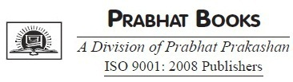

द लीडर इन यू
डेल कार्नेगी

संपादक का नोट
महान नेता ऐसे व्यक्ति होते हैं जो उनके द्वारा किए गए काम के बारे में भावुक और आत्मविश्वास से भरे होते हैं, और वे दूसरों को इस प्रक्रिया में ऐसा करने के लिए प्रेरित करते हैं। डेल कारनेगी की दृष्टि प्रत्येक व्यक्ति के भीतर नेतृत्व गुणों को बेहतर बनाने के लिए, कॉर्पोरेट टीम बिल्डिंग से फैली हुई है। एक पेशेवर या व्यक्तिगत स्तर पर होने के नाते, डेल कार्नेगी प्रेरणा और मार्गदर्शन का एक बड़ा स्रोत रहा है, जो किसी के जीवन पर कमांड लेने के आत्म-मूल्यांकन के प्रति सकारात्मक दृष्टिकोण के साथ सभी को मजबूत करता है। वह अपने पेशेवर और व्यक्तिगत जीवन के प्रति लोगों के विचारों और दृष्टिकोण में उत्साह को प्रज्वलित करने में बेहद सफल रहे हैं।
अपने पाठकों के लिए पुस्तक के इस संस्करण को लाकर, हमने सुनिश्चित किया है कि डेल कार्नेगी का दृष्टिकोण पाठक के लिए सरासर परिशुद्धता के साथ अच्छी तरह से निर्देशित है, जिस तरह से लेखक प्रस्तुत करना चाहते हैं।
लीडर इन यू एक अभिव्यक्त चरण-दर-चरण मार्गदर्शिका है; एक रचनात्मक और रोमांचक कार्य जीवन के लिए सिद्धांतों, सुझावों, विचारों और रणनीतियों का प्रदर्शन करना, चाहे कोई भी पेशा हो।
परिचय
मानव-संबंध
हर समय बदलने के लिए अपना दिमाग खुला रखें। आपका स्वागत है। इसे कोर्ट करें। यह केवल आपकी राय और विचारों की जांच और पुनर्निधारण द्वारा है जिसे आप प्रगति कर सकते हैं।
-डेल कार्नेगी
एक रों इक्कीसवीं सदी पास जाते है, दुनिया बहुत बड़ा परिवर्तन, महान उथल-पुथल और महान संभावना की एक प्रक्रिया के दौर से गुजर रहा है। कुछ ही वर्षों में, हमने पोस्ट-इंडस्ट्रियल सोसायटी, सूचना युग के आगमन, कम्प्यूटरीकरण के लिए भीड़, जैव प्रौद्योगिकी के जन्म, और इन परिवर्तनों में से कम से कम, मानव-संबंधों की क्रांति को नहीं देखा है।
शीत युद्ध की समाप्ति के साथ, व्यापारिक वातावरण नाटकीय रूप से अधिक तीव्र हो गया है। प्रतिस्पर्धा अधिक वैश्विक और अधिक सक्रिय हो गई है। और प्रौद्योगिकी दौड़। अब व्यवसाय सुरक्षित रूप से अपने ग्राहकों की इच्छाओं और जरूरतों को अनदेखा नहीं कर सकते हैं। अब प्रबंधक केवल आदेश जारी कर सकते हैं और उनसे अपेक्षा कर सकते हैं कि वे बिना किसी आज्ञा के मानें। अब व्यक्तिगत रिश्तों को नहीं लिया जा सकता है। अब लगातार गुणवत्ता में सुधार से कंपनियां कमतर नहीं हो सकती हैं। अब इतनी मानवीय रचनात्मकता इतनी लांछित नहीं हो सकती।
आने वाले वर्षों में जीवित रहने के लिए, सफल संगठनों में - व्यवसाय में, सरकार में, गैर-लाभकारी विश्व में - एक गहरा सांस्कृतिक परिवर्तन से गुजरना पड़ता है। उनके लोगों को जल्दी से सोचना होगा, होशियारी से काम करना होगा, सपने देखना होगा, और बहुत अलग तरीके से एक-दूसरे से संबंध स्थापित करना होगा।
सबसे महत्वपूर्ण बात यह है कि इस सांस्कृतिक बदलाव के लिए पूरी तरह से एक नई नस्ल के नेता की आवश्यकता होगी, हम में से अधिकांश के विपरीत काम करने वाले मालिकों के विपरीत एक नेता और शायद हम में से कुछ बन गए हैं। वह दिन लद गया जब एक कंपनी को एक बुलव और कुर्सी के साथ चलाया जा सकता था।
कल के नेताओं को उन संगठनों के लिए एक वास्तविक दृष्टि और मूल्यों की भावना स्थापित करनी होगी जो वे नेतृत्व करना चाहते हैं। इन नेताओं को अतीत के नेताओं की तुलना में कहीं अधिक प्रभावी ढंग से संवाद करना और प्रेरित करना होगा। उन्हें निरंतर परिवर्तन की शर्तों के माध्यम से उनके बारे में अपनी बुद्धि रखनी होगी। और इन नए नेताओं को प्रतिभा और रचनात्मकता के हर औंस को मेरा करना होगा जो कि उनके संगठनों के पास कार्यकारी तल के लिए दुकान के फर्श से हैं।
इस सभी उथल-पुथल की जड़ों का पता उन दशकों में लगाया जा सकता है जो द्वितीय विश्व युद्ध के बाद आए थे। युद्ध के बाद के वर्षों में अमेरिकी कंपनियों ने लगभग जो कुछ भी किया, उसकी परवाह किए बिना समृद्ध हुईं। यूरोप और एशिया की अर्थव्यवस्थाएँ युद्ध के विनाश से प्रभावित थीं, और दुनिया के विकासशील देश अभी तक आर्थिक कारक नहीं थे। बड़ी श्रम और बड़ी सरकार द्वारा समर्थित बड़ी अमेरिकी-आधारित कंपनियां, बाकी सभी के लिए मानक निर्धारित करती हैं। ऐसा नहीं था कि ये कंपनियां इतनी खूबसूरती से चल रही थीं। वे वास्तव में कभी नहीं थे। उनकी खड़ी पदानुक्रमों के साथ, उनके कठोर नौकरी विवरण, और उनके विचार-श्रेष्ठ दृष्टिकोण, वेसदी के मध्य के वर्षों के माध्यम से सही-खुश, खुश, और जितना लाभदायक हो सकता है।
इन कंपनियों ने अपने कर्मचारियों के लिए कितना प्यारा कोकून दिया! एक सभ्य निगम के साथ एक नौकरी कई लोगों के लिए थी जीवन के लिए एक नौकरी - सिविल सेवा से इतना अलग नहीं है, लेकिन बेहतर वेतन और मीठा फ्रिंज लाभ के साथ।
छंटनी? जो लोग सूट जैकेट या कपड़े पहनने के लिए काम करने के लिए कभी छंटनी के बारे में सुना है? शायद कारखाने के श्रमिकों के लिए, लेकिन निश्चित रूप से प्रबंधकीय सेट के लिए नहीं। लोगों ने अक्सर "सफलता की सीढ़ी" के बारे में बात की, और यह है कि वे अपने करियर में कैसे प्रगति करेंगे, एक समय में एक पायदान ऊपर, नीचे या नीचे के लोगों की तुलना में न तो धीमा और न ही तेज। अधूरेपन में हम देखते हैं कि वे आसान संपन्नता के दिन थे; आखिरकार उन्हें खत्म होना पड़ा।
जब अमेरिका युद्ध के बाद के समय का आनंद ले रहा था, जापानी आगे की सोच रहे थे। उनकी अर्थव्यवस्था नष्ट हो गई थी, उनका अधिकांश बुनियादी ढांचा खंडहर में था, और यह सिर्फ शुरुआत थी कि जापानी को क्या मात देनी थी। सस्ते, घटिया माल के उत्पादन और दूसरे दर्जे की ग्राहक सेवा देने के लिए भी उनकी विश्वव्यापी प्रतिष्ठा थी।
लेकिन सभी कठिनाइयों का सामना करने के बाद, जापानी अपनी गलतियों से सीखने के लिए तैयार थे। इसलिए वे बाहर गए और उन सर्वोत्तम सलाहकारों को काम पर रखा जिन्हें वे पा सकते थे, उनमें डॉ। डब्ल्यू। एडवर्ड्स डेमिंग, एक सांख्यिकीविद्, जिन्होंने युद्ध के दौरान संयुक्त राज्य की सेना के गुणवत्ता नियंत्रण कार्यालय में काम किया था।
जापानी के लिए संदेश की मांग: बड़े अमेरिकी निगमों की जटिल संरचनाओं को कॉपी करने की कोशिश न करें। इसके बजाय, डेमिंग और अन्य लोगों ने सलाह दी, एक नई तरह की जापानी कंपनी का निर्माण करें- कंपनी जो कर्मचारी भागीदारी, गुणवत्ता में सुधार के लिए समर्पित हो,और ग्राहकों की संतुष्टि- और उन लक्ष्यों के पीछे सभी कर्मचारियों को एकजुट करने का काम करते हैं।
यह रातोंरात नहीं हुआ, लेकिन जापानी अर्थव्यवस्था का पुनर्जन्म हुआ। जापान तकनीकी नवाचार में अग्रणी बन गया, और जापानी वस्तुओं और सेवाओं की गुणवत्ता बढ़ गई। इस नई भावना के साथ, जापानी फर्मों ने अपने विदेशी प्रतिद्वंद्वियों के साथ बस पकड़ नहीं की। कई महत्वपूर्ण उद्योगों में, जापानी सही अतीत में लुढ़के। जर्मनी के चारों ओर दूर तक फैलने के लिए उनके दृष्टिकोण के लिए लंबे समय तक नहीं लिया गया - जर्मनी तक, स्कैंडेनेविया तक, सुदूर पूर्व में, और प्रशांत रिम के साथ। अमेरिका, दुर्भाग्यवश, पकड़ने के लिए अंतिम में से एक था। यह विलंब महंगा साबित हुआ।
धीरे-धीरे, जाहिर तौर पर, पहली बार, अमेरिका में आसान संपन्नता का क्रूज गैस से बाहर चल रहा था। 1960 और 1970 के दशक के दौरान, बाद की अर्थव्यवस्था का गर्जन कभी-कभार थूक को बाहर निकालने के लिए जोर से था, लेकिन परेशानी के संकेत को नजरअंदाज करना मुश्किल हो गया। तेल महंगा मिला। मुद्रास्फीति और ब्याज दरों में वृद्धि हुई। और प्रतियोगिता केवल एक मजबूत जापान या जर्मनी से नहीं आ रही थी। विदेशों में दर्जनों अन्य देश, आर्थिक परिदृश्य पर बहुत कम झपकी लेते हैं, अचानक नए तेज प्रतिस्पर्धी कौशल के साथ प्रौद्योगिकी के क्षेत्र में आ गए हैं। लंबे समय से पहले वे भी जनरल मोटर्स के प्रमुख बाजार शेयरों पर कब्जा कर रहे थे, जेनिथ से, आईबीएम से, कोडक से, और अन्य स्लाटरिंग कॉर्पोरेट दिग्गजों से।
1980 के दशक के मध्य तक बढ़ती परेशानी को समाहित करना मुश्किल होता जा रहा था। ज़मीन जायदाद को ठेस लगी। कॉरपोरेट ऋण और राष्ट्रीय घाटा गुब्बारा। शेयर बाजार ने अजीबोगरीब काम करना शुरू कर दिया। 1990 के दशक की शुरुआत में घटी मंदीएक बार और दिखाया कि दुनिया कितनी अलग हो गई है।
बीच में पकड़े गए लोगों के लिए, यह सब परिवर्तन सफेद-पोर गति से आने लगा। यदि कंपनियां कॉरपोरेट विलय या अधिग्रहण से गुजर नहीं रही थीं, तो वे दिवालियापन अदालत के मिर्च के पानी में पुनर्गठन या डुबकी लगा रहे थे। फेरी वाले थे। छंटनी हुई। परिवर्तन क्रूर था। यह तेज था। और यह अब सिर्फ ब्लू-कॉलर नहीं था। सफेदपोश रैंक के सभी पेशेवर और अधिकारी एक संकीर्ण भविष्य के साथ आमने-सामने आ रहे थे, और वे निश्चित नहीं थे कि क्या किया जाए।
जाहिर है, इस परिमाण और गति के परिवर्तन ने बहुत प्रभावित किया है कि लोग अपने और अपने करियर के बारे में कैसा महसूस करते हैं। अर्थव्यवस्था के एक छोर से दूसरे छोर तक, इसने असंतोष और भय की अभूतपूर्व लहरें पैदा की हैं।
कुछ लोगों ने प्रौद्योगिकी में अपना विश्वास रखा है, लगा कि दुनिया बस अपना रास्ता खोज सकती है। इस वर्तमान स्थिति की। और प्रौद्योगिकी द्वारा किए जा रहे योगदान को कोई नकार नहीं सकता है।
एक निजी व्यापारी बैंक Saunders Karp & Company के जनरल पार्टनर थॉमस ए। सॉन्डर्स III कहते हैं, "मैं न्यूयॉर्क में अपने कार्यालय में चल सकता हूं और ठीक उसी डेटा का उपयोग कर सकता हूं, जिसका उपयोग जापान में कोई व्यक्ति कर रहा है - ठीक उसी क्षण"। “हम एक ही डेटा सिस्टम से जुड़े हैं, चौबीस घंटे एक दिन। दुनिया में हर जगह के लोगों को एक संचार नेटवर्क में एक साथ रखा जाता है जो किसी भी कल्पना से कहीं अधिक परिष्कृत है। पूंजी बाजार और मुद्रा बाजार सरकारी नियंत्रण से परे हैं। और मुझे उन बाजारों में से किसी के बारे में कुछ भी बताने के लिए अखबार की जरूरत नहीं है।"
दवा के महान शोधकर्ता डॉ। जोनास साल्क कहते हैं, '' आप जो देखते हैं, वह काम में विकास का लाभ है, जिससे क्षमता बढ़ जाती है। “हमें अधिक से अधिक दूरी पर सहयोग करने वाले लोग मिले हैं, इसलिए इस बिंदु पर सौ साल से भी कम समय में अधिक संभव है। आपके पास जितने अधिक संसाधन होंगे, उतने अधिक साधन आपके पास होंगे। "
"याद है जब कंप्यूटर पहली बार दिखाई दिया?" मैल्कम एस फोर्ब्स, जूनियर, व्यापार पत्रिका के प्रधान संपादक से पूछता है जो उनके परिवार का नाम रखता है। “वे बिग ब्रदर के उपकरण थे। टेलीविज़न को प्रचार का साधन होने की आशंका थी। लेकिन उच्च प्रौद्योगिकी के लिए धन्यवाद, वे विपरीत प्रभाव पड़ा है। कंप्यूटर छोटा हो गया और मेनफ्रेम से बहुत कम। शक्ति खगोलीय रूप से बढ़ी, इसलिए आप अब और बंधे नहीं थे।
“माइक्रोचिप मानव मस्तिष्क की पहुंच को बढ़ा रही है जिस तरह से मशीनों ने मानव मांसपेशियों की पहुंच को पिछली शताब्दी में बढ़ाया था। आज सॉफ्टवेयर स्टील का स्लैब बन रहा है। फाइबर ऑप्टिक्स और डिजिटल स्क्रीन परिवहन के लिए रेलमार्ग और राजमार्ग बन रहे हैं, और इसलिए जानकारी कच्चे माल की है। "
"अब," फोर्ब्स आगे बढ़ता है, "आप अपना संदेश और अपना कंप्यूटर काम कर सकते हैं, अपने गोद में थोड़ा, दो-पाउंडर कर सकते हैं - और कहीं भी आप एक प्लग या उपग्रह पा सकते हैं।" परिणाम? अधिक जानकारी तक अधिक लोगों की पहुंच है। फोर्ब्स ने निष्कर्ष निकाला कि लोग देख सकते हैं कि दुनिया के बाकी हिस्सों में क्या हो रहा है। "यह एक बहुत ही लोकतांत्रिक प्रभाव है।"
बर्लिन की दीवार का गिरना, सोवियतब्लॉक का विघटन, चीन में विद्रोह, लैटिन अमेरिका और कैरिबियन में लोकतंत्र के लिए संघर्ष विकासशील दुनिया के चल रहे औद्योगिकीकरण- इन सभी परिवर्तनों से एक नई औद्योगिक स्वतंत्रता और एक नई मान्यता का संकेत मिलता है कि दुनिया एक समुदाय है। संचार प्रौद्योगिकी के व्यापक उपयोग से इन परिवर्तनों में से हर एक को धक्का दिया गया है।
इस परिवर्तन की हड़ताली छवियां अब दुनिया भर में नियमित रूप से मुस्करा रही हैं। चीनी छात्र कैमरों के लिए अंग्रेजी भाषा के बैनर लहरते हैं। सद्दाम हुसैन- और उस मामले के लिए, अमेरिकी संयुक्त चीफ ऑफ स्टाफ- दोनों ने सीएनएन पर फारस की खाड़ी युद्ध की प्रगति का अनुसरण किया।
लेकिन मुश्किल समय में अकेले तकनीक कभी पर्याप्त नहीं होती है। सिर्फ इसलिए कि संचार के साधन आसानी से उपलब्ध हैं इसका मतलब यह नहीं है कि लोगों ने अच्छी तरह से संवाद करना सीख लिया है। बहुत दूर आज भी, वे नहीं है। यह आधुनिक समय की विडंबनाओं में से एक है: संवाद करने की महान क्षमता, ऐसा करने में बड़ी विफलता। यह सब अच्छी जानकारी है अगर लोग इसे साझा करना नहीं जानते हैं?
बहुत समय पहले हार्वर्ड विश्वविद्यालय में ग्रेजुएट स्कूल ऑफ बिजनेस ने अपने छात्रों, पूर्व छात्रों और भर्तीकर्ताओं का सर्वेक्षण नहीं किया था। आज संचार के लिए दबाव की आवश्यकता को देखते हुए, परिणाम किसी आश्चर्य के रूप में नहीं आने चाहिए। "हम क्या पा रहे हैं," हार्वर्ड बिजनेस स्कूल के प्रोफेसर जॉन ए। क्वेलच कहते हैं, "स्नातक छात्रों की तकनीकी क्षमता के साथ संतुष्टि का एक बड़ा उपाय है।"
ये उज्ज्वल युवा संख्या की कमी कर सकते हैं, बाजारों का विश्लेषण कर सकते हैं और व्यावसायिक योजनाओं को विकसित कर सकते हैं, लेकिन जब मानव-संबंध कौशल सिखाने की बात आती है, तो हार्वर्ड अपने प्रयासों को आगे बढ़ा रहा है। "लगता है कि वह क्षेत्र है जहाँ सुधार की आवश्यकता है," क्वेल देखता है। “मौखिक और लिखित संचार, टीम वर्क और अन्य मानव कौशल।"
फिर भी वे बिल्कुल कौशल हैं जो इन युवा व्यापारिक नेताओं की सफलता का निर्धारण करने में सबसे दूर जाएंगे।
निश्चित रूप से, तकनीकी परिष्कार अभी भी महत्वपूर्ण होगा क्योंकि दुनिया आगे बढ़ रही है, लेकिन यह नए व्यापार क्षेत्र में प्रवेश की कीमत है। अंत में विजेता हारे को अपनी बाइट और रैम से विभाजित नहीं किया जाएगा। विजेता स्मार्ट और रचनात्मक नेताओं के साथ संगठन होंगे जो जानते हैं कि कैसे संवाद करना और प्रभावी ढंग से प्रेरित करना है - संगठन के अंदर और बाहर।
टेक्सटाइल बनाने वाली अग्रणी कंपनी मिलिकेन एंड कंपनी के प्रबंधन विकास के निदेशक जॉन रैम्पे कहते हैं, "अच्छे मानव-संबंध कौशल में लोगों को दूसरों को बदलने से लेकर दूसरों को बदलने की क्षमता होती है।" लोगों को स्थानांतरित करने के लिए "निर्देशन से लेकर मार्गदर्शक तक, प्रतिस्पर्धा करने से लेकर सहयोग करने तक, घूंघट गोपनीयता की एक प्रणाली के तहत संचालन से लेकर जानकारी साझा करने में से एक के रूप में इसकी आवश्यकता है, निष्क्रियता के एक मोड से जोखिम लेने के एक मोड में, लोगों को देखने से एक संपत्ति के रूप में लोगों को देखने के खर्च के रूप में। ” वे सीख सकते हैं कि कैसे "जीवन को आक्रोश से संतोष में बदलने के लिए, उदासीनता से भागीदारी में, विफलता से सफलता तक।"
किसी ने कभी नहीं कहा कि ये कौशल स्वाभाविक रूप से आते हैं, और अक्सर वे नहीं करते हैं। दुनिया भर में विज्ञापन देने वाली कंपनी जे वाल्टर थॉम्पसन कंपनी के चेयरमैन बर्ट मैनिंग कहते हैं, "यह जानना आसान नहीं है कि कैसे बेहतर मानवीय रिश्ते प्रदान किए जाएं।" “कुछ लोग हैं जो इसे सहज रूप से करते हैं। लेकिन ज्यादातर लोगों को शिक्षित होना पड़ता है। उन्हें प्रशिक्षित किया जाना है। यह उतना ही प्रशिक्षण लेता है - और उतना ही परिष्कार भी - जैसा कि एक कार कंपनी में एक इंजीनियर होना और एक बेहतर पिस्टन डिजाइन करना है।
“वे कंपनियां जो मानव का एक कैडर बना सकती हैं ऐसे लोग जो कंपनी के कारण को आगे बढ़ाने का काम करते हैं, वे दूसरे आदमी को हरा देते हैं, ”मैनिंग कहते हैं। "वे कंपनियां हैं जो यह समझती हैं कि सेवा और मानवीय रिश्ते सफलता में बहुत बड़ा अंतर करने वाले हैं।"
डेल कारनेगी विस्फोटक परिवर्तन के दिनों के लिए आसान संपन्नता के दिनों को देखने के लिए पर्याप्त समय तक नहीं रहते थे। और उन्होंने इस नई मानव-संबंध क्रांति के आगमन का कभी गवाह नहीं बनाया। लेकिन लंबे समय से पहले किसी ने भी कॉरपोरेट दृष्टि, कर्मचारी सशक्तिकरण या गुणवत्ता-सुधार की प्रक्रिया के बारे में सुना था, कार्नेगी कुछ महत्वपूर्ण मानव-संबंधों की अवधारणाओं का नेतृत्व कर रहे थे जो उन महत्वपूर्ण विचारों के केंद्र में थे।
1912 में कार्नेगी न्यूयॉर्क शहर पहुंचे, उत्तर पश्चिम मिसौरी के एक युवा ने यह जानने की कोशिश की कि उनके जीवन का क्या करना है। उन्होंने अंततः 125 वें स्ट्रीट वाईएमसीए में नौकरी हासिल की, रात में वयस्कों को सार्वजनिक बोलना सिखाया।
"सबसे पहले," कार्नेगी ने कई साल बाद लिखा, "मैंने सार्वजनिक बोलने वाले पाठ्यक्रमों का आयोजन किया- वयस्कों को प्रशिक्षित करने के लिए डिज़ाइन किए गए पाठ्यक्रम, वास्तविक अनुभव से, अपने पैरों पर सोचने के लिए और अधिक स्पष्टता, अधिक प्रभावशीलता और अधिक कविता के साथ अपने विचारों को व्यक्त करने के लिए, दोनों व्यवसाय साक्षात्कार और समूहों से पहले।
"लेकिन धीरे-धीरे, जैसे-जैसे मौसम बीतता गया, मुझे एहसास हुआ कि जैसे-जैसे इन वयस्कों को प्रभावी बोलने में प्रशिक्षण की आवश्यकता थी, उन्हें रोजमर्रा के व्यवसाय और सामाजिक संपर्कों में लोगों के साथ प्राप्त करने की ललित कला में अभी भी अधिक प्रशिक्षण की आवश्यकता थी।"
इसलिए कार्नेगी ने कुछ बुनियादी मानव-संबंध कौशल को शामिल करने के लिए अपने पाठ्यक्रम को व्यापक बनाया। उनके पास कोई पाठ्यपुस्तक, कोई आधिकारिक पाठ्यक्रम, कोई प्रकाशित पाठ्यक्रम गाइड नहीं था। लेकिन उन्होंने इसके लिए व्यावहारिक तकनीकों की बढ़ती सूची बनाई थीदुनिया में हो रही है, और वह हर दिन उन तकनीकों का परीक्षण कर रहा था।
"दूसरे व्यक्ति के दृष्टिकोण से चीजों को देखें," उन्होंने अपने छात्रों को बताया। “ईमानदारी और ईमानदारी से सराहना करें। दूसरों में सच्ची दिलचस्पी पैदा करें। ” उन्होंने अपने छात्रों को इन बुनियादी मानवीय-संबंधों के सिद्धांतों को अपने जीवन के ताने-बाने में बुनने का तरीका दिखाया।
शुरुआत में, कार्नेगी ने सिर्फ तीन-बाई-पांच इंच के कार्ड पर अपने नियमों का उल्लंघन किया। जल्द ही उन पत्तों को एक पत्रक द्वारा बदल दिया गया, जिसे पुस्तिकाओं की एक श्रृंखला से बदल दिया गया, प्रत्येक अंतिम से बड़ा था। पंद्रह वर्षों के श्रमसाध्य प्रयोग के बाद, कार्नेगी ने अपने सभी मानव-संबंध सिद्धांतों को इकट्ठा किया और उन्हें एक पुस्तक में डाल दिया। विन फ्रेंड्स एंड इंफ़्लुएंस पीपल कैसे करें, जो 1936 में दिखाई दिया था, डेल कार्नेगी का दूसरों के साथ सफलतापूर्वक व्यवहार करने का सीधा मार्गदर्शक था।
किताब निकाल ली। तीस मिलियन प्रतियां बाद में, हाउ टू विन फ्रेंड्स लिखित शब्द के इतिहास में सबसे अधिक बिकने वाली पुस्तकों में से एक थी। इसका कई दर्जन भाषाओं में अनुवाद किया गया है, और यह आज भी बिक रहा है।
कार्नेगी ने अपने मानव-संबंध संदेश को फैलाने के लिए, डेल कार्नेगी एंड एसोसिएट्स, इंक नामक एक कंपनी का गठन किया और उन्हें दुनिया भर में एक उत्सुक दर्शक मिले। वह रेडियो और टेलीविजन पर नियमित रूप से दिखाई देते थे। उन्होंने दूसरों को अपने पाठ्यक्रम को पढ़ाने का तरीका सिखाया, और उन्होंने दो और मानव-संबंधों की किताबें लिखीं, द क्विक एंड इज़ी वे टू इफ़ेक्ट स्पीकिंग और हाउ टू स्टॉप वरीइंग एंड स्टार्ट लिविंग, बेस्ट सेलर्स दोनों। यहां तक कि 1955 में कार्नेगी की मृत्यु ने भी उनके विचारों के प्रसार को बाधित नहीं किया।
आज डेल कार्नेगी कोर्स अमेरिका और सत्तर अन्य देशों में एक हजार से अधिक शहरों और कस्बों में पेश किया जाता है। प्रत्येक सप्ताह एक और तीनहजार लोग नामांकन करते हैं। कार्नेगी संगठन अब इस बिंदु पर बढ़ गया है कि यह फॉर्च्यून 500 फर्मों के चार सौ से अधिक के लिए प्रशिक्षण कार्यक्रमों को डिजाइन करता है।
प्रत्येक नई पीढ़ी के साथ, कार्नेगी संदेश ने बदलती दुनिया की जरूरतों को पूरा करने के लिए खुद को फिर से परिभाषित करने की एक अदम्य क्षमता दिखाई है। अन्य लोगों के साथ प्रभावी ढंग से संवाद करना, उन्हें हासिल करने के लिए प्रेरित करना, हर किसी के अंदर नेता की खोज करना - ये डेल कार्नेगी की अंतर्दृष्टि का प्राथमिक फोकस थे। अपनी मौजूदा स्थिति में दुनिया के साथ, उसका समय फिर से आ गया है। अनुसरण करने वाले पृष्ठों में, कार्नेगी के मानव-संबंधों के सिद्धांतों को आज लोगों के सामने आने वाली चुनौतियों के अनूठे सेट पर लागू किया जाता है।
ये सिद्धांत बुनियादी और समझने में आसान हैं। वे कोई विशेष शिक्षा या तकनीकी कौशल की मांग नहीं करते हैं। उन्हें अभ्यास की आवश्यकता है और सीखने की वास्तविक इच्छा है।
क्या आप दुनिया के कुछ दीर्घकालिक विचारों को चुनौती देने के लिए तैयार हैं? क्या आप अधिक सहजता और सफलता के साथ अपने रिश्तों को संभालने के लिए तैयार हैं? क्या आप अपने सबसे कीमती कब्जे, अपने व्यक्तिगत और पेशेवर जीवन में लोगों का मान बढ़ाना चाहेंगे? क्या आप नेता को खोजने और जारी करने के लिए तैयार हैं?
यदि हां, तो पढ़ें। आगे जो आता है वह बस आपकी जिंदगी बदल सकता है।
अध्याय 1
आप में अग्रणी का पता लगाना
चार्ल्स श्वाब को इस्पात व्यवसाय में एक वर्ष में एक मिलियन डॉलर का वेतन दिया गया था, और उन्होंने मुझे बताया कि लोगों को संभालने की उनकी क्षमता के कारण उन्हें इस बड़े वेतन का भुगतान किया गया था। कल्पना करो कि! एक मिलियन डॉलर प्रति वर्ष क्योंकि वह लोगों को संभालने में सक्षम था! अनादिकाल में एक दिन, श्वाब अपनी एक स्टील मिल से गुजर रहा था, जब वह पुरुषों के एक समूह में एक संकेत के तहत सीधे धूम्रपान कर रहा था जिसने नो स्मोकिंग कहा।
क्या आपको लगता है कि चार्ल्स श्वाब ने संकेत पर कहा और कहा, "क्या आप पढ़ नहीं सकते?"
बिल्कुल नहीं, मानवीय संबंधों के उस स्वामी नहीं।
श्री श्वाब ने मैत्रीपूर्ण तरीके से पुरुषों के साथ बातचीत की और कभी इस तथ्य के बारे में एक शब्द भी नहीं कहा कि वे धूम्रपान के संकेत के तहत धूम्रपान कर रहे थे।
अंत में उसने उन्हें कुछ सिगार सौंपे और अपनी आंख में एक ट्विंकल के साथ कहा, "मैं इसकी सराहना करता हूं, लड़कों, अगर आप इन बाहर धूम्रपान करेंगे"।
इतना ही उसने कहा। उन लोगों को पता था कि वह जानता था कि उन्होंने एक नियम को तोड़ा है, और उन्होंने प्रशंसा की कि वह उन्हें नीचे नहीं बुलाया था। वह उनके साथ इतना अच्छा खेल था कि वे उसके साथ अच्छा खेल बनना चाहते थे।
डेल कारनेगीइ
एफ रेड विल्पन न्यूयॉर्क मेट्स बेसबॉल टीम के अध्यक्ष हैं। एक दोपहर विल्सन शिया स्टेडियम के दौरे पर स्कूली बच्चों के एक समूह का नेतृत्व कर रहे थे। उसने उन्हें घर की थाली के पीछे खड़ा कर दिया। वह उन्हें टीम के डगआउट में ले गया। वह उन्हें निजी मार्ग से क्लब हाउस तक ले गया। अपने दौरे पर अंतिम पड़ाव के रूप में, विल्पोन छात्रों को स्टेडियम बुल पेन में ले जाना चाहते थे, जहां घड़े गर्म होते थे।
लेकिन बैल पेन गेट के ठीक बाहर, एक वर्दीधारी सुरक्षा गार्ड द्वारा समूह को रोक दिया गया।
"बुल पेन जनता के लिए खुला नहीं है," गार्ड ने विल्पन से कहा, स्पष्ट रूप से अनजान है कि वह कौन था। "मुझे खेद है, लेकिन आप वहां नहीं जा सकते।"
अब, फ्रेड विल्पन निश्चित रूप से वह प्राप्त करने की शक्ति रखता था जो वह तब और वहीं चाहता था। वह इतने महत्वपूर्ण व्यक्ति को खुद को पहचानने में नाकाम रहने के लिए गरीब सुरक्षा गार्ड को बर्स्ट कर सकता था। एक नाटकीय उत्कर्ष के साथ, विल्पोन ने अपने शीर्ष-स्तरीय सुरक्षा पास को चाबुक से उड़ा दिया और विस्तृत आंखों वाले बच्चों को दिखाया कि उसने शिया पर कितना भार उठाया।
विल्पोन ने ऐसा कुछ नहीं किया। वह छात्रों को स्टेडियम के दूर की ओर ले गया और उन्हें दूसरे गेट से होते हुए बुल पेन में ले गया।
उसने ऐसा करने की जहमत क्यों उठाई? विल्पन सुरक्षा गार्ड को शर्मिंदा नहीं करना चाहता था। आदमी, आखिरकार, अपना काम कर रहा था और इसे अच्छी तरह से कर रहा था। बाद में उस दोपहर विल्पोन ने इस तरह की चिंता दिखाने के लिए गार्ड को धन्यवाद देते हुए एक हस्तलिखित नोट भी भेजा।
यदि विल्पोन को चिल्लाने या एक दृश्य के बजाय चुना जाता था, तो गार्ड अच्छी तरह से नाराजगी महसूस कर सकता था, और कोई संदेह नहीं कि उसके काम का परिणाम होगा। विल्पोन के सौम्य दृष्टिकोण ने असीम रूप से अधिक समझ बनाई। तारीफ के लिए गार्ड को बहुत अच्छा लगा। और आप शर्त लगा सकते हैं कि वह अगली बार विलपोन को पहचान लेगा जब दोनों में से कोई एक होगा।
फ्रेड विल्पन एक नेता हैं और सिर्फ इसलिए नहीं हैं शीर्षक वह रखता है या वह वेतन जो वह कमाता है। जो उसे पुरुषों और महिलाओं का नेता बनाता है वह कैसे बातचीत करना सीखता है।
अतीत में व्यवसाय की दुनिया के लोगों ने नेतृत्व के सही अर्थ को ज्यादा सोचा नहीं था। बॉस बॉस था, और वह प्रभारी था। अवधि। चर्चा का अंत।
अच्छी तरह से चलने वाली कंपनियाँ - किसी ने भी “अच्छी तरह से अगुवाई वाली कंपनियों ” के बारे में बात नहीं की है - जो लगभग सैन्य शैली में संचालित होती हैं। आदेश ऊपर से वितरित किए गए और रैंकों के माध्यम से पारित किए गए।
ब्लौंडी कॉमिक स्ट्रिप से मिस्टर डिथर्स याद है? "नितंब-स्टेड!" वह चिल्लाएगा, और युवा डागवुड भयभीत पिल्ला की तरह बॉस के कार्यालय में भाग जाएगा। वास्तविक जीवन की कई कंपनियों ने सालों तक इस तरह काम किया। जिन कंपनियों को सेना की प्लेटों की तरह नहीं चलाया गया था, वे बमुश्किल ही चलती थीं। वे बस वैसे ही डाल देते थे जैसा कि वे हमेशा करते थे, कुछ ऐसे बाजार में जो कुछ वर्षों से चुनौती नहीं थे। ऊपर से संदेश हमेशा था, "अगर यह टूट नहीं गया है, तो इसे ठीक क्यों करें?"
जिन लोगों की ज़िम्मेदारी थी, वे अपने कार्यालयों में बैठे और वे जो कर सकते थे, उसमें कामयाब रहे। उनसे यही उम्मीद की जाती है कि वे "प्रबंधन" करें। हो सकता है कि उन्होंने संगठनों को बाईं ओर कुछ डिग्री या दाईं ओर कुछ डिग्री पर कदम रखा हो। आमतौर पर उन्होंने जो भी स्पष्ट समस्याएं प्रस्तुत कीं, उनसे निपटने की कोशिश की और फिर उन्होंने इसे एक दिन कहा।
जब दुनिया एक सरल जगह थी, तो इस तरह का प्रबंधन ठीक था। दुर्लभ रूप से दूरदर्शी, लेकिन ठीक है, जैसा कि जीवन के साथ-साथ भविष्य में भी लुढ़का है।
लेकिन केवल प्रबंधन अब पर्याप्त नहीं है। दुनिया बहुत अप्रत्याशित है, बहुत अस्थिर है, इस तरह के एक अराजक दृष्टिकोण के लिए बहुत तेजी से आगे बढ़ रही है। क्या जरूरत है अब पुराने की तुलना में बहुत गहरा है-फैशन प्रबंधन। लोगों की मदद के लिए नेतृत्व की जरूरत है
वे जो हासिल करने में सक्षम हैं, भविष्य के लिए एक दृष्टि स्थापित करने के लिए, प्रोत्साहित करने के लिए, प्रशिक्षक और संरक्षक के लिए, और सफल संबंधों को स्थापित करने और बनाए रखने के लिए।
हार्वर्ड बिजनेस स्कूल के प्रोफेसर जॉन क्वेल कहते हैं, "जब अधिक स्थिर वातावरण में कारोबार संचालित होता है, तो प्रबंधन कौशल पर्याप्त था।" "लेकिन जब व्यापार का माहौल अस्थिर हो जाता है, जब पानी का बहाव नहीं होता है, जब आपके मिशन को आपके द्वारा पहले से अधिक लचीलेपन की आवश्यकता होती है, तो यह होगा कि नेतृत्व कौशल महत्वपूर्ण हो जाएगा।"
"परिवर्तन पहले से ही हो रहा है, और मुझे यकीन नहीं है कि सभी संगठन इसके लिए तैयार हैं," एक प्रमुख सेमीकंडक्टर निर्माता, एसजीएस-थॉमसन माइक्रोइलेक्ट्रॉनिक, इंक। में मानव संसाधन निदेशक बिल माखिलाहिला कहते हैं। “प्रबंधक’ नामक स्थिति बहुत अधिक समय तक मौजूद नहीं रह सकती है, और will नेतृत्व ’की अवधारणा को फिर से परिभाषित किया जाएगा। कंपनियां आज उस संघर्ष से गुजर रही हैं। वे महसूस कर रहे हैं, क्योंकि वे अपने संचालन को कम करना शुरू कर देते हैं और अधिक उत्पादकता के लिए पहुंचते हैं, कि सुविधात्मक कौशल प्राथमिक होने जा रहे हैं। अच्छा संचार, पारस्परिक कौशल, कोच बनाने, मॉडल बनाने और टीमों का निर्माण करने की क्षमता - इन सभी के लिए अधिक और बेहतर नेताओं की आवश्यकता होती है।
“आप इसे अब निर्देशन द्वारा नहीं कर सकते। इसे प्रभाव से होना है। यह वास्तविक 'लोगों के कौशल' लेता है।
बहुत से लोगों को अभी भी इस बात की संकीर्ण समझ है कि नेतृत्व वास्तव में क्या है। आप कहते हैं, "नेता" और वे सामान्य, राष्ट्रपति, प्रधानमंत्री या बोर्ड के अध्यक्ष के बारे में सोचते हैं। जाहिर है, उन अतिरंजित पदों पर लोगों का नेतृत्व करने की उम्मीद की जाती है, एक अपेक्षा जो उन्हें सफलता के विभिन्न स्तरों के साथ मिलती है। लेकिन का तथ्यमामला यह है कि नेतृत्व बहुत ऊपर से शुरू और समाप्त नहीं होता है। यह प्रत्येक बिट जितना महत्वपूर्ण है, शायद अधिक महत्वपूर्ण है, हम में से अधिकांश स्थानों पर रहते हैं और काम करते हैं।
एक छोटी सी काम टीम का आयोजन, एक ऑफिस सपोर्ट स्टाफ को ऊर्जावान बनाना, घर में खुशियों को बनाए रखना - जो नेतृत्व की अग्रिम पंक्तियाँ हैं। नेतृत्व करना कभी आसान नहीं होता। लेकिन शुक्र है कि कुछ और भी सच है: हम में से हर किसी में हर दिन एक नेता होने की क्षमता है।
टीम फैसिलिटेटर, मिडिल मैनेजर, अकाउंट एग्जीक्यूटिव, कस्टमर-सर्विस ऑपरेटर, मेल रूम में काम करने वाले व्यक्ति- बस किसी के बारे में जो कभी दूसरों के संपर्क में आता है, उसके पास सीखने का अच्छा कारण है।
एक बड़ी हद तक उनके नेतृत्व कौशल यह निर्धारित करेंगे कि वे कितनी सफलता प्राप्त करते हैं और वे कितने खुश होंगे। सिर्फ काम पर ही नहीं। परिवार, चैरिटी समूह, खेल टीम, नागरिक संघ, सामाजिक क्लब, आप इसे नाम देते हैं - उन संगठनों में से हर एक को गतिशील नेतृत्व की जबरदस्त आवश्यकता है।
स्टीवन जॉब्स और स्टीवन वोज्नियाक कैलिफ़ोर्निया के ब्लू-जींस पहने बच्चों की एक जोड़ी थी, उम्र इक्कीस और छब्बीस। वे अमीर नहीं थे, उनके पास कोई व्यावसायिक प्रशिक्षण नहीं था, और वे उस उद्योग में शुरू होने की उम्मीद कर रहे थे जो उस समय मुश्किल से मौजूद थे।
वर्ष 1976 था, इससे पहले कि ज्यादातर लोग अपने घरों के लिए कंप्यूटर खरीदने के बारे में सोचते थे। उन दिनों पूरे घर-कंप्यूटर व्यवसाय ने कुछ दिमागदार शौकियों को जोड़ा, मूल "कंप्यूटर नर्ड"। इसलिए जब जॉब्स और वोज्नियाक ने एक वैन और दो कैलकुलेटर बेचकर तेरह सौ डॉलर की राशि जमा की, तो जॉब के गैरेज में Apple Computer, Inc. को खोल दिया, उनकी स्मैशिंग की सफलता के खिलाफ मुश्किलें काफी लंबी लग रही थीं।
लेकिन इन दोनों युवा उद्यमियों के पास एक विजन था, एक उन्हें क्या हासिल हुआ, इस पर स्पष्ट विचार। "कंप्यूटर अब सिर्फ बेवकूफों के लिए नहीं हैं," उन्होंने घोषणा की। “कंप्यूटर मन की साइकिल बनने जा रहे हैं। कम लागत वाले कंप्यूटर सभी के लिए हैं। "
पहले दिन से Apple के संस्थापकों ने अपनी दृष्टि को अक्षुण्ण रखा और उन्होंने हर मोड़ पर इसका संचार किया। उन्होंने दृष्टि को समझने वाले लोगों को काम पर रखा और उन्हें इसके पुरस्कारों में हिस्सा दिया। वे रहते थे और सांस लेते थे और दृष्टि से बात करते थे। यहां तक कि जब कंपनी ठप हो गई - जब खुदरा विक्रेताओं ने कहा कि कोई धन्यवाद नहीं, जब विनिर्माण लोगों ने कोई रास्ता नहीं कहा, जब बैंकरों ने कहा कि कोई और नहीं - एप्पल के दूरदर्शी नेताओं ने कभी भी समर्थन नहीं किया।
आखिरकार दुनिया घूम आई। Apple की स्थापना के छह साल बाद, कंपनी एक साल में 650,000 पर्सनल कंप्यूटर बेच रही थी। वोज्नियाक और जॉब्स अपने समय से कई साल पहले गतिशील व्यक्तिगत नेता थे।
यह सिर्फ नए संगठन नहीं हैं, हालांकि, दूरदर्शी नेतृत्व की जरूरत है। 1980 के दशक की शुरुआत में, कॉर्निंग, निगमित, एक भयानक निचोड़ में पकड़ा गया था। कोर्निंग नाम का अभी भी बरतन में कुछ मतलब था, लेकिन उस नाम को गंभीरता से कम किया जा रहा था। कंपनी की मैन्युफैक्चरिंग तकनीक को पछाड़ दिया गया। इसका बाजार हिस्सा नीचे था। कॉर्निंग ग्राहक हज़ारों विदेशी कंपनियों को दोष दे रहे थे। और कंपनी के कठोर प्रबंधन का कोई सुराग नहीं लगा।
जब चेयरमैन जेम्स आर। ह्यूटन ने निष्कर्ष निकाला कि कॉर्निंग को एक पूरी नई दृष्टि की आवश्यकता थी, और उन्होंने एक प्रस्ताव दिया। रिकॉल ह्यूटन: “हमारे पास एक बाहरी सलाहकार था जो मेरे और मेरी नई टीम के साथ काम कर रहा था और हमारे निवासी सिकुड़ रहे थे। वह वास्तव में एक सुविधाभोगी व्यक्ति था, जो एक अद्भुत लड़का था जो गुणवत्ता के मुद्दे पर कुछ कर रहा था क्योंकि हमें इसमें शामिल होना था।
“हम उन भयानक सामूहिक बैठकों में से एक थे, और हर कोई बहुत उदास था। मैंने उठकर घोषणा की कि हम लगभग दस मिलियन रुपये खर्च करने जा रहे हैं जो हमारे पास नहीं थे। हम अपना खुद का गुणवत्ता संस्थान स्थापित करने जा रहे थे। हम इस पर जा रहे थे।
“बहुत सारी अलग-अलग चीजें थीं जो मुझे शीर्ष पर रखती थीं। लेकिन मैं स्वीकार करने के लिए तेज हूं, मुझे सिर्फ यह महसूस करना चाहिए कि यह सही था। मुझे इस बात का कोई अंदाजा नहीं था कि कोई भी, और कितना महत्वपूर्ण होगा। ”
ह्यूटन को पता था कि कॉर्निंग को अपने निर्माण की गुणवत्ता में सुधार करना होगा और प्रसव के समय को तेज करना होगा। चेयरमैन ने जो किया वह एक जोखिम था। उन्होंने दुनिया के सर्वश्रेष्ठ विशेषज्ञों से सलाह मांगी- उनके अपने कर्मचारी। सिर्फ मैनेजर और कंपनी के इंजीनियर ही नहीं। हाउटन को लाइन के कर्मचारियों में भी लाया गया। उन्होंने एक प्रतिनिधि टीम को एक साथ रखा और उनसे कहा कि वे कॉमिंग की पूरी विनिर्माण प्रक्रिया को फिर से डिज़ाइन करें- यही कारण है कि कंपनी को चारों ओर लाने में मदद मिली।
असेंबली लाइन पर और मशीनों को रेटुल करने के लिए तेज़ करें। टीमों ने तेजी से बदलाव लाने के लिए कॉर्निंग ने अपने आविष्कारों को रखने के तरीके को भी पुनर्गठित किया। परिणाम आश्चर्यजनक थे। जब ह्यूटन ने इन परिवर्तनों को लॉन्च किया, तो एक नई फाइबर-ऑप्टिक्स कोटिंग प्रक्रिया में अनियमितताएं प्रति मिलियन आठ सौ भागों में चल रही थीं। चार साल बाद वह उपाय शून्य हो गया। दो और वर्षों में डिलीवरी का समय हफ्तों से दिनों तक काटा गया था, और चार साल के अंतराल में इक्विटी पर कॉमिंग की वापसी लगभग दोगुनी हो गई। ह्यूटन की दृष्टि ने कंपनी को सचमुच बदल दिया।
व्यापार सिद्धांतकारों वारेन बेंस और बर्ट नानस ने सैकड़ों सफल संगठनों का अध्ययन किया है, बड़े और छोटे, जिस तरह से वे हैं उस पर ध्यान केंद्रित करते हुए एलईडी। "एक नेता," दो लोग लिखते हैं, "पहले संगठन के संभावित और वांछनीय भविष्य की मानसिक छवि विकसित करनी चाहिए। यह छवि, जिसे हम एक दृष्टि कहते हैं, एक सपने के रूप में या लक्ष्य या मिशन के बयान के रूप में सटीक हो सकती है। ” महत्वपूर्ण बिंदु, बेंस और नानुस बताते हैं, "यह है कि एक दृष्टि संगठन के लिए एक यथार्थवादी, विश्वसनीय, आकर्षक भविष्य के दृष्टिकोण को व्यक्त करती है, एक शर्त जो अब मौजूद है की तुलना में कुछ महत्वपूर्ण तरीकों से बेहतर है।"
नेता पूछते हैं: यह कार्य दल कहां है? यह विभाजन किस लिए खड़ा है? हम किसकी सेवा करने की कोशिश कर रहे हैं? हम अपने काम की गुणवत्ता कैसे सुधार सकते हैं? विशिष्ट उत्तर उतने ही अलग होंगे जितने लोगों का नेतृत्व किया जा रहा है, जितना कि स्वयं नेता। सबसे महत्वपूर्ण यह है कि प्रश्न पूछे जाते हैं।
नेतृत्व करने का कोई एक सही तरीका नहीं है, और प्रतिभाशाली नेता कई व्यक्तित्व प्रकारों में आते हैं। वे जोर से या शांत, मजाकिया या गंभीर, सख्त या कोमल, उद्दाम या शर्मीले हैं। वे सभी उम्र, किसी भी जाति, दोनों लिंगों, और हर तरह के समूह से आते हैं।
यह विचार केवल उस सबसे सफल नेता की पहचान करना नहीं है जिसे आप पा सकते हैं और फिर उसके या उसके बाद अपने आप को मॉडल बना सकते हैं। यह रणनीति शुरू से ही बर्बाद है। आप कभी भी उस व्यक्ति की खराब नकल से ऊपर उठने की संभावना नहीं रखते हैं जो आप होने का नाटक कर रहे हैं। नेतृत्व तकनीकें जो आपके लिए सबसे अच्छा काम करेंगी वे हैं जिनका आप पोषण करते हैं।
फ्रेड Ebb एक टोनी पुरस्कार विजेता संगीतकार जिसका हिट ब्रॉडवे शो कैबरे, स्पाइडर महिला, शिकागो, और जोरबा के चुंबन शामिल है। पेशेवर मार्गदर्शन के लिए अक्सर युवा गीतकार एब में आते हैं। "मैं हमेशा उन्हें उस सलाह का पालन करने के लिए कहता हूं जो इरविंग बर्लिन के पास जॉर्ज गेर्शविन के लिए थी।"
ऐसा लगता है कि जब बर्लिन और गेर्शविन पहली बार मिले थे, बर्लिन पहले से ही प्रसिद्ध था और गेर्शविन सिर्फ एक संघर्षरत युवा संगीतकार थे, जो सप्ताह में पैंतीस डॉलर में टिन पैन एले पर काम कर रहे थे। गेर्शविन की स्पष्ट प्रतिभा से प्रभावित होकर, बर्लिन ने युवक को अपने संगीत सचिव के रूप में लगभग तीन गुना की नौकरी की पेशकश की, जो गेर्शविन गीत लिखने के लिए कमा रहा था।
"लेकिन मैं नौकरी नहीं करता" बर्लिन ने सलाह दी। यदि आप ऐसा करते हैं, तो आप दूसरी दर बर्लिन में विकसित हो सकते हैं। लेकिन अगर आप खुद के होने पर जोर देते हैं, तो किसी दिन आप पहली दर बन जाएंगे
Gershwin। "
गेर्शविन निश्चित रूप से गेर्शविन के साथ फंस गए, और अमेरिकी लोकप्रिय संगीत नई ऊंचाइयों पर पहुंच गया। "Ebb दूसरों की नकल करने की कोशिश मत करो," Ebb अपने proteges बताता है। "कभी खुद को रोकना मत।"
अक्सर इसकी आवश्यकता होती है कि आप वास्तव में कौन हैं और उस अंतर्दृष्टि को काम करने के लिए सोच समझकर लगाते हैं। यह इतना महत्वपूर्ण है कि यह थोड़ा शांत प्रतिबिंब के लायक है। अपने आप से सीधा सवाल पूछें: मेरे पास कौन से व्यक्तिगत गुण हैं जो नेतृत्व के गुणों में बदल सकते हैं?
रॉबर्ट एल। क्रैन्डल के लिए, उन गुणों में से एक परिवर्तन की आशा करने की गहरी क्षमता है। एएमआर कॉरपोरेशन के अध्यक्ष क्रैंडल ने हवाई यात्रा व्यवसाय में एक बेहद अशांत युग के माध्यम से अमेरिकन एयरलाइंस का संचालन किया।
ओलंपिक जिम्नास्ट मैरी लू रेटन को उनके प्राकृतिक उत्साह से बड़ा बढ़ावा मिला। वह पश्चिम वर्जीनिया के एक छोटे से शहर से बाहर निकली और हर जगह लोगों के दिलों में उतर गई।
दिग्गज एबीसी न्यूजमैन ह्यूग डाउन्स के मामले में, इन नेतृत्व गुणों में से एक उनकी डाउन-टू-अर्थ विनम्रता थी। डाउन्स प्रसारण के अत्यधिक प्रतिस्पर्धी व्यवसाय में खुद के लिए एक विशाल कैरियर बनाने में कामयाब रहे और अभी भी एक सज्जन बने हुए हैं।
जो भी गुण आपके लिए हैं - एक कुत्ते हठ, एक इस्पात-जाल दिमाग, एक महान कल्पना, एक सकारात्मक दृष्टिकोण, मूल्यों की एक मजबूत भावना-उन्हें नेतृत्व में खिलते हैं। और याद रखें कि शब्द की तुलना में क्रियाएं कहीं अधिक शक्तिशाली हैं।
आर्थर ऐश एक विश्व स्तरीय टेनिस खिलाड़ी और एक विश्व-स्तरीय पिता थे - उन और अन्य क्षेत्रों में एक सच्चे नेता। वह भी उदाहरण के द्वारा अग्रणी में विश्वास करते थे।
"मेरी पत्नी और मैं अपनी छह साल की बेटी के साथ इस बारे में बात करते हैं," आशा ने अपनी मृत्यु से ठीक पहले एक साक्षात्कार में कहा। उन्होंने कहा, "बच्चे जो कहते हैं, उससे ज्यादा प्रभावित होते हैं।" “उस उम्र में बच्चे निश्चित रूप से आपको ईमानदार रखते हैं। यदि आप एक चीज का प्रचार सभी के साथ कर रहे हैं और अचानक आप ऐसा नहीं करते हैं, तो वे इसे आपके चेहरे पर लाने जा रहे हैं।
"मैं उसे बताता हूं कि यह मेज पर अपनी कोहनी के साथ खाने के लिए विनम्र नहीं है। फिर रात के खाने के बाद मैं अपनी कोहनी ऊपर कर रहा हूं। वह कहती है, 'डैडी, आपकी कोहनी टेबल पर है।' आपके पास पर्याप्त पुरुष या महिला होने के लिए, कहने के लिए, 'आप ठीक कह रहे हैं', और अपनी कोहनी को नीचे ले जाएं। वास्तव में, यह उसकी सुनने की तुलना में एक अधिक मजबूत सीखने का अनुभव है। इसका मतलब है कि वह अतीत में सुनी थी। वह इसे समझती है। और जब वह उसे देखती है तो वह उसे पहचान लेती है। लेकिन इसे पूरा करने के लिए केवल शब्दों के बजाय कार्रवाई की जाती है। "
एक नेता मानकों को स्थापित करता है और फिर उनसे चिपक जाता है। उदाहरण के लिए, डगलस ए। वार्नर III ने हमेशा इस बात पर जोर दिया है कि वह किसे "पूर्ण पारदर्शिता" कहता है।
जेपी मॉर्गन एंड कंपनी के अध्यक्ष वार्नर कहते हैं, '' जब आप मेरे पास प्रस्ताव लाने आते हैं, तो यह मान लेते हैं कि आपने जो कुछ भी मुझे बताया था वह कल वॉल स्ट्रीट जर्नल के फ्रंट पेज पर दिखाई देगा। क्या आप इस लेनदेन को संभालने में गर्व महसूस कर रहे हैं या इस तरह से इस स्थिति को संभाले हुए हैं जिसकी आपने पूरी पारदर्शिता के साथ सिफारिश की है?
यदि इसका उत्तर नहीं है, तो हम यहीं रुकने वाले हैं और जांच करेंगे कि समस्या क्या है। " वह नेतृत्व की निशानी है।
अच्छी तरह से केंद्रित, आत्मविश्वासी नेतृत्व जैसा है जो दृष्टि को वास्तविकता में बदल देता है। बस मदर टेरेसा से पूछिए। वह एक युवा कैथोलिक नन थी, जो कलकत्ता के एक उच्च-मध्य-वर्ग खंड में हाई स्कूल में पढ़ाती थी। लेकिन वह खिड़की से बाहर देखती रही और सड़क पर कोढ़ियों को देखती रही। "मैंने उनकी आँखों में डर देखा," उसने कहा। "जिस डर से उन्हें कभी प्यार नहीं होगा, उस डर से उन्हें कभी पर्याप्त चिकित्सा नहीं मिलेगी।"
वह अपने मन से उस डर को नहीं हिला सकती थी। वह जानती थी कि उसे कॉन्वेंट की सुरक्षा छोड़नी होगी, सड़कों पर जाना होगा, और भारत के कोढ़ियों के लिए शांति के घर स्थापित करने होंगे। आने वाले वर्षों में, मदर टेरेसा और उनके मिशनरीज़ ऑफ चैरिटी ने कुष्ठ रोग के साथ 149,000 लोगों की देखभाल की है, चिकित्सा ध्यान और बिना शर्त प्यार को दूर करते हुए।
एक दिसंबर के दिन, संयुक्त राष्ट्र को संबोधित करने के बाद, मदर टेरेसा न्यूयॉर्क में एक अधिकतम-सुरक्षा जेल का दौरा करने गईं। जबकि अंदर उसने चार कैदियों से बात की, जिन्हें एड्स था। वह एक ही बार में जान गई कि ये आज के कुष्ठरोगी थे।
वह क्रिसमस से पहले सोमवार को न्यूयॉर्क शहर में वापस आ गया और मेयर एडवर्ड कोच को देखने के लिए सीधे सिटी हॉल गया। उसने मेयर से पूछा कि क्या वह गवर्नर, मारियो कुओमो को टेलीफोन करेगा। कोच ने उसे फोन सौंपने के बाद कहा, "राज्यपाल," मैं सिंग सिंग से वापस आ गई हूं, और चार कैदियों को एड्स है। मैं एक एड्स केंद्र खोलना चाहता हूं। क्या आप उन चार कैदियों को रिहा करने का मन बना लेंगे? मैं उन्हें एड्स सेंटर में पहला चार होना चाहूंगा। ”
"ठीक है, माँ," कुओमो ने कहा, "हमारे पास राज्य जेल प्रणाली में एड्स के तैंतालीस मामले हैं। मैं सभी तेईस को छोड़ दूँगा।"
"ठीक है," उसने कहा। “मैं सिर्फ चार के साथ शुरुआत करना चाहता हूं। अब मैं आपको उस इमारत के बारे में बताता हूं जो मेरे मन में है। क्या आप इसके लिए भुगतान करना चाहेंगे? ”
"ठीक है," क्युमो इस महिला की तीव्रता से सहमत थे।
तब मदर टेरेसा ने मेयर कोच की ओर रुख किया और उनसे कहा, “आज सोमवार है। मैं इसे बुधवार को खोलना चाहता हूं। हम कुछ परमिट की जरूरत के लिए मंजूरी दे दी जा रहे हैं। क्या आप कृपया उन्हें व्यवस्थित कर सकते हैं? ”
कोच ने बस यही देखा छोटी महिला अपने कार्यालय में खड़ी थी और अपने सिर को आगे-पीछे हिला रही थी। "जब तक आप मुझे फर्श नहीं धोते हैं," महापौर ने कहा।
सबसे पहले कदम सफलता अपने खुद के विरोधियों को पहचानने है।
अध्याय 2
संचार करने के लिए शुरू
थियोडोर रूजवेल्ट के बच्चों ने उन्हें स्वीकार किया, और उनके पास अच्छा कारण था। एक पुराना दोस्त एक दिन संकट में रूजवेल्ट के पास आया। उसका छोटा बेटा घर छोड़कर अपनी मौसी के पास रहने चला गया था। लड़का जंगली था। वह यह था और वह वह था। और पिता ने दावा किया कि कोई भी उसके साथ नहीं मिल सकता।
रूजवेल्ट ने कहा, “बकवास। मुझे विश्वास नहीं होता कि लड़के के साथ कोई गलत बात है। लेकिन अगर आत्मा वाला लड़का घर पर सही तरह से इलाज नहीं करवा पाता है, तो वह इसे पाने के लिए कुछ और जगह ले जाएगा। ”
कई दिनों बाद रूजवेल्ट ने उस लड़के को देखा और कहा, "यह सब मैंने तुम्हारे घर छोड़ने के बारे में सुना है?"
"ठीक है, कर्नल," लड़के ने कहा, "हर बार 1 पिताजी के पास जाता है। उन्होंने मुझे अपनी कहानी बताने का कभी मौका नहीं दिया। मैं हमेशा गलत हूं। मैं हमेशा दोषी हूं।
रूजवेल्ट ने कहा, "आप जानते हैं, बेटा," आप अब इस पर विश्वास नहीं कर सकते हैं, लेकिन आपके पिता आपके सबसे अच्छे दोस्त हैं। आप दुनिया के बाकी हिस्सों की तुलना में उससे अधिक हैं। ”
"वह कर्नल रूजवेल्ट हो सकता है," लड़के ने कहा, "लेकिन मेरी इच्छा है कि वह इसे दिखाने का कोई और तरीका अपनाए।"
फिर रूजवेल्ट ने पिता के लिए भेजा, और उसने पिता को कुछ चौंकाने वाली सच्चाइयाँ बतानी शुरू कीं। जिस तरह से लड़के ने वर्णन किया था उसी तरह से फेटियर में विस्फोट हो गया। "यहाँ देखें," रूजवेल्ट ने कहा। यदि आप अपने लड़के से इस तरह बात करते हैं, जैसे आप मुझसे बात कर रहे हैं, तो मुझे आश्चर्य नहीं कि उसने घर छोड़ दिया। मैं केवल अचंभा करता हूं कि उसने पहले ऐसा नहीं किया था। अब तुम जाओ और उससे परिचित हो जाओ। आधे रास्ते से मिलें। ”
डेल कारनेगीइ
एन othing संवाद करने में नाकाम रहने की तुलना में आसान हो सकता है। कृपालु, विरोधाभासी, उबाऊ, नीच, अन्य लोगों के साथ ऐसा व्यवहार करना जैसे कि "मैं मालिक हूं, और आप यहां काम करते हैं" - हाल ही में ये दुनिया के कुछ सबसे बड़े और सबसे प्रसिद्ध कंपनियों के अंदर मानव बातचीत के व्यापक रूप से स्वीकार किए गए रूप थे। "बार्किंग अधिकारों" को एक कार्यालय की खिड़की और दो घंटे के दोपहर के भोजन के साथ-साथ कार्यकारी पदों की एक स्वाभाविक स्थिति माना जाता था। परिवारों, स्कूलों और अन्य संगठनों ने दुर्भाग्य से सूट का पालन किया।
वर्षों से जोर-शोर से समानता का परिचय दिया गया था। श्रेष्ठ ज्ञान से हठ बराबर हो गया। तर्कशीलता ईमानदारी के साथ समान थी। हम सभी को - पर्यवेक्षक और कर्मचारी, माता-पिता और बच्चे, शिक्षक और छात्र - को आभारी होना चाहिए जो उन दिनों के अंत में आ रहे हैं।
क्रिसलर कॉरपोरेशन के पूर्व उपाध्यक्ष जेरी ग्रीनवल्ड, संचार के पुराने कॉर्पोरेट तरीके की तुलना उस बचपन के खेल, टेलीफोन के ट्रिकल-डाउन संस्करण से करते हैं। “अगर दो किशोर एक-दूसरे के बगल में रहते हैं और उनके बीच सुलझने के लिए कुछ है, तो एक लॉन पार कर जाता है, और वे इसे बाहर बात करते हैं। यदि वे एक निगम के दो विभागों में दो लोग थे, तो किशोर अपने बड़े भाई को बताएगा, जो उसकी मां को बताएगा, जो उसके पिता को बताएगा, जो अगले दरवाजे पर जाएगा और दूसरे किशोरी के पिता को बताएगा, जो उसे बताएगा अन्य किशोरी की माँ, और अंत में अन्य किशोरी को संदेश मिलता है और कहती है, 'अगले दरवाजे पर वह आदमी मुझे क्या बताने की कोशिश कर रहा था?'
"हम क्रिसलर में वह सब तोड़ने की कोशिश कर रहे हैं," ग्रीनवल्ड ने समझाया, जब वह ऑटो कंपनी में था। “यदि आप एक संयंत्र में एक ऑपरेटर हैं और आपको किसी को दूसरे पर तीन सौ फीट बताने की आवश्यकता हैसंयंत्र का अंत कुछ बदलने के लिए ताकि आप अपना काम बेहतर तरीके से कर सकें, उस पर जाएं और उसे बताएं। अपने पुलिस अधीक्षक को अपने अधीक्षक को यह बताने के लिए मत कहो कि छह महीने कैसे दूसरे व्यक्ति अभी भी यह जानने की कोशिश करेंगे कि आप क्या बदलना चाहते हैं। "
अधिक से अधिक लोग, व्यवसायों और अन्य जगहों पर, यह समझने लगे हैं कि वास्तव में अच्छा संचार कितना महत्वपूर्ण है। अच्छी तरह से संवाद करने की क्षमता लोगों में आग को जलाती है। यह वही है जो महान विचारों को कार्य में बदल देता है। यह वह है जो सभी उपलब्धि को संभव बनाता है।
अच्छी तरह से संवाद करना बहुत जटिल नहीं है - सिद्धांत में, वैसे भी नहीं। संवादहीनता, आखिरकार, हममें से हर कोई अपने व्यक्तिगत जीवन में हर दिन कुछ करता है। हम सभी बचपन के दिनों से ही संवाद कर रहे हैं। कम से कम हमें लगता है कि हमारे पास है। लेकिन सच संचार, प्रभावी संचार, वास्तव में वयस्क दुनिया में अपेक्षाकृत दुर्लभ है।
अच्छी तरह से संवाद करने के लिए सीखने का कोई गुप्त नुस्खा नहीं है, लेकिन कुछ बुनियादी अवधारणाएं हैं जिन्हें सापेक्ष आसानी से महारत हासिल की जा सकती है। यहाँ सफल संचार के लिए पहले कदम हैं। उनका अनुसरण करें और आप अपने रास्ते पर रहेंगे।
1. संचार को सर्वोच्च प्राथमिकता दें।
2. अन्य लोगों के लिए खुले रहें।
3. संचार के लिए एक ग्रहणशील वातावरण बनाएं।
कार्य दिवस के दौरान आप अपने आप को कितना भी व्यस्त पाएं, आपको संवाद करने के लिए बिल्कुल समय देना चाहिए। यदि आप उन्हें साझा नहीं करते हैं तो दुनिया के सभी शानदार विचार बेकार हैं। संचार हो सकता हैकई तरह से पूरा किया गया- बैठकों में, सहकर्मियों के साथ आमने-सामने के सत्रों में, बस हॉल के नीचे चलना, या वाटर कूलर पर रुकना, या कंपनी के दोपहर के भोजन में आधा घंटा बिताना। सबसे महत्वपूर्ण यह है कि संवाद करना कभी बंद न हो।
रॉबर्ट क्रैन्डल ने अमेरिकन एयरलाइंस की मूल कंपनी एएमआर कॉर्पोरेशन में अपने अध्यक्ष के कार्यालय से हॉल के नीचे एक बड़ा सम्मेलन कक्ष है। हर सोमवार वह अपने दिन का ज्यादातर समय वहां बिताता है, कंपनी के सभी हिस्सों के लोगों से सुनना और उससे बात करना। "कल सुबह," क्रैन्डल ने बहुत पहले नहीं कहा, "हमारे पास वरिष्ठ अधिकारी थे और वहां कंपनी में तीन या चार स्तरों के आठ या दस या बारह अन्य लोग थे, और हम बहुत जटिल विश्लेषण कर रहे थे।
“हम यह समझने की कोशिश कर रहे हैं कि इस हब-एंड-स्पोक प्रणाली का निर्माण किया गया है या नहीं, जो कि उद्योग के बदलने के परिणामस्वरूप आर्थिक रूप से अनिश्चित हो गया है। जब हमने हब्स और प्रवक्ता के इस विशेष पैटर्न को बनाया, तो दुनिया ने एक तरह से देखा, और अब यह एक अलग तरह से दिखता है। इसका असर इस बात पर पड़ा कि यात्री पूरे सिस्टम में कैसे बहते हैं। इसका मूल्य निर्धारण पर भी असर पड़ा। परिणाम यह है कि हम यह सुनिश्चित नहीं कर रहे हैं कि हब-एंड-स्पोक सिस्टम व्यवहार्य बना रहे। यह निर्धारित करना कि बहुत जटिल है।
“यह डेटा की एक विशाल राशि लेता है। इसलिए हमने कल साढ़े तीन घंटे बिताए, जिसके दौरान कई अलग-अलग बिंदुओं पर विचार व्यक्त किए गए थे और बहुत सारी बातें आगे-पीछे हो रही थीं और चारों तरफ गहन अनुभूति का एक अच्छा सौदा था। वैसे भी, हमने अंततः लोगों को तीन या चार पूरक असाइनमेंट के साथ भेज दिया, और वे अतिरिक्त डेटा के साथ कुछ हफ़्ते में वापस आ जाएंगे। फिर हम बैठकर कुछ और बात करेंगे। 'क्या हम गलत कर रहे हैं?और हम अलग-अलग क्या कर सकते हैं जिसमें काम करने की संभावना हो? ' यही कारण है कि हम अंततः इन दुविधाओं से अपना रास्ता निकालने की उम्मीद करते हैं। ”
यहां लाभ दो गुना हैं: क्रैन्डल को जानकार लोगों का इनपुट मिलता है और उन्हें अमेरिकन एयरलाइंस के भविष्य के विजन को बनाने में मदद मिलती है। यह भरोसेमंद रिश्तों के विकास के लिए मौलिक है।
बड़े सम्मेलन कक्ष में संचार नहीं होता है। सबसे अच्छा कॉर्पोरेट संचार में से कुछ प्रतीत होता है अनौपचारिक तरीके से होता है। हैरिसन कॉन्फ्रेंस सर्विसेज, इंक के अध्यक्ष वाल्टर ए। ग्रीन, एक तकनीक का उपयोग करते हैं जिसे वह अपने "एक-पर-एक" कहते हैं।
"दुर्भाग्य से," ग्रीन कहते हैं, "संगठनों में हमारे पास संरचनाएं हैं। हमारे पास एक अध्यक्ष, उपाध्यक्ष, और ये सभी अन्य स्तर हैं। वन-ऑन उस पर काबू पाने का एक तरीका है। ये ऑफ-द-रिकॉर्ड वार्तालाप हैं - आमतौर पर दोपहर के भोजन पर - जहां मैं संगठन में किसी से भी मिलता हूं, जिससे मैं मिलना चाहता हूं। यह मेरे लिए एक मौका है कि मैं उनके साथ संपर्क में रहूं जो उनके लिए महत्वपूर्ण है। वे कंपनी के बारे में कैसा महसूस करते हैं? वे अपनी नौकरियों के बारे में कैसा महसूस करते हैं? मैं उनके बारे में व्यक्तियों के रूप में कुछ सीखना चाहूंगा। मैं उनके लिए अधिक मानवीय बनना पसंद करता हूं, और मुझे पसंद है कि वे मुझसे कंपनी के बारे में सवाल पूछें। यह सब एक-से-एक आसान है। ” इन वार्तालापों के परिणामस्वरूप, कंपनी के लिए ग्रीन की दृष्टि बढ़ने लगती है।
जेपी मॉर्गन के अध्यक्ष डगलस वार्नर ने प्रत्यक्ष संचार के इस अभ्यास को उस पुराने लाइन बैंक में लाया है। "हम शाब्दिक रूप से घूमते हैं, आंतरिक मंजिल से चलते हैं," वार्नर कहते हैं। “नीचे जाओ और कुछ लोगों को देखें। कार्यालय से बाहर निकलो, यह आग्रह करने के बजाय अन्य स्थानों पर जाओ कि हर कोई यहां आए। ”
सप्ताह में कई बार वार्नर या उनके शीर्ष सहायक के पास होता है मॉर्गन के शीर्ष लोगों के तीस या चालीस के साथ कॉफी। वार्नर के शब्दों में, "आईबॉल-टू-आईबॉल संचार, प्रत्यक्ष और अनौपचारिक"। यहां तक कि मॉर्गन जैसे बैंक ने भी इन सरल चैट की उपयोगिता का पता लगाया है। एक ही सिद्धांत कार्यकारी सूट के अंदर लागू किया जाता है। “सभी के हिस्से के रूप में, फर्म के प्रबंध निदेशक, तीन सौ-विषम लोग, हर दिन दोपहर के भोजन के लिए एक बड़े कमरे में आमंत्रित किए जाएंगे - जो न्यूयॉर्क में हैं और जो विदेशों से आ रहे हैं। इस तरह हर दिन एक वास्तविक मंच है।
डेविड लुथर, कॉर्निंग, निगमित में गुणवत्ता के कॉर्पोरेट निदेशक, अपने संगठन में इस प्रक्रिया का वर्णन करते हैं: "मैं नीचे की ओर शब्द का उपयोग करता हूं, संगठन के निचले हिस्से में जा रहा हूं और पूछ रहा हूं कि वास्तव में क्या हो रहा है?" लोग किस बारे में चिंतित हैं? वे क्या कह रहे हैं? वे किसके खिलाफ हैं? क्या आप सहायता कर सकते हैं?"
प्रभावी संचार की आवश्यकता कार्यालय के दरवाजे पर नहीं रुकती है। यह घर तक, स्कूल तक, चर्च तक, यहां तक कि विज्ञान के हॉल तक फैला हुआ है। कोई भी जगह जहां लोग लोगों के साथ मिलते हैं, संचार प्रमुख है।
यह हुआ करता था कि अनुसंधान वैज्ञानिक अपने पूरे जीवन को प्रयोगशाला में बिता सकते हैं, एकल-दिमाग प्राकृतिक आदेश की सच्चाई की खोज कर सकते हैं। लेकिन वे दिन गए। आज की प्रतिस्पर्धी दुनिया में, यहां तक कि वैज्ञानिकों को भी सुनने और बात करने की आवश्यकता है।
डॉ। रोनाल्ड एम। इवांस, सल्क इंस्टीट्यूट फॉर बायोलॉजिकल स्टडीज के एक प्रमुख शोध प्रोफेसर कहते हैं, "बहुत से वैज्ञानिक यह नहीं जानते कि वे क्या कर रहे हैं, प्रभावी ढंग से संवाद कैसे करें।" "वे जानते हैं वे क्या कर रहे हैं। उन्हें इस बात का बहुत अच्छा अंदाजा है कि वे ऐसा क्यों कर रहे हैं। लेकिन उन्हें उस परिप्रेक्ष्य में रखने में कठिनाई होती है, प्रयोगशाला के बाहर विचारों को प्रेषित करना। यह कई स्तरों पर एक प्रमुख सीमा है। सेवाधन प्राप्त करना, आपको लोगों को यह विश्वास दिलाना होगा कि आप कुछ ऐसा कर रहे हैं जो महत्वपूर्ण है। ”
जब ली इयाकोका पहली बार फोर्ड मोटर कंपनी में काम करने के लिए गए, तो उन्होंने कई ऑटोमोबाइल डिजाइनरों और इंजीनियरों में समान सीमा की खोज की: “मैंने बहुत से इंजीनियरों को भयानक विचारों के साथ जाना है, जिन्हें अन्य लोगों को समझाने में परेशानी हुई थी। यह हमेशा शर्म की बात है जब महान प्रतिभा वाला व्यक्ति बोर्ड या समिति को यह नहीं बता सकता कि उसके सिर में क्या है। "
उस बहुत ही बुनियादी मानव कौशल की महारत के बिना- किसी कंपनी, स्कूल या परिवार के अन्य लोगों के साथ बात करने और सुनने की क्षमता लंबे समय तक कामयाब नहीं हो सकती।
चीजों को लेविंस के घर के आसपास उन्मत्त हो गया था। बच्चे बड़े हो रहे थे। इसका मतलब था कि खेलने की तारीखें, जन्मदिन की पार्टियां, लिटिल लीग गेम्स, जिम्नास्टिक क्लासेस, ब्राउनी सैनिक, धार्मिक निर्देश-और किसी के लिए हैरियट से अधिक कारपूल यात्राएं गिन सकते थे।
स्टुअर्ट के पास एक नौकरी थी जिसे वह प्यार करता था, लेकिन यात्रा भीषण थी और यह उसे परिवार से दूर रखता था जितना वह पसंद करता था। जेसी और एलिजाबेथ के साथ घर पर हैरियट को छोड़ दिया, जो भयानक बच्चे थे, लेकिन दिन से अधिक स्वतंत्र हो रहे थे।
"जेसी और एलिजाबेथ बहुत दूर टीवी देख रहे थे," हैरिएट याद करते हैं, और वे लगभग पर्याप्त नहीं पढ़ रहे थे। हमारे पास संवाद करने के लिए मुश्किल से ही समय था। ”
इससे पहले कि चीजें वास्तव में हाथ से बाहर निकले, लेविंस सभी एक रात एक साथ बैठ गए और एक योजना के साथ आए। उन्होंने एक परिवार परिषद बनाई, उन्होंने फैसला किया। हर रविवार को रात के खाने के बाद वे रसोई की मेज के आसपास इकट्ठा होते थे और जो कुछ भी उनके दिमाग में होता था, उसके बारे में शांत तरीके से बात करते थे। हैरियट बताते हैं, "यह विचार परिवार के संवाद के लिए एक नियमित मंच था, हर हफ्ते, चाहे कुछ भी हो।"
परिवार परिषद बड़े मुद्दों से निपटना शुरू कर दिया और छोटा। क्या बच्चे टेलीविजन से पहले अपने आधे घंटे के पढ़ने में शामिल हो रहे हैं? क्या स्टुअर्ट फुटबॉल खेल के लिए शहर में वापस आने वाला है? जब हैरियट उसी चिकन डिश को परोसना बंद करने जा रहा है?
बैठक के अंत में बच्चों को उनके साप्ताहिक भत्ते दिए जाएंगे। "सभी को भाग लेना चाहिए, और कोई भी कभी भी मुसीबत में नहीं पड़ता - जब तक वे सच बताते हैं।"
सबसे बड़ी गलती प्रबंधक करते थे- यह सोचने के अलावा कि उनमें से सभी ज्ञान बह गए थे - यह समझने में असफल हो रहे थे कि संचार बिल्कुल दो-तरफा होना है। आपको अपने विचारों को दूसरों के साथ साझा करना होगा और उनकी बातें सुननी होंगी। वह चरण संख्या दो है: अन्य लोगों के लिए खुला रहें - ऊपर, नीचे, और बगल में।
रोमन नाटककार, पब्लिशियस साइरस ने दो हजार साल पहले मानव प्रकृति के इस तथ्य को मान्यता दी थी। "हम दूसरों में रुचि रखते हैं जब वे हमारे लिए रुचि रखते हैं," साइरस ने लिखा।
यदि आप अपने सहकर्मियों को दिखा सकते हैं कि आप उनके विचारों के प्रति ग्रहणशील हैं, तो वे आपके प्रति ग्रहणशील हो सकते हैं-और आपको उन चीजों के बारे में ईमानदारी से जानकारी रखने के लिए जिन्हें आपको जानना चाहिए। दिखाएँ कि आप संगठन के भविष्य के बारे में परवाह करते हैं और आप उनके बारे में अधिक परवाह करते हैं। और चिंता के उन प्रदर्शनों को अपने सहकर्मियों तक सीमित न रखें। अपने ग्राहकों और अपने ग्राहकों के लिए समान वास्तविक देखभाल का संचार करें।
Saunders Karp & Company में, व्यापारी बैंकर थॉमस A. Saunders III अपने पेशेवर जीवन को अपने ग्राहकों के फंडों में निवेश करने के लिए बढ़ती कंपनियों की तलाश में बिताते हैं। वह व्यावसायिक रत्नों को देखने के लिए एक विशेषज्ञ हैं। कुछ भी नहीं Saunders को एक कंपनी से अधिक प्रभावित करता है जो वास्तव में अपने ग्राहकों के साथ संवाद करना जानता है।
उन्होंने हाल ही में एक थोक गहने का दौरा किया कंपनी Lafayette, लुइसियाना में। उन्होंने एक दिन कंपनी की सुविधाओं का दौरा किया। लेकिन यह सब वास्तव में Saunders के लिए टेलीमार्केटरिंग रूम में पाँच-मिनट की संचार सफलता को पहचानने में पाँच मिनट का समय लगा।
सॉन्डर्स ने कहा, "उन्होंने अपने ग्राहकों को फोन पर बहुत कुशलता से संभाला और सेवा की गुणवत्ता बहुत अधिक थी।" “वे कोई गलती नहीं करते थे। यह सिर्फ बिंग, बिंग, बिंग था, 'आप यही चाहते हैं? ।। हाँ, हमारे पास स्टॉक में है .... आप उनमें से दो चाहते हैं, ठीक है .... आप उनमें से तीन चाहते हैं, ठीक है। । । । हां, हमारे पास हैं। । । । नहीं, आपको बैक-ऑर्डर करना होगा कि .... मैं एक प्रतिस्थापन का सुझाव दे सकता हूं? ।। हाँ, ठीक है, यदि आप हमारी सूची के छः सौ पेजों को देखते हैं, तो इसमें एक वृद्धि है। । । ' बूम। 'आपका बहुत बहुत धन्यवाद।' यह पंद्रह सेकंड में खत्म हो गया था। अविश्वसनीय।"
औसत कॉल में पंद्रह सेकंड लगे और औसत ग्राहक रोमांचित हो गया। कौन इस तरह से कंपनी में पैसा नहीं लगाएगा?
ग्राहकों और सहकर्मियों से अलग-थलग हो जाना आसान है, खासकर उन लोगों के लिए जो किसी संगठन में बढ़ते हैं। लेकिन इससे कोई फर्क नहीं पड़ता कि आप कितने ऊंचे हो जाते हैं, संचार को अभी भी सभी दिशाओं में बात करना और सुनना, ऊपर, नीचे और कमांड की श्रृंखला के आसपास चलना है।
रोनाल्ड रीगन को कुछ भी नहीं के लिए महान संचारक नहीं कहा जाता था। अपने लंबे राजनीतिक जीवन के दौरान उन्होंने लोगों की सेवा करने और उनसे बात करने के लिए एक बिंदु बनाया। जब वे राष्ट्रपति थे, तब भी रीगन ने घटक मेल पढ़ा। वह अपने व्हाइट हाउस के सचिवों को प्रत्येक दोपहर पत्रों का चयन करने के लिए देता। रात में वह उन्हें अपने क्वार्टर में ले जाता और व्यक्तिगत उत्तर लिखता।
बिल क्लिंटन ने टेलीविज़न टाउन मीटिंग को बहुत अधिक उपयोग करने के लिए रखा है: खुद के बारे में सूचित रखते हुए लोग कैसा महसूस कर रहे हैं और लोगों को दिखा रहे हैं कि वह उनकी परवाह करता है। यहां तक कि अगर वह उन सभी समस्याओं का समाधान नहीं करता है जो वे लाते हैं, तो क्लिंटन अपने विचारों को सुनते, जोड़ते हैं, कलाकृतियां करते हैं। इसमें से कुछ भी नया नहीं है। अब्राहम लिंकन ने एक सदी पहले एक समान दृष्टिकोण लिया। उन दिनों, कोई भी नागरिक राष्ट्रपति को याचिका दे सकता था। कभी-कभी लिंकन जवाब देने के लिए सहयोगी से पूछते थे, लेकिन अक्सर वह व्यक्तिगत रूप से याचिकाकर्ताओं को जवाब देते थे।
उन्होंने इसके लिए कुछ आलोचना की। जब लड़ाई लड़ी जानी थी, तो एक संघ को क्यों बचाया जाए? क्योंकि लिंकन जानते थे कि जनमत को समझना राष्ट्रपति होने का एक अनिवार्य हिस्सा था, और वह इसे पहले से सुनना चाहते थे।
फोर्ड मोटर कंपनी में नॉर्थ अमेरिकन ऑटो ऑपरेशंस मार्केटिंग के कार्यकारी निदेशक रिचर्ड एल। फेनस्टर्मैचर इसमें दृढ़ विश्वास रखते हैं। "मेरा दरवाजा खुला है," वह लगातार अपने लोगों को बता रहा है। "यदि आप हॉल में चल रहे हैं और आप मुझे वहां देखते हैं, भले ही आप सिर्फ हाय कहना चाहते हैं, तो अंदर रुकें। यदि आप मुझे एक विचार उछालना चाहते हैं, तो ऐसा करें। महसूस न करें कि आपको प्रबंधकों के माध्यम से जाना है। ”
इस तरह की आसान बातचीत दुर्घटना से नहीं होती है। यही नियम नियम तीन में आता है: संचार के लिए एक ग्रहणशील वातावरण बनाएं।
यह लोगों के साथ संवाद करने के बारे में एक मूल तथ्य है: वे यह नहीं कहेंगे कि वे क्या सोचते हैं - और जो आप कहते हैं, उसके लिए ग्रहणशील रूप से नहीं सुनेंगे - जब तक कि वास्तविक विश्वास और साझा हित की नींव नहीं रखी गई है। आप जिद नहीं कर सकते। आप वास्तव में संचार के बारे में कैसा महसूस करते हैं, चाहे आप खुले हों या नहीं, जोर से और स्पष्ट रूप से आता है, चाहे आप कुछ भी कहें। “अगर आप किसी के जाने से कम हैं या अगर वे सही हैं, तो आपको तुरंत पता चल जाएगानहीं, ”ओलंपिक जिम्नास्ट मैरी लू रेटन ने कहा है। “जब आप उस भावना को प्राप्त करते हैं, तो आप एक व्यक्ति को अशाब्दिक संचार और शारीरिक भाषा द्वारा पढ़ सकते हैं। आप जानते हैं कि जब कोई व्यक्ति कोने में खड़ा होता है और कहता है, 'अरे, मैं बात नहीं करना चाहता।'
आप उस संदेश को भेजने से कैसे बच सकते हैं? खुले रहें, लोगों की तरह, और उन्हें बताएं कि आप करते हैं। रिटन की सलाह का पालन करें: “पृथ्वी के नीचे और विनम्र होना बेहद महत्वपूर्ण है। मैं बस लोगों को सहजता से बताने की कोशिश करता हूं। हर कोई एक ही है। मुझे लगता है कि हर कोई एक निश्चित स्तर पर है, चाहे आप किसी कंपनी के सीईओ हों या सेलर। यह सिर्फ एक अलग काम है। ” यह एक ग्रहणशील वातावरण का निर्माण कर रहा है: लोगों को सहजता में लाना।
यह आज की तुलना में आसान हुआ करता था। टेलीविज़न के उद्घोषक और पूर्व बेसबॉल महान जोए गार्गीओला को याद है कि खिलाड़ियों और प्रशंसकों के बीच एक-एक संपर्क कितना हुआ करता था: “जब हम मैदान से बाहर आते थे और खेलों के बाद अपने घरों में जाते थे, तो हम सवारी करते थे कुछ ही घंटों पहले स्टैंड में रहने वाले प्रशंसकों के साथ सबवे।
"प्रशंसकों में से एक के लिए यह कहना असामान्य नहीं था, 'अरे, जो, आप उस तीसरी हड़ताल पर क्यों झूले? आपने इसे जाने क्यों नहीं दिया? ' अब प्रशंसक और खिलाड़ियों के बीच एक ही व्यक्तिगत संबंध नहीं है कि वह छह या सात-मिलियन डॉलर के अनुबंध पर हस्ताक्षर कर रहा है या नहीं।
उच्च प्रदर्शन एकीकृत सर्किट के निर्माता, एनालॉग डिवाइसेस, इंक के अध्यक्ष, रे स्टाटा ने बोस्टन केल्टिक्स के लंबे समय के अध्यक्ष, अपने दोस्त रेड एयूएआरएबी से व्यक्तिगत रुचि लेने के महत्व को सीखा।
स्टाटा याद करते हैं, "जब वह नेतृत्व के बारे में बात करते थे, तो वे अक्सर वाक्यांश का इस्तेमाल करते थे, 'मैं अपने लोगों से प्यार करता हूं।" वहमाना जाता है कि नेतृत्व के लिए एक वास्तविक शर्त। और उन्हें यह जानना होगा। इसलिए यदि आपके पास एक ऐसा वातावरण है जहां लोग वास्तव में मानते हैं कि दिन के अंत में वे आपकी रुचि और उनकी भलाई के बारे में चिंता में भरोसा कर सकते हैं, तो आपने ऐसे रिश्ते बनाए हैं जो उनके लिए अधिक अर्थ रखते हैं। ” फिर, और उसके बाद ही, संचार के लिए उचित रूप से जमीन तैयार की जाएगी।
कुछ काम के बिना ऐसा होने की उम्मीद मत करो।
कई साल पहले कॉमिंग के डेविड लूथर एक यूनियन लीडर को समझाने की कोशिश कर रहे थे कि कंपनी उस क्वालिटी-इंप्रूवमेंट प्रोग्राम को अपनाने की कोशिश कर रही थी, जिसे कंपनी शुरू करने की कोशिश कर रही थी। लूथर ने अपनी पिच बनाई, जिस पर उन्होंने सोचा था कि गुणवत्ता में सुधार के महत्व के बारे में बहुत आश्वस्त तरीका था। यह कार्यक्रम प्रबंधन और श्रम दोनों के लिए जीवन को बेहतर बनाने वाला था, लूथर ने यूनियन मैन से वादा किया। लेकिन श्रम नेता स्पष्ट रूप से एक शब्द भी नहीं खरीद रहे थे कि लूथर को क्या कहना था।
लूथर याद करता है, '' वह उठ गया और उसने कहा, 'मुझे छुट्टी दो। वह बैलोनी है। आप लोग, यह एक घोटाला है। यह आपके अधिकांश घोटालों से बेहतर है, लेकिन यह एक घोटाला है। आप जो भी करने की कोशिश कर रहे हैं, वह यहां के मजदूरों से ज्यादा है। ''
वे हालांकि बात करते रहे। लूथर कहते हैं, "वह थोड़ा घूम आया," लेकिन मैंने उसे मना नहीं किया और मैं इस नतीजे पर पहुंचा कि मैं कभी भी उसके भरोसे पर नहीं चल सकता। मैं केवल यह प्रदर्शित कर सकता था कि मैं इसका हकदार हूं। तो मैंने कहा, 'मैं इसके साथ अगले साल वापस आने वाला हूं, और मैं उस वर्ष के बाद वापस आने वाला हूं, और मैं उस वर्ष के बाद वापस आने वाला हूं। मैं उसी सामान के साथ वापस आता रहूंगा। '' और लूथर वापस कॉर्निंग करता रहा।
उनके संदेश को डूबने में कई साल लग गए, और पहले उन्हें दिखाना पड़ा कि उन्हें कुछ छोटे पर भरोसा किया जा सकता है मुद्दे। उन्हें दिखाना था कि वह उनकी चिंताओं को भी सुन रहे थे। लेकिन अंत में लूथर के पास संदेश को पकड़ लेने देने का धैर्य था और गुणवत्ता सुधार कार्यक्रम में कॉमिंग के यूनियन वास्तविक भागीदार बन गए।
एक आखिरी बात याद रखें: एक बार लोग आपको यह बताने का जोखिम उठाते हैं कि वे क्या सोचते हैं, उन्हें उनके खुलेपन के लिए दंडित न करें। फिर से संवाद करने का जोखिम उठाने से उन्हें हतोत्साहित करने के लिए कुछ भी नहीं - बिल्कुल नहीं।
"अगर कोई कर्मचारी ऐसा सुझाव देता है, जिससे मैं सहमत नहीं हूं, तो मुझे उस तरीके के बारे में बहुत नाजुक होना चाहिए, जिसमें मैं उन्हें बताता हूं कि मैं सहमत नहीं हूं," फ्रेड जे। साइवर्ट, न्यूयॉर्क के मुख्य वित्तीय अधिकारी कहते हैं जीवन बीमा कंपनी। “मैं उन्हें अगली बार मेरे पास आने और एक और सुझाव देने के लिए प्रोत्साहित करना चाहता हूं। अब, मैंने अपने कर्मचारियों में से कुछ लोगों से कहा कि मैं सौ में से निन्यानबे बार उनसे असहमत हो सकता हूं, लेकिन मैं चाहता हूं कि वे अपने विचारों के साथ मेरे पास आते रहें। यही उन्हें भुगतान के लिए मिलता है। सौ में से एक समय का मूल्य होने जा रहा है, और मैं उन्हें किसी भी कमजोर के रूप में नहीं देखूंगा क्योंकि मैं उनसे दूसरे समय में असहमत हूं। ”
सौ में एक। यह इतना प्रभावशाली नहीं लग सकता है, लेकिन इससे कुछ कम बाधाओं पर महान भाग्य बनाया गया है। इसलिए विचारों को सुनना और साझा करना बहुत महत्वपूर्ण है।
इस मामले की सच्चाई यह है कि संचार एक कौशल और एक कला दोनों है। यह उन लोगों के बारे में सोचने और अभ्यास करने की प्रक्रिया है जो अधिकांश लोग करते हैं। इसमें कभी-कभी अपने विचारों को लाइन पर रखकर व्यक्तिगत भेद्यता दिखाना शामिल होता है। आप दूसरों के साथ साझा कर रहे हैं और उन्हें आपसे साझा करने के लिए कह रहे हैं। यह हमेशा आसान नहीं होता है। काम और समय लगता है। तकनीक हैप्राप्त करने और लगातार अभ्यास करने के लिए। लेकिन दिल थाम लो। अभ्यास परिपूर्ण बनाता है, या बहुत लगभग।
Kuo Chi-Zu ताइपेई, ताइवान में मुख्य अभियोजक है, और एक जबरदस्त सम्मोहक सार्वजनिक वक्ता है। लेकिन वह हमेशा एक समूह के सामने इतनी सहज बात नहीं करता था। एक उभरते हुए युवा अभियोजक के रूप में, ची-जू को हमेशा स्थानीय संगठनों को संबोधित करने के लिए आमंत्रित किया जा रहा था। उन्होंने कहा कि रोटरी को नहीं। उन्होंने शेरों को नहीं कहा। उन्होंने कहा कि जूनियर अचीवमेंट के लिए नहीं। सार्वजनिक रूप से दिखने की संभावना से वह इतना भयभीत था - जितने लोग हैं - कि उसने हर निमंत्रण को ठुकरा दिया।
"भले ही मैं सिर्फ एक बैठक में भाग ले रहा था," वह याद करते हैं, "मैंने हमेशा दूर कोने में सीट का चयन किया। और मैंने लगभग एक भी शब्द नहीं कहा। "
वह जानता था कि यह डर उसके करियर की प्रगति को धीमा कर रहा है - चिंता के फिट होने के कारण उसे रात में जागने का उल्लेख नहीं करना। वह जानता था कि उसे अपनी संचार समस्या पर पकड़ बनानी होगी।
फिर एक दिन ची-ज़ू को अपने पुराने हाई स्कूल में बोलने के लिए आमंत्रित किया गया, और उन्होंने एक ही बार में पहचान लिया कि यह उनका अवसर था। आखिरकार, उन्होंने स्कूल के साथ और अपने छात्रों और स्नातकों के साथ एक मजबूत संबंध बनाए रखने के लिए वर्षों में बहुत प्रयास किया। अगर कोई श्रोता होता तो वह भरोसा कर सकता था - और वह खुल कर महसूस करेगा कि उसे क्या कहना है - यह वही था।
इसलिए वह प्रकट होने के लिए सहमत हो गया, और उसने स्वयं को भी तैयार किया। उन्होंने एक ऐसे विषय को चुना, जिसके बारे में उन्होंने एक जबरदस्त जानकारी जानी थी और एक वकील के रूप में अपनी नौकरी के लिए गहराई से देखभाल की। उन्होंने भाषण का निर्माण वास्तविक जीवन के उदाहरणों के आसपास किया। उन्होंने याद नहीं किया। उसने शब्द नहीं लिखे। वह बस स्कूल के सभागार के सामने तक गया और बोला जैसे वह दोस्तों से भरे कमरे को संबोधित कर रहा हो, जो वह था।
भाषण एक बड़ी सफलता थी। पोडियम से वह दर्शकों की आंखों को देख सकता था। वह लोगों को अपने चुटकुलों पर हंसते हुए सुन सकता था। वह उनकी गर्मजोशी और समर्थन को महसूस कर सकता था, और जब वह बोलना समाप्त कर रहा था, तो छात्रों ने एक मजबूत खड़े होने वाले ओवेशन के लिए अपने पैरों की तरफ बढ़ गए।
ची-ज़ू ने उस दिन संचार के बारे में कुछ मूल्यवान सबक सीखे: कैसे संचार एक निश्चित खुलेपन और एक भरोसेमंद वातावरण लेता है, जो सफल संचार का भुगतान कर सकता है। ची-ज़ू वहाँ नहीं रुका। वह ताइपे व्याख्यान सर्किट में एक पसंदीदा बन गए और मुख्य अभियोजक की नौकरी में जल्दी से गुलेल हो गए।
वह अंततः संवाद करना सीख रहा था।
संचार ट्रस्टों के निर्माण पर काम करता है ।
अध्याय 3
अंतिम व्यक्ति
यहां तक कि एक लड़के के रूप में एंड्रयू कार्नेगी ने आश्चर्यजनक महत्व का पता लगाया जो लोग उनके नाम पर रखते हैं। जब वह दस साल का था, उसके पास एक पिता खरगोश और एक माँ खरगोश थी। उसने एक सुबह जागकर पाया कि उसके पास छोटे खरगोशों से भरा एक घोंसला है और उन्हें खिलाने के लिए कुछ भी नहीं है।
आपको क्या लगता है उसने क्या किया? खैर, वह एक शानदार विचार था। उसने पड़ोस के आधा दर्जन लड़कों से कहा कि अगर वे हर दिन बाहर जाते हैं और खरगोशों को खिलाने के लिए पर्याप्त डंडेलियन और घास और तिपतिया घास खींचते हैं, तो वह खरगोशों को उनके सम्मान में नाम देगा। योजना ने जादू की तरह काम किया, और यहाँ कहानी का बिंदु है।
एंड्रयू कार्नेगी टिंट की घटना को कभी नहीं भूले। और वर्षों बाद, उन्होंने व्यापार में एक ही तकनीक का उपयोग करके लाखों डॉलर कमाए। वह पेंसिल्वेनिया रेलमार्ग को स्टील रेल बेचना चाहता था। जे। एडगर थॉमसन उस समय के राष्ट्रपति थे। तो एंड्रयू कार्नेगी ने अपने खरगोशों से सीखे गए सबक को याद करते हुए पिट्सबर्ग में एक विशाल स्टील मिल का निर्माण किया और इसे जे। एडगर थॉमसन स्टील का काम कहा।
अब मैं आपसे एक प्रश्न करता हूँ। जब पेंसिल्वेनिया रेलरोड को स्टील रेल की जरूरत थी, उसके बाद आपको लगता है कि जे। एडगर थॉमसन ने उन्हें कहां खरीदा है?
डेल कारनेगीइ
पी। औल फायरमैन को एक अत्यधिक प्रेरित कार्य बल की आवश्यकता थी। रीबॉक इंटरनेशनल के अध्यक्ष फायरमैन ने एक वादा किया जो असामान्य रूप से बोल्ड था। दो साल के समय में, फायरमैन ने कसम खाई, रिबॉक बाजार हिस्सेदारी में नाइक से आगे निकल जाएगा।
फायरमैन ने अपने लिए काम करने वाले लोगों को रिश्वत नहीं दी और न ही धमकाया या उन्हें फंसाया। उन्होंने उन्हें प्रेरणा के लिए प्रेरित किया। उन्होंने कर्मचारियों को दिखाया कि वे जोखिम लेने के लिए तैयार थे, उन्हें ऐसा करने के लिए प्रोत्साहित किया। उन्होंने एक अभिनव उत्पाद-विकास कार्यक्रम बनाया और इसे उदारता से वित्त पोषित किया। उन्होंने रीबॉक के प्रवक्ता के रूप में दुनिया के शीर्ष खेल के आंकड़ों को किराए पर लेने के लिए जो कुछ भी लिया - खर्च करने की कसम खाई। फायरमैन ने चौबीसों घंटे एक नई रिबॉक दृष्टि से बात की और जीवन व्यतीत किया।
"आपको एक नामांकन बनाने की आवश्यकता है," वह बताते हैं। "मुझे नहीं लगता कि आप लोगों को यह बता सकते हैं। मुझे नहीं लगता कि आप लोगों को बता सकते हैं, 'जाओ। मार्च। यह करो।' आपको अपनी सोच, अपनी दृष्टि, अपने सपने, अपनी कल्पना, जो कुछ भी आप कर रहे हैं, में दाखिला लेने के लिए समय निकालने की आवश्यकता है। उनका नामांकन करें। इसमें समय लगता है। यह प्रयास लेता है। यह लगातार सुदृढीकरण लेता है। लेकिन आप हुक्म चलाना नहीं है। आप दाखिला लें।
“यदि आप एक व्यक्ति को नामांकित करते हैं, तो आपको एक कायापलट है। आप किसी को बदलते हैं, और वह व्यक्ति दस लोगों का नामांकन करने में सक्षम हो जाता है। वे सौ लोगों का नामांकन करने में सक्षम हो जाते हैं। लोगों को लगा कि मेरा लक्ष्य अपमानजनक है। लेकिन दूसरे, तीसरे, पांचवें, दसवें, बीसवें और तीसवें दिन के बाद, उन्होंने देखा कि यह एक बयान नहीं है। यह भी जीने का एक तरीका है।
"यह पुरानी चरवाहा फिल्मों की तरह है जहां नायक खलनायक के खिलाफ अंतिम लड़ाई करने और नायिका को बचाने के लिए जा रहा था," फायरमैन ने समझाया। "नायक अपने सफेद घोड़े पर सवार था, उसके बगल में एक अन्य व्यक्ति के साथ, एक व्यक्ति दाईं ओर से शामिल हुआ। फिर बाईं ओर से दस और। और वे आखिर तक चलते रहते हैंतीस सेकंड के अंत में, सात सौ लोग सवार हैं, धूल उड़ रहे हैं, और वे अंतिम शॉट के लिए अपने रास्ते पर हैं।
"आप तब तक इंतजार नहीं कर सकते जब तक आप हर किसी को फोन करके यह नहीं कहेंगे कि क्या आप मुझे नदी क्रीक में शामिल करेंगे?" आप उन्हें साथ आना चाहते हैं। आप सवारी करें। तुम जाओ। और तुम बस बाकी सबको अपने साथ लेकर चूसो। संगीत उठता है। और आप पाते हैं कि जब आप वहां पहुंचते हैं, तो आपको सात सौ या नौ सौ की जरूरत होती है, बिंदु यह है कि आप सवारी कर रहे हैं। और वे साथ सवारी करना चाहते हैं। ” आप उन्हें सवारी करना चाहते हैं। उन भावनाओं को पालना एक नेता का काम है। "हम इसमें एकसाथ हैं।" "हम एक टीम का हिस्सा हैं।" "हम जो करते हैं वह मूल्यवान है।" "हम सर्वश्रेष्ठ हैं।" यही वह मिट्टी है जिसमें वास्तविक प्रेरणा बढ़ती है।
यकीन है, हर कोई एक पेचेक, एक साल का बोनस, एक स्टॉक योजना और एक महान लाभ पैकेज भी चाहता है। लेकिन असली प्रेरणा कभी भी वित्तीय प्रलोभनों से, या उस मामले के लिए, निकाल दिए जाने के डर से प्रवाहित नहीं होगी। जो लोग केवल एक तनख्वाह के लिए काम करते हैं और इसलिए नहीं कि वे जो करते हैं उसे पसंद करते हैं और या उसे अच्छी तरह से करने के लिए प्रेरित महसूस करते हैं - ये लोग केवल उतना ही मेहनत करेंगे जितना उन्हें भुगतान पाने के लिए करना होगा। डर उतना ही गरीब है जितना एक प्रेरक। उस आधार पर चलाई जाने वाली कंपनियां नाराज कर्मचारियों के कार्यबल के साथ समाप्त हो जाएंगी, बस बॉस का लाभ उठाने के लिए खुजली।
डेल कारनेगी ने कहा, "किसी को कुछ भी करने के लिए स्वर्ग के तहत केवल एक ही रास्ता है," और वह यह है कि दूसरे व्यक्ति इसे करना चाहते हैं। याद रखें, कोई और रास्ता नहीं है।
"बेशक," कार्नेगी ने कहा, "आप किसी को अपनी पसलियों में रिवॉल्वर चिपकाकर अपनी घड़ी देना चाहते हैं। आप अपने कर्मचारियों को आपका सहयोग दे सकते हैं - जब तक कि आपकी पीठ न हो जाए - उन्हें आग लगाने की धमकी देकर। आप एक स्पैंकिंग या धमकी के द्वारा बच्चे को वही कर सकते हैं जो आप चाहते हैं। लेकिन ये सबक्रूड विधियों में तेजी से अवांछनीय परिणाम हैं। "
तो लोग वास्तव में क्या चाहते हैं? "बहुत सी बातें नहीं," कार्नेगी ने कहा। “स्वास्थ्य और जीवन का संरक्षण। खाना। नींद। पैसा और चीजें पैसे खरीद लेंगे। इसके बाद का जीवन। यौन संतुष्टि। हमारे बच्चों की भलाई है। महत्व की भावना।
“लगभग सभी ये चाहते हैं कि आमतौर पर एक को छोड़कर सभी को संतुष्टि मिले। एक लालसा है - लगभग उतनी ही गहरी, जितनी भोजन या नींद की इच्छा। यह वही है जिसे फ्रायड महान बनने की इच्छा कहते हैं। यह वही है जिसे डेवी महत्वपूर्ण होने की इच्छा कहते हैं। ”
किसी को उद्देश्य की वास्तविक भावना दें, यह भावना कि वह एक मूल्यवान, पारस्परिक रूप से महत्वपूर्ण लक्ष्य के लिए काम कर रहा है। यहीं से सच्ची प्रेरणा मिलती है-प्रेरणा, काम करने की प्रेरणा से नहीं, प्रेरणा से।
इसलिए लोगों को पहचानो। उन्हें शामिल करें। उनको प्रोत्साहित करे। उन्हें प्रशिक्षित करें। उनकी राय पूछें। की सराहना करते हैं। उन्हें निर्णय लेने दें। उनके साथ गौरव साझा करें। उनकी सलाह लें और जब चाहें तब इसका पालन करें। उन्हें समझाएं कि वे कितने मूल्यवान हैं। उन्हें जोखिम उठाने के लिए प्रोत्साहित करें। उन्हें फिट दिखने के साथ काम करने की आज़ादी दें और रास्ते से हटकर अपनी क्षमताओं पर विश्वास रखें।
लोगों को दूसरे शब्दों में दिखाएँ, कि आप उन पर भरोसा करते हैं, सम्मान करते हैं और उनकी परवाह करते हैं। ऐसा करो, और तुम प्रेरित लोगों से घिरे रहोगे।
जैसा कि बिल गेपर्ट कहते हैं, "अपने लोगों का ध्यान रखना, और व्यवसाय खुद का ख्याल रखता है।" गेपर्ट न्यू ऑरलियन्स में कॉक्स केबल, इंक के महाप्रबंधक हैं, एक स्थिति जो उन्हें तीन सौ कर्मचारियों के लिए जिम्मेदार बनाती है। उनमें से एक ब्रायन क्लेमन नामक एक युवा तकनीकी निर्माण विशेषज्ञ है, जो उपनगरीय जेफरसन पैरिश में कॉक्स के लिए काम करता है।
क्लेमन एक सुबह छुट्टी पर थे, और वह कुछ लम्बर खरीदने के लिए होम डिपो स्टोर में रुकने के लिए हुआ। अपने लम्बर के कटने का इंतज़ार करते हुए, उसने कॉक्स की शिकायत करने वाले एक शख्स की बात सुन ली। जैसे ही आदमी बोला, आठ-नौ अन्य होम डिपो ग्राहक इकट्ठे हो गए, केबल-टीवी की इस कहानी को सुनकर।
"अब, ब्रायन कई काम कर सकता था," गेपर्ट ने बाद में कहा, कि आगे क्या हुआ। “वह छुट्टी पर था। उसके पास करने के लिए काम था, और उसकी पत्नी उसे घर चाहती थी। इसलिए वह सिर्फ अपने व्यवसाय के बारे में जा सकता था, जो कहा जा रहा था, उसे अनदेखा करना। ब्रायन ने क्या किया? ब्रायन क्लेमन्स ने ठीक ही कहा और कहा, 'सर, मैं आपकी मदद नहीं कर सकता लेकिन आप इन लोगों को बता रहे थे। मैं कॉक्स के लिए काम करता हूं। क्या आप कृपया मुझे स्थिति को सही बनाने का अवसर देंगे? वास्तव में, मैं गारंटी देता हूं कि हम आपकी समस्या का ध्यान रख सकते हैं। '
“ठीक है, आप उन आठ लोगों के चेहरे पर लगने वाली कल्पना कर सकते हैं। वे चकित थे। ब्रायन, जिन्होंने अपनी वर्दी नहीं पहनी थी, एक भुगतान फोन पर चले गए, कार्यालय को बुलाया, और घर के लिए एक मरम्मत दल भेजा। मरम्मत दल ने उस ग्राहक से मुलाकात की जब वह घर आया और ग्राहक की संतुष्टि के लिए स्थिति का ख्याल रखा। वास्तव में, हमें बाद में पता चला कि ब्रायन भी एक कदम आगे निकल गए। ग्राहक के परिणाम से संतुष्ट होने के बारे में सुनिश्चित करने के लिए वह काम पर वापस आया तो उसने पीछा किया। और उन्होंने ग्राहक को अपने खाते पर दो सप्ताह का क्रेडिट दिया और असुविधा के लिए माफी मांगी। "
एक दुर्लभ घटना? कुछ संगठनों में, इस तरह की सेवा अनसुनी है। कर्मचारियों के लिए उस तरह की जिम्मेदारी लेने के लिए? उन मुद्दों में शामिल होने के लिए जो तकनीकी रूप से उनकी नौकरियां नहीं हैं? अपने स्वयं के अवकाश के समय को बर्बाद करने के लिए? संभावना नहीं है। लेकिन गेपर्ट कॉक्स में उस दृष्टिकोण को मानक बनाने के लिए काम कर रहे हैं। उन्होंने अपने कर्मचारियों को यह समझने में मदद की है कि कॉक्स उनकी कंपनी है, और इसकी सफलता उनकी सफलता लाएगी। “अब, यह हो सकता हैसामान्य ज्ञान की एक धधकती चमक, "गेपर्ट कहते हैं," लेकिन इस तरह की चीज है जो हम चाहते हैं कि लोग इसमें शामिल हों और करें। "
तो आप कर्मचारियों को अपनी नौकरियों में उस तरह की दिलचस्पी लेने के लिए कैसे मजबूर कर सकते हैं? जवाब है, आप नहीं कर सकते। लोगों को कभी भी एक असाधारण काम करने के लिए मजबूर नहीं किया जा सकता है। वे असाधारण रूप से केवल तभी प्रदर्शन करेंगे जब वे चाहते हैं। चुनौती उन्हें चाहने का कारण दे रही है।
"ए, जो हम मौलिक रूप से इच्छा करते हैं, उससे बाहर निकलते हैं" हैरी ए। ओवरस्ट्रीट ने अपनी कालातीत पुस्तक, इंफ़्लुएंसिंग ह्यूमन बिहेवियर में लिखा है। "सलाह का सबसे अच्छा टुकड़ा, जो राजनीति में, घर में, व्यवसाय में, चाहे राजनीति में हो, के लिए दिया जा सकता है: 'पहला, दूसरे व्यक्ति में उत्सुकता। जो ऐसा कर सकता है उसके पास पूरी दुनिया है। वह जो एकाकी ढंग से नहीं चल सकता। '' ओवर-स्ट्रीट की अंतर्दृष्टि आज भी सही है।
वेस्ट कोस्ट पर एक सफल सुरक्षा-उपकरण कंपनी पेल्को कॉर्पोरेशन के अध्यक्ष डेविड मैकडोनाल्ड ने इस चाहने वाले रवैये को भड़काने का शानदार काम किया है। वह अपने लोगों के साथ सम्मान से पेश आता है। वह कॉरपोरेट मूल्यों का संचार करता है, जिस पर वे विश्वास कर सकते हैं। वह अपने कर्मचारियों को यह निर्णय लेने की स्वायत्तता देता है कि कैसे काम किया जाए। परिणाम असाधारण रहे हैं।
मैकडॉनल्ड्स कहते हैं, "हमारे पास बिल रीज़ नाम का एक कर्मचारी है जो बिक्री विभाग में काम करता है।" “बिल को सिएटल के एक ग्राहक से एक शुक्रवार सुबह एक कॉल मिला। यह साथी उन्मत्त था। उन्होंने सोचा कि उन्होंने एक वास्तविक महत्वपूर्ण स्थापना के लिए महीनों पहले हमसे सुरक्षा उपकरणों की एक विशेष दौड़ का आदेश दिया था, मैं एक नौका विहार कंपनी के लिए विश्वास करता हूं।
"जैसा कि वह अपनी स्थापना के पूंछ के अंत में आ रहा था, उसने महसूस किया कि उसके पास पेल्को उपकरण नहीं है। उन्होंने महसूस किया कि उन्होंने पहली बार में यह आदेश नहीं दिया था। नौकरी पूरी होने वाली थीअगले दिन, शनिवार, या वह बहुत भारी आर्थिक दंड में शामिल होने जा रहा था। वह नहीं जानता था कि क्या करना है। हम इस उपकरण का एकमात्र स्रोत थे। उन्होंने बिल को सुबह जल्दी बुलाया और बात की। यह कुछ उत्पादों में से एक है जिसे हम वास्तव में प्रत्येक ऑर्डर के लिए कस्टम निर्माण करते हैं। स्टॉक में कोई भी नहीं थे, और उन्हें घर में स्थापित करने के लिए एक विशिष्ट हथौड़ा की आवश्यकता थी। बिल ने फोन लिया और कहा कि वह सबसे अच्छा कर सकता है।
“बिल हमारे कारखाने में चला गया और पूरी उत्पादन-नियंत्रण प्रणाली को दरकिनार कर दिया; उन्होंने स्क्रैच से प्रोडक्शन का काम शुरू किया और सबको इसमें शामिल कर लिया। मुझे लगता है कि इस ऑर्डर की मात्रा पंद्रह थी। उन्होंने हमारे निर्माण विभाग के माध्यम से उच्च गियर में परियोजना प्राप्त की। लेकिन तब हम विधानसभा में आने तक कैमरे नहीं लगा रहे थे। इसलिए उन्होंने लॉस एंजिल्स में हमारे आपूर्तिकर्ता से संपर्क किया और इनमें से पंद्रह कैमरों को लॉस एंजिल्स से काउंटर करने के लिए भेज दिया। जैसे ही उसने फोन उठाया, उसके पास शाब्दिक रूप से कोई व्यक्ति उसे लेक्स के पास ले गया। वे फ्रेस्नो में कुछ घंटे बाद पहुंचे, और वह उन्हें लेने के लिए हवाई अड्डे पर था। बिल ने कैमरों को उठाया और उन्हें इन आवासों में स्थापित करने के लिए बस कुछ समय के लिए विधानसभा में मिला जो वास्तव में विधानसभा लाइन से करीब पंद्रह मिनट पहले उतरे थे जब तक कि हमें हवाई अड्डे पर उनके पास होना था।
"बिल ने यूनाइटेड एयरलाइंस के साथ इस उत्पाद के लिए सैन फ्रांसिस्को तक अपने विमान पर जगह बनाने के लिए व्यवस्था की थी, ताकि इसे सिएटल में हमारे ग्राहक को काउंटर करने के लिए काउंटर शिप किया जा सके। खैर, जैसा कि यह काम करता है, बिल और अन्य लोगों के एक समूह ने इन आवासों को हवाई अड्डे पर ले लिया। लेकिन एक बदलाव आया था, और वह बिल जिस पर बात नहीं की थी, वह संयुक्त व्यक्ति था। नए व्यक्ति को कुछ भी पता नहीं था कि क्या चल रहा है। उनका और बिल का बड़ा तर्क था। इस दौरानआदमी ने उसके कंधे पर देखा और कहा, 'अच्छा, यह किसी भी तरह से मायने नहीं रखता क्योंकि यह बहुत देर हो चुकी है। गेट से पीछे हटते हुए अभी प्लेन जाता है। '
“जब तक वह इस के साथ आया था, तब तक बिल से इनकार नहीं किया जा रहा था। वह रैंप पर यूनाइटेड एयरलाइंस के फ्रेट डिपो के माध्यम से भागा। इस समय तक विमान रनवे की ओर टैक्सी कर अपनी शक्ति के तहत आगे बढ़ रहा था। हवाई जहाज के साथ बिल पकड़ा। इसके सामने गया। पायलट का ध्यान गया। यह 737 जेट था। प्लेन को रोक दिया। पायलट लगभग ठीक है, आप जानते हैं कि उसने लगभग क्या किया था। वे विमान को वापस गेट पर ले गए। और उस सभी प्रयासों के बाद, बिल वास्तव में विमान पर उत्पाद प्राप्त करने में कामयाब रहा। हमारे ग्राहक को उसका उत्पाद बाद में उस शाम सिएटल में मिला और अगले दिन उसकी स्थापना पूरी की। "
इस घटना को और भी प्रभावशाली बनाता है, मैकडॉनल्ड्स ने कहा, "इस पूरे समय के दौरान, प्रबंधन के निर्देशन में कोई भी ऐसा नहीं था। प्रबंधन को यह भी पता नहीं था कि इसमें से कोई भी तब तक हुआ था जब तक यह सब खत्म नहीं हो गया। आप लोगों को ऐसा नहीं कर सकते। आपको उन्हें ऐसा करना होगा। "
और लोग केवल उसी तरह प्रदर्शन करना चाहते हैं यदि वे संगठन के एक महत्वपूर्ण हिस्से की तरह महसूस करते हैं। इसलिए कर्मचारियों को सम्मानित करने और कॉर्पोरेट दृष्टि में शामिल करने की आवश्यकता है जिसे वे गले लगा सकते हैं। इसलिए लोगों को अपने कार्य जीवन में हिस्सेदारी की जरूरत है। इसलिए उनकी सफलताओं को पुरस्कृत, प्रशंसा और उत्सव की आवश्यकता है। इसलिए उनकी विफलताओं को अदरक को संभालने की जरूरत है। उन कामों को करें। फिर पीछे खड़े होकर परिणाम रोल देखें।
इस अवधारणा के बारे में कोई नई बात नहीं है। ड्वाइट आइजनहावर ने एक बार भग्न कांग्रेस के नाम के रहस्य के बारे में पूछा था। क्या पूर्व जनरल ने सैन्य अनुशासन का उल्लेख किया था या महाभियोग की शक्ति का अधिकार बना सकता था? आस - पास भी नहीं। उसने बात कीअनुनय के बारे में। "आप लोगों को सिर पर मारकर नेतृत्व नहीं करते हैं," उन्होंने कहा। "यह हमला है, नेतृत्व नहीं।"
आइजनहावर ने कहा, "मैं एक आदमी को साथ जाने के लिए राजी करूंगा क्योंकि एक बार जब वह राजी हो गया तो वह चिपक जाएगा। अगर मैं उसे डराता हूं, तो वह तब तक रहेगा जब तक वह डरा हुआ है, और फिर वह चला गया है। ”
अनुनय की यह शक्ति आज की तुलना में अधिक महत्वपूर्ण नहीं थी। Apple Computer ने समझा कि इसलिए कॉर्निंग किया। इसलिए अधिकांश अन्य अच्छी तरह से नेतृत्व वाली कंपनियों को वहां से हटाएं। वे जो कर रहे हैं, उसमें लोगों को दिलचस्पी लें। सचमुच इसे अपना बनाते हैं। वे काम करेंगे और काम करेंगे, और फिर वे कुछ और काम करेंगे।
एक बार जब इस मूल सिद्धांत को पहचान लिया जाता है और समझा जाता है, तो सभी प्रकार की विशिष्ट प्रेरणा तकनीकों का सपना देखना वास्तव में काफी आसान है। लेकिन तीन महत्वपूर्ण अवधारणाओं की
मानव व्यवहार उन सभी को रेखांकित करता है।
1. कर्मचारियों को प्रक्रिया के सभी भागों में शामिल किया जाना चाहिए, जिस तरह से हर कदम। टीम वर्क यहां प्रमुख है, न कि पदानुक्रम।
2. लोगों को व्यक्तियों के रूप में माना जाना चाहिए। हमेशा उनके महत्व को स्वीकार करें और उन्हें सम्मान दिखाएं। वे लोग पहले, कर्मचारी दूसरे।
3. बेहतर काम को प्रोत्साहित किया जाना चाहिए, मान्यता प्राप्त, और पुरस्कृत किया जाना चाहिए। हर कोई उम्मीदों का जवाब देता है। यदि आप लोगों के साथ ऐसा व्यवहार करते हैं कि वे सक्षम हैं और होशियार हैं - और इस तरह से बाहर निकलते हैं - कि वे कैसा प्रदर्शन करेंगे।
लोगों को शामिल करें। पारंपरिक प्रकार के बड़े निगम में, लोग अक्सर थोड़ा डिस्कनेक्ट हो जाते थे। प्रत्येक बस एक संख्या थी, हजारों में से एक, एक विशाल औद्योगिक पहिया में एक मानव दलदल। शाब्दिक रूप से वहाँ से बाहर सैकड़ों कहानियाँ हैं, इतनी बार बताया गया कि वे किंवदंती बन गईं,असंतुष्ट कर्मचारियों के बारे में बीमार या अपने डेस्क की तुलना में ब्रेक पर अधिक समय बिताने के बारे में। यदि किसी कंपनी के कर्मचारियों को ऐसा लगता है, तो कंपनी खराब तरीके से नेतृत्व कर रही है। इसके लक्ष्य उनके लक्ष्य नहीं बन गए हैं। कोई भी कंपनी उस तरह की स्थिति में सफल नहीं हो सकती है।
सफल नेता आज कार्य प्रक्रिया के सभी पहलुओं में कर्मचारियों को शामिल करते हैं: डिजाइन, निर्माण, इन्वेंट्री, मार्केटिंग। नेता टीमें बनाते हैं। वे ऊपर से आदेश जारी नहीं करते हैं। नेताओं को एहसास होता है कि जो कर्मचारी वास्तव में काम करते हैं वे वास्तव में निर्णय ले सकते हैं। निश्चित रूप से, जो कर्मचारी वास्तविक निर्णय लेने में लगे हुए हैं, वे उन लोगों की तुलना में बेहतर प्रतिक्रिया देते हैं जो नहीं हैं।
अमेरिकन एयरलाइंस, जिसे व्यापक रूप से उस tumultuous उद्योग में सबसे अधिक चलने वाली कंपनी के रूप में माना जाता है, ने एक तरह की सर्वसम्मति प्रबंधन को संस्थागत रूप दिया है। चेयरमैन रॉबर्ट क्रैन्डल बताते हैं: “कंपनियों की यह पूरी धारणा एक इकाई की इच्छा पर पूरी तरह से चलाई जा रही है। शायद वहाँ तुलना कर रहे हैं कि इस तरह से चलाए जा रहे हैं, लेकिन मुझे ऐसा नहीं लगता। अधिकांश भाग के लिए, इस तरह की कंपनियों को आम सहमति के फैसले के आधार पर चलाया जाता है। अंत में, मुख्य कार्यकारी को हमेशा निर्णय लेना होता है और इसके लिए जिम्मेदारी वहन करनी होती है। लेकिन मेरा काम विकल्पों की खोज करने और समूह को एक साथ लाने और उस समूह के सदस्यों के बीच आम सहमति बनाने की तुलना में समाधानों को निर्धारित करने के लिए बहुत अधिक है। "
मार्टिन एडेलस्टन, बोर्डरूम रिपोर्ट्स के अध्यक्ष, अपने व्यापार समाचार पत्र प्रकाशन कंपनी को एक ही आम सहमति से चलाते हैं - अपने साठ-पैंसठ कर्मचारियों से लगातार सुझाव मांगते हुए।
"आप नोटिस करते हैं कि आप कब घूमते हैं," एडेलस्टन कहते हैं, "हममें से कोई भी रॉकेट वैज्ञानिक नहीं है। ये सभी बहुत ही सामान्य लोग हैं। ” तो इन "आम लोगों" ने इस तरह के असाधारण परिणाम कैसे पैदा किए? ”मैंने पूछादो विचारों के लिए हर कोई हमारी बैठकों को अधिक दिलचस्प बनाने के लिए, ”एडलस्टन बताते हैं। "अब, हमने कल्पनाशील हर विषय पर इन लोगों से हजारों विचार लिए हैं।"
संपूर्ण कार्य बल सुझावों से प्रेरित है, निरंतर सुधार के लिए जापानी काइज़ेन सिस्टम का एक संशोधन। एडेलस्टन ने कहा, "अगर मैंने आपसे दो तरीकों के लिए कहा, जिसमें मैं बेहतर हो सकता हूं, तो आपकी तारीफ की जाएगी।" “आप मुझे बताएंगे कि मैं इसे कैसे बेहतर बना सकता हूं। अगर मैं इसे लागू करता तो आप वास्तव में अच्छा महसूस करते। मैं अगले हफ्ते वापस जाऊंगा, दो और मांगूंगा, और फिर दो और, ताकि कुछ हो सके। मैंने पैंसठ लोगों को लिया है और उनमें से दिग्गजों को बनाया है। इसलिए हमारे पास अब एक कंपनी है जो प्रति व्यक्ति एक मिलियन डॉलर का कारोबार कर रही है। ”
स्टीवन जॉब्स और स्टीवन वोज्नियाक ने इसी तरह के गैर-न्यायिक दृष्टिकोण का पालन किया, जब उन्होंने एप्पल कंप्यूटर की कार्यकारी टीम को एक साथ रखना शुरू किया। वे इस बारे में चिंतित नहीं थे कि बॉस कौन था। पीटर ओ। क्रिस्प, वेंचर एसोसिएट्स के मैनेजिंग पार्टनर, एक वेंचर कैपिटल फर्म, जो शुरुआती दिनों में ऐप्पल से पीछे हो गई, अभी भी संस्थापकों की अपरंपरागत शैली पर मुस्कुराती है: "वे खुद से कहेंगे, 'हमारे पास यह उपकरण है, जो कुछ इलेक्ट्रॉनिक है भागों की उम्मीद है कि हम कई प्रतियां बनाने जा रहे हैं। हमें उन्हें कम लागत पर बनाने की आवश्यकता है, और उन्हें बहुत विश्वसनीय होने की आवश्यकता है। देश में कौन सी कंपनी तकनीकी उत्पादों का सबसे अच्छा निर्माता है जिसमें वे विशेषताएं हैं? ''
हेवलेट-पैकर्ड, उन्होंने निष्कर्ष निकाला। "जॉब्स और वोज्नियाक कहेंगे, 'अच्छा, चलो हेवलेट-पैकर्ड के लिए विनिर्माण के उपाध्यक्ष को ढूंढते हैं, और चलो उसे किराए पर लेते हैं।"
"वे Hewlett-Packard के उपाध्यक्ष को खोजने की कोशिश करेंगे," क्रिस्प ने कहा। "अगर वे नहीं मिल सकाउसे, वे यह पता लगाने की कोशिश करेंगे कि उनका सहायक कौन था या उन्हें पता चलेगा कि हेवलेट-पैकर्ड के कौन से पौधे सबसे अच्छे थे। वे जाएंगे और पता करेंगे कि विनिर्माण व्यक्ति कौन था। वे जाकर उसे किराए पर लेने की कोशिश करेंगे। उन्होंने इन लोगों को उदार विकल्प पुरस्कार दिए। इसलिए वे एक अनुभवी व्यक्ति को आकर्षित करते हैं, और फिर वे कहते हैं, 'ठीक है, अब हमें बताओ कि क्या करना है।' तब Apple के लोग नए लोगों को उसकी योजनाओं को लागू करने में मदद करेंगे। ”
क्रिस्प याद करते हैं, '' उन्होंने एक मार्केटिंग पर्सन को काम पर रखा है जो कि एक मैन्युफैक्चरिंग पर्सन है, एक ह्यूमन रिसोर्स पर्सन है। वे दौड़ से दूर थे। आप जानते हैं, एक स्टार्टअप में अवसर पर, संस्थापक मुख्य वैज्ञानिक होता है। वह एक मुख्य परिचालन अधिकारी को काम पर रखने के लिए अनिच्छुक हो सकता है क्योंकि वह बहुत अधिक स्टॉक या बहुत अधिक अधिकार देना नहीं चाहता है और वहां कोई भी हो सकता है जो वास्तव में उसे चुनौती दे सकता है। उद्यमियों के पास बहुत कुछ हो सकता है जो उनके पास हो। इस मामले में यह बिल्कुल विपरीत था। यह था, 'चलो चलते हैं।'
Apple को परिणाम प्राप्त करने के लिए, आपको नियम संख्या दो का पालन करना होगा। अपने कर्मचारियों में रुचि रखें और उन्हें बताएं कि आप हैं। लोगों की तरह व्यवहार करें। यह प्रेरणा की दूसरी मूल अवधारणा है।
"अपने लोगों के साथ अच्छा व्यवहार करें और सम्मान के साथ व्यवहार करें" पेल्को के डेविड मैकडोनाल्ड कहते हैं। “अपने लोगों में उदारतापूर्वक निवेश करें, और इससे नए लाभ उत्पन्न करने के लिए स्वचालित रूप से उम्मीद न करें। बल्कि अपने लोगों के लिए नई अति-प्रकार की अपेक्षाओं को स्थापित करके अपने नए उन्नत मानव संसाधनों का पूरा लाभ उठाएं जो ग्राहकों के लिए असाधारण प्रदर्शन में बदल जाते हैं और इसलिए अधिक लाभ उत्पन्न करते हैं। ”
नमस्ते कहो। मुस्कुराओ। अपने कर्मचारियों को जानें। "कर्मचारियों को परिवार की तरह संभाला जाना चाहिए," हारमोन एसोसिएट्स के अध्यक्ष जॉयस हार्वे कहते हैंनिगम, फोर्ट हॉवर्ड कॉर्पोरेशन की पूर्ण स्वामित्व वाली सहायक कंपनी। “आप लोगों से उन चीजों को करने की उम्मीद नहीं कर सकते जो आप खुद नहीं करेंगे। आपको उनके बारे में ईमानदारी से परवाह है। तब आपको सम्मान का एक ही स्तर वापस मिल सकता है। ”
हार्वे आगे कहते हैं, “मेरे पूर्व बॉस के कार्यालय में एक चार्ट हुआ करता था। वह इसे फ्लिप करेगा, और इसमें हर कर्मचारी था जो यहां काम करता था। वह उन्हें नाम से जानता था, और वह उनके परिवारों को जानता था; वह जानता था कि क्या हो रहा है। वह चक्की से चलता और कहता, 'हाय, जो,' 'हाय, सैम,' 'हाय, मेरी।' उसने उन्हें बताया कि उसने देखभाल की। ” यह पुराने जमाने की बात लग सकती है, लेकिन यह आज और भी महत्वपूर्ण है।
प्रेरणा की तीसरी मूल अवधारणा अन्य दो की तरह ही महत्वपूर्ण है: एक काम को अच्छी तरह से स्वीकार करें। तंग-लिप्त मत बनो, माता-पिता को अस्वीकार करने से हम में से कई बड़े हो गए। वे माता-पिता थे जिन्होंने अपने बच्चों को रिपोर्ट कार्ड पर ए हासिल करने के लिए बधाई नहीं दी थी। उन्हें तो बस यही उम्मीद थी। याद रखें कि यह कितना निराशाजनक था? खैर, यह अभी भी निराशाजनक है। अभी भी हम में से हर एक में एक छोटा बच्चा है, जिसकी प्रशंसा की जा रही है। तो मत भूलो: जब वे एक अच्छा काम करते हैं तो लोग दांव लगाना चाहते हैं। उदारतापूर्वक और अक्सर प्रशंसा का उपयोग करें।
सफलताओं का जश्न मनाने के लिए वास्तव में दर्जनों सरल तकनीकें हैं। कॉक्स केबल में, बिल गेपर्ट हर पिछले लगभग एक का उपयोग करने के लिए लगता है। "हमारे पास रैलियां हैं," गेपर्ट कहते हैं। “हमारे पास बैठकें हैं। हम उस संदेश को सुदृढ़ करने के लिए अपनी मासिक बैठक के दौरान स्किट करते हैं और उन दृश्यमान लक्ष्यों और लक्ष्यों को अपने लोगों के सामने रखते हैं। हमारे पास उत्सव हैं। हम लोगों को सेना के ट्रकों में लोड करते हैं और उन्हें शहर भर में ड्राइव करते हैं और इस बारे में बात करते हैं कि हम कैसे कठिन प्रतिद्वंद्वियों के साथ प्रतिस्पर्धा करने जा रहे हैं। हमने अपने समारोहों में आतिशबाजी की है, प्रदर्शनकारियों को उदाहरण के लिए लाया गया हैउत्कृष्टता के लिए हम प्रयास करते हैं। हमारे पास वक्ता, पुरस्कार हैं। हम कर्मचारी बैठकों में पैसा देते हैं। लोगों को शामिल करने और उत्साहित करने का कोई भी तरीका। ”
जॉन पी। इमाले, जूनियर, डन एंड ब्रैडस्ट्रीट सॉफ्टवेयर सर्विसेज, इंक के अध्यक्ष, कर्मचारियों को पुरस्कृत करने के लिए अपनी खुद की विधि है। "मेरे पास मेरे करियर के माध्यम से एक विषय था," वह याद करते हैं। “यह बहुत आसान था: लोग कुंजी हैं। मेरे पास टिफ़नी एंड कंपनी की एक छोटी सी कुंजी थी जिसे हम सभी ने अपने लैपल्स में पहना था। थोड़ा सा कॉर्न लगता है। लेकिन उस समय, हम दिवालियापन के माध्यम से आए, और मैं उन लोगों को पुरस्कृत करना चाहता था। लोगों ने इसे बड़े भाव से लिया। एक चांदी की चाबी, अगर आप पांच साल से कम समय में हमारे साथ थे। पांच साल हिट करने पर आपको सोना मिला। महिलाओं को दस साल के लिए हीरा मिला। ”
हालाँकि आप इसे करते हैं, करते हैं। अपने जीवन में लोगों को बताएं कि आप उनका सम्मान करते हैं, कि आप उनके काम की सराहना करते हैं, कि वे आपके लिए महत्वपूर्ण हैं और आप चाहते हैं कि वे सीखें, बढ़ें, और अपनी क्षमता तक पहुँचें।
प्रेरणा, यह कहा जाता है।
MOTIVATIONCANNEVERBE फॉरवर्ड किया गया। लोगों को एक अच्छा काम करना चाहते हैं।
अध्याय -4
दूसरों में रुचि रखते हैं
इस पुस्तक को क्यों पढ़ें? दुनिया के सबसे महान विजेता दोस्तों की तकनीक का अध्ययन क्यों नहीं किया गया है? वह कौन है? आप कल सड़क पर उतरते हुए उनसे मिल सकते हैं। जब आप उसके दस फीट के भीतर हो जाते हैं, तो वह अपनी पूंछ लहराना शुरू कर देगा। यदि आप उसे रोकते और थपथपाते हैं, तो वह आपको यह दिखाने के लिए अपनी त्वचा से लगभग कूद जाएगा कि वह आपको कितना पसंद करता है। और आप जानते हैं कि उसके हिस्से में स्नेह के इस शो के पीछे, कोई उल्टे मकसद नहीं हैं। वह आपको कोई अचल संपत्ति नहीं बेचना चाहता, और वह आपसे शादी नहीं करना चाहता।
क्या आपने कभी यह सोचना बंद कर दिया कि एक कुत्ता ही एक ऐसा जानवर है जिसे जीने के लिए काम नहीं करना पड़ता? एक मुर्गी को अंडे देने होते हैं। एक गाय को दूध देना होता है, और एक कैनरी को गाना पड़ता है। लेकिन एक कुत्ता प्यार के अलावा कुछ नहीं देकर अपना जीवन यापन करता है।
आप दो महीने में अन्य लोगों की तुलना में अधिक दोस्त बना सकते हैं, जिससे आप दो साल में अपनी रुचि के अनुसार दूसरों को पाने की कोशिश कर सकते हैं। मुझे वह दोहराने दो। आप दो साल में अन्य लोगों में दिलचस्पी बनाकर अधिक दोस्त बना सकते हैं, दो साल में आपकी रुचि के अन्य लोगों को पाने की कोशिश करके।
फिर भी मुझे पता है और आप ऐसे लोगों को जानते हैं जो जीवन के माध्यम से दूसरे लोगों को अपने में रुचि रखने के लिए बदनाम करने की कोशिश करते हैं। बेशक, यह काम नहीं करता है। लोगों को आप में कोई दिलचस्पी नहीं है। उन्हें मुझमें कोई दिलचस्पी नहीं है। वे अपने आप में रुचि रखते हैं - सुबह, दोपहर और रात के खाने के बाद।
डेल कारनेगीइ
वर्किंग वूमन पत्रिका की प्रधान संपादक एल योन पोविच ने न्यूजवीक में अपने जीवन के पच्चीस साल बिताए। वह एक सचिव के रूप में शुरू हुई, शोधकर्ता के रूप में चली गई और अंततः न्यूज़वीक के वरिष्ठ संपादक के रूप में पहली महिला बनी। इसने उन्हें उन लेखकों और संपादकों की निगरानी करने की स्थिति में ला दिया, जिन्हें उन्होंने एक शोधकर्ता के रूप में काम किया था। "यह घटनाओं का एक दिलचस्प मोड़ था," पोविच कहते हैं।
उसके अधिकांश सहयोगियों ने पदोन्नति के लिए काफी अच्छी प्रतिक्रिया व्यक्त की, सभी छह खंड संपादकों में से एक को छोड़कर, जिन्होंने अब उसे सूचना दी। पोविच याद करते हैं, "वह शुरू से ही इस विचार के खिलाफ थे- इसलिए नहीं कि उन्होंने मुझे नापसंद किया, बल्कि इसलिए कि उन्हें लगता था कि मैंने नौकरी केवल इसलिए प्राप्त की है क्योंकि मैं एक महिला हूं और मुझे शायद इसके लिए श्रेय नहीं था। उसने मुझसे कुछ नहीं कहा, लेकिन मैंने कई अन्य लोगों से सुना जो उसने सोचा था। "
पोविच ने उसे परेशान न करने की कोशिश की। उसने खुद को नई नौकरी में डुबो दिया। उसने कहानी के विचारों को विकसित करने में मदद की। उसने लेखकों से बात करने में समय बिताया। उसने प्रत्येक अनुभाग में ईमानदारी से रुचि व्यक्त की, जिसके लिए वह जिम्मेदार थी- दवा, मीडिया, टेलीविजन, धर्म, जीवन शैली और विचार।
फिर एक दिन, पोविच की नियुक्ति के लगभग छह महीने बाद, उसका बड़ा आलोचक उसके कार्यालय में चला गया और उसकी मेज के पार कुर्सी पर बैठ गया। "मुझे तुमसे कुछ कहना है," उसने उससे कहा। “मैं पूरी तरह से इस कदम के खिलाफ था। मुझे लगा कि तुम बहुत छोटी हो। मुझे लगा कि आपके पास अनुभव नहीं है। मुझे लगा कि आपको सिर्फ इसलिए प्रमोशन मिला है क्योंकि आप एक महिला थीं।
"लेकिन मैं यह कहना चाहता हूं कि मैं वास्तव में आपके द्वारा काम में दिखाई गई रुचि, लेखकों और अनुभाग संपादकों की सराहना करता हूं। मेरे चार लोग हैं जो आपसे पहले वरिष्ठ संपादक थे। यह मेरे लिए स्पष्ट था कि वे सभी थेइसे अगली स्थिति के लिए एक स्टेपिंग-स्टोफ़ल के रूप में उपयोग करना। उनमें से कोई भी वास्तव में परवाह नहीं करता है, यह बिल्कुल स्पष्ट है कि आप वास्तव में रुचि रखते हैं, और आप उस रुचि को सभी को दिखाते हैं। "आश्चर्यजनक रूप से नहीं, पोविच ने कहा है कि वर्किंग वूमेन में अपनी नई नौकरी में वर्षों से एक ही प्रबंधन शैली विकसित हुई है।" आपको लोगों को गंभीरता से लेना होगा, "वह बताती हैं। सबसे पहले, आप दूरस्थ नहीं हो सकते।" नियमित रूप से उनके साथ आधार को स्पर्श करना होगा। मैं बहुत से घूमने और लोगों से बात करने के लिए करता हूं। हमारे पास नियमित बैठकों की एक प्रणाली है ताकि यहां हर कोई जानता है कि एक विशेष समय, एक विशेष सप्ताह, जब वे वास्तव में जा रहे हैं। मेरे साथ अकेले रहने के लिए। उनके पास यह कहने का समय होगा कि वे जो चाहें करना चाहते हैं। मैं उपलब्ध हूं। मुझे दिलचस्पी है कि वे क्या कर रहे हैं, मुझे उनके काम में दिलचस्पी है, और मैं '
दूसरों में वास्तविक रुचि व्यक्त करना - लोगों को आप में रुचि रखने का कोई बेहतर तरीका नहीं है। लोग उन लोगों को जवाब देते हैं जो ईमानदारी से उनमें रुचि रखते हैं। वे मदद नहीं कर सकते लेकिन जवाब दे सकते हैं।
यह मानव मनोविज्ञान के सबसे बुनियादी तथ्यों में से एक है। हम दूसरे लोगों का ध्यान आकर्षित करते हैं। यह हमें विशेष महसूस कराता है। यह हमें महत्वपूर्ण महसूस कराता है। हम उन लोगों के आसपास रहना चाहते हैं, जो हममें रुचि दिखाते हैं। हम उन्हें पास रखना चाहते हैं। हम उनमें रुचि दिखाते हुए उनकी रुचि को देखते हैं।
मोनसिंगर टॉम हार्टमैन न्यूयॉर्क के लॉन्ग आइलैंड पर युवा रोमन कैथोलिकों के बीच एक किंवदंती बन गए हैं। उन्होंने कहा कि वर्षों में, अड़तीस सौ से अधिक शादियों को करने और दस हजार से अधिक नवजात शिशुओं को बपतिस्मा देने के लिए कहा गया है। ये सभी लोग क्यों मुड़ते रहते हैंमोंसिगनोर? वहाँ से बाहर चुनने के लिए कोई अन्य पुजारी नहीं हैं? बेशक, लेकिन कुछ लोग अन्य लोगों में गहन रुचि दिखाने के लिए प्रबंधन करते हैं जो हार्टमैन के लिए अच्छी तरह से जानते हैं।
हार्टमैन असेंबली-लाइन शादी समारोहों की अध्यक्षता नहीं करता है। वह अधिक अध्ययन, व्यक्तिगत, व्यक्तिगत दृष्टिकोण लेता है। वह सब कुछ जानना चाहता है जो संभवतः वह उन दो लोगों के बारे में जान सकता है जो उसके साथ शादी करने आए हैं। वह उन्हें मलाशय में आमंत्रित करता है। वह उनके घर जाते हैं। कई महीनों की अवधि के दौरान, वह उन्हें अपने बारे में बातचीत की एक श्रृंखला के माध्यम से ले जाता है। इस तरह, वह एक ऐसी शादी कर सकता है जो उनके निजी हितों और जरूरतों के अनुकूल हो।
"हाँ, मैं तुम्हारी शादी करूँगा," वह इन जोड़ों से कहता है, लेकिन मैं नहीं चाहता कि यह सिर्फ एक रस्म हो। मैं यहां रहस्य की खोज करना चाहता हूं। मैं चाहता हूं कि यह आपके लिए सबसे अच्छी शादी हो। मैं आपके बारे मे जानना चाह्ता हूं। मैं आपसे इस बारे में बात करना चाहता हूं कि आपने अपने रिश्ते के बारे में क्या खोजा है, आप एक-दूसरे के बारे में क्या प्यार करते हैं। मैं उन संघर्षों के बारे में सीखना चाहता हूं जो आपको उन संघर्षों के माध्यम से मिले। और मैं आपकी शादी में यह बताने जा रहा हूं। "
एक हार्टमैन शादी वेदी की सबसे तेज और आसान यात्रा नहीं है। लेकिन हार्टमैन की व्यक्तिगत रुचि इन जोड़ों के लिए प्रमुख लाभांश का भुगतान करती है। अपनी देखभाल के माध्यम से, वे एक दूसरे के बारे में नई चीजें सीखते हैं। "जब लोग देखते हैं कि मैं उनके जीवन में एक महत्वपूर्ण क्षण में दिलचस्पी रखता हूं, तो उन्होंने मुझे अन्य स्तरों पर भी सुनना शुरू कर दिया।"
जब बपतिस्मा देने के लिए कहा जाता है, तो हार्टमैन वही व्यक्तिगत दृष्टिकोण अपनाता है। वह परिवार के बारे में, बच्चे के बारे में, उन सभी चीजों के बारे में जानना चाहता है जो इस जन्म को शामिल करने वालों के लिए इतना खास बनाती हैं। वह रखता हैएक एकल माँ के साथ लैमेज़ कक्षाओं में भाग लेने के लिए इतनी दूर गया जिसका बच्चा वह बपतिस्मा लेने जा रहा था।
ब्याज की एक अभिव्यक्ति, वे कहते हैं, उसे विश्वसनीयता का एक जोड़ा डिग्री दिया है जब वह भावी पिता को इस तैयारी के माध्यम से भी जाने के लिए प्रोत्साहित करता है। कक्षाओं में खुद को शामिल करके, हार्टमैन कहते हैं, "मैं इतने सारे पुरुषों के साथ विश्वास के स्तर पर पहुंचने में सक्षम था और कहता था, 'करो। यह आपको रहस्य से परिचित कराएगा। ' बहुत से लोग बाद में मेरे पास वापस आ गए, रोमांचित होकर उन्होंने ऐसा किया, और कहा, 'अगर मुझे कभी ऐसा अनुभव नहीं हुआ, तो मैं बाहर की ओर देखता रहूंगा।'
रुचि दिखाने के कई अलग-अलग तरीके हैं, और उनमें से ज्यादातर लैमेज़ कक्षाओं में भाग लेने की तुलना में बहुत आसान हैं। ब्याज की एक अभिव्यक्ति टेलीफोन पर एक सुखद आवाज का उपयोग करने के रूप में सरल हो सकती है। जब कोई फोन करता है, तो एक स्वर में नमस्ते कहें, जिसका अर्थ है, "मैं आपको सुनकर खुश हूं।" जब आप शॉपिंग मॉल में एक परिचित चेहरा देखते हैं, तो उस व्यक्ति को नमस्कार करें और संयोग पर एक वास्तविक खुशी व्यक्त करें।
लोगों पर मुस्कुराओ। उनके नाम और उन्हें कैसे उच्चारण करना सीखें। वर्तनी और शीर्षक सही प्राप्त करें। उनके जन्मदिन को याद करें। उनके पति और पत्नी और बच्चों के बारे में पूछें। "मैं हमेशा से जानता था कि क्लेरेंस माइकेल ब्रिस्टल-मायर्स में था," एक निवेश-ब्रोकरेज फर्म एचजी वेलिंगटन एंड कंपनी, इंक के सचिव-कोषाध्यक्ष डेविड एस टेलर कहते हैं। “जिस मिनट हम मिले, वह क्लिक करेगा। मुझे वो दो बातें एक साथ याद हैं। हर कोई नहीं करता है। मेरे पास एक मेमोरी बैंक है जो लोगों को व्यवसायों से जोड़ेगा। ”
आप कभी नहीं जानते कि ये नाम कब काम आएंगे। टेलर ने यह सबक तब सीखा जब वह पेय उद्योग में एक कार्यकारी के रूप में काम कर रहे थे। "जब मैंने कनाडा ड्राई के लिए काम किया," उन्होंने कहा, "यह मुश्किल हो सकता हैसोचें क्यों, लेकिन एयरलाइन उद्योग में लोगों को जानना मेरे लिए महत्वपूर्ण था। वे एक बड़े ग्राहक थे। ग्रुम्मन एयरक्राफ्ट ने बहुत से लोगों को खिलाया, और उनके पास बहुत सी वेंडिंग मशीनें थीं, जो ड्रिंक्स का वितरण करती थीं।
“यह सिर्फ एक एंट्री थी। आप फोन करके कह सकते हैं, 'देखिए, मुझे इस तरह की समस्या हो रही है।' इन नामों को याद रखना और उन कनेक्शनों का होना काफी मददगार था। ”
टेलर ने इस तकनीक को लोगों के साथ वास्तविक संबंध बनाने के लिए आधार के रूप में इस्तेमाल किया। लोगों के नाम और संघों को याद करने के लिए समय निकालकर, वह लोगों को एक साथ लाने और उनकी समस्याओं को हल करने में मदद करने में सक्षम रहे हैं।
अपने जीवन में तथाकथित महत्वपूर्ण लोगों के लिए ब्याज की उन अभिव्यक्तियों को सीमित न करें। संभावना है कि वे पहले से ही बहुत ध्यान आकर्षित करते हैं। सचिवों, सहायकों, रिसेप्शनिस्टों, दूतों, और अन्य सभी मान्यता प्राप्त लोगों के तहत मत भूलना जो आपके जीवन को ट्रैक पर रखते हैं। उनके दिनों के बारे में पूछें। यह सही काम है - और आपको आश्चर्य होगा कि सुबह आपकी डेस्क पर मेल कितना जल्दी आता है।
लोगों में रुचि हमेशा स्कैमैंड्रे सिल्क्स के अध्यक्ष एड्रियाना बिटर का एक व्यक्तिगत ट्रेडमार्क रहा है। एक दिन बिटर वॉलपेपर-प्रिंट क्षेत्र से गुजर रहा था। उसने स्कैमैंड्रे के वॉलपेपर विभाग के प्रमुख को एक कर्मचारी से बात करते हुए सुना। "आप कैसे हैं, लूई?" विभाग प्रमुख ने पूछा।
"ओह, बहुत अच्छी तरह से नहीं," लुई ने जवाब दिया। "मैं एक अवसाद से पीड़ित हूँ।"
"तुम जानते हो क्यों?" कड़वे ने उससे पूछा, ऊपर चलना।
लूई ने बताया, '' मुझे इस ऊंचाइयों का डर है और बंद होने का डर है। “मुझे एक हवाई जहाज़ पर जाना है और उड़ना हैमेरी क्रिसमस की छुट्टी के लिए प्यूर्टो रिको, और मैं भयभीत हूँ।
बिट्टर ने कुछ और सवाल पूछे। "मुझे लगता है कि यह एक अच्छा विचार है यदि आप इस बारे में एक डॉक्टर को देखते हैं," उसने आखिरकार कहा।
"मैं एक डॉक्टर को देखने गया था, और मुझे तीस-मंज़िल तक जाना था, और मैं बहुत डर गया था।"
"शायद आप बेहतर पहली मंजिल पर एक डॉक्टर मिल जाएगा," कड़वा उसे बताया।
उन्होंने कहा, "आप जानते हैं, मुझे दूसरी रात श्रीमती-बिटर का सपना था।" "मैंने सपना देखा कि मैं बहुत भयभीत था, और आप ऊपर आए और अपने हथियार मेरे चारों ओर डाल दिए और कहा कि मुझे चिंता न करें।"
इसलिए बिटर ने उसके चारों ओर हथियार डाल दिए और कहा, "चिंता मत करो, लूई। यह दूर हो जाएगा। कुछ गहरी साँस लें। ”
उन्होंने कुछ और बात की। वह हंसने लगा, और उसने कहा, "क्या तुम मेरे साथ हवाई जहाज पर आओगे?"
बिट्टर उसके साथ हँसा।
"उसने कल छोड़ दिया," उसने कुछ दिन बाद कहा। "तो मुझे लगता है कि वह ठीक कर रहा है।"
लोग गर्मी की वास्तविक अभिव्यक्ति के लिए तुरंत प्रतिक्रिया देंगे। इसलिए ईमानदार बनो। समय के साथ ईमानदार, हार्दिक रुचि का निर्माण करना होगा।
वार्तालाप को खोलने का एक शानदार तरीका - यहां तक कि एक व्यावसायिक वार्तालाप - एक आइटम को नोटिस करना है जो किसी व्यक्ति से संबंधित है जिसे आप बोल रहे हैं। यह कार्यालय की दीवार पर एक ड्राइंग, एक, बच्चे द्वारा बनाया गया डेस्कटॉप पेंसिल धारक, कमरे के कोने में झुका हुआ एक स्क्वैश रैकेट हो सकता है। रुचि, प्रशंसा या गर्मजोशी दिखाने वाली टिप्पणी करें। या इसी तरह का एक प्रश्न पूछें। “यह एक खूबसूरत तस्वीर है। कलाकार कौन है? ” या "क्या एक विचारशील उपहार है। क्या वह आपके किसी बच्चे से है? ” या “स्क्वैश? यह सीखने के लिए एक कठिन खेल नहीं है? ” किसी के बारे में कुछ भी गहरा नहीं हैउन टिप्पणियों। लेकिन उनमें से हर एक दूसरे व्यक्ति में एक बुनियादी, व्यक्तिगत रुचि दिखाता है, और यह एक सकारात्मक, स्वादिष्ट तरीके से जोड़ता है।
रुचि के ऐसे प्रदर्शन सफल मानव संबंधों के मूलभूत निर्माण खंड हैं। वे कहते हैं कि "आप मेरे लिए महत्वपूर्ण हैं।" मेरी दिलचस्पी है। मुझे परवाह है।" इस दुनिया में बहुत कम लोग ऐसा सुनते हैं।
स्टीवन और रॉबिन वीज़र के लिए सब कुछ ठीक चल रहा था। स्टीवन ने एक सफल बीमा एजेंसी चलाई। उनके पास एक प्यारा उपनगरीय घर था। वह लगातार उदार परोपकारी था। युगल की सबसे पुरानी बेटी येल में अपने पहले वर्ष में थी, और छोटे जुड़वा बच्चे हाई स्कूल में शानदार प्रदर्शन कर रहे थे।
फिर एक शनिवार की रात जब स्टीवन और रॉबिन एक रेस्तरां में खाना खा रहे थे, तब उन्हें दिल का दौरा पड़ा और उनकी मृत्यु हो गई। वह सिर्फ पैंतालीस साल का था।
अंतिम संस्कार सैकड़ों लोगों से भरा हुआ था जिन्हें स्टीव वेसर ने छुआ था - उनके मित्र, उनके व्यापारिक सहयोगी, उनके द्वारा दिए गए कई दान से अधिकारियों। इनमें से कई लोगों ने वीज़र के घर पर शोक संवेदना व्यक्त की।
स्टीवन की असामयिक मृत्यु के रूप में लगभग चौंकाने वाली बात यह थी कि उनकी पत्नी ने उस रात कुछ कहा था। रॉबिन वेसर ने कहा, "यह शर्म की बात है कि स्टीवन को नहीं पता था कि उसने कितने लोगों को छुआ, कितने लोगों ने उसे प्यार किया।"
स्टीवन वेसर? उन सभी दोस्तों और सहयोगियों के साथ? आखिर वो चैरिटी का काम? जाहिर तौर पर इनमें से कुछ लोगों ने कभी उन्हें बताया था कि वे कैसा महसूस करते हैं।
एक ही गलती मत करो। जब आप किसी के बारे में परवाह करते हैं - एक दोस्त, एक पति या पत्नी, एक सहकर्मी - हर तरह से उस व्यक्ति को जानते हैं। और जब आपके पास मौका हो तब करें।
रुचि व्यक्त करने से भी अधिक महत्वपूर्ण यह दिखा रहा है। हैरिसन कॉन्फ्रेंस सर्विसेज, इंक। में हैबैठकों और सेमिनारों के आयोजन का व्यवसाय, सभी लॉजिस्टिक्स के बारे में चिंता करना ताकि ग्राहक अपने दिमाग को असली काम पर केंद्रित रख सकें। थ्राइव करने के लिए, हैरिसन जैसी कंपनी को अपने मेहमानों को बार-बार दिखाना चाहिए, कि कर्मचारी वास्तव में-लगभग एकल-दिमाग वाले-उनमें रुचि रखते हैं।
यह सुंदर सम्मेलन सुविधाओं के लिए पर्याप्त नहीं है, जैसा कि हैरिसन निश्चित रूप से करता है। यह आकर्षक कमरे, प्रथम-दर के व्यंजन, उच्च-तकनीकी दृश्य-श्रव्य उपकरण या मनोरंजक विकल्पों की अधिकता के लिए पर्याप्त नहीं है, जिनमें से सभी हैरिसन में हैं। जब तक मेहमानों को नहीं लगता कि उनके साथ सच्ची रुचि और सम्मान के साथ व्यवहार किया जा रहा है, वे अपना व्यवसाय कहीं और ले जाएंगे।
हैरिसन के चेयरमैन वाल्टर ए। ग्रीन कहते हैं, "मुझे एक अतिथि याद है जो हमारे एक अंतर्राष्ट्रीय कार्यक्रम में भाग ले रहा था, जो चीन का एक व्यक्ति था।" “हमारे लोगों में से एक, एक परिचारिका ने उसे यह कहते हुए सुना कि वह अपने मूल देश का खाना खाने से चूक गई है। खैर, परिचारिका पक्ष में एक चीनी रसोइया हुआ। अगले दिन वह घर गई और कुछ विशेष चीनी भोजन तैयार किया, ”और व्यंजन को काम में लाया। "मैं आपको यह नहीं बता सकता कि वह अपने आराम के लिए इस व्यक्तिगत चिंता से कैसे लग रहा था और अपने टेबल पर लोगों के साथ अपने स्वयं के व्यंजनों को साझा करने में सक्षम होने के रोमांच से।"
परिचारिका की कार्रवाई ने कहा, "हम रुचि रखते हैं - वास्तव में रुचि रखते हैं, लगातार रुचि रखते हैं - आप में।" कौन इस तरह के ध्यान की सराहना नहीं करेगा?
शुक्र है, संबंधित का यह तरीका आसानी से सीखी जाने वाली और बहुत संतुष्टिदायक आदत है। यह सब लगता है कि यह कितना महत्वपूर्ण है और थोड़ा सा अभ्यास है। आप जिस अगले व्यक्ति से मिलते हैं, उसके साथ यह कोशिश करें: "उस समर हाउस में जो कुछ भी आप खरीदने की सोच रहे थे?" या "आप यहाँ क्या महान दृश्य है। आप पूरे दिन खिड़की से बाहर निकलने से खुद को कैसे रोकते हैं?"
एक बार जब आप इस प्रक्रिया को शुरू करते हैं, तो यह जल्दी से आपके जीवन का एक स्वाभाविक हिस्सा बन जाएगा। इससे पहले कि आप इसे जानें, आप रुचि दिखा रहे हैं, रुचि दिखा रहे हैं, और वास्तव में आपके आसपास के लोगों में अधिक रुचि हो रही है। अतिरिक्त लाभ यह है कि दूसरों में एक सच्ची रुचि आपको अपने आप से बाहर ले जाएगी और आपकी जो भी समस्याएं हैं उन पर आपको कम ध्यान केंद्रित करेगी। जितना अधिक आप अन्य लोगों पर केंद्रित रहेंगे, आपके व्यक्तिगत रिश्तों को उतना ही अधिक लाभ मिलेगा और कम नकारात्मक विचार आपको होगा। कुछ तरह के शब्दों के लिए बुरा भुगतान नहीं।
सबसे अधिक बिकने वाले व्यवसाय लेखक हार्वे बी। मैके ने लिफाफा उद्योग में अपना कैरियर शुरू किया। यहीं पर उन्होंने कई ऐसे सबक सीखे जो उनकी सबसे ज्यादा बिकने वाली किताबें हैं। "मैं रचनात्मक उपहारों पर बहुत मजबूत हूं," मैके कहते हैं, "और जब मैं एक उपहार कहता हूं, तो मैं उस चीज के बारे में बात नहीं कर रहा हूं जो पैसे खर्च करता है।"
मैके में एक लिफाफा सेल्समैन था, "एक आदमी जो मेरे फैसले में सिर्फ एक सी-प्लस सेल्समैन था," वह याद करता है। "मुझे याद है कि उसने मुझे बताया था कि उसके एक खरीदार की एक बच्ची थी, इसलिए वह नीचे गया और एक उपहार खरीदा। ठीक है, यह अद्भुत है। लेकिन उपहार बच्ची के लिए नहीं था। यह घर में ईर्ष्यालु भाई के लिए था। वह एक साल और आधा था, बस एक छोटी सी बात है। लेकिन मुझे याद है, वह एक रचनात्मक इशारा अभी मेरे साथ अटका हुआ है। अचानक मैंने उसे सी-प्लस के रूप में नहीं सोचा। अब वह हमारे प्रमुख बिक्री प्रबंधक हैं। ”
जब आप ब्लॉक पर नए बच्चे होते हैं तो इस तरह की रुचि दूसरों में व्यक्त करना विशेष रूप से महत्वपूर्ण होता है। यह वैसा ही था जैसा कि बिल क्लिंटन को पहले से ही पता था कि जब उन्होंने अपने पहले दिन बालवाड़ी को दिखाया था। वह था, उसके शिक्षक ने कहा है, स्वाभाविक रूप से मैत्रीपूर्ण और अन्य बच्चों में रुचि रखने वाले-गीत।
"हाय," वह कहते हुए इधर-उधर हो गया। “मैं बिल हूँ। तुम्हारा नाम क्या है?" सुनने में अजीब? शायद। लेकिन तब होप, अर्कांसस में उनके किसी सहपाठी ने कोई आश्चर्य व्यक्त नहीं कियाजब छोटे बिली को अमेरिका का राष्ट्रपति चुना गया।
एक खुला, मैत्रीपूर्ण, इच्छुक ग्रीटिंग बस उतना ही महत्वपूर्ण है जब आप कार्यालय में नए व्यक्ति या शहर में नए व्यवसाय-स्वामी हों। संदेश नहीं होना चाहिए, मैं यहां हूं, अब आप मेरे लिए क्या कर सकते हैं? इसके बजाय होना चाहिए, मैं यहां हूं, अब मैं आपके लिए क्या कर सकता हूं?
इसलिए स्थानीय अस्पताल में स्वयंसेवक हैं। लिटिल लीग कोच के रूप में साइन अप करें। पीटीए में शामिल हों। एक स्थानीय दान में शामिल हों। ये कहकर, "मैं इस जगह की परवाह करता हूं", समुदाय में रुचि दिखाने के सभी तरीके हैं। इनमें से कोई भी आपको आरामदायक वातावरण में नए लोगों से मिलने में मदद करेगा। यह मजेदार होगा। यह आपको अपने बारे में अच्छा महसूस कराएगा। यह आपको नए रिश्तों को विकसित करने, आत्मविश्वास हासिल करने में मदद करेगा और यह आपको आपके आराम क्षेत्र से बाहर लाएगा।
डेल कार्नेगी ने इसे समझा। "यदि आप चाहते हैं कि अन्य लोग आपको पसंद करें," उन्होंने लिखा, "यदि आप वास्तविक मित्रता विकसित करना चाहते हैं, यदि आप उसी समय दूसरों की मदद करना चाहते हैं जैसे आप खुद की मदद करते हैं, तो इस सिद्धांत को ध्यान में रखें: अन्य लोगों में वास्तव में रुचि रखें। "
इस स्कोर पर कोई संदेह नहीं है कि कार्नेगी ने अपने परिवार के साथ घर पर भी, जो भी उपदेश दिया, उसका अभ्यास किया। जे। ओलिवर क्रॉम, जो अब डेल कार्नेगी एंड एसोसिएट्स, इंक के अध्यक्ष हैं, ने पहली बार अपने भविष्य के ससुराल वालों से मुलाकात की।
"कहने के लिए मैं डेल कार्नेगी से मिलने के बारे में घबरा गया था, एक समझ होगी" क्रॉम याद करते हैं। "ठीक है, उनसे मिलने के कुछ ही घंटों में, उन्होंने मुझे आराम दिया, अपने बारे में बात कर रहे थे, और जिस तरह से उन्होंने मुझसे सवाल पूछा था।" कार्नेगी ने केवल रुचि व्यक्त की, सज्जन युवा रोज़मेरी घर ले आए थे।
"सबसे पहले मैंने कहा, 'अच्छा, मिस्टर कार्नेगी, आपसे मिलकर बहुत अच्छा लगा।" और उसने कहा, 'ओह, कृपया, मुझे बुलाओडेल। मिस्टर कार्नेगी इतना औपचारिक लगता है। ' और फिर उन्होंने कहा, 'मैं समझता हूं कि आप गठबंधन, नेब्रास्का में पैदा हुए थे।' मैंने कहा, 'हां, यह सही है' और उन्होंने कहा, "मुझे बताओ, क्या वही अद्भुत लोग एलायंस में रहते हैं जो इतने साल पहले वहां रहते थे जब मैं उस क्षेत्र में बेची गई थी?" और मैंने कहा, 'हां, वे करते हैं।' उन्होंने कहा, 'अच्छा, मुझे वहां से बाहर के कुछ लोगों के बारे में बताओ, और मुझे अपने बारे में बताओ।' इसलिए उन्होंने मुझे अपने बारे में और अलायंस के बारे में बात करने को कहा। "
चीजें वहां से तेजी से आगे बढ़ीं। “हमने एक साथ पार्कों में सैर की। हम नीचे गए और उसके गुलाब के बगीचे में काम किया। हम एक साथ थिएटर गए। उन्होंने और मैंने शहर में मेट्रो की सवारी की। हम द सेवन ईयर इट को देखने गए, जो उस समय ब्रॉडवे पर था। मुझे नाटक के बारे में ज्यादा याद नहीं है, लेकिन मुझे याद है, जब हम फॉरेस्ट हिल्स गार्डन में टहलने गए थे, तो वह छोटे से पार्क में सभी को जानता था। वह पुलिसवाले को जानता था। वह सभी लोगों को जानता था कि उनके कुत्ते चलते हैं और उन्हें नाम से बुलाया जाता है। वे सभी रुक गए और उनका अभिवादन किया। मुझे पता नहीं था कि उस समय यह बहुत असामान्य था। मिडवेस्ट से आते हुए, मैंने सोचा कि जिस तरह से लोग हैं। ”
स्टीफन घीसेल्स, जो अब बैंक ऑफ अमेरिका में उपाध्यक्ष हैं, ने कठिन तरीके से सीखा कि दूसरों में वास्तविक रुचि लेना कितना महत्वपूर्ण है।
घीसेल्स को तेजी से ट्रैक पर एक प्रभावशाली शुरुआत मिली। 1980 के दशक के उत्तरार्ध में, कॉलेज से बाहर नए सिरे से, वह पहले से ही एक बड़ी निवेश फर्म में एक अधिकारी थे। लॉस एंजिल्स के पश्चिम में एक आर्ट डेको कॉन्डो था और 25 साल की उम्र तक सभी ड्राइववे में एक मर्सिडीज थी। "मुझे लगा कि मेरे पास यह सब है और मैं लोगों को जानता हूं। मेरा वास्तविक रवैया था।
"लेकिन जैसे ही 1990 में मंदी आ रही थी," घीसेल्स कहते हैं, "मेरे मालिक ने मुझे कार्यालय में बुलाया और कहा, 'स्टीव, यह तुम्हारा प्रदर्शन नहीं है। यह आपका दृष्टिकोण है। इस कार्यालय में लोग बस पसंद नहीं करतेआपके साथ काम करना। मुझे डर है कि हम कंपनी में हिस्सा लेने जा रहे हैं। '
“इसने मुझे चट्टान की तरह मारा। मुझे, मिस्टर सक्सेस, निकाल दिया जा रहा था। मुझे पता था कि एक और उच्च-भुगतान वाली कार्यकारी स्थिति खोजने में मुझे बहुत समय नहीं लगेगा। गलत। मंदी में आपका स्वागत है, स्टीव!
“कई महीनों की निराशाजनक नौकरी की खोज के बाद, रवैया परत से अलग हो गया और डर की एक मोटी परत का पता चला। मेरे जीवन में पहली बार मुझे आत्मविश्वास की कमी हुई और मैं एक गहन भय से घिर गया। चूंकि मैंने पहले सभी को अलग-थलग कर दिया था, इसलिए मैं कहीं नहीं गया, कोई भी बात करने के लिए नहीं था। मैं अकेला था।"
तभी घीसू दूसरों में दिलचस्पी लेना सीख गया। वह सुनने लगा। वह अपने अलावा किसी और चीज की देखभाल करने लगा। उन्होंने अपनी परेशानी पर एक दृष्टिकोण हासिल किया, ऐसे लोगों से मिलना जो खुद से भी बदतर थे। उन्होंने खुद को खोला और अधिक मानवीय, अधिक संभावनाशील और असीम रूप से अधिक रोजगार योग्य बन गए।
"मैं अन्य लोगों को एक अलग प्रकाश में देखना शुरू कर दिया," वह याद करते हैं। “मेरा दृष्टिकोण बदल गया। मैंने अलग तरह से महसूस किया। मेरा डर कम हो गया था। मेरा दिमाग खुल गया था। और लोग नोटिस लेने लगे। मेरे जीवन की गुणवत्ता बेहतर थी, भले ही मुझे कोंडो और मर्सिडीज को बेचना पड़ा। "तीन साल बाद, मेरे पास एक बार फिर एक अधिकारी स्तर की नौकरी है - केवल इस बार मैं सहकर्मियों से घिरा हुआ हूं जिन्हें मैं ईमानदारी से अपने दोस्तों को बुला सकता हूं।"
अन्य लोगों की तुलना में कहीं अधिक प्रभावी एंड्रॉइडिंग कुछ भी नहीं है जो अन्य लोगों में एक उदारवादी है ।
अध्याय 5
देखने के सभी लोगों के बीच में से कुछ देखना
मुझे पिछले साल एक निजी सचिव चाहिए था, और मैंने एक बॉक्स नंबर के तहत पेपर में एक विज्ञापन डाला। मुझे यकीन है कि मुझे तीन सौ जवाब मिले। उनमें से लगभग सभी ने कुछ इस तरह से शुरू किया: “यह बॉक्स 299 के तहत संडे टाइम्स में आपके विज्ञापन के जवाब में है। मैं आपके द्वारा प्रदान किए गए पद से दूर रहने की इच्छा रखता हूं। मैं छब्बीस साल का हूँ, आदि ... "
लेकिन एक महिला होशियार थी। वह जो चाहती थी, उसके बारे में बात नहीं की। उसने वही बात की जो मैं चाहता था। उसका पत्र इस तरह पढ़ा गया: “प्रिय महोदय: आपके विज्ञापन के उत्तर में आपको दो या तीन सौ पत्र मिलेंगे। आप एक व्यस्त आदमी हैं। आपके पास उन सभी को पढ़ने का समय नहीं है। इसलिए यदि आप अभी अपने टेलीफोन के लिए पहुंचेंगे और 3-9512 वेंडरबिल्ट पर कॉल करेंगे, तो "या जो कुछ भी था," मुझे खुशी होगी कि मैं ऊपर आकर पत्र खोलूंगा और बेकार लोगों को कचरे के ढेर में फेंक दूंगा और दूसरों को जगह दूंगा आपका ध्यान के लिए आपकी डेस्क। मुझे पंद्रह साल का अनुभव है… ”
इसके बाद वह उन महत्वपूर्ण पुरुषों के बारे में बताने लगी, जिनके लिए उसने काम किया था। जिस क्षण मुझे वह पत्र मिला, मुझे लगा कि वह मेज पर नाच रहा है। 1 ने तुरंत टेलीफोन उठाया और उसे आने के लिए कहा, लेकिन मुझे बहुत देर हो चुकी थी। कुछ अन्य नियोक्ता ने उसे पकड़ लिया था। उसके जैसी महिला के पैरों में व्यापार की दुनिया है।
- डेल्क्नेगीइ
एल ओंग से पहले एड मैन बर्ट मैनिंग ने मैडिसन एवेन्यू पर कभी पैर रखा, वह लेखक बनना चाहता था। एक कॉपीराइटर नहीं, एक लेखक। इसलिए युवा मैनिंग ने हर दिन एक टाइपराइटर पर कटाक्ष किया, लघु कहानियों और उपन्यासों का निर्माण किया और जो उन्हें यकीन था कि वे गूँज रहे थे। लेकिन ज्यादातर युवा लेखकों की तरह, मैनिंग अपने शब्दों के साथ खुद का समर्थन करने के करीब नहीं आ सके। उन्हें बिलों का भुगतान करने के लिए नौकरी की आवश्यकता थी।
डोर-टू-डोर बेचना सबसे अच्छा विचार था जो वह पा सकता था।
उसने एनसाइक्लोपीडिया ब्रिटानिका बेची। उसने हाई-एंड बरतन बेचे। यहां तक कि वह अपने पैतृक शिकागो के पुराने श्रमिक वर्ग के इलाकों में घर-घर जाकर कब्रिस्तान की संपत्ति बेच देता था।
वह अंतिम उत्पाद निकला, जो सबसे अधिक लाभदायक था - लेकिन पहली बार में नहीं। यह कोशिश की कमी के लिए नहीं था। टाइपराइटर पर एक पूरे दिन के बाद हर शाम, मैनिंग ने एक सूट और टाई पर डाल दिया। उन्होंने अपने सेल्समैन का केस पैक किया। और उन्होंने अपने सबसे उत्साही कब्रिस्तान की पिच को उन लोगों पर दबाया, जिन्होंने उनकी दस्तक का जवाब दिया: कैसे कब्रिस्तान की संपत्ति ने मजबूत निवेश लाभ की पेशकश की, कैसे शिकागो की तेजी से जनसंख्या वृद्धि निश्चित रूप से कब्रिस्तान की संपत्ति की कमी पैदा करेगी, कैसे उनकी पांच साल की खरीद-वापस गारंटी ने इसे बनाया। कोई जोखिम सौदा नहीं।
“यह वास्तव में एक बहुत अच्छा, कम लागत वाला निवेश था, और मुझे इस पर विश्वास था। लेकिन मैं एक चीज़ नहीं बेच सकता था। मैं उनके दृष्टिकोण से नहीं आ रहा था। मैं उनकी सबसे महत्वपूर्ण चिंताओं पर ध्यान देने के बजाय वित्तीय पहलुओं पर ध्यान केंद्रित करता रहा। लेकिन जिस उत्पाद को मैं बेच रहा था, उसके साथ कुछ अधिक प्रासंगिक था, जिसके बारे में मैंने सोचा नहीं था। ”
मैनिंग खुद को सबसे बुनियादी सवाल पूछने में नाकाम रहा था। "मुझे कहना पड़ा, 'इन लोगों को वास्तव में क्या चिंता है? मैं उन्हें उन लोगों से अलग कर सकता हूँ जिन्हें मैं जानता हूँ? मुझे क्या पेशकश करनी होगी जो उन्हें खुद के बारे में अच्छा महसूस कराएगी और उनके परिवारों के लिए क्या कर रही है, इस बारे में अच्छा महसूस करेगी? '' '' जहां तक हेस की बात है, एक संभावित ग्राहक के लर्नर स्टोर के अंदर भी कदम रखने से पहले शुरू होता है। "कुछ मॉल में हमारे पास सत्तर फुट पट्टे के मोर्चें हैं," उसने कहा। "ग्राहक, आठ-बिंदु-पांच सेकंड के भीतर, यह तय करने जा रहा है कि क्या उस दुकान में चलना है या बस अतीत में जाना है।" यह त्वरित निर्णय, लाखों गुना गुणा, बड़े माप में निर्धारित करेगा कि क्या लर्नर एक सफलता है। या जैसा कि हेस इसे देखता है, "मुझे आठ-बिंदु-पांच सेकंड मिले हैं।"
अत्यधिक प्रतिस्पर्धी खुदरा उद्योग वास्तव में ग्राहक के दृष्टिकोण से दुनिया को देखने में अग्रणी रहा है।
हम सब एक खराब चल रहे स्टोर के अंदर हैं। एक-दूसरे से बात करते हुए सभी क्लर्कों को एक साथ रखा जाता है। कुछ निजी क्लब में एक घुसपैठिया ग्राहक की तरह महसूस करता है। सेवा? आप सेवा चाहते हैं? बिक्री क्लर्क अब तक बहुत ऊब चुके हैं, अभी तक बहुत परेशान हैं, या बहुत व्यस्त हैं जैसे कि कुछ के लिए बाधित होना।
उदासीन ग्राहक सेवा का युग आखिरकार बीतने लगा है। ग्राहकों ने काफी कहा। स्टोर किनए ग्राहक के लिए अनुकूल नहीं है-सब कुछ नैतिक रूप से अब तेजी से व्यवसाय से बाहर जाने के लिए है, अपने कर्मचारियों को उनके साथ ले जा रहा है।
स्वर्गीय सैम वाल्टन ने अपने वाल-मार्ट डिस्काउंट स्टोर के लिए पूर्णकालिक "अभिवादन" किराए पर लिया, जिन लोगों का एकमात्र काम सामने के दरवाजे के पास खड़ा होना था, ग्राहकों को नमस्ते कहना और उन्हें सही दिशा में इंगित करना। क्यों? यह सिर्फ वाल्टन के अर्कांसस आतिथ्य नहीं था। उसके पास अपने स्वयं के व्यवसाय को देखने के लिए पर्याप्त समझ थी जैसा कि ग्राहक करते हैं। यहाँ वे हैं, इस विशाल, उज्ज्वल रोशनी वाले स्टोर में कदम रखते हुए, माल के गलियारे के बाद गलियारे के साथ और जाने का कोई विचार नहीं है। लोगों को मार्गदर्शन की जरूरत है। वे उस स्टोर की सराहना करते हैं जो इसे प्रदान करता है। और अगर वे उस माल का पता लगा सकते हैं जिसकी वे तलाश कर रहे हैं, तो वे इसे खरीदने की अधिक संभावना रखते हैं। यह ग्राहकों को प्रसन्न करेगा, जो स्टोर के लिए अच्छा होगा। एक प्रसन्न ग्राहक किसी भी दुकान के लिए अच्छा है।
"अपने ग्राहकों की अपेक्षाओं से अधिक।" यह हमेशा सैम वाल्टन के नियमों में से एक था। "यदि आप करते हैं, तो वे बार-बार आएंगे। उन्हें जो चाहिए वो दें और थोड़ा और। ” रिटेलिंग के ऊपरी छोर पर, नॉर्डस्ट्रॉम श्रृंखला 1980 के दशक के अंत और 1990 के दशक की शुरुआत में नौकायन में कामयाब रही। डिपार्टमेंटल स्टोर की नंबर-एक प्राथमिकता: चीजों को ग्राहक के तरीके से देखें।
व्यापार सलाहकार डेनिस ई। वेटली कहते हैं, "नॉर्डस्ट्रॉम दुनिया में सबसे अधिक आशंकित रिटेलर है।" “मेरी पत्नी, सुसान, ने उन्हें अपने सबसे बड़े सहयोगी के रूप में खोजा है। उसने दो जोड़ी नॉर्डस्ट्रॉम जूते खरीदे और दो सप्ताह तक उन्हें पहनने के बाद वापस ले लिया। इस जोड़ी में से एक को चोट लगी, और वे उन दोनों को वापस ले गए। कोई दिक्कत नहीं है। कर सकता है। ग्राहक हमेशा राजा और रानी होता है। ग्राहक रॉयल्टी हैं, जिस तरह से हम चाहते हैं कि इलाज किया जाए। इस तरह से यह काम करता है। ”
फिर भी, वेटली जल्दी के लिए तैयार नहीं था शाम का फोन कॉल उसे एक रात घर पर मिला। एक मिलनसार-सी दिखने वाली महिला लाइन पर थी।
She: “हेलो, क्या मैं सुसान वेटली से बात कर सकता हूँ, कृपया? यह मार्था, आपकी नॉर्डस्ट्रॉम ग्राहक-सेवा प्रतिनिधि है। ”
वह: “मार्था, तुम एक कमीशन बिक्री प्रतिनिधि हो जो अतिरिक्त अंक बनाने की कोशिश कर रहा हो। तुम क्या चाहते हो? मैं खाने के लिए तैयार हो रहा हूं, और मैं रात के खाने के दौरान रुकावटों की अनुमति नहीं देता। यह आप सुसान के लिए क्या चाहते हैं? "
वह: "जूते सुसान के आकार और रंग में स्टोर में आए थे, और मैं उन्हें काम के बाद वितरित कर रहा हूं।"
वह: “जैसा कि मुझे याद है, आप दक्षिण काउंटी में रहते हैं। हम उत्तर काउंटी में हैं, जो आपके रास्ते से बाहर है। मैं पाँच मिनट में भोजन करूँगा, जो आपको पर्याप्त समय तक नहीं आने देगा। लेकिन कोशिश करने के लिए धन्यवाद। ”
वह: "मैं अपने ड्राइववे में अपने सेलुलर फोन से कॉल कर रही हूं।"
वह: "ओह, आओ या में:"
इसलिए नॉर्डस्ट्रॉम ने एक बिक्री की, और यहां तक कि वेटली को भी मानना पड़ा कि वह प्रभावित था। स्टोर ग्राहकों के हितों के संदर्भ में चीजों को देख रहा था।
यह नहीं है कि हम हमारे लिए सबसे सुविधाजनक तरीके से व्यापार कैसे कर सकते हैं? यह है कि हम आपके लिए सबसे सुविधाजनक तरीके से व्यापार कैसे कर सकते हैं? ग्राहक को प्रसन्न करना - बस यही बात है। और संभावित ग्राहक की आंखों से देखे बिना उन सभी निर्णयों को बनाने का कोई तरीका नहीं है।
प्रत्येक उत्पाद को बेचता है, डन एंड ब्रैडस्ट्रीट सॉफ्टवेयर सर्विसेज, इंक, एक "ग्राहक परिषद" बनाता है।
"हम एक उत्पाद का निर्माण नहीं करते हैं जब तक कि ग्राहक परिषद ने हमें निर्देश नहीं दिया है कि यह उनकी प्राथमिकता है," कंपनी के अध्यक्ष जॉन इमले बताते हैं। “वे एक प्राथमिकता सूची के साथ आते हैं। हम एक, सुविधाओं और कार्यों के साथ आते हैं। हम प्रतिस्पर्धी होना चाहते हैं और वे अपनी जरूरतों को पूरा करना चाहते हैं। वे हमें इनपुट देते हैंऔर हम उनकी समस्याओं को हल करने और उनकी जरूरतों को पूरा करने में गर्व महसूस करते हैं। ”
यह डुन एंड ब्रैड-स्ट्रीट में एक लक्जरी नहीं माना जाता है। यह व्यवसाय करने का एक मूल हिस्सा है। "हम ग्राहक इनपुट के बिना एक उत्पाद विकसित नहीं कर सके," Imlay घोषणा करता है। "वहाँ एक हाथी दांत टॉवर होगा, और फिर हम अच्छे नहीं होंगे।"
यह बाहरी दिखने वाला दृष्टिकोण केवल ग्राहकों के लिए आरक्षित नहीं होना चाहिए। यह कर्मचारियों के साथ-साथ आपूर्तिकर्ताओं पर भी लागू होता है, किसी और के लिए जो आप हर दिन संपर्क में आते हैं।
डेविड होल्मन एक ऑस्ट्रेलियाई उपज विक्रेता जॉन होल्मन एंड कंपनी प्राइवेट लिमिटेड के निर्यात प्रभाग को चलाता है। एक दिन होल्मन के पास अपने सबसे बड़े उत्पादकों में से एक को भयानक समाचार के साथ बुलाने का दुखी कार्य था: आदमी की सब्जियों के लिए नए निर्यात मूल्य आधा होने जा रहा था जो मूल रूप से अपेक्षित था।
इसने फोन पर अनुमानित प्रतिक्रिया उत्पन्न की। आदमी ने आहट सुनाई। स्थिति काफी गंभीर लग रही थी कि होल्मन ने दो घंटे आदमी के खेत में ड्राइव करने और व्यक्ति में चर्चा खत्म करने का फैसला किया।
जब वह खेत में गया, तो खेत गीले और कीचड़ से लथपथ थे और किसान फसल के साथ बाहर था। इसलिए होल्मन ने उत्पादक के रबड़ के जूते की एक अतिरिक्त जोड़ी को उधार लिया और मैदान में उससे मिलने के लिए मार्च किया।
"आप कैसे हैं?" होलमैन ने चिंतित स्वर में चिंतित व्यक्ति से पूछा। तब उन्होंने उन सभी कड़ी मेहनत के बारे में सच्ची सहानुभूति के साथ सुनी, जो उस उत्पादक को लगाई गई थी, जो इस वर्ष की फसल में लगने वाले समय के बारे में था, 1990 के दशक में जमीन पर होने की आर्थिक कठिनाई के बारे में, वर्तमान मूल्य पर उनकी निराशा के बारे में।
होलमैन को उत्पादक को समझने में कोई परेशानी नहीं थी दृष्टिकोण। उत्पादक के हाथों में स्पष्ट रूप से बड़ी समस्याएं थीं। होल्मन ने केवल एक गर्म व्यक्तिगत चिंता व्यक्त की। इतना ही काफी था। होल्मन के आश्चर्य की बात यह है कि बिना उसकी कीमत बताए या फसल की खरीद के बारे में बात करते हुए, उत्पादक ने कहा, "मैं देख सकता हूं कि आप मेरे साथ वास्तविक हैं, और आप मेरी स्थिति को समझते हैं। मैं इस उम्मीद में आपका प्रस्ताव स्वीकार करूंगा कि चीजें जल्द ही हम दोनों के लिए सुधर जाएंगी। ”
तो दूसरे व्यक्ति के जूते में उतरो। एक मुश्किल स्थिति को कम करने का कोई बेहतर तरीका नहीं है।
स्कैमैंड्रे सिल्क्स के अध्यक्ष एड्रियाना बिटर कहते हैं, "हमारे पास चीन में थोड़ा कालीन उद्यम है।" “तियानमेन स्क्वायर नरसंहार के दिन, जब कुछ भी बड़े व्यवसाय के लिए काम नहीं कर रहा था, हमारी छोटी चक्की थी। उस दिन हमने एक तार भेजा, यह कहते हुए कि हमें बहुत दुख हुआ कि वे पीड़ित थे। हमने उस विशाल आदेश का कभी उल्लेख नहीं किया जिसे अगले सप्ताह इंग्लैंड पहुंचाया जाना था। हमने सोचा, 'कोई रास्ता नहीं। कुछ भी नहीं निकल रहा है। ' लेकिन हमें जवाब मिला, 'आपके टेलीग्राम के लिए धन्यवाद। आज सुबह आपका आदेश भेज दिया गया। ' मुझे नहीं पता कि वे इसे चीन से कैसे निकालते हैं, लेकिन उन्होंने ऐसा किया। पहाड़ों में इस छोटी मिल के साथ हमारा अच्छा तालमेल है। ”
मिल मजदूरों के दृष्टिकोण से चीजों को देखकर, कड़वे ने असंभव आदेश को सुनिश्चित किया।
ग्राहक सेवा का यह जुनूनी ध्यान हर व्यवसाय में एक जीवन-या-मौत का मुद्दा है। हैरिसन कॉन्फ्रेंस सर्विसेज, इंक में, अगर इसका मतलब है कि महिलाओं के लिए सुविधाओं को अधिक आरामदायक बनाना या अधिक स्वस्थ मेनू की सेवा करना, कोई समस्या नहीं है। कर सकता है।
और मेल में आने के लिए सुझाव पेटी या शिकायत पत्र भरने के लिए सिर्फ इंतजार करना ही काफी नहीं है। ग्राहकों से एक कदम आगे रहना महत्वपूर्ण है। स्मार्ट बिजनेस लीडर हमेशा होते हैंग्राहक अगले कुछ दिनों, कुछ सप्ताह, अब से कुछ महीनों में क्या चाहता है, इसके बारे में सोच रहा था। यह दूसरे व्यक्ति के हितों के संदर्भ में सोच का हिस्सा है, मेरे लिए इसमें क्या है का उलटा?
आज निश्चित रूप से व्यावसायिक प्रकाशनों की कोई कमी नहीं है- पत्रिकाएं, किताबें, समाचार पत्र, ऑन-लाइन डेटा सेवाएं, फैक्स रिपोर्ट- लेकिन इन प्रकाशनों के विशाल बहुमत, मार्टिन एडेलस्टन का मानना है, व्यावहारिक जानकारी नहीं दे रहे थे जो कई व्यवसायिक लोगों को दीवानगी थी। “वे व्यावसायिक समाचारों के प्रति समर्पित हैं, कमोबेश। लेकिन वे आपको नहीं बताते हैं, व्यावहारिक रूप से, अपने कर्मचारियों के साथ कैसे व्यवहार करें, स्वास्थ्य लागत में कटौती कैसे करें। वे हेल्थकेयर समस्या के बारे में बात करेंगे, लेकिन वे आपको यह नहीं बताएंगे कि इसमें कैसे खुदाई करनी है। ” तो एडलस्टन ने उस शून्य को भरने के लिए एक कंपनी, बोर्डरूम रिपोर्ट शुरू की।
क्या इस सामान का सपना देखने के लिए एक प्रतिभा है? मुश्किल से। यह उन नेताओं को लेता है जो दिन-रात खुद से पूछ रहे हैं, “ग्राहक हमारे व्यवसाय को कैसे दर देता है? ग्राहक आगे क्या चाहेगा? ”
बस इस तरह से दुनिया को देखने से हर व्यवसाय को फायदा हो सकता है।
"पिछले साल," एसएएस एयरलाइंस के अध्यक्ष जान कार्लज़ोन कहते हैं, "हमारे दस मिलियन ग्राहकों में से प्रत्येक लगभग पांच एसएएस कर्मचारियों के संपर्क में आया था। यह संपर्क औसतन पंद्रह सेकंड तक चला। सत्य के ये पचास मिलियन क्षण ऐसे क्षण हैं जो अंततः निर्धारित करते हैं कि एसएएस सफल होगा या नहीं। ”
दूसरे व्यक्ति के दृष्टिकोण से चीजों को देखना अपने आप नहीं होता है। प्रश्न जटिल नहीं हैं, लेकिन उन्हें पूछा जाना है। उन्हें काम पर, घर पर, सामाजिक परिदृश्य में पूछें। आप जल्द ही चीजों को देख रहे होंगे जैसे कि अन्य करते हैं।
दूसरे व्यक्ति को क्या जीवन के अनुभव मिलते हैं यह बातचीत? अन्य व्यक्ति यहां क्या हासिल करने की कोशिश कर रहा है? दूसरे व्यक्ति से बचने की कोशिश क्या है? दूसरे व्यक्ति को किस निर्वाचन क्षेत्र में सेवा करनी है? इस मुठभेड़ को सफल मानने के लिए दूसरे व्यक्ति को क्या करना होगा? इन विभिन्न सवालों के जवाब अलग-अलग कंपनियों में अलग-अलग होंगे, हालांकि कुछ विषयों में कोई संदेह नहीं होगा। लेकिन जो भी सटीक जवाब है, यहाँ बिंदु बस उस चीज़ के साथ नहीं जाना है जो दूसरा व्यक्ति चाहता है। यह एक वास्तविक, ईमानदारी से यह पता लगाने का प्रयास करना है कि दूसरा व्यक्ति वास्तव में क्या तलाश कर रहा है - और उतना ही जितना मानवीय रूप से संभव है, उसे वितरित करना। जैसा कि डेल कार्नेगी ने कहा, "यदि आप लोगों को उनकी समस्याओं को हल करने में मदद कर सकते हैं, तो दुनिया आपकी सीप है।"
कॉर्निंग के डेविड लूथर को यह याद दिलाने के लिए उसने एक नाराज शिकायत पत्र लिया कि उसका विचार महान ग्राहक के विचार का जरूरी नहीं है। लूथर उन दिनों ब्रिटेन में काम कर रहे थे। कॉर्निंग ने एक व्यापक ग्राहक सर्वेक्षण के आसपास भेजा था, और यह एक प्रतिवादी शब्द नहीं था। "कोर्निंग बदबू आ रही है," उन्होंने लिखा।
किसी भी अच्छे कार्यकारी के रूप में, लूथर ने शिकायत का पालन किया और उस व्यक्ति को बातचीत के लिए आमंत्रित किया। "ठीक है, क्यों आता है बदबू?" लूथर ने उस आदमी से पूछा, जो एक गोदाम में काम करता था जो कॉर्निंग उत्पादों से भरा हुआ था।
"यह आपके लेबल हैं," आदमी ने कहा।
"आह, मैं तुम्हें मिल गया," लूथर ने कहा, रोशन। “आप हमें किसी और के साथ भ्रमित कर रहे हैं। हमारे लेबल कंप्यूटर द्वारा मुद्रित होते हैं। वे निर्माण का स्रोत, मूल देश, आपका कोड, हमारा कोड, दिनांक, सब कुछ जो आप जानना चाहते हैं, दिखाते हैं। "
उस आदमी ने अपना सिर धीरे-धीरे आगे-पीछे किया। "बेटा," उसने पूछा, "क्या आप कभी गोदाम में रहे हैं?"
"ठीक है, हाँ," लूथर ने उत्तर दिया। "मैंने एक गोदाम में दस साल बिताए, तथ्य की बात के रूप में।"
"क्या आप कभी मेरे गोदाम में गए हैं?" लूथर ने स्वीकार किया कि वह नहीं था। "मेरे साथ आओ," आदमी ने उससे कहा। इसलिए उन दोनों ने सीधे गोदाम की तरफ मार्च किया। इस विशेष गोदाम में टियर उन लोगों की तुलना में अधिक थे, जो लूथर घर वापस जाने के लिए उपयोग किए जाते थे। ऊपरी स्तरों, वास्तव में, लूथर के सिर के ऊपर थे।
गोदाम के आदमी ने शीर्ष अलमारियों में से एक पर अपना ध्यान निर्देशित किया। "हमने कॉर्निंग सामान को ऊपर रखा," आदमी ने कहा। "लेकिन क्या आप वहां के लेबल पढ़ सकते हैं?"
"नहीं," लूथर को मानना पड़ा। "मैं नहीं कर सकता, तथ्य की बात के रूप में।" "वह बात है," गोदाम के आदमी ने उससे कहा। "इसे देख नहीं सकते।" तो इसका मतलब है कि वह "कोर्निंग स्टिंक्स" से है। लूथर ने उस दिन एक मूल्यवान सबक सीखा। "आप ग्राहक के संगठन के अंदर जाने के लिए मिल गए हैं," उन्होंने कहा। “गोदाम में व्यक्ति के बारे में सोचो। उसकी आवश्यकताएं हैं। उसे आवश्यकताएं मिलीं। ” और जब तक आप पूछने की जहमत नहीं उठाते, आपको उनके बारे में पता नहीं चलेगा।
यदि आप अपने ग्राहकों, अपने परिवार और अपने दोस्तों के साथ अधिक सफल संबंध रखना चाहते हैं, तो दूसरे व्यक्ति के दृष्टिकोण से चीजों को देखें।
अपने आप को साबित करने के लिए अपने आप को महत्वपूर्ण गुणी ELSE समझें।
अध्याय 6
सीखने का अनुभव
मैं न्यूयॉर्क के एक पुस्तक प्रकाशक द्वारा दिए गए डिनर पार्टी में एक प्रतिष्ठित वनस्पतिशास्त्री से मिला। मैंने पहले कभी किसी वनस्पति विज्ञानी से बात नहीं की थी, और मैंने उसे आकर्षक पाया। मैं सचमुच अपनी कुर्सी के किनारे पर बैठ गया और सुनी, जबकि उन्होंने विदेशी पौधों और पौधों के जीवन के नए रूपों और इनडोर उद्यानों को विकसित करने की बात कही थी। मेरे पास खुद का एक छोटा सा इनडोर गार्डन था, और वह मुझे यह बताने के लिए पर्याप्त था कि मेरी कुछ समस्याओं को कैसे हल किया जाए।
जैसा कि मैंने कहा, हम एक डिनर पार्टी में थे। एक दर्जन अन्य अतिथि रहे होंगे। लेकिन मैंने शिष्टाचार के सभी कैनन का उल्लंघन किया, बाकी सभी को अनदेखा कर दिया और वनस्पति विज्ञानी से घंटों बात की।
आधी रात आ गई। मैंने सभी को शुभरात्रि कहा और प्रस्थान किया। वनस्पतिशास्त्री ने हमारे मेजबान की ओर रुख किया और मुझे कई चापलूसों की तारीफ की। 1 सबसे उत्तेजक था, उन्होंने कहा। मैं यह था, और 1 वह था। और वह यह कहकर समाप्त हो गया कि मैं एक सबसे दिलचस्प संवादी था।
एक दिलचस्प संवादी?
मैंने शायद ही कुछ कहा था। मैं इस विषय को बदलने के बिना करना चाहता था, तो मैं कुछ भी नहीं कह सकता था, क्योंकि मैं किसी पेंगुइन के शारीरिक रचना के बारे में वनस्पति विज्ञान के बारे में नहीं जानता। लेकिन मैंने ऐसा किया था: मैंने गौर से सुना था। मैंने सुना था क्योंकि मैं वास्तव में रुचि रखता था। और उसने इसे महसूस किया। स्वाभाविक रूप से, जिसने उसे प्रसन्न किया। इस तरह की सुनना सबसे अधिक तारीफ में से एक है जिसे हम किसी को भी अदा कर सकते हैं। और इसलिए मैंने उसे एक अच्छे संवादी के रूप में सोच रहा था जब वास्तव में मैं केवल एक अच्छा श्रोता था और उसे बात करने के लिए प्रोत्साहित किया था।
डेल कारनेगीइ
टी यहाँ अन्य लोगों को सुनने के लिए दो बहुत अच्छे कारण हैं। आप इस तरह से चीजें सीखते हैं, और लोग उन लोगों को जवाब देते हैं जो उन्हें सुनते हैं।
यह बिंदु इतना स्पष्ट लगता है कि यह लगभग मूर्खतापूर्ण रूप से ठंड, कठोर प्रकार में बैठा दिखता है। लेकिन यह एक ऐसा सबक है जो हममें से ज्यादातर लोग अपने जीवन का अधिकांश हिस्सा लागू करने में भूल जाते हैं।
ह्यूग डाउन्स भाग्यशाली था। एबीसी के 20/20 कार्यक्रम के लंबे समय के मेजबान को अपने प्रसारण कैरियर में जल्दी सुनने के बारे में पता चला। यह रेडियो के दिनों में वापस आ गया था, जब डाउंस सिर्फ ऑन-एयर साक्षात्कारकर्ता के रूप में शुरू हो रहा था। उन्होंने पहली बार देखा कि कैसे सुनने में एक साधारण विफलता उनके सबसे अनुभवी सहयोगियों में से एक की यात्रा कर सकती है।
"वह एक व्यक्ति का साक्षात्कार कर रहा था जो तीस के दशक में क्रेमलिन जेल से भाग गया था," डाउंस ने याद किया। “यह अतिथि उसे बता रहा था कि कैसे, महीनों से, कैदी अपने तरीके से वहां से बाहर निकलने की कोशिश कर रहे थे। वे खोद कर खोद देते। वे गंदगी खा गए। उन्होंने देखा कि एक तस्करी की व्यवस्था है। और जब उन्हें लगा कि उनकी सुरंग जेल की दीवारों के बाहर है, तो उन्होंने खुदाई शुरू कर दी। यह काफी नाटकीय कहानी थी।
“फिर यह एक आधी रात, वे अंततः ढीले को तोड़ने के लिए तैयार थे। वे पहले ही अपने सिर के ऊपर एक लकड़ी के मंच के माध्यम से देख चुके थे। लेकिन जब इस एक कैदी ने अपना सिर बाहर निकाला, तो उसने जो देखा उससे वह हैरान रह गया। 'जब मैं उठा,' उन्होंने साक्षात्कारकर्ता से कहा 'मुझे एहसास हुआ कि मैं जोसेफ स्टालिन के कार्यालय के ठीक बीच में था।'
"और क्या आप जानते हैं कि इस साक्षात्कारकर्ता ने आगे क्या कहा?" डाउन्स ने उस लंबे-लंबे दिन को याद करते हुए पूछा। "क्या आप कोई शौक रखते हैं?"
नहीं "क्या आप गंभीर हैं? जोसेफ स्टालिन का कार्यालय? " या "स्टालिन उस रात देर से काम नहीं कर रहा था, मुझे उम्मीद है।" या "तो मुझे बताओ, क्या आप कसाई की कुर्सी पर गिर कर उसके एक सिगार को हल्का कर रहे थे?" थासाक्षात्कारकर्ता सब सुन रहा था, वह अपने दर्शकों के मन में निस्संदेह अपने सदस्यों के किसी भी अनुवर्ती सवाल पूछने के लिए जाना जाता था। लेकिन साक्षात्कारकर्ता का ध्यान कहीं और से हट गया था। वह सभी का प्रबंधन कर सकता था कि हास्यास्पद गैर अनुक्रमिक। और उनके श्रोता एक आकर्षक कहानी के चरमोत्कर्ष से वंचित थे।
"यह एक सच्ची कहानी है," डाउंस ने कहा। "और मैंने उस तरह के अन्य साक्षात्कारों को सुना, जहां साक्षात्कारकर्ता ने सिर्फ सुना नहीं था। यह आश्चर्यजनक है कि लोग क्या याद कर सकते हैं। यह उस व्यवसाय का एक हिस्सा है जिसे मैं हाँ-अच्छी तरह से साक्षात्कार कहता हूं। ”
सुनने का महत्व सिर्फ पेशेवर साक्षात्कारकर्ताओं पर ही लागू नहीं होता है। यह किसी के लिए भी महत्वपूर्ण है, कहीं भी, कभी भी, जो दूसरों के साथ संवाद करने की उम्मीद करता है।
सुनना सभी संचार कौशल के लिए सबसे महत्वपूर्ण है। सरगर्मी वक्तृत्व से अधिक महत्वपूर्ण है। एक शक्तिशाली आवाज से ज्यादा महत्वपूर्ण है। कई भाषाओं को बोलने की क्षमता से अधिक महत्वपूर्ण है। लिखित शब्द के लिए एक स्वभाव से भी अधिक महत्वपूर्ण है।
अच्छा सुनना वास्तव में जहां प्रभावी संचार शुरू होता है। यह आश्चर्य की बात है कि कुछ लोग वास्तव में अच्छी तरह से कैसे सुनते हैं, लेकिन सफल नेता, अधिक बार नहीं, वे हैं जिन्होंने सुनने का मूल्य सीखा है।
"मैं एक पहाड़ की चोटी पर नहीं बैठता हूं और हम जो करना चाहते हैं उसके ये दर्शन प्राप्त करते हैं," मोटोरोला, इंक। में गुणवत्ता के निदेशक रिचर्ड सी। बुइटो कहते हैं, "मुझे अन्य लोगों से पता लगाना होगा। मुझे बहुत कुछ सुनना है। ”
यहां तक कि ब्यूटो जैसे एक महान कम्युनिकेटर से, जो उम्मीद करता है कि मोटोरोला विज़न को सभी जगहों पर जाने के बारे में बताए, जहां वह बात करना नहीं जानता होगा। उनके शब्दों में, “आपको अपने ट्रांसमीटर को बंद करने और रिसीवर को सुनने में सक्षम होना चाहिएअन्य लोगों को विचारों को स्पष्ट करने दें और उनका पोषण करें। "
यह समझ एक व्यापारी नेता के रूप में बुइटो की आत्म-छवि का एक केंद्रीय हिस्सा है। उदाहरण के लिए, एक महान रणनीतिकार या एक परिष्कृत कॉर्पोरेट ऋषि के रूप में वह कभी भी अपने बारे में बात नहीं करते हैं। वह एक वाहक कबूतर के बजाय खुद की तुलना करता है।
"मैं मोटोरोला में एक गुणवत्ता की समस्या का समाधान नहीं करता हूं," वे बताते हैं। “यदि आप मुझसे हार्डवेयर करने के लिए कहते हैं, तो सबसे पहले मैं आपको उस व्यक्ति का टेलीफोन नंबर दूंगा जो हार्डवेयर के लिए जिम्मेदार है। मैं जो कुछ भी करता हूं, उसे सुनता हूं और उन्हें एक जगह से दूसरी जगह ले जाता हूं। "
यहाँ अंतर्निहित सत्य स्वयं स्पष्ट है: कोई भी संभवतः सब कुछ नहीं जान सकता है। दूसरों को सुनना सीखने का सबसे अच्छा तरीका है।
इसका मतलब है कि कर्मचारियों, ग्राहकों और अपने दोस्तों और परिवार के लिए सुनना - यहां तक कि सबसे कठोर आलोचकों का भी कहना है। इसका मतलब यह नहीं है कि अन्य लोगों की राय का एक बंदी बनना, लेकिन इसका मतलब यह है कि उन्हें सुनकर।
आप उनके कई विचारों के लिए आभारी रहेंगे।
गिगोरियो मास्चीटो, पैकेज्ड-गुड्स कंपनी के लीवर चिली, एसए के प्रबंध निदेशक, एक विशाल पेप्सोडेंट टूथपेस्ट संयंत्र सहित दक्षिण अमेरिका में कारखानों की एक स्ट्रिंग चलाने के लिए जिम्मेदार थे। स्टील टूथपेस्ट के टैंक को धोने की आवश्यकता से कारखाने का उत्पादन कार्यक्रम लगातार बाधित हो रहा था। एक दिन लाइन ऑपरेटरों में से एक ने एक सुझाव दिया, और मास्सिटेटो के माध्यम से पालन करने की अच्छी समझ थी।
"हम सिर्फ एक टैंक का उपयोग कर रहे थे," वह याद करते हैं। “इस लाइन कर्मचारी ने सुझाव दिया कि हमें दूसरे टैंक में रखना चाहिए। अब हम दूसरे का उपयोग करते हुए पहले टैंक को धो सकते हैं, इसलिए अब उत्पादन बंद करने की कोई आवश्यकता नहीं हैटैंक धोने के लिए। एक मामले में बोल्ट जोड़कर और एक अन्य मामले में एक छोटे टैंक को जोड़कर, हमने बदलाव का समय सत्तर प्रतिशत और महत्वपूर्ण उत्पादकता में कमी की है। ”
उसी स्रोत से - कारखाने के फर्श - मास्चिअटो को एक दूसरा टूथपेस्ट-उत्पादन विचार मिला जो बस उतना ही महत्वपूर्ण था। सालों से कारखाने में टूथपेस्ट कंवायर बेल्ट के नीचे अत्यधिक नाजुक और अत्यधिक महंगे तराजू का एक सेट इस्तेमाल किया गया था। उनका उद्देश्य यह सुनिश्चित करना था कि टूथपेस्ट के प्रत्येक कार्टन में वास्तव में एक ट्यूब होता है। लेकिन उच्च तकनीक वाले तराजू ने कभी काम नहीं किया। "कभी-कभी," मास्चीटो कहते हैं, "हम खाली डिब्बों को सील करते थे और उन्हें बाहर भेजते थे।
"लाइन पर पुरुषों के विचारों में से एक इस सभी महंगी मशीनरी को बदलने के लिए था और बस एक छोटे से जेट को एरोक्रॉस की कन्वेयर बेल्ट में डाल दिया जहां ट्यूब द्वारा लुढ़का हुआ था। संपीड़ित हवा को विनियमित किया जाता है ताकि जब गत्ते का डिब्बा खाली हो, तो हवा का दबाव बेल्ट से खाली डिब्बों को फेंकने के लिए पर्याप्त होता है। "
बहुत से लोग निष्क्रिय के रूप में सुनने के बारे में सोचते हैं, सक्रिय रूप से बात कर रहे हैं। यहां तक कि क्लिच लोग बातचीत में उपयोग करते हैं- "पीछे बैठो और सुनो" - इस व्यापक गलतफहमी पर क्या सच सुनने के बारे में गलतफहमी है। बस किसी को क्या कहते हैं सुनना अपेक्षाकृत निष्क्रिय गतिविधि है। लेकिन लगे हुए, प्रभावी सुनना एक अत्यधिक सक्रिय खेल है।
दक्षिण अमेरिकी कंप्यूटर-सिस्टम कंपनी, सोनडा, एसए के अध्यक्ष एंड्रेस नवारो दोनों के बीच अंतर बताने के लिए अपनी मूल स्पेनिश भाषा का उपयोग करते हैं। "स्पेनिश में," नवारो बताते हैं, "हमारे पास दो शब्द हैं, ओइर और एस्क्यूचर," सुनने के लिए "और सुनने के लिए" के बराबर। “वास्तव में सुनना केवल सुनने की तुलना में बहुत अधिक है। बहुत से लोग, जब वे किसी को सुन रहे होते हैं, तो वे वास्तव में सोच रहे होते हैंखुद, 'मैं क्या जवाब दूंगा?' व्यक्ति जो कह रहा है उसे सुनने की कोशिश करने के बजाय। "
सक्रिय श्रवण के लिए एक वार्तालाप में गहन भागीदारी की आवश्यकता होती है, तब भी जब श्रोता के होंठ अभी भी हैं। यह हमेशा आसान नहीं होता है। यह एकाग्रता लेता है। इसके लिए वास्तविक जुड़ाव आवश्यक है। यह पूछताछ और प्रेषण के लिए कहता है। और यह किसी प्रकार की प्रतिक्रिया की मांग करता है, त्वरित, विचारशील, लक्ष्य पर, और संक्षिप्त।
बातचीत में सक्रिय भागीदारी प्रदर्शित करने के कई तरीके हैं, जो कूदने में प्रवेश नहीं करते हैं और दूसरे व्यक्ति के हर सात शब्दों को बाधित करते हैं। चाल इन तकनीकों में से हर एक में महारत हासिल नहीं है। अच्छे श्रोता कुछ सीखते हैं कि वे सहज और स्वाभाविक पाते हैं - और इन कुछ को काम में लाना याद रखते हैं।
यह एक सामयिक नोड, या उह-हह, या मैं देख सकता हूं। कुछ लोग अपनी मुद्राओं को स्थानांतरित करना पसंद करते हैं या कुर्सी पर आगे झुकते हैं। उपयुक्त क्षणों में, दूसरे मुस्कुराते हैं या अपना सिर हिलाते हैं। मजबूत नेत्र संपर्क आपके वार्तालाप-साथी को इंगित करने का एक और तरीका है, "हाँ, मैं आपको जो बता रहा हूं, उसे मैं निकटता से सुन रहा हूं।" और जब दूसरा व्यक्ति अपनी बात में टूट जाता है, तो आगे बढ़ें और एक प्रश्न पूछें जो कि अभी कहा गया था।
यहां जो महत्वपूर्ण है वह सटीक सुनने की तकनीक नहीं है जिसे चुना गया है। इन विधियों में से किसी को कभी भी लकड़ी या रॉट तरीके से इस्तेमाल नहीं किया जाना चाहिए। ये केवल कुछ दृष्टिकोण हैं जो उस क्षण के सही होने पर ध्यान देने योग्य हैं। वे आपके साथ बोलने के बारे में दूसरे व्यक्ति को खुश करेंगे।
एल्मर व्हीलर दो पीढ़ी पहले एक ही विचार पर चल रहे थे, जब उन्होंने अपनी सेमिनरी बुक में सेल्समैनशिप पर लिखा था, सेल द सिज़ल नॉट द स्टेक, "एक अच्छा श्रोता शारीरिक रूप से आपकी ओर झुकता है। वह मानसिक रूप से हर शब्द के साथ आप पर झूठ बोलता है। वह हर पल 'आपके साथ' होता है, सही समय पर सिर हिलाता है और मुस्कुराता है। वह 'थोड़ा करीब से सुनता है।' 'यह सिर्फ सेल्समेन के लिए अच्छी सलाह नहीं है, व्हीलर ने लिखा। "यह सामाजिक और व्यावसायिक सफलता के लिए एक ध्वनि नियम है।"
एसजीएस-थॉमसन माइक्रोइलेक्ट्रॉनिक, इंक में मानव संसाधन के निदेशक बिल माखिलाहिला कहते हैं, "एक व्यक्ति जो सक्रिय रूप से सुन रहा है," आमतौर पर वह है जो सवाल पूछ रहा है और फिर एक प्रतिक्रिया का इंतजार कर रहा है, जैसा कि एक त्वरित समाधान के साथ आने का विरोध किया गया है। । सक्रिय सुनना तब होता है जब कर्मचारी संदेह की छाया से परे महसूस करता है और जानता है कि आप केवल निष्कर्ष पर नहीं जा रहे हैं। "
माखिलाहिला को लगता है कि यह एक ऐसी महत्वपूर्ण अवधारणा है जिसे उन्होंने एसजीएस-थॉमसन पर्यवेक्षकों के लिए एक सक्रिय श्रवण पुरस्कार भी बनाया है जो सुनने में उत्कृष्ट है। वह यह निर्धारित करने के लिए तीन-प्रश्न परीक्षण के साथ आया है कि कोई सक्रिय रूप से सुन रहा है या नहीं:
1. क्या आप प्रश्न पूछते हैं और उत्तर की प्रतीक्षा करते हैं?
2. क्या आप पूछे गए प्रश्नों का जल्दी और सीधे जवाब देते हैं?
3. क्या दूसरे व्यक्ति को लगता है कि आप सक्रिय रूप से उसे सुन रहे हैं? नेब्रास्का के ओमाहा में रहने वाली एक बीमा कंपनी के विपणन विशेषज्ञ क्रिस कॉनवे दो युवा लड़कों को पालने वाले एकल माता-पिता थे। उन्होंने सीखा कि वास्तव में अपने बड़े बेटे से कैसे सुनना है।
“दान लगभग पंद्रह किशोरों के समूह का है, जो सिर्फ चर्चा करने के लिए एक पुराने जोड़े के साथ साप्ताहिक मिलते हैं वर्तमान मुद्दे और युवा लोग उनसे कैसे संबंधित हैं, ”कॉनवे कहते हैं। “बातचीत को सुगम बनाने के लिए दंपति वहां मौजूद हैं। मैंने डैन से पूछा कि उसे समूह में भाग लेना कैसा लगा। "
लड़के ने असामान्य रूप से उत्साही स्वर में बात की। उन्होंने कहा कि वे बता सकते हैं कि नेताओं को समूह में दिलचस्पी थी जिस तरह से वे युवा लोगों के बारे में इतनी बारीकी से सुनते थे।
पिता ने कहा, "दान, मैं आपकी बात सुनता हूं।"
"मुझे पता है, पिताजी," लड़के ने कहा। “लेकिन आप हमेशा खाना बनाना, बर्तन धोना या कुछ और कर रहे हैं। आप सभी कभी कहते हैं कि हां, नहीं, या 'मैं इसके बारे में सोचूंगा।' तुम भी मेरी बात नहीं मानते। ये लोग मेरी ओर मुड़ते हैं और उनकी ठुड्डी को हाथ में लेकर सच में सुनते हैं। ”
अगले पांच हफ्तों के लिए, क्रिस कॉनवे ने अपने दो बेटों को सुनने पर ध्यान केंद्रित किया। “जब मैं लड़कों की प्लेटों पर भोजन करता हूं, तो मैं केवल कुछ सब्जियों को खदान पर रख देता हूं। जब भी लड़के बोलते हैं, मैं अपना कांटा सेट करता हूं, उनकी तरफ मुड़ता हूं और सुनता हूं। नतीजा यह है कि मैंने पंद्रह पाउंड खो दिए हैं। और हमारे समर्थक औसतन आठ मिनट से बयालीस मिनट तक चले गए हैं। ”
एक अच्छा सुनने का वातावरण - जहाँ सुनना शुरू होता है। डर, चिंता या घबराहट मौजूद होने पर कभी भी प्रभावी ढंग से सुनना असंभव है। इसीलिए अच्छे शिक्षक हमेशा यह सुनिश्चित करते हैं कि उनके क्लासरूम आरामदायक, मेहमाननवाज़ी वाले स्थान हों।
बालवाड़ी के शिक्षक बारबरा हैमरमैन कहते हैं, "मैं अपने लिए जानता हूं कि जब मैं किसी चीज से घबराता हूं, तो मैं भी नहीं सुनता।" “मैं अपने होने से चिंतित हूँ। यदि बच्चे कक्षा में तनावग्रस्त और परेशान हैं, तो वे सुनने के लिए स्वतंत्र नहीं हैं। " विलियम Savel, बेसकिन-रॉबिंस के सेवानिवृत्त अध्यक्ष, दुनिया भर में आइसक्रीम और दही रिटेलर,एक बार नेस्ले कंपनी द्वारा मार्केटिंग और बिक्री चलाने के लिए जापान भेजा गया था।
उन्होंने कहा, "सबसे पहले मैंने कई अमेरिकी कंपनियों के साथ जापानी सहायक कंपनियों की यात्रा की थी।" उन्होंने जापानी बोलना सीखा। वह जापानी होटलों में सोता था। उसने जापानी खाना खाया। उसने वह सब कुछ किया जो वह जापानी चीजों के साथ खुद को घेरने के लिए सोच सकता था।
"महत्वपूर्ण बात यह है कि सुनने के लिए है," सेवेल ने कहा, "वास्तव में सुनने से पहले और अंदर जाने से पहले अपने मुंह की शूटिंग शुरू करें और हर किसी को बताएं कि आप कितने स्मार्ट हैं। आपको पता चला है कि आप पहले कितने गूंगे हैं। आपको लोगों के बीच जाना होगा और उनसे मिलना होगा, उनके साथ बातचीत करनी होगी, खुद को किसी और से ऊपर नहीं रखना होगा। चारों ओर जाओ, हर किसी से बात करो, बहुत गौर से सुनो, और अपने दिमाग को बहुत तेज़ मत करो। ”
सीधे शब्दों में कहें, तो हर जगह लोगों को सुनने के लिए प्यार करते हैं, और वे लगभग हमेशा दूसरों को जवाब देते हैं जो उन्हें सुनते हैं। सुनना किसी और के प्रति सम्मान दिखाने के लिए हमारे पास सबसे अच्छी तकनीकों में से एक है। यह एक संकेत है कि हम उन्हें महत्वपूर्ण इंसान मानते हैं। यह कहने का हमारा तरीका है, "आप जो सोचते हैं और करते हैं और मानते हैं वह मेरे लिए महत्वपूर्ण है।"
अजीब तरह से, किसी और की राय को सुनना अक्सर आपके सोचने के तरीके के आसपास उन्हें प्राप्त करने का सबसे अच्छा तरीका है। डीन रस्क, राष्ट्रपति जॉनसन के राज्य सचिव, यह दशकों से दुनिया के कुछ सबसे जिद्दी राजनीतिक नेताओं के साथ बातचीत से जानते थे। "सुनना दूसरों को अपने कानों से मनाने का तरीका है।" यह सच है; सुनने के लिए दूसरों को समझाने के लिए एक जबरदस्त शक्तिशाली उपकरण हो सकता है कि आप जिस तरह से दुनिया को देखते हैं।
"असली कुंजी," Saunders Karp & Company के व्यापारी बैंकर टॉम सॉन्डर्स कहते हैं किसी व्यक्ति को समझने के लिए कि वह क्या महत्व रखता है और वह कैसे निवेश को देखना चाहता है और क्या आप ईमानदारी से कह सकते हैं कि हमारा दृष्टिकोण उसके लिए सही और संगत था। ”
Saunders बड़े निगमों को सलाह देने के व्यवसाय में है कि कैसे धन की विलक्षण रकम का निवेश किया जाए। उसकी नंबर-एक तकनीक? उनकी बात सुनकर। यह सब "सुनने के लिए वापस चला जाता है," वे कहते हैं। “उसके दिमाग में वास्तव में क्या था? उसने क्यों नहीं कहा था? इसके पीछे असली वजह क्या थी?
“मेरा एटी एंड टी के साथ पच्चीस साल का रिश्ता है, जो अभी असाधारण है। मुझे लगता है कि यह सब मूल रूप से सुनने के कारण है। ”
सॉन्डर्स आगे बढ़ते हैं, “मैं आपको सबसे अच्छी दिखने वाली ब्रोशर दे सकता हूं। मैं इन सभी स्लाइड को फेंक सकता हूं। लेकिन फिर भी मुझे पता चल गया है कि उस व्यक्ति में क्या दिलचस्प है। इस व्यक्ति के दिमाग में क्या है? वह क्या सोचता है? वह चीजों को कैसे देखता है? ”
एक मजबूत, सक्रिय श्रोता बनने का पहला चरण यह समझना है कि अच्छा सुनना कितना महत्वपूर्ण है। दूसरा चरण सीखना चाहता है। अंत में, आपको उन नवोदित श्रवण कौशल का अभ्यास करना होगा।
"मैं इस तरह के एक सुखद तरीके से नहीं सीखा था," घरेलू उत्पादों की दिग्गज कंपनी रबड़माईड इनकॉर्पोरेटेड के मुख्य कार्यकारी अधिकारी वोल्फगैंग आर शमिट को याद करते हैं। “जब मैं छोटा था तब मैंने तलाक के माध्यम से मुझे सीखा। मैं बहुत करियर केंद्रित था। तलाक से बचने की कोशिश करने की प्रक्रिया में, हम एक काउंसलर के पास गए। यह वास्तव में पहली बार था जब मैंने समझा कि अच्छा सुनना कितना महत्वपूर्ण है। यहाँ कुछ ऐसा था जो मेरे लिए महत्वपूर्ण था — मेरी शादी — और मैं इसे पुनः प्राप्त करने की कोशिश करना चाहता था। यह पहली बार था कि किसी ने मुझसे कुछ बहुत सीधी-सादी बातें कही थीं। ”
सुनने के बारे में? "सिर्फ सुन नहीं," श्मिट कहते हैं, "लेकिन अन्य लोगों की भावनाओं और उनके बारे में सोच को आंतरिक बनाना। फिर उन्हें वापस दिखाने में सक्षम होने के नाते, ताकि आप उनके महत्व को प्रदर्शित कर सकें। ”
मोटोरोला में कर्मचारियों की छोटी टीमों को हमेशा अपने विचारों के साथ आने के लिए प्रोत्साहित किया जाता है। और कंपनी के शीर्ष अधिकारी चुपचाप बैठकर सुनते हैं। "मैं बैठ गया हूं और सुनी है सैकड़ों टीमों ने मुझे इन सभी मुद्दों और समाधानों के बारे में बताया है," मोटोरोला के रिचर्ड ब्यूटो कहते हैं। और यह उन सैकड़ों वार्तालापों से बाहर है जो मोटोरोला के भविष्य का निर्माण किया गया है।
इस तरह के छोटे समूह-चर्चा-अधिकारियों द्वारा प्रचारित किए जाते हैं, जो ज्यादातर अपने मुंह बंद रखते हैं — कॉर्पोरेट सुनने को संस्थागत बनाने के लिए एक जबरदस्त मूल्यवान तरीका है। एनालॉग डिवाइसेज में, चेयरमैन रे स्टाटा ने एक तकनीक बनाई है जिसे वे CNA राउंडटेबल कहते हैं। बैठकें नियमित रूप से आयोजित की जाती हैं। पूरे कंपनी के कर्मचारियों के छोटे समूहों को स्टाटा और अन्य शीर्ष एनालॉग अधिकारियों के साथ नो-होल्ड-बैरर्ड चर्चा के लिए बैठने के लिए आमंत्रित किया जाता है। सामान्य विषय "90 के दशक के लिए एक नया एनालॉग", या CNA, इन दिनों कंपनी का आंतरिक नारा है।
"यह उन लोगों द्वारा पूछे गए सवालों के जवाब देने की बात नहीं है," स्टाटा बताते हैं। "मैं एक निश्चित मात्रा में चर्चा के बाद क्या करूँगा, मैं कहूँगा, 'अब मैं जो करना चाहूंगा वह तालिका के चारों ओर है और प्रत्येक व्यक्ति ने मुझे बताया है, अभी आपकी विशेष चिंताएँ क्या हैं? आपके सुझाव क्या हैं? तुम कहाँ से आ रहे हो?' और मैं वहां बैठकर नकली नोट लेता हूं।
"वह सुन रहा है," वह कहते हैं। "बाद में, मैं एक ज्ञापन लिखता हूं जो मैंने सुना है कि संक्षेप में प्रस्तुत करता है।"
जो बुकर ने एलेगनी लुडलम कॉरपोरेशन में एक गुणवत्ता-सुधार कार्यक्रम के नेता के रूप में एक नई नौकरी ली, जिसमें एक आयात-निर्यात कंपनी थी इस्पात व्यवसाय। जल्दी से उसका उत्साह डर में बदल गया। “संयंत्र के लगभग दो हजार कर्मचारियों द्वारा खराब स्वीकृति के साथ, यह कार्यक्रम कंपनी के सबसे बड़े संयंत्र में लगभग अठारह महीने से अस्तित्व में था। चूंकि भागीदारी स्वैच्छिक थी, मुझे गुणवत्ता सुधार की आवश्यकता का एहसास कैसे होगा? कई मामलों में वे पहले से ही अपनी तकनीकों का उपयोग करने में सफल रहे। ”
कुछ विचार के बाद, बुकर ने महसूस किया कि कर्मचारियों को समझाने के लिए उन्हें क्या करना चाहिए कि वह एक सक्षम टीम के खिलाड़ी थे जो उनके लिए एक संपत्ति होगी। इसका मतलब है, उन्होंने महसूस किया, कुछ हार्ड-कोर सुनना था। वे कहते हैं, '' मैंने प्लांट के छह विभागों में से प्रत्येक को यह समझने के लक्ष्य के साथ जाना शुरू किया कि व्यक्ति अपने उत्पादों की गुणवत्ता के बारे में कैसा महसूस करते हैं। "मैं कार्यक्रम के बारे में तर्कों से बचता था और प्रत्येक वार्तालाप को यह सुनने के लिए निर्देशित करता था कि कैसे व्यक्ति गुणवत्ता सुधार की प्रगति के लिए महत्वपूर्ण था। मैं प्रत्येक विभाग में सहयोगियों को खोजने में सक्षम था और उनकी सहायता से दूसरों को विश्वस्तरीय गुणवत्ता को पूरा करने की चुनौती में शामिल होने के लिए प्रोत्साहित किया गया।
“आज हमारे प्लांट में कंपनी के किसी भी परिष्करण सुविधाओं में सबसे अधिक संघ-प्रतिनिधित्व की भागीदारी है। लोग समझते हैं कि अगला ऑपरेशन या विभाग उनके ग्राहक कैसे हैं। यह सभी कर्मचारियों के बीच अच्छे सुनने और संचार का एक सीधा परिणाम है। ”
कॉर्निंग में डेविड लूथर ने ठीक उसी नियम की खोज की है। “जब मैं संचार योजना को देखता हूं, तो पहला प्रश्न मैं यह पूछता हूं कि शब्द सुनने से पहले आपको कितना समय लगता है? इनमें से अधिकांश योजनाएं 'मुझे यह बताने दो' या 'मुझे वह और दूसरी बात बताने दो' से भरी हैं।"
कॉर्निंग में, लूथर ने व्यावहारिक सुधार उपकरण में सुनने की प्रक्रिया विकसित की। वह बताते हैं कि यह प्रक्रिया कैसे काम करती है। “हम एक कारखाने में फोन करेंगे। मुझे पंद्रह लोगों के दो समूह चाहिए, और मैं उन्हें पांच घंटे के लिए चाहता हूं। और हम अंदर आएंगे। आमतौर पर संघ प्रमुख होता है, उसके पास एक सहायक होता है, और मेरे पास एक सहायक होता है। संघ के लोगों में से एक और मैं पंद्रह का एक समूह लूंगा। मेरा सहायक और दूसरा संघ का व्यक्ति अन्य पंद्रह को ले जाएगा। इसलिए हमारे पास प्रत्येक समूह के सामने दो लोग हैं।
“हम उन्हें एक प्रक्रिया के माध्यम से लेते हैं। पहली बात हम कहते हैं, 'गुणवत्ता के बारे में क्या सही है? याद कीजिए कि दस साल पहले यहां क्या हुआ करता था। क्या आप सोच सकते हैं कि अब गुणवत्ता कैसे बेहतर है? ठीक है, चलो दीवार पर लगाते हैं। '
"दूसरा भाग: 'गुणवत्ता के बारे में क्या सही नहीं है? केवल एक चीज जिसकी आप शिकायत नहीं कर सकते हैं वह है आपका बॉस। बाकी सब उचित है। ' और हमने उसे दीवार पर रख दिया।
“फिर हम उस दूसरी सूची को ले लेंगे और इसे दस या बारह मुद्दों पर संघनित करेंगे। हमेशा थोड़ा ओवरलैप होता है। हम ओवरलैप से छुटकारा चाहते हैं। 'अब हम मतदान करने जा रहे हैं। हमें यहां बारह आइटम मिले हैं। आपको प्रत्येक को तीन वोट मिले हैं, और जैसा कि मैं इन बारह वस्तुओं में से प्रत्येक को इंगित करता हूं, अगर यह आपके अधिक महत्वपूर्ण गुणवत्ता के मुद्दों में से एक है, तो अपना हाथ बढ़ाएं। '
“जैसा कि आप बारह की सूची के माध्यम से जाते हैं, छह को कोई वोट नहीं मिलता है, एक जोड़े को कुछ वोट मिलेंगे, और शायद दो सही चार्ट से दूर जाएंगे। तो आइए आपको उन शिकायतों के बारे में बताते हैं। “फिर आप दो समूह लेते हैं। आपने उन्हें वापस एक साथ रखा। आप प्लांट मैनेजमेंट में लाएं। आपके पास प्रत्येक समूह के लिए एक प्रवक्ता होता है और कहता है, 'यहां मेरे समूह ने कहा है।' तो पहला समूह कहता है, 'हमें समझ नहीं आता कि प्लांट मैनेजर क्या सोचता है।'
और दूसरा समूह उठता है और कहता है, 'संयंत्र प्रबंधक कभी भी हमसे संवाद नहीं करता है।' यहां तक कि सबसे मंद संयंत्र प्रबंधक यह समझ जाएगा कि उसे वहां एक प्रमुख मुद्दा मिल गया है और यह पारदर्शी है। आप पूरी बात देख सकते हैं। यह अपने लोगों के साथ वहीं विकसित होता है। और कोई प्रश्नावली नहीं भेज रहा है और उन्हें रेटिंग दे रहा है या वापस आ रहा है। मेरा मतलब है कि यह आपकी आंखों के ठीक सामने हुआ है और आपने संयोग देखा है। आप जानते हैं कि इन टीमों में से प्रत्येक को पता नहीं था कि दूसरी टीम क्या कह रही है। अब, हमने ऐसा पचास बार किया है। ”
ये सभी अद्भुत तकनीकें हैं। कई अन्य अच्छी तरह से नेतृत्व वाली कंपनियों के अंदर विकसित किए गए हैं। याद रखें, समान दो मूल सिद्धांत उन सभी को रेखांकित करते हैं:
1.Listening अभी भी सीखने का सबसे अच्छा तरीका है।
2. लोग उन लोगों को जवाब देते हैं जो उनकी बात सुनेंगे।
इस मामले की सरल सच्चाई यह है कि लोगों को सुनना बहुत पसंद है। यह व्यापार की दुनिया में सच है। यह घर पर सच है। यह जीवन में हम सभी के बारे में सच है।
डेल कारनेनी ने लिखा, "लोगों को प्रभावित करने का रहस्य एक अच्छा श्रोता होने में उतना नहीं है जितना कि एक अच्छा श्रोता होने में है।" “ज्यादातर लोग अपने सोचने के तरीके से दूसरों को जीतने की कोशिश करते हैं, खुद से बहुत ज्यादा बातें करते हैं। दूसरे लोगों को खुद से बात करने दें। वे अपने व्यवसाय या समस्याओं के बारे में अधिक जानते हैं जो आप करते हैं। इसलिए उनसे सवाल पूछें। उन्हें कुछ बातें बताएं।
“यदि आप उनसे असहमत हैं, तो आप बीच-बचाव के लिए लुभा सकते हैं। लेकिन नहीं। यह खतरनाक है। वे आप पर ध्यान नहीं देंगे, जबकि उनके पास अभी भी अभिव्यक्ति के लिए रोने के बहुत सारे विचार हैं। तो धैर्य से सुनो औरखुले दिमाग के साथ। इसके बारे में ईमानदार रहें। उन्हें अपने विचारों को पूरी तरह से व्यक्त करने के लिए प्रोत्साहित करें। ”
वे कभी नहीं भूलेंगे। और आप एक या दो चीज़ सीखेंगे।
कोई भी व्यक्ति एक अच्छा इतिहासकार से अधिक है
अध्याय 7
TOMORROW के लिए टीमिंग
फिलाडेल्फिया के एडोल्फ सेल्ट्ज़, एक ऑटोमोबाइल शोरूम में एक सेल्समैन और मेरे एक कोर्स में एक छात्र, अचानक खुद को ऑटोमोबाइल सैलस्पेयर के हतोत्साहित और अव्यवस्थित समूह में उत्साह का इंजेक्शन लगाने की आवश्यकता के साथ सामना किया। एक बिक्री बैठक बुलाकर, उसने अपने लोगों से आग्रह किया कि वे उससे वही कहें जो वे उससे उम्मीद करते थे। जैसा कि उन्होंने बात की, उन्होंने ब्लैकबोर्ड पर अपने विचार लिखे। फिर उसने कहा, “मैं तुमसे ये सभी गुण दूँगा, जो तुम मुझसे उम्मीद करते हो। अब मैं चाहता हूं कि आप मुझे बताएं कि मुझे आपसे क्या उम्मीद है।
जवाब तेजी से आया: “वफादारी। ईमानदारी। पहल-आशावाद। टीम का काम दिन में आठ घंटे उत्साह से भरे काम। ”
बैठक एक नए साहस, एक नई प्रेरणा के साथ समाप्त हुई - एक विक्रेता ने दिन में चौदह घंटे काम करने के लिए स्वेच्छा से काम किया और श्री सेल्ट्ज़ ने मुझे बताया कि बिक्री में वृद्धि अभूतपूर्व थी।
सेल्ट्ज ने कहा, "लोगों ने मेरे साथ एक तरह का नैतिक व्यवहार किया था," और जब तक मैं सौदेबाजी के अपने हिस्से में रहता था, तब तक वे उनके साथ रहने के लिए दृढ़ थे। उनकी इच्छाओं और इच्छाओं के बारे में उनसे परामर्श करना, उनकी जरूरत के हिसाब से सिर्फ एक गोली थी। ”
डेल कारनेगीइ
मैं नहीं करता था कि बड़े संगठन पिरामिड के आकार के थे। ऊपर पर्यवेक्षकों और मध्य प्रबंधकों की परत के बाद नीचे और परत पर उनके कई कार्यकर्ता थे। प्रत्येक परत के नीचे एक से अधिक अधिकार थे। और यह बहुस्तरीय संरचना इतनी स्पष्ट रूप से एक परिपूर्ण, पूर्वानुमेय बिंदु तक बढ़ी - जहां सीईओ, अध्यक्ष, और निदेशक मंडल बैठने के लिए मिला।
क्या कंपनी, अस्पताल, स्कूल को व्यवस्थित करने का यह सबसे अच्छा तरीका था? लगभग किसी ने कभी पूछने की जहमत नहीं उठाई। पुराना पिरामिड वैसा ही था जैसा हमेशा से था: ठोस, प्रभावशाली और परिवर्तन के लिए अभेद्य।
अब यह कुछ लोगों के लिए आश्चर्य की बात हो सकती है, लेकिन पिरामिड नीचे गिर रहे हैं। यह ऐसा है जैसे प्राचीन मिस्र के दासों ने लौटने का फैसला किया, और वे पत्थरों को हटा रहे हैं। नया परिदृश्य रेतीले सहारा की तरह सपाट नहीं हो सकता है। लेकिन आप शर्त लगा सकते हैं कि भविष्य अतीत की तुलना में बहुत अधिक क्षैतिज होगा।
उन सभी कठोर पदानुक्रमों, उन सभी विभागीय लाइनों, कमांड के उन सभी जटिल जंजीरों- जिनमें से सभी ने रचनात्मक काम को रोक दिया। और कौन बर्दाश्त कर सकता है जब दुनिया इतनी तेजी से बदल रही है?
मैरी के कॉरपोरेशन के वाइस चेयरमैन रिचर्ड सी। बार्टलेट कहते हैं, '' पूर्व यूएसएसआर को एक पदानुक्रम के रूप में देखें। “वही बात शायद चीन को पदानुक्रम के कारण होगी। यह सरकारों के लिए काम नहीं करता है। यह या तो निगमों के लिए काम नहीं करता है। संयुक्त राज्य अमेरिका में हमें मिले सबसे बड़े निगमों ने भी दुनिया को अपने कानों के नीचे आने की सूचना नहीं दी। "
स्पष्ट रूप से जो आवश्यक है वह एक ऐसी संरचना है जो पुरानी कठोरता को ढीला करती है, जिससे लोग अपना रचनात्मक कार्य कर सकते हैं, जिससे उन प्रतिभाओं को पूरी तरह विकसित किया जा सके जो वर्षों से निष्क्रिय पड़ी हैं। अधिक से अधिक मेंअच्छी तरह से नेतृत्व वाले संगठनों, जवाब टीमों में पाया जा रहा है। अधिक से अधिक बार, लोगों को उनकी संस्कृतियों के बाहर, उनकी संस्कृतियों के बाहर, उनके सामान्य रैंक से ऊपर और नीचे काम करने के लिए कहा जा रहा है।
"आधुनिक संगठन बॉस और अधीनस्थों का संगठन नहीं हो सकता है," कैलिफोर्निया के क्लेयरमोंट ग्रेजुएट स्कूल में प्रबंधन के प्रोफेसर, व्यवसाय सिद्धांतकार पीटर ड्रकर का तर्क है। "यह एक टीम के रूप में आयोजित किया जाना चाहिए।" चिली के SONDA, SA के अध्यक्ष एंड्रेस नवारो सहमत हैं। "लोन रेंजर अब संभव नहीं है," नवारो देखता है। “खुद एक आदमी अकेले कुछ का आविष्कार करता है - दुनिया उसके लिए बहुत जटिल है। आपको एक साथ काम करने वाले विभिन्न विषयों के कई लोगों की जरूरत है। "
लोगों के छोटे समूह, जिन्हें संगठन में भर्ती किया गया है, चल रही परियोजनाओं के लिए या कुछ विशिष्ट, सीमित कार्य के लिए एक साथ लाया गया है- एक नया उत्पाद डिजाइन करना, एक पौधे को पुनर्गठित करना, एक विभाग का पुनर्गठन करना, एक गुणवत्ता में गति को जोड़ना। -प्रसव कार्यक्रम लुप्त होती पुरानी विभागीय प्रतिद्वंद्विता हैं। और लुप्त होती स्वचालित पदोन्नति, वरिष्ठता-आधारित वेतनमान, और पुराने पिरामिड के अन्य निराशाजनक vestiges हैं।
पिरामिड कंपनियों में, इंजीनियरों ने पूरे दिन अन्य इंजीनियरों के साथ सहयोग किया। अब एक इंजीनियर को आसानी से सेल्सपर्सन के एक समूह में फेंक दिया जा सकता है और कहा, "इस उत्पाद को ग्राहक के लिए और अधिक आकर्षक बनाने में मदद करें।" या "उस हिस्से को तेजी से बनाने का तरीका जानें।" या "एक तकनीकी गड़बड़ के आसपास इस विपणन समूह का मार्गदर्शन करने के लिए अपनी इंजीनियरिंग विशेषज्ञता का उपयोग करें।"
इस तरह के समूहों के परिणामस्वरूप, विपणन वास्तव में इंजीनियरिंग को सुन रहा है, और इंजीनियरिंग वापस सुन रहा है। कई बड़ी कंपनियों में यह कभी, कभीपहले हुआ था। और अब विनिर्माण, ग्राहक सेवा, श्रम संबंध और अन्य सभी दूर-दराज के विभाग भी संचार कर रहे हैं। कुछ प्रगतिशील कंपनियों में, ये पूरे कृत्रिम विभाजन भी गायब होने लगे हैं।
जैसा कि ड्रकर का तर्क है, दुनिया अब निजीकरण और ड्रिल सार्जेंट से बनी नहीं है। "सेना कमान और नियंत्रण द्वारा आयोजित की गई थी, और व्यापार उद्यम के साथ-साथ अधिकांश अन्य संस्थानों ने उस मॉडल की नकल की," वह लिखते हैं। "यह अब तेजी से बदल रहा है। जैसे-जैसे अधिक से अधिक संगठन जानकारी आधारित होते जाते हैं, वे स्वयं को फ़ुटबॉल या टेनिस टीमों में बदल रहे हैं - अर्थात् जिम्मेदारी आधारित संगठनों में, जिसमें प्रत्येक सदस्य को एक जिम्मेदार निर्णयकर्ता के रूप में कार्य करना चाहिए। सभी सदस्यों को खुद को अधिकारियों के रूप में देखना होगा। ” मैरी काॅरपोरेशन के आयोजन का तरीका देखें। "मैरी के संगठनात्मक संरचना एक स्वतंत्र रूप है," वाइस चेयरमैन रिचर्ड बार्टलेट कहते हैं। “मैं इसे लगभग एक आणविक संरचना के रूप में सोचना पसंद करता हूं, जहां लोग किसी भी कृत्रिम बाधाओं के माध्यम से सही जा सकते हैं। वे एक बॉक्स तक ही सीमित नहीं हैं। वे विभागीय लाइनों के पार एक रचनात्मक एक्शन टीम में भाग ले सकते हैं। और दुनिया के हमारे विचार में- यह कहने के लिए बहुत अच्छा लगता है, लेकिन कुछ लोगों ने बैंडवादन पर कूद दिया है - ग्राहक शीर्ष पर सही स्मैक है।
“लेकिन जिस तरह से हम व्यापार करते हैं, ठीक उसके नीचे हमारी बिक्री बल है। हमारा संगठन उस बिक्री बल का समर्थन करने पर बहुत केंद्रित है। संगठनात्मक चार्ट के निचले भाग में कुछ ऐसा होता है जिसे महत्वहीन ग्रीन डॉट के रूप में संदर्भित किया जाता है।
“जब मैंने पहली बार किसी संगठन को तैयार करने के बारे में एक स्लाइड प्रस्तुति दी, तो कलाकार ने कहा ग्रीन डॉट वहाँ, "बार्टलेट याद करते हैं। “मैं तुच्छ हरे रंग का डॉट। दुनिया के लिए मेरा निजी विचार यह है कि राष्ट्रपति या अध्यक्ष की तब तक कोई जरूरत नहीं है जब तक कि वह दूसरों की जरूरतों को पूरा करने और काम पाने वाले लोगों को संसाधन मुहैया कराने के लिए समर्पित न हों। ”
"संगठन वास्तव में पुनर्गठन कर रहे हैं," एडेल शेहले कहते हैं, जिनके कैरियर-प्रबंधन के मुद्दों पर लेख अमेरिकी और जापानी व्यापार पत्रिकाओं में नियमित रूप से दिखाई देते हैं। “क्या काम करता था अब काम नहीं करता है। लोगों को उम्मीद थी कि एक निर्धारित रास्ता होगा, और कोई निर्धारित रास्ता नहीं है। तो जितना अधिक आप उस पर विश्वास करते हैं, उतनी ही कम संभावना है कि आप लचीले होने में सक्षम होंगे और उन अवसरों का लाभ उठाना शुरू करेंगे जो कभी लेबल नहीं आते हैं। आप हमेशा खुले रहना चाहते हैं। ”
ये चपटा संगठन सभी प्रकार के आश्चर्यजनक स्थानों में बदल रहे हैं, यहां तक कि शैक्षिक जगत में भी। "प्रबंधन बहुत चापलूसी होता जा रहा है," न्यूयॉर्क के जेरिको में कैंटिग एलीमेंट्री स्कूल के प्रिंसिपल मार्क होरोविट्ज़ को देखते हैं। “और टीमों का निर्माण करने, टीमों का नेतृत्व करने और लोगों को क्षैतिज रूप से प्रेरित करने की वास्तविक आवश्यकता है। कई मामलों में इसे बिना वित्तीय पारिश्रमिक या प्रोत्साहन के, बिना शीर्षक के किया जाना चाहिए। यह टीम का प्रदर्शन महत्वपूर्ण है। ” हॉरोविट्ज़ स्कूल में इसका मतलब यह है कि छात्र अब पूरे दिन लकड़ी के डेस्क की पंक्तियों में काम नहीं करते हैं। वे सहयोग करते हैं। वे टीमों में काम करते हैं। वे समूह परियोजनाओं का उत्पादन करते हैं। छात्रों से एक दूसरे की मदद करने की अपेक्षा की जाती है। शिक्षक भी पहले की तुलना में अधिक सहयोगात्मक रूप से काम करते हैं।
"अब यह 'हम एक साथ कैसे संबंधित हैं और वास्तविक दुनिया में परिणाम प्राप्त करते हैं?" “हम छात्रों को भविष्य के लिए तैयार कर रहे हैं। वे वास्तव में अब अलगाव में काम नहीं कर सकते। उन्हें इसमें शामिल होना होगाटीम का प्रयास, और उस लड़ाई का आधा समूह में उन लोगों को प्रोत्साहित करने के लिए सामाजिक कौशल सीख रहा है जो इतनी अच्छी तरह से नहीं कर रहे हैं। उन्हें कभी भी योग्य से कम महसूस नहीं होने देना चाहिए क्योंकि वे फिसल जाते हैं या उनके पास सभी जवाब नहीं होते हैं। ”
होरोविट्ज़ स्कूल में तीन प्रथम-ग्रेडर एक दिन समूह परियोजना में शामिल थे। बच्चों में से एक को कागज के एक टुकड़े पर दो शब्द लिखने का काम था। लेकिन बच्चे ने शब्द को गलत लिखा, इसे टो के रूप में लिखा। जब समूह की एक लड़की ने त्रुटि को इंगित किया, तो लड़के को एक पल के लिए बुरा लगा। लेकिन तब छोटी लड़की ने कहा, "इसके बारे में चिंता मत करो। मुझे पता है कि आपने इसे गलत बताया। लेकिन वह एक सुंदर डब्ल्यू था, ठीक है? " उसने उसे घुटने पर थपथपाया और तीनों छात्रों को सहकारी रूप से काम करने का अच्छा सबक मिला।
हार्वर्ड बिजनेस स्कूल मार्केटिंग संकाय ने हाल ही में स्नातक प्रथम वर्ष के छात्रों के साथ एक टीमवर्क प्रयोग किया है। सामान्य मिडटर्म केस-स्टडी परीक्षा के बजाय, इन छात्रों को चार की टीमों में यादृच्छिक रूप से विभाजित किया गया था। प्रत्येक टीम को हल करने के लिए एक व्यावसायिक समस्या दी गई थी - और चौबीस घंटे एक लिखित योजना के साथ वापस आने के लिए। प्रत्येक टीम के सदस्यों को समान ग्रेड मिलेगा।
हार्वर्ड बिजनेस स्कूल के प्रोफेसर जॉन क्वेल कहते हैं, "शुरुआत में बहुत आलोचना हुई थी।" "कुछ छात्रों ने शिकायत की कि व्यक्तिगत ग्रेड इस तथ्य से प्रतिकूल रूप से प्रभावित होंगे कि उन्हें उन लोगों के समूह के साथ एक टीम में डाल दिया गया था जिनके साथ काम करने के लिए नहीं चुना गया था।" स्कूल का जवाब: वास्तविक दुनिया में आपका स्वागत है।
अंत में हार्वर्ड के छात्र इधर-उधर हो गए। जब अनुभव के बाद छात्र समाचार पत्र ने छात्रों का सर्वेक्षण किया, तो उन्होंने नए समूह-प्रोजेक्ट मिडटर्म परीक्षा के लिए भारी समर्थन व्यक्त किया।
"सीखने का सबसे महत्वपूर्ण स्तर," क्वेलच कहते हैं, "शायद उन समूहों में छात्रों के बीच था जो घड़ी की कल की तरह प्रदर्शन नहीं करते थे। कुछ समूह ऐसे थे जिन्होंने जबरदस्त असहमति का अनुभव किया, और पूर्वव्यापी में, वे छात्र थे जिन्होंने पूरी प्रक्रिया से सबसे अधिक सीखा। "
प्रभावी टीमवर्क जादू से नहीं होता है। यह खिलाड़ियों का एक सहकारी समूह लेता है, और यह एक प्रतिभाशाली कोच लेता है। आप बस कुछ व्यक्तियों को एक साथ नहीं फेंक सकते हैं - यहां तक कि कुछ उच्च प्रतिभाशाली व्यक्तियों को भी - और उनसे शानदार प्रदर्शन की उम्मीद करते हैं।
यही कारण है कि नेशनल बास्केटबॉल एसोसिएशन ऑल-स्टार गेम अक्सर अपने प्रचार से कम हो जाता है। ज़रूर, खेल अमेरिका में कई बेहतरीन खिलाड़ियों को पेश करता है, एक एकल बास्केटबॉल कोर्ट पर एक साथ लाया गया। पाउंड के लिए पाउंड, कहीं भी गार्ड, फॉरवर्ड और केंद्रों का अधिक प्रतिभाशाली संग्रह नहीं है। तो क्यों इस मंजिल अभूतपूर्व प्रतिभा से भरा है शायद ही कभी एक अभूतपूर्व खेल का उत्पादन?
बहुत ज्यादा अहंकार। सुर्खियों में ज्यादा समय बिताना। खेल पृष्ठ पर बहुत सारे सुबह। जब एक इकाई के हिस्से के रूप में खेलने की बात आती है, तो ये सुपरस्टार अक्सर मापने में विफल होते हैं। लापता घटक टीम-वर्क है।
सफल टीमों के निर्माण के लिए एक कला है, और यहां तक कि एक महान कोच शायद ही कभी रातोंरात एक विजेता को ढाल सकता है। लेकिन जो कोई आने वाले वर्षों में एक नेता बनने की उम्मीद करता है, उसने कुछ बुनियादी कोचिंग तकनीकों में बेहतर मास्टर किया। वे व्यवसाय की दुनिया में उतने ही आवश्यक हैं जितना कि वे बास्केटबॉल कोर्ट पर हैं।
एक साझा मुद्रा का सृजन करें।
साथ काम करने वाले लोग जबरदस्त चीजों को पूरा कर सकते हैं। एक टीम जो विशेष बढ़ावा देती है वह एकीकृत है
अलग-अलग सदस्यों की दृष्टि।
विचारों, रचनात्मकता, बुद्धिमान स्पार्क्स को अंततः समूह से ही आना होगा। लेकिन एक मजबूत नेता को अक्सर उस सारी ऊर्जा पर ध्यान केंद्रित करने की आवश्यकता होती है - दृष्टि को स्पष्ट करने के लिए, लक्ष्यों को स्थापित करने के लिए, हर किसी को यह समझने में मदद करने के लिए कि टीम क्या है, टीम के सदस्यों को दिखाने के लिए कि उनकी उपलब्धियों का बाहरी दुनिया पर क्या प्रभाव पड़ेगा। एनालॉग डिवाइसेज इंक के चेयरमैन रे स्टाटा कहते हैं, "आपको पर्यावरण, कॉर्पोरेट उद्देश्य और प्रोत्साहन प्रदान करना है ताकि लोगों को व्यक्तियों के रूप में और व्यक्तियों की टीमों के रूप में महसूस कर सकें कि वे विश्वस्तरीय हैं, वे किसी भी अन्य टीम से बेहतर हैं, और यह मान्यता और प्रतिक्रिया है जो स्वीकार करती है। "
लक्ष्यों को प्राप्त करें।
जब तक पूरी टीम नहीं जीतती, कोई नहीं जीतता। यह अवधारणा खेल की दुनिया में सबसे अधिक परिचित है, लेकिन यह किसी भी प्रकार की टीमों के लिए सही है। व्यक्तिगत रिकॉर्ड इतिहास की किताबों के लिए ठीक हैं, लेकिन वास्तव में वे इसके बाद हैं। जो ज्यादा मायने रखता है वह है पूरी टीम का प्रदर्शन।
"जब आप इस तरह से लोगों को शामिल करते हैं और वे एक-दूसरे को खिलाते हैं, तो यह संक्रामक है," रबरमिड के वोल्फगैंग श्मिट कहते हैं। “यह एक स्पोर्ट्स टीम बनाम का एक सदस्य होने की तरह बहुत अधिक हो जाता हैअसेंबली लाइन में होना। ऊर्जा स्तर में वे काम, तीव्रता में सिर्फ एक बड़ा अंतर है। ”
इसीलिए सबसे अच्छे कोच-और सबसे अच्छे नेता-प्रथम व्यक्ति बहुवचन में इतनी बार बोलते हैं। "हमें जरूरत है ..." "हमारी समय सीमा ..." "हमारे सामने काम ..." अच्छे नेता हमेशा इस बात पर जोर देते हैं कि सभी का योगदान किस तरह से फिट बैठता है।
व्यवसाय में: "एक साथ हमें इस नए उत्पाद को बाजार में आसानी से लाना है।" यदि विज्ञापन आदमी अद्भुत काम करता है, लेकिन पैकेजिंग विशेषज्ञ विफल रहता है, तो यह सफलता नहीं है।
नौकायन में: "एक साथ हमें इस नाव को तूफान के माध्यम से प्राप्त करना है।" अगर नाविक पेपरबैक उपन्यास की तरह सितारों को पढ़ सकता है लेकिन स्किपर को स्टारबोर्ड और पोर्ट के बीच का अंतर नहीं पता है, तो यह सफलता नहीं है।
राजनीति में: "हमें मिलकर यह चुनाव जीतना है।" यदि उम्मीदवार एक शानदार वक्ता है, लेकिन अग्रिम कर्मचारी उसे भाषण के लिए नहीं मिल सकता है, तो यह सफलता नहीं है।
TREAT लोगों को भारतीय लोग पसंद करते हैं।
जब लोग एक टीम के रूप में एक साथ आते हैं, तो उनका व्यक्तित्व अचानक वाष्पित नहीं होता है। उनके पास अभी भी अलग-अलग व्यक्तित्व हैं। उनके पास अभी भी अलग-अलग कौशल हैं। उनके पास अभी भी अलग-अलग उम्मीदें और भय हैं। एक प्रतिभाशाली नेता उन मतभेदों को पहचान लेगा, उनकी सराहना करेगा और टीम के लाभ के लिए उनका उपयोग करेगा।
व्यक्तिगत रूप से- यही कि अंतर्राष्ट्रीय ख्याति प्राप्त जिम्नास्टिक कोच बेला करोली ने अपने छात्रों को ओलंपिक खेलों के लिए तैयार किया। "अगर मैं वह नहीं चाहता था जो वह पैदा कर रहा था," याद करते हैंओलिंपिक की स्वर्ण पदक विजेता मैरी लो रेटन, जो कारोली की एक स्टार छात्रा है, “वह मुझे अनदेखा कर देगी। बल्कि मैं उस पर चिल्लाता हूँ, मैं कसम खाता हूँ। लेकिन कारोली इस बात को पहचानने में काफी होशियार थी कि रिटन को वही चाहिए था।
"मैं एक तिजोरी करूँगा," वह याद करती है। "मैं अपने हाथ ऊपर रखूँगा, और फिर मैं घूमूँगा। वह अगली लड़की को देख रहा होगा, जो जाने के लिए तैयार थी। ओह, मैं उसका ध्यान बहुत चाहता था। मैं चाहता था कि वह कहे, 'यह अच्छा था, मेरी लू।' वह उस परिणाम का उपयोग मेरे लिए परिणाम प्राप्त करने के लिए करेगा, और वह मुझे उस प्रशंसा पाने के लिए सुधार करने के लिए धक्का देगा। ”
क्या करोली सिर्फ एक कशमकश थी? हर्गिज नहीं। अन्य छात्रों के साथ उन्होंने पूरी तरह से अलग व्यवहार किया। रिटन टीम के साथी जुलिएन मैकनामारा पर इस्तेमाल होने वाले कारोली को कभी नहीं भूल पाएंगे। "मैं करता हूँ की तुलना में वह एक बहुत अलग व्यक्तित्व है," रिटन कहते हैं। "वह बहुत अधिक डरपोक है, थोड़ा आरक्षित है। वह उसके साथ बहुत कोमल होगा। अगर वह सुधार नहीं कर रही थी, तो वह आकर उसके शरीर को रख देगा जहाँ उसे रहने की जरूरत है और उससे चुपचाप बात करें। वह हमेशा उसके साथ बहुत अधिक कोमल था। इस तरह उन्हें व्यक्तिगत परिणाम मिले।
"उन्होंने प्रत्येक छात्र के साथ अलग व्यवहार किया, और मुझे लगता है कि यह बहुत महत्वपूर्ण है।
टीम उत्पाद के लिए प्रत्येक सदस्य को जवाब दें।
लोगों को यह महसूस करने की जरूरत है कि उनके योगदान महत्वपूर्ण हैं। अन्यथा वे काम पर पूरा ध्यान देने से कम ध्यान देंगे।
प्रोजेक्ट टीम के हैं। समूह से संभावित बुलबुले के रूप में कई निर्णय लेते हैं। भागीदारी आमंत्रित करें। समाधान न करें। इस बात पर जोर न दें कि चीजों को एक निश्चित तरीके से किया जाना चाहिए।
Jaycraft Corporation को एक समस्या थी। इसकी सबसे बड़ीग्राहक के पास एक विशाल ऑर्डर था - और डिलीवरी की तारीख जो मिलना असंभव था। कंपनी के अध्यक्ष डग वान वेचेन, ऊपर से एक समाधान लगा सकते थे।
लेकिन वह कोशिश करने से बेहतर जानता था। इसके बजाय, उसने अपने कर्मचारियों की एक टीम से पूछा कि उसे क्या करना है। ", वे मेरे पास वापस आए और कहा, 'हम कुछ चीजों को इधर-उधर कर सकते हैं, और हमें लगता है कि हम इसे कर सकते हैं, और चलो नौकरी लेते हैं," वान वेचटेन याद करते हैं। Jaycraft ने नौकरी ली और ग्राहक की डिलीवरी की मांग को पूरा किया।
महिमा साझा करें, खेल को स्वीकार करें।
जब टीम अच्छा प्रदर्शन करती है और पहचानी जाती है, तो लाभ को फैलाने की जिम्मेदारी नेता की होती है। पीठ पर एक सार्वजनिक पैट, ऊपर से एक बोनस, कंपनी पत्रिका में एक राइट-अप जो भी मान्यता लेता है, सभी को इसका एक उदार हिस्सा मिलना चाहिए। न्यू यॉर्क आइलैंडर्स हॉकी टीम के पूर्व कप्तान डेनिस पोटविन को पता था कि जब उनकी टीम ने स्टेनली कप जीता था तो किस तरह से शान को साझा किया जाएगा। लेकिन सिर्फ उस स्थिति में, जब कोच अल अर्बोर टीम प्ले के बारे में काफी कुछ जानते थे। "सुनिश्चित करें कि आप अन्य लोगों को कप ले जाने दें," कोच ने पोतिविन के कान में फुसफुसाया, चैंपियनशिप गेम के अंतिम बजर के कुछ सेकंड बाद।
", वह बर्फ पर आया और द्वीपवासियों को मनाने के लिए ढेर पर चढ़ गया", पोटविन बताते हैं। “हम सभी एक दूसरे को बधाई दे रहे हैं। मैं मुड़ा, और अल वहां था। हम दोनों ने एक दूसरे को गले लगाया। और यह मेरे कान में था, कि उसने मुझे बताया था।
"मैं बहुत प्रभावित था," पोटविन याद करते हैं। “यहाँ एक आदमी है जो टीम के कुल नियंत्रण में है। वह तब भी अपने खिलाड़ियों के बारे में सोच रहे थे, जबकि स्टेनली कप सिर्फ एक कोच के रूप में पहली बार जीता गया था। ”
लोग हमेशा प्रशंसा में शामिल किए जाने की सराहना करते हैं। यह उन्हें अपना सबसे बड़ा प्रयास देने के लिए प्रोत्साहित करता है और उन्हें इस सफलता के लिए मार्गदर्शन करने वाले नेता के साथ फिर से काम करना चाहता है। और इस तरह के अनुग्रह-नेस का एक और लाभ है: अंत में नेता को वैसे भी क्रेडिट का एक बड़ा हिस्सा मिलता है।
जब आलोचना की बात आती है, तो एक चतुर नेता बनें और ठीक इसके विपरीत दृष्टिकोण अपनाएं। दूसरों पर उंगली मत करो। श्रृंखला में "कमजोर लिंक" के बारे में सार्वजनिक शिकायतें कभी न उठाएं। आगे बढ़ें और जो भी शिकायतें आएं उन्हें स्वीकार करें। फिर टीम के सदस्यों के साथ निजी तौर पर बोलें कि परिणाम कैसे बेहतर हो सकते हैं, और अगली बार बेहतर करने के लिए उनका ध्यान मोड़ें।
टेक पर हर कोई TAPEVERPORTPORTUNITYTO का निर्माण।
एक महान नेता टीम में दृढ़ता से विश्वास करेगा और हर सदस्य के साथ उस विश्वास को साझा करेगा।
यह एक सबक किंडरगार्टन शिक्षक बारबरा हैमरमैन ने अपनी कक्षा में कार्रवाई की, और यह सिर्फ कारखाने या बोर्डरूम में लागू होता है। "मैं कमरे के भीतर एक क्लास स्पिरिट बनाने की कोशिश करती हूं," वह कहती हैं। "मेरी कक्षा के बच्चों के लिए, हम सबसे अच्छी कक्षा हैं, और एक भावना है कि हम समूह को निराश नहीं करना चाहते हैं - एक और सभी के लिए एक - कि हमारे पास कुछ मानक हैं जो सेट और समीक्षा किए गए हैं औरवर्ष के माध्यम से लगातार प्रबलित। बच्चे इन मानकों को समझते हैं। ”
वे उनसे भयभीत नहीं हैं। "वे सिर्फ इन मानकों को जीना पसंद करते हैं क्योंकि हम महान हैं," हेमरमैन ने कहा। "वे महसूस नहीं करना चाहते हैं जैसे कि वे अद्भुत समूह का हिस्सा हैं? जब उन्हें दूसरों से प्रशंसा मिलती है, तो वे प्रगति करना शुरू कर सकते हैं जो वे कर रहे हैं और स्वयं में परिवर्तन कर रहे हैं। और वे सिर्फ अपने बारे में अद्भुत महसूस करते हैं। ”
शामिल किया गया हो, STAYINVOLVED।
उन पुरानी पिरामिड कंपनियों में, बॉस के लिए अपेक्षाकृत अलग रहना आसान था। आखिरकार, मंत्रियों की सेना हमेशा चारों ओर मँडरा रही थी, बस सैनिकों को मालिक के नवीनतम ज्ञान को वितरित करने की प्रतीक्षा कर रही थी।
यह दृष्टिकोण नई टीम-आधारित दुनिया में नहीं उड़ता है। मजबूत नेता को शामिल होना और शामिल रहना है। एक व्यस्त विमान वाहक के कमांडर के रूप में नेता की कल्पना करें, जो डेक पर खड़ा है। योजनाएं आ रही हैं। अन्य लोग उतार रहे हैं। जहाज को निश्चित रूप से रुकना पड़ता है और हमले से भी बचाया जाता है। इन सभी विचारों को एक साथ फैक्टर करना होगा।
नेता को वास्तव में होना चाहिए। "आपको अनुभव मिला है, और आपको सुनने को मिला है," न्यूयॉर्क के मैनहैसेट में नॉर्थ शोर यूनिवर्सिटी हॉस्पिटल के अध्यक्ष जैक गैलाघर कहते हैं। "लेकिन थोड़ी देर के बाद, अगर आपको पर्याप्त अनुभव मिलता है, अगर आप पर्याप्त मेहनत करते हैं, यदि आप काफी स्मार्ट हैं, यदि आप अपना होमवर्क करते हैं, तो आपको इन सभी विमानों के ऊपर और नीचे और अन्य सभी के लिए एक अच्छा अनुभव मिलता है। आपके आसपास की चीजें। ”
आप हमेशा एक सटीक युद्ध योजना तैयार नहीं कर सकते। "आपको इसके लिए एक सहज ज्ञान युक्त अनुभूति मिली है, और आपको अपने सिर के पिछले हिस्से में लगा एंटीना, "गैलाघर" कहता है। “ज़रूर, वहाँ बहुत सारी चीजें चल रही हैं, और यह एक बहुत ही जटिल व्यवसाय है। लेकिन आप उस सहज महसूस को विकसित कर सकते हैं। ”
एक योद्धा हो
यह प्रतिभाओं को विकसित करने और टीम में लोगों को मजबूत करने के लिए नेता का काम है। यह अल्पावधि में सच है, क्योंकि टीम के सदस्य हाथ में अपना काम निपटाते हैं। लेकिन यह भी दीर्घकालिक है: नेताओं को टीम के सदस्यों के जीवन और करियर के लिए एक वास्तविक जिम्मेदारी लेनी चाहिए।
"आप कैसे सुधार करना चाहेंगे?" "आप अपना कैरियर यहाँ से कहाँ जाना चाहते हैं?" "आप किस तरह की नई जिम्मेदारियां लेना चाहेंगे?" यह उन सभी सवालों को पूछने और टीम के सदस्यों को उन लक्ष्यों को प्राप्त करने में मदद करने के लिए जो भी ज्ञान और अनुभव का उपयोग करने के लिए नेता के रूप में आपका काम है।
आप अपनी क्षमताओं पर भरोसा रखें। उन्हें जीने के लिए मानक दें। सार्वजनिक रूप से वास्तविक तारीफ जारी करें: "सैली ने इस रिपोर्ट पर बहुत अच्छा काम किया है।" निजी नोट भेजें: “यह एक बढ़िया टिप्पणी थी जो आपने आज की है। आपने हम सभी को वहीं केंद्रित कर दिया जहां हमें होना चाहिए था। ” और याद रखें, यदि वे सफल होते हैं, तो आप सफल होते हैं।
हार्वर्ड विश्वविद्यालय के ग्रेजुएट स्कूल ऑफ बिजनेस एडमिनिस्ट्रेशन में, नए संकाय सदस्यों को केवल डूबने या तैरने के लिए नहीं छोड़ा जाता है।
“हमारे परिचयात्मक विपणन पाठ्यक्रम को पढ़ाने वाले सभी सात या आठ प्रशिक्षक समूह के रूप में आने वाले मामलों पर चर्चा करने के लिए समूह के रूप में हर हफ्ते चार घंटे मिलते हैं।ऊपर और उन मामलों को सिखाने के लिए सबसे अच्छा, ”प्रोफेसर जॉन क्वेलच का कहना है। "वे यह भी समीक्षा करते हैं कि पिछले सप्ताह कैसे मामले गए, क्या सुधार किए जाने की आवश्यकता है, और आगे। इस तरह, नए भर्ती हुए प्रशिक्षक हमारे अधिक अनुभवी संकाय से शिक्षण सुझाव ले सकते हैं। ” संकाय के वरिष्ठ सदस्य भी अन्य प्रकार की सहायता प्रदान करते हैं। तीन या चार बार सेमेस्टर, उनमें से एक नए प्रशिक्षक की कक्षा में बैठता है। वे मदद करने आते हैं, न्याय करने के लिए नहीं। "वे एक कोचिंग की भूमिका में बहुत अधिक हैं," क्वेल बताते हैं, "एक फाइल के लिए एक रिपोर्ट विकसित करने के बजाय जो आपके प्रचार को निर्धारित करने जा रही है। लक्ष्य संपत्ति की प्रभावशीलता को बढ़ाने के लिए है - नए संकाय सदस्य - जिसे हमने निवेश किया है। "
कक्षा के बाद वरिष्ठ संकाय सदस्य अल्पकालिक और दीर्घकालिक सुधार दोनों के लिए सलाह दे सकते हैं। "क्या मैं एक नए संकाय सदस्य से कहने की कोशिश करूंगा," क्वेल जारी है, "है, 'यहां पांच चीजें हैं जो आप अगली बार सिखा सकते हैं जो आपके द्वारा कक्षा में प्राप्त किए गए रास्ते पर सकारात्मक प्रभाव डालेंगे। ' सुझावों में शामिल हो सकता है, उदाहरण के लिए, ब्लैकबोर्ड पर बड़ा लिखने के रूप में कुछ तुच्छ प्रतीत होता है। या 'सुनिश्चित करें कि आप ब्लैकबोर्ड के चारों ओर लटका नहीं है और कमरे के सामने एक क्षेत्र से कक्षा को निर्देशित करते हैं। पूरे कमरे में घूमें और छात्रों के पीछे खड़े हों। अनुभव साझा करें। ""
जैसा कि वाल्टर लिपमैन ने फ्रैंकलिन डेलानो रूजवेल्ट की मृत्यु पर लिखा था, "एक नेता का अंतिम परीक्षण यह है कि वह अन्य पुरुषों को दोषी ठहराए जाने की इच्छा और उसे आगे बढ़ाने में पीछे छोड़ देता है।"
इन कुछ सरल तकनीकों का पालन करें और देखें कि आपकी टीम कैसे सफल होती है। सबसे बड़ा इनाम एक नेता कर सकता हैएक नेता जो सबसे बड़ी विरासत छोड़ सकता है, वह है - प्रतिभाशाली, आत्मविश्वासी और सहयोगी लोगों का एक समूह, जो खुद नेतृत्व करने के लिए तैयार हैं।
टीम के प्लेयर्स TOMORROW के लीडर हैं।
अध्याय -8
अन्य लोगों की योग्यता का पता लगाना
क्रिसलर संगठन ने फ्रैंकलिन डेलानो रूजवेल्ट के लिए एक विशेष कार का निर्माण किया, जो एक मानक कार का उपयोग नहीं कर सकता था क्योंकि उसके पैर पंगु हो गए थे। डब्ल्यूएफ चेम्बरलेन और एक मैकेनिक ने इसे व्हाइट हाउस पहुंचाया। मैंने अपने अनुभवों से संबंधित श्री चेम्बरलेन का एक पत्र मेरे सामने रखा है।
“मैंने राष्ट्रपति रूजवेल्ट को सिखाया कि बहुत सारे असामान्य गैजेट्स वाली कार को कैसे हैंडल किया जाए, लेकिन उन्होंने मुझे लोगों को संभालने की बेहतरीन कला के बारे में बहुत कुछ सिखाया। जब मैंने व्हाइट हाउस में फोन किया, "श्री चैंबरलेन लिखते हैं," राष्ट्रपति बेहद सुखद और हंसमुख थे। उसने मुझे नाम से पुकारा, मुझे बहुत सहज महसूस कराया, और विशेष रूप से मुझे इस तथ्य से प्रभावित किया कि उसे उन चीजों में दिलचस्पी थी, जिन्हें मुझे उसे दिखाना और बताना था।
“कार इतनी डिज़ाइन की गई थी कि इसे पूरी तरह से हाथ से संचालित किया जा सके। कार को देखने के लिए आसपास भीड़ जमा हो गई, और उसने टिप्पणी की, 7 सोचते हैं कि यह अद्भुत है। आपको बस एक बटन को छूना है, और यह दूर चला जाता है, और आप इसे बिना प्रयास के चला सकते हैं। मुझे लगता है कि यह भव्य है। मुझे नहीं पता कि यह क्या करता है। मुझे इसे फाड़ने और यह देखने का समय मिलेगा कि यह कैसे काम करता है। '
"जब रूजवेल्ट के दोस्तों और सहयोगियों ने मशीन की प्रशंसा की, तो उन्होंने अपनी उपस्थिति में कहा, 'मि। चैंबरलेन, मैं निश्चित रूप से इस कार को विकसित करने में आपके द्वारा खर्च किए गए सभी समय और प्रयासों की सराहना करता हूं। यह एक शक्तिशाली काम है 'उन्होंने रेडिएटर, विशेष रियर-विज़न मिरर और घड़ी, विशेष स्पॉटलाइट, तरह की प्रशंसा कीअसबाब, ड्राइवर की सीट की बैठने की स्थिति, ट्रंक में विशेष सूटकेस प्रत्येक सूटकेस पर अपने मोनोग्राम के साथ। दूसरे शब्दों में, उन्होंने हर उस बात पर ध्यान दिया जिसके बारे में उन्हें पता था कि मैंने काफी सोच विचार किया है। उन्होंने श्रीमती रूजवेल्ट, मिस पर्किन्स, श्रम सचिव और उनके सचिव के ध्यान में इन विभिन्न उपकरणों को लाने का एक बिंदु बनाया। यहां तक कि उन्होंने पुराने व्हाइट हाउस के पोर्टर को भी यह कहते हुए तस्वीर में लाया कि 'जॉर्ज, आप सूटकेस का विशेष ध्यान रखना चाहते हैं।'
"जब ड्राइविंग सबक समाप्त हो गया था, तो राष्ट्रपति ने मेरी ओर इशारा किया और कहा: 'ठीक है, मिस्टर चैंबरलेन, मैं फेडरल रिजर्व बोर्ड को तीस मिनट इंतजार कर रहा हूं। मुझे लगता है कि मुझे काम पर वापस जाना बेहतर था। ''
-डेल कार्नेगी
डी मोंटि पर सोलह वर्ष जब उनके परिवार विनाशकारी खबर मिली थी: डॉन डॉक्टरों, अनुमान लगाया दो सप्ताह के रहने के लिए के बारे में ल्यूकेमिया था और,।
"हम अस्पताल में डॉन के कमरे में थे," उनकी मां, टीता मोंटी याद करती हैं। "यह सही था जब वह निदान किया गया था। हम बहुत सावधान थे कि उसे पता न चले कि उसे कोई घातक बीमारी है। हमने डॉ। देवगन से कहा कि वे कुछ न कहें। हमने डेस्क को बताया। हमने इस ढोंग को जारी रखा। ”
उस रात डॉन के माता-पिता ने अस्पताल के पंद्रह नियमों को अनदेखा करने का फैसला किया और अपने बेटे को अपने कमरे में घर का बना खाना खिलाया। "वह fettuccine अल्फ्रेडो प्यार करता था," उसकी माँ याद करते हैं। “हमने दरवाजा बंद कर दिया। हमारे पास स्टर्नो की यह छोटी सी इच्छा थी। हम उसके लिए fettuccine अल्फ्रेडो खाना बना रहे थे। हम दरवाजे पर एक दस्तक सुनते हैं और टॉम डेगनन चलते हैं। मैंने अपनी सांस रोक रखी थी। मैंने सोचा, 'हे भगवान, वह क्या कहने जा रहा है?' यह सब मेरे लिए विदेशी है।
"डॉ डेगनन दिखता है और कहता है, 'यह मेरी पसंदीदा डिश है।' वह बैठ गया और हमने उसकी सेवा की। हमें कभी यह महसूस नहीं हुआ, 'ठीक है, वह डॉक्टर है और हम मरीज हैं।'
डॉ। डेगन ने डॉन मोंटी के कमरे में चलने पर जितनी भी बातें कही हो सकती थीं। वह कह सकता है, "क्या किसी ने आपको अस्पताल के नियमों के बारे में नहीं बताया?"
वह कह सकता है, "आप कमरे में खाना क्यों बना रहे हैं?" वह कह सकता था, "फेटटुकिन अल्फ्रेडो निश्चित रूप से अस्पताल के भोजन की योजना पर नहीं है।"
लेकिन डेगानन को अपने रोगी और रोगी के परिवार की व्यक्तिगत गरिमा के लिए सम्मान था। उसने एक बार भी रैंक नहीं खींची। वह बस उनके पास बैठ गया और मनुष्यों की तरह मोंटियों का इलाज किया। भरोसेमंद रिश्तों को बनाने का एकमात्र तरीका दूसरों की गरिमा का सम्मान करना है।
विशाल मैडिसन एवेन्यू विज्ञापन कंपनी जे वाल्टर थॉम्पसन कंपनी के अध्यक्ष बर्ट मैनिंग को युवा कॉपीराइटर के दर्शकों के सामने बोलने के लिए बहुत पहले आमंत्रित नहीं किया गया था। ये पुरुष और महिलाएं, अपने बिसवां दशा और शुरुआती तीसवां दशक में, यह सिर्फ इस अत्यधिक प्रतिस्पर्धी, अक्सर कटहल के कारोबार में शुरू कर रहे थे, इसलिए वे मैनिंग जैसी एक विज्ञापन-विश्व की कहानी से कुछ गुर सीखने के लिए उत्सुक थे, जो शीर्ष पर चली थी जब तक उनमें से कई जिंदा थे।
"दिमाग और प्रतिभा और ऊर्जा केवल दौड़ के लिए प्रवेश शुल्क है," मैनिंग ने उस दिन अपने उज्ज्वल आंखों वाले दर्शकों को बताया। "आप उनके बिना भी नहीं मिल सकते।"
लेकिन वे प्रतिभाएँ पर्याप्त नहीं हैं, लंबे शॉट से नहीं। "जीतने के लिए, आपको और अधिक की आवश्यकता है," उन्होंने कहा। "जीतने के लिए, आपको रहस्य जानना होगा और इसके द्वारा जीना होगा। यह इत्ना आसान है। यह जादुई रहस्य क्या है? यह ऐसा है: दूसरों से वैसा ही करो जैसा तुम उनसे करोगे।"
यह सही है, गोल्डन नियम, मैडिसन एवेन्यू के बीच में। मैनिंग का तर्क धर्म, नैतिकता, आत्म-संतुष्टि, या सही और गलत के बीच के अंतर पर टिका नहीं था, हालांकि उन्होंने युवा कॉपीराइटरों से कहा कि उनकी सलाह का पालन करने के लिए वे सभी ठीक कारण हैं। लेकिन उसने उन्हें एक और भी दिया: गोल्डन रूल।
"भले ही आप दुनिया में सबसे कम परोपकारी व्यक्ति हैं, भले ही आप विशुद्ध रूप से अपने स्वयं के हित, धन, प्रतिष्ठा, पदोन्नति के लिए समर्पित हों," वयोवृद्ध विज्ञापन आदमी ने कहा, "यह सब पाने के लिए सबसे सुरक्षित तरीका है। सुनहरा नियम
निगम के अध्यक्ष, कक्षा में शिक्षक, सुपरमार्केट में क्लर्क - वे सभी बेहतर काम करेंगे, आगे बढ़ेंगे, अधिक हासिल करेंगे, और खुद के बारे में बेहतर महसूस करेंगे यदि वे सिर्फ एक सरल, समय-सम्मानित नियम में महारत हासिल कर सकते हैं: दूसरों के रूप में आप उन्हें आप के लिए करना होगा। या अधिक आधुनिक फैशन में कहा गया है, दूसरों के लिए सम्मान दिखाएं। वे आपके प्रति सम्मान प्रदर्शित करेंगे।
दुनिया आज केवल एक पुराने लड़कों का क्लब नहीं है। यह एक विशाल और अधिक एकीकृत है, और अधिक विविध जगह की तुलना में यह एक पीढ़ी पहले भी था। कहीं नहीं है कि विविधता व्यापार की दुनिया की तुलना में अधिक स्पष्ट है। महिलाएं, समलैंगिक, विकलांग लोग, नस्लीय और जातीय पृष्ठभूमि वाले लोग - वे सभी आज समीकरण का हिस्सा हैं।
उस बदले हुए वातावरण में सफल होने के लिए, हर किसी के साथ आराम से मिलना जरूरी है, चाहे उनकी पृष्ठभूमि या संस्कृति कुछ भी हो। "केवल इक्कीसवीं सदी में कार्यबल में प्रवेश करने वाले पंद्रह या बीस प्रतिशत लोग अल्पसंख्यक, महिला या अप्रवासी नहीं होने वाले हैं," कॉर्निंग, शामिल के अध्यक्ष जेम्स ह्यूटन का अनुमान है। "मेरा मतलब है, हम वहाँ हैं। जब तक आप चाहते हैंवहां से केवल पंद्रह प्रतिशत प्रतिभाओं का लाभ उठाने के लिए, आपको बेहतर विविध विविधताएं मिलेंगी।
उस मामले के लिए - किसी अन्य संस्कृति का सम्मान करने का सबसे अच्छा तरीका - या कुछ और, - इस बारे में सीखना है। यह मुख्य चीजों में से एक था जिसने पेशेवर टेनिस के लिए दिवंगत आर्थर ऐश को मर दिया। "मुझे पता था कि इसमें बहुत सारी यात्रा शामिल थी," उन्होंने कहा। "यह वास्तव में है कि मैं क्या करने के लिए तत्पर था। मैं उन जगहों पर जाना चाहता था। मैं उन चीजों को देखना चाहता था जिनके बारे में मैंने नेशनल जियोग्राफिक के पन्नों में पढ़ा था। मैंने उन्हें जानने का अवसर मिलने का स्वागत किया।
"अब इस पर पीछे मुड़कर देखते हैं," ऐश ने अपनी मृत्यु से ठीक पहले एक साक्षात्कार में कहा, "मुझे याद है कि यादों के मेरे सबसे बड़े निरंतर सेटों में से एक के रूप में, मेरे पास बहुत सारे लोगों से बहुत अधिक विविधता के साथ बातचीत हुई है। संस्कृतियों।
"आप दो तरीकों से यात्रा कर सकते हैं," आशा ने कहा। “आप अपनी संस्कृति के बारे में बहुत घृणित रवैया रख सकते हैं। आप अन्य स्थानों पर जाते हैं और उन लोगों पर कृपालु रूप से नज़र डालते हैं, जो सभ्यताओं से आकर आपसे कई हजारों साल बड़े हैं। शायद वे तकनीकी रूप से उन्नत नहीं हैं, और आपको लगता है कि हमारा सिस्टम बेहतर है। इसे देखने का दूसरा तरीका यह कहना है, 'हां, उनकी शारीरिक स्थिति और हालात अच्छे नहीं हैं। लेकिन लड़के, क्या एक समृद्ध धार्मिक या उनके पास एक समृद्ध सांस्कृतिक विरासत है। वे यहाँ दस हज़ार साल से हैं, इसलिए उन्हें कुछ पता होना चाहिए। हम केवल दो सौ साल के आसपास रहे हैं। ' मैं दूसरा तरीका पसंद करता हूं।
यहां तक कि राष्ट्र जो अगले दरवाजे पड़ोसी हैं, अक्सर एक-दूसरे को अलग तरह से देखते हैं। इन मतभेदों को मान्यता दी जानी चाहिए, उनका सम्मान किया जाना चाहिए, और कभी भी उनका समर्थन नहीं किया जाएगा। यही कारण है कि हेलमुट क्रिंग्स ने जर्मनी और स्विट्जरलैंड के बीच आगे-पीछे की खोज की। Krings,एक जर्मन, एक प्रमुख कार्य केंद्र निर्माता, सन माइक्रोसिस्टम्स में मध्य यूरोप के लिए उपाध्यक्ष है।
"मैं तुलना से बचता हूं," वह कहते हैं। “मैं जर्मनी के किसी भी संदर्भ को बनाने से बचने की कोशिश करता हूं। जो लोग सबसे ज्यादा नफरत करते हैं अगर आप लगातार कह रहे हैं कि आप घर पर जो करते हैं वह सही है और यह सुझाव देता है कि वे अपने देश में चीजों को ठीक से नहीं कर रहे हैं। "
सभी लोग अपनी संस्कृति और भाषा के लिए सम्मान चाहते हैं। यह केवल प्राकृतिक है। बेल्जियम के उप प्रधान मंत्री मेल्चिएर वाथलेट एक फ्रांसीसी-भाषी बेल्जियम परिवार में बड़े हुए। अपने राजनीतिक जीवन की शुरुआत में, वाथलेट ने फ्लेमिश को दूसरी आधिकारिक भाषा बोलना सीखकर अपने देश की भाषा की खाई को पाटने का फैसला किया। इसने उन्हें बेल्जियम का पहला फ्रांसीसी-बेल्जियम राजनेता बना दिया जो दोनों राष्ट्रीय भाषाओं में पारंगत हो गया। उन्होंने देश के सभी लोगों के लिए अपना सम्मान दिखाया। वह एकता का एक राष्ट्रीय प्रतीक बन गया, और उसका राजनीतिक जीवन बढ़ गया। उन्होंने विविधता के साथ जीना सीखा था।
तो आज आप सरकार में, गैर-लाभकारी संगठन में, स्थानीय बिक्री कार्यालय में, विश्वविद्यालय में कॉर्पोरेट बोर्डरूम में विविधता के साथ आराम से कैसे रहते हैं? पहला चरण एक बुनियादी एक है: अपने आप को दूसरे व्यक्ति के स्थान पर रखो। दूसरे लोग वैसे ही जी रहे हैं, जैसे आप हैं। उन पर घर का दबाव है। वे सफल होना चाहते हैं। वे उसी गरिमा, सम्मान और समझ के साथ व्यवहार करना चाहते हैं जो आप करते हैं। क्या महत्वपूर्ण है, फेम बैंक के अध्यक्ष थॉमस ए। डोहर्टी कहते हैं, “वह तरीका है जिसमें लोगों को दैनिक आधार पर व्यवहार किया जाता है। लोग इलाज और व्यक्तियों के रूप में मान्यता प्राप्त करना चाहते हैं। यह सच था जब मैं पहली बार तीस साल पहले बैंकिंग में आया था, और मुझे लगता है कि अब से एक सौ साल बाद भी यह होने जा रहा हैसच।" और Doherty इस कारण के बारे में स्पष्ट है: "क्योंकि हम सभी मनुष्य हैं।"
क्या मायने रखता है, डोहर्टी कहते हैं, "लोगों के साथ सम्मान से पेश आना। 'सुप्रभात' और 'धन्यवाद' जैसी छोटी चीजें। मेरी खुद की भावना है कि यह एक ऐसा वातावरण बनाने के लिए प्रबंधन की भूमिका है जहां लोग अपने उच्चतम स्तर पर प्रदर्शन कर सकते हैं। ” वह वातावरण मौजूद है जहां लोगों को लगता है कि वे सम्मान और व्यक्तियों की तरह व्यवहार कर रहे हैं। यह अनुपस्थित है जहां लोगों को लगता है कि वे सिर्फ एक संख्या हैं।
अधिकांश सफल लोगों ने वर्षों में सीखा है कि दूसरों को महत्वपूर्ण महसूस करना शायद ही कभी एक या कुछ भव्य इशारों द्वारा पूरा किया जाता है। यह बहुत कम स्पर्शों से बनी एक प्रक्रिया है।
स्कैमैंड्रे सिल्क्स में एड्रियाना बिटर ने इस वास्तविकता की ताकत देखी है। 1980 के दशक के अंत और 1990 की शुरुआत में कपड़े उद्योग के लिए टाइम्स कठिन थे, लेकिन कर्मचारियों के साथ मिलकर कंपनी बच गई। "हमारे लोग अविश्वसनीय रूप से अद्भुत रहे हैं, हमारे साथ काम करने के लिए इस के माध्यम से," कड़वा बताते हैं। "मेरा मतलब है कि वे शानदार रहे हैं और मुझे लगता है कि यह निकटता में वापस आता है। यदि हमारे पास यह निकटता नहीं है, तो उन्हें हमें कुछ भी क्यों देना चाहिए? तुम्हें पता है कि तुम किसी को देने के लिए अगर तुम वापस पाने के लिए जा रहे हैं। वैसे भी, यह हमारा दर्शन है। ”
आप उस निकटता का निर्माण कैसे करते हैं? आपके साथ काम करने वाले लोगों के प्रति सम्मान और करुणा और गरिमा दिखाते हुए, यह मानकर कि वे मानव हैं जो काम के माहौल से बाहर हैं। बिटर की कंपनी में, इसका मतलब था कि दूसरे-इन-कमांड के पास धीरे-धीरे आने वाले स्पीकर को सही करते हैं जब उन्होंने कारीगरों के बजाय कर्मचारियों को मिल श्रमिकों के रूप में संदर्भित किया। इसका मतलब था कि कड़वे मिल के माध्यम से चलना और डिजाइनरों में से एक से बात करने के लिए उड़ान के अपने डर पर काबू पाने के बारे में ताकि वह एक नियोजित छुट्टी ले सके।इसका मतलब राष्ट्रपति के कार्यालय के दरवाजे को खुला छोड़ना और नंगे-सीने वाले कारीगर का स्वागत करना था, जब उन्हें डाई हाउस में समस्याओं के बारे में बात करने की जरूरत थी। इसका मतलब था कि चालक दल के साथ बेहतर संवाद करने के लिए स्पेनिश सीखना।
न्यूयॉर्क लाइफ के फ्रेड साइवर्ट एक बहुत अलग उद्योग में हैं, लेकिन उन्हें पता है कि कुछ नियम समान हैं। थोड़ा स्पर्श बीमा में भी सब कुछ है। बीमा उद्योग में, एजेंट कंपनी हैं। यदि एजेंट नहीं बेचते हैं, तो बहुत जल्द कोई कंपनी नहीं है। यह इत्ना आसान है।
कई साल पहले साइवर अंतरराष्ट्रीय बीमा कंपनी मैकाबी के लिए काम कर रहा था। जब कंपनी कई अन्य कंपनियों को सौंपने वाले एक नए कार्यालय भवन में चली गई, तो सीवर्ट यह सुनिश्चित करना चाहता था कि महत्वपूर्ण व्यक्तिगत स्पर्श फेरबदल में खो न जाए। इसलिए नए भवन में उनका पहला पड़ाव सुरक्षा डेस्क पर था। "मैंने सुरक्षा में काम करने वाले लोगों को गोल किया, उनमें से दस या बारह," साइवर्ट याद करते हैं। "वे यह भी नहीं जानते थे कि हम कंपनी के नाम के अलावा बीमा व्यवसाय में थे। मैंने कहा, 'अरे, हमें डेट्रॉइट में कुछ प्रमुख एजेंट मिल गए हैं, और यदि आप जानते हैं कि यहां आने वाला व्यक्ति एक एजेंट है, तो मेरा मतलब है कि रेड कार्पेट को रोल आउट करना। तुम्हें जो करना है करो। यदि आपको सही व्यक्ति को खोजने के लिए सातवीं मंजिल तक आगंतुक चलना है, तो इसे करें।
ये सभी छोटे स्पर्श एक बहुत बड़े को जोड़ते हैं: लोग अपने बारे में अच्छा महसूस करते हैं। जो लोग मानते हैं कि उनका संगठन उनकी परवाह करता है और उनकी जरूरतों को समझता है, वे लोग हैं जो कड़ी मेहनत करके और संगठन के लक्ष्यों को आगे बढ़ाने की कोशिश कर रहे हैं।
डेल कार्नेगी जिम फार्ले की कहानी सुनाते थे, फ्रैंकलिन डेलानो रूजवेल्ट के अभियान प्रबंधक। फ़ार्ले ने इसे याद रखने के लिए अपना व्यवसाय बना लिया- और सभी के नाम जिनके साथ वह संपर्क में आया। अक्सर इसका मतलब सचमुच हजारों नामों को याद करना था। रूजवेल्ट के पुनर्मिलन अभियान को चलाने के दौरान, फ़ार्ले नाव, ट्रेन, और ऑटोमोबाइल से यात्रा करते हुए, शहर से शहर तक रुकते हुए, प्रत्येक पड़ाव पर सैकड़ों लोगों से मिलते हुए। जब वह सड़क पर हफ्तों बाद घर लौटा, तो वह थक गया था। लेकिन वह आराम नहीं करता इससे पहले कि वह एक कार्य पूरा कर लेता है जिसे वह पूरी तरह से आवश्यक मानता है: वह उन सभी लोगों को व्यक्तिगत रूप से हस्ताक्षरित पत्र भेजेगा जिन्हें वह अभियान निशान पर मिले थे। और वह व्यक्ति के पहले नाम के साथ प्रत्येक पत्र शुरू करेगा: प्रिय बिल या प्रिय रीता।
क्या आज भी लोग उन छोटी-छोटी बातों का जवाब देते हैं? तुम शर्त लगा लो वे करते हैं। एक फोन कॉल को वापस करना, एक नाम याद रखना, किसी के साथ सम्मानपूर्वक व्यवहार करना - वे सिर्फ सबसे महत्वपूर्ण चीजों के बारे में हैं जो कोई भी नेता कर सकता है। ये मूल बातें, एड मैन बर्ट मैनिंग कहते हैं, "क्या काम करते हैं। इस तरह लोग इन बुनियादी चीजों को करने और कभी रुकने से नहीं, बल्कि खुद को भीड़ से अलग करते हैं। ”
मैनिंग के कार्यालय की हालिया यात्रा पर, एक आगंतुक एक छोटे से इशारे से मारा गया था। कार्यालय में केवल एक पिछलग्गू था। मैनिंग ने आगंतुक का कोट लिया और उसे हैंगर पर लटका दिया। उन्होंने एक डॉकर्नोब पर अपना खुद का कोट उतारा। तुच्छ? हो सकता है, लेकिन लगता है कि यह ध्यान नहीं दिया गया था। वे छोटे स्पर्श हैं जो एक संदेश भेजते हैं: “मुझे तुम्हारी परवाह है। आपकी चिंताएँ मेरी चिंताएँ हैं। हम इसमें एकसाथ हैं।" उस तरह से एक वास्तविक सकारात्मक वातावरण बनाया जा सकता है।
और गोल्डन नियम के दूसरे चरण का पालन करने की तुलना में इसे मजबूत करने का कोई बेहतर तरीका नहीं है: सहकर्मियों की तरह कर्मचारियों का इलाज करें, और कृपालु, हुक्म चलाना या बर्ताव न करें। वे आपके सहकर्मी हैं, सब के बाद, नहींआपके नौकर या आपके सबसे अच्छे दोस्त। इसलिए उनके अनुसार व्यवहार करें। संगठन में सभी को साझा करने वाली मानवता को पहचानें। बिग बॉस खेलने से लोगों को कुछ भी करने के लिए प्रेरित नहीं किया जाता है, बल्कि उस व्यक्ति को नाराज कर दिया जाता है जो रैंक को खींच रहा है।
सम्मान की महान शक्ति को देखते हुए, इतने सारे प्रबंधक उनके लिए काम करने वाले लोगों को नीचा दिखाने और चिल्लाने की आदत में क्यों आते हैं? अक्सर इसका कारण कम आत्मसम्मान होता है। फ्लीट फाइनेंशियल ग्रुप इंक। के कार्यकारी उपाध्यक्ष जॉन बी। रॉबिन्सन कहते हैं, "मैनेजर्स एक्सपोज़्ड हैं।" “वे लाइन पर हैं। मैंने अक्सर लोगों को देखा है - क्योंकि यह एक कठिन स्थिति है - एक अप्राकृतिक शैली को अपनाएं। मैं कुछ ऐसे लोगों के बारे में सोच रहा हूं, जिन्हें मैंने वर्षों से देखा है जिन्होंने सख्त प्रबंधक बनने की कोशिश की और फिर भी वे वास्तव में सख्त प्रबंधक नहीं हैं। यह उनकी अपनी परेशानी के कारण हो सकता है कि एक आवरण हो। ” क्या यह काम करता है? लगभग नहीं। रॉबिन्सन बताते हैं, "वे मौखिक रूप से लोगों को गाली देते हैं और आसपास के लोगों को आदेश देकर या उस तरह की मनमानी करके या सम्मान की मांग करने की कोशिश करते हैं।"
अपने कर्मचारियों को यह बताने के लिए अधिक प्रभावी है कि आप एक इंसान हैं। लोगों के साथ समान व्यवहार करें, मूल्यवान संपत्ति की तरह, कंपनी की मशीनरी के दूसरे टुकड़े की तरह नहीं। एसजीएस-थॉमसन माइक्रोइलेक्ट्रॉनिक, इंक के बिल माखिलाबिला का कहना है, "स्थिति से खुद को दूर करने के लिए, खुद को शीर्षक से अलग करना चाहिए, जैसा कि हमने अतीत में देखा था। इसे सभी के योगदान के रूप में देखें। ”
कुछ व्यापारिक नेताओं के लिए इसका मतलब है कि कर्मचारी और बॉस के बीच संबंधों की पूरी नई समझ। सम्मान और खुला संचार होने के लिए सही स्वर सेट होना चाहिए। जॉन रॉबिन्सनविश्वास करता है, “मैं उन चीजों में से एक का अनुमान लगाता हूं जो आपको करने की आवश्यकता है, विनम्रता की भावना बनाए रखें। कॉरपोरेट जगत में यह इतना आसान है, जितना हमें मिलता है, वास्तव में यह मानना है कि हम उतने ही महत्वपूर्ण हैं जितना कि हमारा शीर्षक बताता है या हम उतने ही होशियार हैं जितना कि हमारी स्थिति कहती है। ” सालों पहले रॉबिन्सन ने खुद को याद दिलाने का एक शानदार तरीका पाया कि, उनके पास जो फैंसी खिताब है, उसके बावजूद वह हर किसी के साथ काम करता है। "मैं एक बैंक का अध्यक्ष था जब मैं अपने शुरुआती तीसवां दशक में था, और मैं इसके बारे में बहुत महत्वपूर्ण महसूस करूंगा," वह याद करते हैं। “फिर मैं घर आऊंगा और बच्चा गीला और दुखी होगा, और मैं बच्चे का डायपर बदलूंगा। तुरंत इसने मुझे वापस ला दिया और मुझे परिप्रेक्ष्य दिया। मेरे बच्चे वास्तव में वही हैं जो मुझे संतुलन में रखते हैं। ”
अपने आप को दूसरे व्यक्ति के स्थान पर रखो। कृपालु मत करो। वे दोनों महत्वपूर्ण हैं। तीसरा चरण गोल्डन रूल: लोगों को व्यस्त रखें। उन्हें चुनौती दें। उनके इनपुट को आमंत्रित करें। उनके सहयोग को प्रोत्साहित करें।
काम, ज्यादातर मामलों में, उनके जीवन का उतना ही बड़ा हिस्सा है जितना कि यह आपका है। लगभग निश्चित रूप से वे शामिल होना चाहते हैं। वे सगाई करना चाहते हैं। वे चुनौती और खिंचाव चाहते हैं। वे नहीं चाहते कि उनकी राय को नजरअंदाज किया जाए।
जो लोग भावुक होते हैं और जो कुछ भी करते हैं उसके साथ शामिल होते हैं। जैसा कि एनालॉग डिवाइसेज इंक के रे स्टाटा कहते हैं, "लोग जो चाहते हैं वह महत्व की भावना है, प्रभाव की भावना है, प्रभाव की भावना है।"
यह भावना कैसे पैदा की जा सकती है? अपने कर्मचारियों को सशक्त बनाना, उन्हें चुनौती देना, उन्हें अपने संगठन की योजना में शामिल करना। स्टाटा कहते हैं, "मुझे लगता है कि सबसे महत्वपूर्ण बात यह है कि लोगों के पास काम करने के लिए कार्य और कार्य हैं जो उन्हें लगता है कि उनकी क्षमता के अनुरूप हैं या शायद उन्हें अपनी क्षमता से कुछ हद तक आगे बढ़ाते हैं। मुझे सबसे ज्यादा लगता हैप्रेरणा का महत्वपूर्ण हिस्सा व्यक्ति को कार्य को इस तरह से जोड़ने की कोशिश करना है कि यह एक वास्तविक चुनौती है, जिससे उम्मीद का विस्तार होता है। ”
रबरमैड ने यह पता लगाया। उस कंपनी ने मूल रूप से प्रबंधन के कर्मचारी सशक्तिकरण विधि का बीड़ा उठाया है। जब 1980 के दशक के अंत में रबड़माईम को नए उपकरणों के एक बहु-डॉलर के टुकड़े को डिजाइन करना पड़ा, तो मालिकों ने दिन का शासन नहीं किया। इसके बजाय रबरमिड के पास कर्मचारी थे, जो लोग वास्तव में मशीन का उपयोग करेंगे, प्रक्रिया का नेतृत्व करेंगे। वोल्फगैंग श्मिट बताते हैं, “हमने छह लोगों की टीम को एक साथ रखा। ये सभी एक प्रबंधन सहयोगी के साथ उत्पादन सहयोगी थे। वे विभिन्न कंपनियों के लिए गए जो इस प्रकार के उपकरण बनाते हैं और बेंचमार्किंग करते हैं। वे वही थे जिन्होंने क्या खरीदने के लिए सिफारिश की थी। वे थे जो यूरोप में और जर्मनी में इस मामले में मशीनों पर, प्रशिक्षित हुए। वे आपूर्तिकर्ता के लोगों के साथ वापस आए और इसे स्थापित किया। उन्होंने इसका प्रबंधन किया। उन्होंने इसे शेड्यूल किया। उन्होंने इसकी गुणवत्ता सुनिश्चित की। उन्होंने निवारक रखरखाव किया। ”
रूबर्माएड के लिए इस दृष्टिकोण के परिणाम गहरा रहे हैं। कंपनी के पास व्यवसाय में उच्चतम कर्मचारी-प्रतिधारण दर है, और रबरमिड कर्मचारी काम करते हैं। 1982 से 1992 तक रबरमैड ने 25.7 प्रतिशत के निवेशकों को औसत वार्षिक दर का भुगतान किया।
बिल मखिलाहिला अपने कर्मचारियों को उनकी सबसे महत्वपूर्ण भूमिकाओं में से एक के रूप में सशक्त करने की प्रक्रिया का वर्णन करता है। यह अक्सर मुश्किल होता है। इसमें कर्मचारियों में आत्मविश्वास की भावना पैदा करना शामिल है, "कर्मचारियों को अपने स्वयं के विचारों और स्वयं के विचारों को संसाधित करने और फिर उनके दिमाग में ठोस बनाने में मदद करना ताकि वे बाहर ले जाने और अपने कार्य को पूरा करने में आत्मविश्वास महसूस कर सकेंकौशल, “जैसा कि माखिलाहिला कहते हैं। इसमें पीठ लटकाना, फैसलों का समर्थन करना, साथ नहीं लेना शामिल है।
"मेरे दिमाग में, सही या गलत निर्णय जैसी कोई चीज नहीं है," वे कहते हैं। “मुझे निर्णय लेने के लिए आपको पूर्ण अधिकार देने की आवश्यकता है। अब, यदि यह सबसे अच्छा निर्णय नहीं है जो कि किया गया है, तो हम इस पर चर्चा करेंगे। लेकिन अगर यह सबसे अच्छा निर्णय है, तो मैं इसे आपके लिए मजबूत करूँगा और आपको इसे पहचानने में मदद करूँगा। ”
यह मुश्किल है, लेकिन परिणाम प्रयास को सही ठहराते हैं। कर्मचारी वही कर रहे हैं जो वे कर रहे हैं। शायद रे स्टाटा इसे सबसे अच्छा कहते हैं: "मुझे लगता है कि विशेष रूप से शिक्षित, पेशेवर, जानकार कार्यकर्ताओं के लिए जो महत्वपूर्ण है, उसका शिखर है, आत्म-प्राप्ति, आत्म-पूर्ति का पूरा मुद्दा। इसलिए उनकी क्षमताओं के विकास में निरंतर सुधार और वृद्धि की धारणा लोगों को प्रेरित करने के लिए सबसे महत्वपूर्ण बात है। "
लोगों के साथ अच्छा व्यवहार करें, उनके साथ बराबरी का व्यवहार करें और उन्हें टीम की प्रक्रिया में संलग्न करें। गरिमा के कार्यस्थल को बनाने का एक अंतिम तरीका है: संगठन को बड़े और छोटे तरीकों से मानवीय बनाना।
प्रतीकात्मक प्रयास यहां एक बड़ी भूमिका निभा सकते हैं। उदाहरण के लिए, उस बड़े कार्यकारी डेस्क के पीछे से बाहर निकलें। हारमोन एसोसिएट्स कॉरपोरेशन के जॉयस हार्वे के कार्यालय में एक छोटी सम्मेलन तालिका है, और वह इसका उपयोग करती है। "हम चारों ओर बैठते हैं और बात करते हैं," हार्वे कहते हैं। “मेरी अक्सर दोपहर की बैठक होती है, और मैं हमेशा दोपहर के भोजन के माध्यम से रहने वाले किसी भी कर्मचारी के लिए दोपहर का भोजन बनाने की आदत बनाता हूं। यह इसे अधिक आकस्मिक और अधिक अनौपचारिक बनाता है, और यह दर्शाता है कि हम उनके समय का ध्यान रखते हैं और उनका सम्मान करते हैं। ”
ई। मार्टिन गिब्सन, कॉर्निंग लैब सर्विसेज इंक के अध्यक्ष, प्रतीकवाद से आगे बढ़ते हैं। वह सोचता है कि एक संगठन को मानवीय बनाना इतना महत्वपूर्ण है कि वह अपनी सुविधाओं के भौतिक पौधों को भी संरचित करता हैये ध्यान रखते हुए। गिब्सन कहते हैं, "मुझे लगता है कि दस, पंद्रह, बीस हजार लोगों के साथ एक ही स्थान पर काम करने वाले कर्मचारी एक आपदा है।" “मेरा मतलब है कि मैं खुद को कार से बाहर निकलने और एक विशाल परिसर में दस हजार लोगों के साथ पार्किंग के माध्यम से चलने की कल्पना नहीं कर सकता। मैं हमेशा अपने आप से सवाल पूछूंगा, 'अगर मैं वाष्पीकृत हो गया, तो क्या कोई इसे जान भी पाएगा?' संभावना नहीं हैं। या सभी वे कहेंगे, 'पुराना क्या है, उसका नाम क्या है?'
एक कार्यकर्ता जो इस असंतुष्ट महसूस करता है, वह किसी संगठन के लिए बहुत प्रतिबद्ध नहीं है। कॉर्निंग लैब सर्विसेज, यह जानकर, एक समाधान के साथ आया है। कंपनी में बत्तीस अलग-अलग भौतिक स्थान हैं। जबकि उनमें से एक बड़े-उन्नीस सौ कर्मचारी हैं - बाकी तीन सौ से छह सौ कर्मचारियों के बीच हैं।
परिणाम? गिब्सन ने कहा, "हमें ऐसे लोग मिले हैं, जो हर सुबह काम पर जाते हैं, एक-दूसरे का नाम जानते हैं।" “अगर वे वाष्पीकृत होते, तो किसी को पता चलता। आप जानते हैं कि लोग आपको याद करेंगे क्योंकि आप एक छोटी इकाई में काम कर रहे हैं। हर कोई आपका पहला नाम जानता है। काफी रोमांचक है।" रबरमिड के वोल्फगैंग श्मिट सहमत हैं। इसलिए वह अपनी सुविधाओं को चार-से-छः सौ-कर्मचारी सीमा में रखने की कोशिश करता है। वह आकार क्यों? पैसे बचाने के लिए? ज़रुरी नहीं। श्मिट बताते हैं, "हम जो सोचते हैं, वह वास्तव में लोगों के लिए बहुत महत्वपूर्ण है।" “जब आप चार से छह-सौ की संख्या से परे हो जाते हैं, तो हमें लगता है कि रिश्ते के व्यक्तिगत पहलू, समझ, सहानुभूति दूर हो जाती है। आप व्यवस्थित रूप से मौजूद होने के बजाय कृत्रिम रूप से समझ बनाने के लिए ओवरहेड में परत करना शुरू करते हैं।"
Schmitt उस निष्कर्ष पर पहुंचा जब कर्मचारियों के साथ साक्षात्कार में पता चला कि उस आकार ने कर्मचारियों को प्रसन्न किया। "हम पाते हैं कि जितना अधिक हम उस मोड के साथ चिपके रहते हैं, उतने ही अधिक लोग संगठन का हिस्सा होने के बारे में अच्छा महसूस करते हैं, उतना ही अधिक निर्भरता होती है।"
ये मुद्दे महत्वपूर्ण हैं, और वे सिर्फ शीर्ष प्रबंधकों के लिए नहीं हैं। हम सभी - जिस भी स्थिति में हैं - आगे बढ़ते हैं और दूसरों के महत्व और प्रतिष्ठा का सम्मान करते हुए और अधिक हासिल करते हैं, चाहे उनकी स्थिति, पृष्ठभूमि या हमसे कोई संबंध हो।
यह कोई नई अवधारणा नहीं है। सालों पहले डेल कार्नेगी इसे पूरी दुनिया के लोगों के लिए लागू कर रहे थे। "क्या आपको लगता है कि आप जापानी से श्रेष्ठ हैं?" कार्नेगी ने पूछा। “सच्चाई यह है कि जापानी खुद को आपसे बेहतर मानते हैं। क्या आप भारत में हिंदुओं से बेहतर मानते हैं? वह आपका विशेषाधिकार है। लेकिन एक लाख हिंदू आपसे असीम रूप से श्रेष्ठ महसूस करते हैं।
“प्रत्येक राष्ट्र दूसरे राष्ट्रों से बेहतर महसूस करता है। जो देशभक्ति और युद्धों को जन्म देता है।
“बिना सच्चाई के लगभग सभी लोग आपसे मिलते हैं जो आपको किसी न किसी तरह से श्रेष्ठ मानते हैं। और उनके दिलों का एक निश्चित तरीका उन्हें कुछ सूक्ष्म तरीके से महसूस करने देता है कि आप दुनिया में उनके महत्व को पहचानते हैं और इसे ईमानदारी से पहचानते हैं। ”
ट्राइयलरैक्टिंग ओनर्स BEDROCK OFMOTIVATION है ।
अध्याय -9
मान्यता, भुगतान, और रिपोर्ट
उन्नीसवीं सदी की शुरुआत में, लंदन में एक युवा लेखक बनने की ख्वाहिश रखता था। लेकिन सब कुछ उसके खिलाफ लग रहा था। वह चार साल से अधिक समय से स्कूल नहीं जा पाए थे। उनके पिता को जेल में डाल दिया गया था क्योंकि वह अपने ऋण का भुगतान नहीं कर सकते थे, और यह युवक अक्सर भूख की पीड़ा जानता था। अंत में उन्हें चूहे से पीड़ित एक गोदाम में बोतलों पर लेबल चिपकाने का काम मिला, और वह रात को लंदन के झुग्गी-झोपड़ी के दो अन्य लड़कों-गुटरसिप्ट्स के साथ एक निराशाजनक अटारी वाले कमरे में सो गया। उसे लिखने की अपनी क्षमता पर इतना भरोसा नहीं था कि वह चुपके से निकल जाता और अपनी पहली पांडुलिपि को रात के मृतकों में भेज देता, ताकि कोई भी उस पर हंसे नहीं। कहानी के बाद कहानी को नकार दिया गया। अंत में महान दिन आया जब एक को स्वीकार किया गया। सच है, वह इसके लिए भुगतान नहीं किया गया था, लेकिन एक संपादक ने उसकी प्रशंसा की थी। एक संपादक ने उन्हें पहचान दी थी।
प्रशंसा, जो पहचान उन्हें एक कहानी में छपने के माध्यम से मिली उसने उनके पूरे जीवन को बदल दिया। यदि यह उस प्रोत्साहन के लिए नहीं था, तो उसने अपना पूरा जीवन चूहे से प्रभावित कारखानों में काम करने में बिताया। आपने उस लड़के के बारे में सुना होगा। उसका नाम चार्ल्स डिकेंस है।
डेल कारनेगीइ
सौंदर्य प्रसाधन-कंपनी के संस्थापक एम आर्या के ऐश ने स्टेनली होम प्रोडक्ट्स कंपनी के लिए सेल्स पार्टियां देकर अपना जीवन व्यापार जगत में शुरू किया। वह पहले से ही बहुत अच्छी सेल्सवुमेन नहीं थी। "हमें परिचारिका को चार-डॉलर और निन्यानबे-प्रतिशत मोप और डस्टर देने थे," ऐश याद करते हैं। "मैं लगभग सात डॉलर एक पार्टी बना रहा था, इसलिए जब मैं दरवाजे से बाहर चला गया, तो शायद दो रुपये बचे।" लेकिन ऐश के पास समर्थन करने के लिए तीन छोटे बच्चे थे और कई विपणन कौशल नहीं थे। इसलिए वह टालमटोल करती रही।
कुछ हफ़्ते के बाद उसे एहसास हुआ कि वह इस तरह से जीने वाली नहीं है, जब तक कि कुछ बदल न जाए, तेज़। कठोर कार्रवाई का समय आ गया था। “मैंने इन सभी लोगों को यह बताते हुए देखा कि वे क्या बेचते हैं, और मैंने कहा, these उन्होंने यह कैसे किया? जीजा जी, किसी ने उन मोप्स को मुझसे नहीं खरीदा। ' मुझे नहीं पता कि यह कैसे करना है। तो मैंने कहा, 'मुझे स्टेनली सम्मेलन में जाना है। मुझे यह पता लगाना है कि मुझे यह कैसे करना है क्योंकि मुझे तीन बच्चों का समर्थन करना है। ''
उन दिनों टेक्सास में एक माँ के लिए, यह एक वास्तविक जुआ था। ऐश के पास न पैसा था और न प्रोत्साहन। "मुझे उस पैसे को उधार लेना पड़ा जो सम्मेलन में जाने के लिए लिया था," उसने कहा। “इसकी कीमत बारह डॉलर थी। इसमें चार्टर्ड ट्रेन भी शामिल थी- अब आप यह जानने जा रहे हैं कि यह ह्यूस्टन से डलास और फिर से वापस आने से पहले कितनी देर थी, और इसमें एडोल्फ यू होटल में तीन रातें शामिल थीं। आप बारह डॉलर के लिए आज उस दहलीज पर कदम नहीं रख सकते। मैंने एक दोस्त से बारह डॉलर उधार लिए। मैंने बारह रुपये माँगने वाले बहुत से दोस्तों को खो दिया। मैंने बस इसे उधार लेने की कोशिश की, और जो मुझे मिला, उसने कहा, 'आपको बारह डॉलर के साथ अपने बच्चों के लिए घर खरीदने वाले रहने चाहिए। आपको उन दुष्ट चीजों पर नहीं जाना चाहिए, जो पुरुष जाते हैं। ''
लेकिन ऐश बह नहीं गया था। “उन्होंने उल्लेख नहीं कियाखाना, और मुझे खाना पसंद था। तो मैंने सोचा, 'जी हाँ, मैं बेहतर कुछ पनीर और पटाखे पैक।' इसलिए मैंने पनीर का एक पैकेट और पटाखे का एक डिब्बा पैक किया और अपने स्टेनली के नमूने सूटकेस को खाली कर दिए। यह एकमात्र सूटकेस था जो मेरे पास था। मेरे पास असली सूटकेस नहीं था। और मैंने इसमें पनीर और पटाखे के साथ-साथ अपनी एकमात्र पोशाक भी डाल दी। "मुझे लगता है कि ट्रेन में मिला है, और लोगों को गाने के लिए शुरू कर दिया, स्टेनली , स्टेनली हर समय। यही नारा तुम सुनोगे, तुम्हारे कान में कुछ नहीं गूंज रहा। ' और मैं ऐसा था, 'ओह, मेरे भगवान,' मैं बहुत शर्मिंदा था। "वो पागल लोग। ' मैंने उनमें से एक नहीं होने का नाटक किया। मेरे पास कोई कपड़े नहीं थे, मेरे पास कुछ भी नहीं था। मुझे बहुत भयानक लग रहा होगा, लेकिन मैं वहां पहुंच गया और इससे मेरी जिंदगी बदल गई। ”
उसका जीवन बदल दिया?
“स्टेनली के लोगों ने एक लड़की रानी का ताज पहनाया। उसका नाम लिविता ओ ब्रायन था। मैं कभी नहीं भूलूंगा, वह लंबी और पतली और काले बालों वाली और सफल थी। मेरा ठीक उल्टा। मैंने उस कमरे के पीछे आखिरी पंक्ति से देखा, और मैंने तय किया कि अगले साल मैं रानी बनने जा रहा हूं। उन्होंने उसे एक मगरमच्छ बैग दिया। वह सबसे बड़ा पुरस्कार था। मैं इसे अपनी आत्मा के साथ चाहता था। मुझे वह मगरमच्छ बैग चाहिए था।
"वे कैसे बेचने के लिए पर एक मैनुअल नहीं था, लेकिन उन्होंने तीन बातें कही। सबसे पहले, एक रेलमार्ग ट्रैक पर चलें। फिर, अपने वैगन को एक स्टार पर टिका दें। ठीक है, मुझे स्टैनली में अपना काम था, और मैंने अपनी वैगन को उस महिला के स्टार पर रोक दिया, ताकि वह उसे पीछे की पंक्ति से महसूस कर सके। अंत में उन्होंने कहा, किसी को बताओ कि तुम क्या करने जा रहे हो। खैर, मैंने कमरे के चारों ओर देखा। मैंने तय किया कि उनमें से किसी को बताने का कोई फायदा नहीं है। मैं राष्ट्रपति के पास जाऊंगा, जो सबसे आगे खड़ा था। मैं श्री फ्रैंक सैमी बेवरेज के पास गया, और मैंने कहा, 'मि। पेय, अगले साल मैं रानी बनने जा रहा हूं। '
"अभी, अगर वह जानता था कि वह किससे बात कर रहा है तो वह हंसेगा। मुझे व्यापार में तीन सप्ताह, सात-डॉलर स्टेनली-पार्टी औसत थी, और मैं अगले साल रानी बनने जा रहा था? अभी आओ, सच में। लेकिन वह बहुत दयालु आदमी था। मुझे नहीं पता कि उसने मुझमें क्या देखा, लेकिन उसने मेरा हाथ पकड़ लिया, मुझे सीधे आँख में देखा और कहा, 'तुम्हें पता है, किसी तरह मुझे लगता है कि तुम करोगी।' उन सात शब्दों ने मेरी जिंदगी बदल दी। मैं उसे निराश नहीं कर सकता था। मेरा मतलब है कि मैंने प्रतिज्ञा की थी कि मैं अगले साल रानी बनूंगा। और वह थी।
मैरी के ऐश ने अपने दोस्तों, पड़ोसियों, और सहकर्मियों को उत्पाद बेचने के लिए अंशकालिक मैरी के प्रतिनिधियों का उपयोग करते हुए एक बेहद सफल सौंदर्य प्रसाधन कंपनी को पाया। स्टैनली में शामिल होने से पहले उसे सफल होने के लिए प्रेरित किया गया था। उसे होना था: उसके घर पर कोई पति नहीं था, कोई दूसरी नौकरी नहीं थी और तीन भूखे बच्चे थे। इसके अलावा, वह अच्छी भावनाएं चाहती थीं जो सफल होने के साथ आती हैं। स्टैनली कंपनी के अध्यक्ष से उन्हें जो प्रोत्साहन मिला, उससे उन्हें वह प्रोत्साहन मिला जिसकी उन्हें ज़रूरत थी: उनके आत्मसम्मान को बढ़ावा, दुनिया में किसी और की परवाह अगर वह सफल रहीं।
कभी-कभी लोगों को प्रेरित करना वास्तव में इतना सरल हो सकता है।
सुपरमार्केट बॉटल रिटर्न में सबसे सफल निगम के अध्यक्ष से लेकर क्लर्क तक सभी लोग, यह बताना चाहते हैं कि वे पहली दर का काम कर रहे हैं, कि वे स्मार्ट हैं, वे सक्षम हैं, और उनके प्रयास हैं पहचान लिया। मान्यता का एक छोटा-सा-प्रोत्साहन सिर्फ सही समय पर प्रोत्साहन - अक्सर यह एक अच्छे कर्मचारी को एक महान में बदलने के लिए होता है।
"क्यों," डेल कार्नेगी से पूछा, "क्या हम समान सामान्य ज्ञान का उपयोग नहीं करते हैं जब हम कुत्तों को बदलने की कोशिश कर रहे लोगों को बदलने की कोशिश करते हैं? हम क्यों नहीं?एक कोड़ा के बजाय मांस का उपयोग करें? हम निंदा के बजाय प्रशंसा का उपयोग क्यों नहीं करते? थोड़ी सी भी सुधार की प्रशंसा करते हैं। जो दूसरे साथी को बेहतर बनाने के लिए प्रेरित करता है। ”
यह बिल्कुल भी जटिल नहीं है। लेकिन किसी कारण के लिए कई लोगों को भी अच्छी तरह से लायक प्रशंसा वितरित करना मुश्किल है। न्यूयॉर्क लाइफ के फ्रेड साइवर्ट कहते हैं, "मुझे फीडबैक देना मुश्किल था, या तो सकारात्मक या नकारात्मक, और मुझे नहीं पता कि क्यों।" “यह बहुत सरल है, और यह जो मूल्य लाता है वह अविश्वसनीय है। मुझे नहीं पता कि मैंने कभी रोकने का विरोध क्यों किया और कहा, 'आप जानते हैं, मैं वास्तव में आपकी सराहना करता हूं। आपने जो किया है उसके लिए धन्यवाद। मुझे पता है कि आपने बहुत अतिरिक्त समय लगाया है, और मेरा विश्वास करो, मैं इसे देखता हूं। ''
वर्षों के बाद वापस जाने के बाद, सिवर्ट ने कहा कि उसने अंततः प्रशंसा देने के महत्व को सीखा, उस हिस्से से जो उसका मालिक था। "वह एक उल्लेखनीय व्यक्ति है, और वह दैनिक प्रतिक्रिया देता है," सीवर्ट कहते हैं। "वह आपको बताएगा कि उसके दिमाग में कोई समस्या है या कुछ नकारात्मक है, लेकिन वह यह भी कहेगा, 'मैं आपकी सराहना करता हूं, और जो आप कर रहे हैं वह बहुत अच्छा है' यह सुनने के लिए बहुत आश्वस्त है।" टिप्पणियों को पृथ्वी-बड़े आकार में नहीं होना चाहिए। "कभी-कभी," सीवर आगे बढ़ता है, "वह पहचानता है कि मैं बहुत कठिन काम कर रहा हूं, और वह कहेगा 'यहाँ से चले जाओ। घर जाओ। अपने परिवार के साथ समय बिताओ। कुछ छुट्टी के दिन ले लो। ' बस यह तथ्य कि वह इसे देखता है, मेरे लिए बहुत मायने रखता है। ”
पुरस्कार। जब उस शब्द का उपयोग व्यापार की दुनिया में इन दिनों किया जाता है, तो यह लगभग हमेशा पैसे के लिए एक व्यंजना है। वेतन, बोनस, लाभ, भत्ते-पुरस्कार ऐसे प्रकार हैं जिनके बारे में ज्यादातर लोग सोचते हैं, वित्तीय प्रकार।
अब, इस बात से कोई इनकार नहीं है कि पैसा मायने रखता है। हमारे समाज में, यह एक बड़ी बात है। लेकिन का पूरा सचमामला यह है कि पैसा केवल एक कारण है कि ज्यादातर लोग सुबह काम पर जाते हैं और केवल एक चीज जो वे रात में अपने साथ घर लाते हैं। विरोध के रूप में हम करेंगे, यहां तक कि हमारे बीच सबसे अधिक भौतिकवादी अन्य प्रकार के पुरस्कारों के बारे में गहनता से परवाह करते हैं।
इनाम सूची में दो आइटम सबसे ऊपर हैं: आत्म-सम्मान और दूसरों का सम्मान। वे दो सबसे शक्तिशाली प्रेरक बल हैं। "लोगों को अच्छा लगना पसंद है," हैरिसन कॉन्फ्रेंस सर्विसेज की वाल्टर ग्रीन लगातार खुद को याद दिला रही है। "तो आप क्या करना चाहते हैं इसका एक हिस्सा लोगों को अच्छा दिखने के लिए माहौल बनाना है।"
यही जेम्स कॉटन ने कॉर्निंग पर किया है। वह एक ऐसा वातावरण बनाने की कोशिश करता है जहां कर्मचारी अच्छे दिख सकें और अच्छा महसूस कर सकें। यह एक हजार सामग्री का एक नुस्खा है, लेकिन उनमें से एक में कर्मचारी सुझावों से निपटने के लिए कॉर्निंग की प्रक्रिया शामिल है।
गुणवत्ता प्रक्रिया में शामिल होने से पहले, कॉर्निंग ने कर्मचारियों की सलाह को आधे-अधूरे मन से इस्तेमाल किया। कॉर्निंग कारखानों और कार्यालयों के कोनों में कुछ सुझाव बॉक्स बंद कर दिए गए थे, जहां ज्यादातर वे धूल जमा करते थे। ह्यूटन को याद करते हुए कहते हैं, '' हमारी सुझाव प्रणाली इस अर्थ में थी कि अगर आप इसे वहां रखते हैं और अगर इसे स्वीकार कर लिया जाता है, तो आपको इसके लिए कुछ पैसे मिल सकते हैं। लेकिन क्या होता है कि आप सुझाव में डालेंगे, और सुझाव बॉक्स वास्तव में सिर्फ एक ब्लैक होल था। आपको कुछ नहीं सुनाई देगा। शायद छह महीने बाद आपको कुछ सुनाई देगा। और एक बार तुमने कुछ सुना, तो तुम पागल हो जाओगे। या तो आपको बताया जाएगा कि आपको कोई पैसा नहीं मिलेगा, या आपको कुछ पैसे मिलेंगे और आपको लगेगा कि यह पर्याप्त नहीं था। न केवल तुम पागल हो जाओगे,"
आज कॉर्निंग कर्मचारी के सुझावों को अलग तरीके से संभालती है। "अब बक्से चले गए हैं," पूरे दृष्टिकोण के साथ वे प्रतिनिधित्व करते हैं। “जनादेश से नहीं। जगह जगह, वे बस गायब हो गए।
बस इतना ही नहीं बदला है। कॉमिंग के वर्तमान कर्मचारी-सुझाव कार्यक्रम में कोई पैसा नहीं दिया गया है, लेकिन मान्यता है। “लोगों को जो मिलता है वह वीकली का कर्मचारी है। उन्हें बोर्ड पर अपनी तस्वीर मिलती है, या उन्हें फूल या एक कॉफी मग मिलता है, या कोई व्यक्ति बस आपको धन्यवाद कहता है। " वह पावती वही है जो कार्यक्रम को काम करती है।
क्या कर्मचारियों को पैसे की कमी नहीं है? ऐसा नहीं है कि आप नोटिस करेंगे, ह्यूटन कहते हैं। “हमने केवल एक नियम स्थापित किया। यदि कोई सुझाव दिया जाता है, तो कुछ हफ़्ते के भीतर एक उत्तर देना होगा * यह निर्भर करता है, एक सप्ताह या दो सप्ताह, जो भी हो, लेकिन एक त्वरित उत्तर होना चाहिए। हां या नहीं या हम इसके बारे में सोच रहे हैं। ”
लेकिन अब उस पैसे को समीकरण से निकाल लिया गया है, सुझावों की संख्या गिर गई है, है ना? "पिछले साल," ह्यूटन ने खुलासा किया, "मुझे लगता है कि हमें जितने सुझाव मिले उतने अस्सी गुना मिले। हमने लगभग चालीस या पचास बार लागू किया। ”
लोग कई कारणों से भाग लेते हैं। वे अपने काम के जीवन की गुणवत्ता में सुधार करना चाहते हैं - यह स्पष्ट रूप से इसका हिस्सा है - और वे सुझाव देते हैं क्योंकि वे जानते हैं कि जब वे करेंगे तो कोई उनकी बात सुनेगा। लेकिन निश्चित रूप से, वे भाग लेते हैं क्योंकि वे आत्म-सम्मान और सार्वजनिक स्वीकृति चाहते हैं जो एक अच्छा विचार प्रस्तुत करते हैं। ह्यूटन का कहना है कि वह थोड़ा भी हैरान नहीं था। “यह मेरे लिए क्या कहता है कि लोग परवाह करते हैं, और वे इसमें शामिल होना चाहते हैं। आपको बस उन्हें जारी करना है और धन्यवाद कहना है। यह आश्चर्यजनक है कि क्या होता है। ”
ह्यूटन का अधिकार। कर्मचारी जो महसूस करते हैं कि उनके योगदान को पहचाना और सम्मानित किया जा रहा हैअद्भुत चीजों को पूरा करें। कर्मचारियों को उनके अच्छे विचारों पर ध्यान केंद्रित करने, उन्हें व्यापार शो में भाग लेने के लिए आमंत्रित करने की सराहना करते हुए महसूस किया जाता है, जो केवल शीर्ष पीतल तक सीमित होते थे, कहते हैं, “धन्यवाद। हम जानते हैं कि आप एक अच्छे कर्मचारी हैं। हम आपको और आपके काम को महत्व देते हैं ”- यह प्रभावी प्रेरणा की शुरुआत है।
अच्छी तरह से नेतृत्व वाली कंपनियां आज समय, ऊर्जा और पैसा खर्च कर रही हैं और इन गैर-लाभकारी पुरस्कारों को जीवन में ला रही हैं।
", मैं अब क्या कर रहा हूं", स्वीडन के मुद्रित कंप्यूटर कार्ड के सबसे बड़े निर्माता एलेकट्रोट्रीक एबी के अध्यक्ष एंडर्स बेजरसेल ने कहा, "पूरे समूह के सामने मान्यता दे रहा है। यह बहुत महत्वपूर्ण है - किसी के सामने यथासंभव अधिक लोगों को बताना, 'अरे, तुमने बहुत अच्छा काम किया।' निजी तौर पर यह कहना लगभग उतना अच्छा नहीं है।
खुशी सार्वजनिक रूप से मान्यता प्राप्त करने से आती है। "यह वही है जो लोगों की सराहना करता है," Bjorsell का मानना है। "आपको ऐसा करने से कभी नहीं रोकना चाहिए, और आप इसे कभी नहीं कर सकते।"
वैल क्रिस्टियन अमेरिका में सबसे ज्यादा वॉल्यूम वाले डेनी के रेस्तरां के मालिक हैं। यह देश भर में अठारह सौ में से एक नंबर है।
लॉस एंजिल्स और लास वेगास के बीच उच्च मरुस्थल में ईसाई धर्म का रेस्तरां, जो विक्टरविले, कैलिफ़ोर्निया में स्थित है, बहुत सारे सलाद, सूप, सैंडविच और मुख्य पाठ्यक्रम परोसता है। लेकिन ईसाईयों ने कमजोरी के एक क्षेत्र पर ध्यान दिया था। बहुत से ग्राहकों ने अपने भोजन के साथ समाप्त किया और फिर चेक के लिए बुलाया। रेस्तरां को जिस चीज की जरूरत थी, क्रिस्टियन ने तय किया, वह अधिक पाई बेचना था। इसलिए उन्होंने यह देखने के लिए एक प्रतियोगिता की घोषणा की कि कौन सबसे अधिक बिक्री कर सकता है।
"जब हमने शुरुआत की," वह याद करते हैं, "हम एक दिन में दो पाई बेच रहे थे। इसलिए मैंने चालक दल को समझाया कि मुझे कैसे लगा कि उन्हें पीज़ बेचना चाहिए। मैंने उन्हें थोड़ा डेमो दिया कि कैसेबेचने के लिए। उस चालक दल ने मुझे यह जानने के लिए पर्याप्त रूप से कहा, 'ठीक है, मिस्टर सी, अगर हम इन सभी पाई को बेचना शुरू करते हैं, तो इसमें हमारे लिए क्या है?' मेरा मतलब है कि वे निर्दयी पूंजीपतियों का एक समूह हैं, और हम समझते हैं कि, और यह ठीक है। "
प्रत्येक पारी पर शीर्ष विक्रेता, क्रिस्टियन ने कर्मचारियों से कहा, शहर में एक बड़ी रात का इलाज किया जाएगा। "वह व्यक्ति और उनके जीवनसाथी या जो भी ऑक्सफोर्ड में फैंटम ऑफ़ द ओपेरा देखने के लिए लॉस एंजिल्स में चले जाएंगे।"
दिन की शिफ्ट विजेता, एक महिला जिसने पहले कभी एक नाटक नहीं देखा था, अपने पति को बड़ी रात के लिए ले आई। “उन्होंने इस विशाल खिंचाव वाले अंग में रात बिताई। उनके पास एक अद्भुत समय था। वह शुक्रवार की रात थी। रविवार की सुबह, मैं अंदर आया। उसने मुझे कैश रजिस्टर में पकड़ा। वह वर्दी में है, काम कर रही है। उसने अपनी बाहें मेरे चारों ओर डाल दीं। वह मुझसे गले नहीं लगती। वह मुझे पकड़ती है, और रखती है। "
"कुछ ओपेरा, हुह?" ईसाईयों ने उससे पूछा।
वह दृश्य याद करता है। "व्यस्त थे। हम कूद रहे हैं। जगह लोगों से खचाखच भरी है। और वह सिर्फ मुझे पकड़े हुए है। वह मुझे छोड़ देती है, और आँसू बस उसके चेहरे के नीचे आ रहे हैं। वह मुझसे कहती है, 'मि। सी, आई लव यू। धन्यवाद।' वह मुझसे कहती है कि वह मुझे नोटिस कर रही है। वह तीस साल में नौकरी छोड़ देगी। ”
मान्यता के उस एक अधिनियम के कारण सभी।
"यह उसके आत्मसम्मान का निर्माण किया," क्रिस्टियन कहते हैं। “हमारे पीज़ एक दिन में सत्तर से बढ़कर एक दिन में बिकते हैं। इसलिए मुझे आर्थिक रूप से पुरस्कृत किया गया, और मुझे भावनात्मक रूप से पुरस्कृत किया गया। मैं किसी कर्मचारी पर पैसा नहीं फेंक सकता और उन प्रकार के परिणामों की उम्मीद कर सकता हूं। ”
वहाँ प्रतिफल कार्यक्रमों की कोई कमी नहीं है - कॉपी करने के लिए आज के रूप में कई अच्छी तरह से नेतृत्व वाली कंपनियां हैं। इनमें से कुछ कार्यक्रम काफी कल्पनाशील हैं। संभावनाएं केवल उन्हें चलाने वाले लोगों की रचनात्मकता से सीमित होती हैं। तो दे दोएसजीएस-थॉमसन क्रेडिट में लोग। वे एक रचनात्मक समूह हैं।
उन्होंने ह्यूमन रिसोर्स क्वालिटी अवार्ड नामक एक असामान्य पुरस्कार कार्यक्रम शुरू किया, जहां कर्मचारियों को विनिर्माण या अनुसंधान और विकास या उत्पादन में नहीं, बल्कि मानव संबंधों में उत्कृष्टता के लिए पहचाना जाता है। मानव संसाधन निदेशक बिल माखिलाहिला ने उनके द्वारा बनाए गए कार्यक्रम का वर्णन किया। “हमारे पास चार पुरस्कार हैं जो हम प्रत्येक तिमाही को प्रबंधकों को देते हैं जो कुछ व्यवहारों को प्रदर्शित करते हैं। एक को गोल्डन ईयर अवार्ड कहा जाता है, और वास्तव में हमारे पास एक तख्ती पर एक सुनहरा कान है। यह अच्छा सुनने के कौशल का प्रदर्शन करने के लिए है। कर्मचारी एक प्रबंधक या किसी अन्य कर्मचारी को नामित कर सकते हैं या जो भी ऐसा हो सकता है जो इन कौशल का प्रदर्शन करता है। फिर हमारे पास सिल्वर टंग अवार्ड है। सिल्वर टंग अवार्ड को प्रभावी संचार के साथ करना होता है, न कि केवल औपचारिक प्रस्तुतियों में। हमारे पास यह अनोखी पट्टिका है जो विजेता को मिलती है, और यह ' s चांदी की जीभ निकली। हमने सोचा था कि हम शरीर के विभिन्न अंगों का उपयोग कर प्रणाली को थोड़ा हास्यप्रद बना देंगे। ”
नहीं, डेस्क अवॉर्ड में बिग फीट अप नहीं है।
"हमारे पास एम्पावरमेंट अवार्ड है," मखिलाहिला जारी है। “यह कर्मचारियों के प्रदर्शन के लिए है कि हम एक दूसरे को कैसे सशक्त बनाते हैं। और हमारे पास चौथा पुरस्कार है, जो प्रमुख पुरस्कार है। इसे पीपल लीडरशिप अवार्ड कहा जाता है। यह उस व्यक्ति के लिए है जो सभी सर्वोत्तम विशेषताओं का प्रदर्शन करता है-अखंडता, अखंडता, ईमानदारी-एक नियमित आधार। इस व्यक्ति को प्रभावी संचार, सुनने के कौशल, पारस्परिक कौशल, लोगों के कौशल, और आगे का प्रदर्शन करना चाहिए। अब, यह विशेष पुरस्कार पट्टिका एक नेता को एक मंच पर अपने लोगों को पकड़े हुए दिखाती है। इसलिए यहां पूरी अवधारणा वास्तव में लोगों को समर्थन दे रही है और उन्हें नीचे देखने का विरोध कर रही है।"
फिर मैरी केय कॉस्मेटिक्स इंक। उस कंपनी के सबसे हड़ताली इनाम की प्रतियोगिता में कोई समान नहीं है। मैरी के पर साल के शीर्ष कमाने वालों को एक गुलाबी-हां, एक गुलाबी-कैडिलैक मिलता है। मेरी के ऐश बताती हैं, "शुरू होने के करीब तीन साल बाद हम काफी अच्छा कर रहे थे।" “हम एक लाख डॉलर के लिए, तथ्य की बात के रूप में मिल गया था। मुझे एक नई कार की आवश्यकता थी, इसलिए मैं कैडिलैक डीलर के पास गया, और मैंने अपना छोटा सा पर्स अपने पर्स से निकाल लिया। मैंने उस आदमी से कहा, 'मुझे एक नया कैडिलैक चाहिए, और मैं चाहता हूं कि वह इस रंग को चित्रित करे।'
सेल्समैन को उसके चेहरे पर पीलापन नजर आया। "वह इसे देखा, और उन्होंने कहा, 'ओह, मैरी Kay, तुम सच में नहीं है। वास्तव में, तुम नहीं। मुझे बताएं कि जब यह यहां मिलता है तो आपको उस चीज को दोबारा प्राप्त करने के लिए क्या खर्च करना पड़ता है और आप इसे पसंद नहीं करते हैं। ' मैंने कहा, 'प्लीज, मैं इसे गुलाबी चाहता हूं।' उन्होंने कहा, 'ठीक है, लेकिन यह मत भूलो कि मैंने तुम्हें चेतावनी दी है। इस आपदा के लिए मुझे दोष मत दो। '
“यह आया, और यहां तक कि घर के रास्ते पर इसने ड्राइविंग करने वाले लोगों के साथ सनसनी पैदा कर दी। यह अद्भुत था। यह वास्तव में था। तुम्हें पता है कि तुम दो घंटे के स्टॉप साइन पर काले लिंकन में कैसे बैठ सकते हो और कोई तुम्हें जाने नहीं देगा? गुलाबी कैडिलैक ड्राइव करें। यह सम्मान और प्रशंसा का कमाल है।
यादगार? हाँ। महत्व? नहीं, लेकिन तब कभी किसी ने मैरी के ऐश को समझा जाने का आरोप नहीं लगाया।
“तो लोगों को यह पसंद आया। उन्होंने इसे पहियों पर एक बड़ी गुलाबी ट्रॉफी के रूप में देखा, और वे जानना चाहते थे, एक पाने के लिए हमें क्या करना होगा? ” उसने कहा। “मेरा बेटा रिचर्ड कंपनी का वित्तीय जादूगर है, और मैंने उससे सवाल किया। मैंने कहा, 'रिचर्ड, इस पर एक पेंसिल रखो, और मुझे बताओ कि किसी को गुलाबी कैडिलैक जीतने में सक्षम होने के लिए क्या करना होगा' उन्होंने कहा, 'ओह, मदर, रियली,' लेकिन उन्होंने इसे समझ लिया। उसने हमें बताया कि कितना। और आप जानते हैं कि आप जिस चीज को डालते हैं, वे उतनी ही ऊंची कूद पड़ती हैं। इसलिए पहले साल हमने एक दिया। दूसरा वर्ष, पाँच।
तीसरा वर्ष, दस। चौथा वर्ष, बीस। उसके बाद, हमने इसे किसी ऐसे व्यक्ति के लिए खोल दिया, जो एक निश्चित संख्या में डॉलर करता है, और आज भी यही है।
“इसलिए आज हमारे पास देश भर में चलने वाली कारों की कीमत पैंसठ मिलियन डॉलर है, और भले ही आपको मैरी केय कॉस्मेटिक्स के बारे में कुछ और नहीं पता है, अगर आप सलेम, मैसाचुसेट्स में एक गुलाबी कार देखते हैं, तो यह मेरी का है। लोग जानते हैं कि यह एक प्रतीक बन गया है। ” कंपनी के लिए एक उपयोगी प्रतीक और कर्मचारियों के लिए भी एक उपयोगी प्रतीक। यह कहता है, “तुम श्रेष्ठ हो। आपने टॉपफ्लाइट का काम किया है। कीप आईटी उप।"
संयुक्त राज्य सरकार गुलाबी कैडिलैक को पारित नहीं कर रही है। अभी नहीं, कम से कम। लेकिन रचनात्मक मान्यता की बात होने पर भी सरकार इस अधिनियम में शामिल हो गई है। यह संघीय गुणवत्ता संस्थान स्थापित है।
संस्थान की स्थापना 1988 में राष्ट्रपति रीगन के एक आदेश द्वारा की गई थी। इसका मूल मिशन सरकार में उत्पादकता बढ़ाने के तरीके खोजने का प्रयास करना था। थिंक टैंक जिसे शुरुआती शोध और योजना पर विचार करने के लिए काम पर रखा गया था, उसी निष्कर्ष पर पहुंचा कि कॉर्निंग और मोटोरोला जैसे व्यवसाय थे: यदि आप उत्पादकता बढ़ाना चाहते हैं, तो गुणवत्ता पर सकारात्मक ध्यान केंद्रित करें और इसे वहीं रखें। उत्पादकता का पालन करेंगे। संस्थान के वरिष्ठ गुणवत्ता कार्यकारी जी। कर्ट जोन्स कहते हैं, "लोग समीकरण का सबसे महत्वपूर्ण हिस्सा हैं।"
वाशिंगटन की गुणवत्ता-सुधार योजनाओं के एक अभिन्न अंग के रूप में, संस्थान ने कर्मचारी मान्यता, राष्ट्रपति पुरस्कार का अपना कार्यक्रम शुरू किया। यह बाल्ड्रिग अवार्ड का सार्वजनिक क्षेत्र का संस्करण है, और इसे मानो या न मानो, प्रतियोगिता उतनी ही कड़ी है। एक साल का पुरस्कार ओगडेन, यूटा में आईआरएस सेवा केंद्र में गया, जिनके कर्मचारियों को यह पता चला कि कैसे कर रिटर्न की प्रक्रिया को और अधिक तेजी से किया जा सकता है, यहां तक किगंभीर बजट कटौती के कारण।
इस तरह के पुरस्कार केवल एक विचार हैं। अमेरिकन एयरलाइंस ने अपने कर्मचारियों को पुरस्कृत करने के लिए एक लक्षित लक्ष्य प्राप्त किया है। एयरलाइन के ग्राहकों को सीधे प्रक्रिया में लाया जाता है। चूंकि फ्लाइट अटेंडेंट हवा में अपना ज्यादातर काम करते हैं, वस्तुतः सुपरवाइज़र से हज़ारों मील दूर, एयरलाइन के लिए यह जानना मुश्किल होता है कि कौन है और कौन स्टैंड-आउट काम नहीं कर रहा है। एक संघ अनुबंध की बाधाओं को देखते हुए, एयरलाइन दूसरों की तुलना में कुछ उड़ान परिचारक को भुगतान करने की अपनी क्षमता में सीमित है।
लेकिन अमेरिकी राष्ट्रपति रॉबर्ट एल। क्रैन्डल इन समस्याओं के आसपास रचनात्मक तरीके से आए। अमेरिकन के फ़्लाइट-फ़्लायर क्लब के गोल्ड-प्लैटिनम-स्तर के सदस्यों को विशेष प्रमाणपत्र प्राप्त होते हैं जिन्हें अनुकरणीय सेवा की मान्यता में उड़ान परिचर को दिया जा सकता है। फ्लाइट अटेंडेंट नि: शुल्क यात्राओं और अन्य लाभों के लिए प्रमाण पत्र में नकद कर सकते हैं। यह एक रचनात्मक विधि है जो ग्राहक के लिए काम करती है, जिसे ठोस तरीके से धन्यवाद व्यक्त करने का आनंद मिलता है, और यह उड़ान परिचारकों के लिए भी काम करता है।
व्यापार करने के अभिन्न अंग के रूप में पुरस्कार और मान्यता का उपयोग करने का यह विचार नया नहीं है। यह उतना ही पुराना है जितना व्यक्तिगत धन्यवाद-नोट।
फ्लीट फाइनेंशियल ग्रुप, इंक। के जॉन रॉबिन्सन ने सीखा कि कई दशक पहले एक पुराने दोस्त से। “जिम बेंडर अपने करियर की शुरुआत में एक बहुत ही सफल सेल्समैन था, और उसने मुझे बताया कि वह जो करता था वह सड़क पर चला जाता था और दिन भर कॉल करता था। फिर वह रात में अपने मोटल के कमरे में जाता था और बोर्बोन की एक बोतल निकालता था और एक स्टापर रखता था। वह हमेशा एक व्यक्तिगत नोट लिखते थे।
रॉबिन्सन कहते हैं, "अपने पूरे जीवन में, उन्होंने लिखा है, इन सभी व्यक्तिगत नोट्स को लिखा है।" “और बहुत परिष्कृत विपणन और प्रत्यक्ष-मेल विपणन के इस युग में और उस तरह की चीज, कुछ भी नहीं हैएक हाथ से लिखे हुए नोट के प्रभाव ने कहा, '' जी, आपने उस स्थिति को संभालने में बहुत अच्छा काम किया, '' या '' मैं वास्तव में प्रशंसा करता हूं कि आपने ऐसा कैसे किया।
क्या लोग इन छोटी-छोटी बातों पर ध्यान देते हैं? हार्मन एसोसिएट्स कॉरपोरेशन के जॉयस हार्वे निश्चित रूप से ऐसा सोचते हैं। “हमारे पास छोटे नोट हैं जो कहने के लिए मुद्रित हैं, have धन्यवाद। आपने आज जो किया उसकी हम सराहना करते हैं। ' मुझे लगता है कि जैसा कि मैं कार्यालय के चारों ओर जाता हूं, वे लोगों की डेस्क से अधिक हो जाते हैं। मैं पाता था कि लोग एक-दूसरे की मदद कर रहे थे और अपने सहयोगियों से इसे कभी मान्यता नहीं मिली। अब उन्हें एक सरल 'थैंक यू' या 'मैं आपकी सराहना करता हूं' या 'आपने मेरे जीवन को थोड़ा आसान बना दिया।' यह बहुत अच्छा काम कर रहा है। ”
पुरस्कार, मान्यता, प्रशंसा। इससे कोई फर्क नहीं पड़ता कि आप इसे कैसे करते हैं; क्या मायने रखता है कि आप इसे बार-बार करते हैं। पुरस्कृत कर्मचारियों पर नीचे की रेखा यह है। ज़रूर, पैसे का कमाल। लेकिन यह केवल प्रभावी इनाम नहीं है। यदि आपके पास खर्च करने के लिए पैसा है, तो इसे समझदारी से उपयोग करें। उत्कृष्टता पुरस्कार। कर्मचारी की भागीदारी को प्रोत्साहित करें। लोगों की सराहना करने के तरीकों में इसे खर्च करें।
और चाहे आपका बजट छोटा हो या बड़ा, लेखक और लेक्चरर फ्लोरेंस लिटाउर की सलाह का पालन करें। लिटाउर को अप्रत्याशित रूप से एक दिन अपने चर्च में बच्चों के प्रवचन देने के लिए कहा गया था। बाइबल में से एक पैगाम दिमाग में आया, लेकिन बच्चों को समझाना मुश्किल था: “कोई भी भ्रष्टाचारी संचार तुम्हारे मुँह से न निकले, लेकिन जो अच्छा हो। संपादन के उपयोग के लिए अच्छा है कि यह सुननेवालों पर अनुग्रह कर सकता है। ”
लिटाउर ने बच्चों के साथ काम किया, कठिन शब्दों को समझकर, और अंत में एक व्याख्या के साथ आया कि उसे लगा कि वह मार्ग के अर्थ पर कब्जा कर लिया है: "हमारे शब्द वास्तव में एक वर्तमान की तरह होना चाहिए," उसने कहा, और बच्चे सहमत थे। “एक छोटा सा उपहार। कुछ ऐसा जो हम दूसरे लोगों को देते हैं। कुछ जो वे चाहते हैं। कुछ है कि वे के लिए बाहर तक पहुँचने। वे हमारे शब्दों को पकड़ लेते हैं, और वे उन्हें अंदर ले जाते हैं, और वे उनसे प्यार करते हैं। क्योंकि हमारे शब्दों ने उन्हें इतना अच्छा महसूस कराया। ”
लिटौअर उस तरह से चला गया, शब्दों की तुलना उपहारों से। फिर उसने अपना संदेश सुनाया। "अब," उसने कहा, "चलो शुरू से शुरू करते हैं। मेरे शब्द बुरे नहीं होने चाहिए। उन्हें अच्छा होना चाहिए। उन्हें बनाने के लिए इस्तेमाल किया जाना चाहिए, न कि नीचे खटखटाना। उन्हें ऐसे शब्द होने चाहिए जो वर्तमान की तरह सामने आएं। ”
जब वह समाप्त हो गई, तो एक छोटी लड़की ने छलांग लगाई, गलियारे में चली गई, पूरी मण्डली में घूम गई, और तेज और स्पष्ट आवाज में कहा, "उसका मतलब क्या है," और फिर लड़की ने उसकी सांस पकड़ने के लिए बंद कर दिया। "वह क्या मतलब है कि हमारे शब्द शीर्ष पर एक धनुष के साथ एक छोटे चांदी के बक्से की तरह होना चाहिए।"
प्रशंसा का न केवल बच्चों ने स्वागत किया है। यह व्यापार की दुनिया में भी एक लंबा रास्ता तय करता है।
पैसे के लिए लोगों की तरह काम करते हैं, फिरोजाबाद, परदेश, आंध्र प्रदेश के लिए अतिरिक्त मील जाना
अध्याय 10
हैंडलिंग मिस्टेक, कंप्लेंट, और CRITICISM
प्रथम विश्व युद्ध के करीब होने के कुछ समय बाद, मैंने लंदन में एक रात एक अमूल्य पाठ सीखा। 1 सर रॉस स्मिथ के सम्मान में दिए गए भोज में भाग ले रहे थे। रात के खाने के दौरान, मेरे बगल में बैठे व्यक्ति ने एक हास्य कहानी सुनाई, जो उद्धरण पर टिका था, "वहाँ एक देवत्व है जो हमारे सिरों को आकार देता है, लगभग उन्हें-हम कैसे करेंगे।"
रेकोन्टेयूर ने उल्लेख किया कि उद्धरण बाइबिल से था। वह गलत था। मैं जानता था कि। मैं इसे सकारात्मक रूप से जानता था। इसके बारे में जरा भी संदेह नहीं किया जा सकता है। और इसलिए, महत्व की भावना प्राप्त करने और अपनी श्रेष्ठता प्रदर्शित करने के लिए, मैंने उसे सही करने के लिए खुद को एक की अवांछित और अवांछित समिति के रूप में नियुक्त किया। वह अपनी बंदूकों से चिपक गया।
"क्या?" वह मुझ पर गरजता है। “शेक्सपियर से? असंभव! बेतुका! " वह उद्धरण बाइबल से था, और वह यह जानता था कि संदेह का एक निशान नहीं।
कथाकार मेरे दाहिने बैठा था और फ्रैंक गामोंड, जो मेरा एक पुराना मित्र था, मेरी बाईं ओर बैठा था। शेक्सपियर के अध्ययन के लिए फ्रैंक ने वर्षों को समर्पित किया था। इसलिए कहानीकार और मैं उससे सवाल प्रस्तुत करने के लिए तैयार हो गए। फ्रैंक ने सुनी, मुझे मेज के नीचे दबा दिया और फिर उसने कहा, "डेल, आप गलत हैं। सज्जन ही सही। यह बाइबल से है। ”
मैं अकेले फ्रैंक पाने के लिए इंतजार नहीं कर सकता। उस रात हमारे घर जाने पर, 1 ने उससे कहा, "फ्रैंक,आप जानते हैं कि उद्धरण शेक्सपियर का था। ” "हां, बिल्कुल," उसने जवाब दिया। “हेमलेट, अभिनय पांच, दृश्य दो। लेकिन डेल, हम एक उत्सव के मौके पर मेहमान थे। एक आदमी के लिए क्यों वह गलत है? क्या वह उसे तुम्हारे जैसा बनाने वाला है? उसे अपना चेहरा बचाने क्यों नहीं दिया गया? उसने आपकी राय नहीं मांगी। वह यह नहीं चाहता था। उससे बहस क्यों करें? ”
-डेल कार्नेगी
B arend Hendrik Strydom एक शातिर, ठंडे खून वाला हत्यारा था। एक सफेद दक्षिण अफ्रीकी, Strydom, प्रगति के बारे में नाराज़ था कि अश्वेत रंगभेद की उस भूमि में अंततः अश्वेत बना रहे थे। इसलिए 1988 में एक दिन उन्होंने इसके बारे में कुछ करने का फैसला किया। उन्होंने मशीन-बंदूक की आग से काले प्रदर्शनकारियों की भीड़ को उड़ा दिया, जिसमें नौ पुरुषों और महिलाओं को मार दिया गया, जिनमें से आठ की मौत हो गई।
उसे मौत की सजा सुनाई गई और दोषी ठहराया गया। लेकिन तब भी उन्हें लगता नहीं था कि उन्होंने इस बारे में आलोचना की थी। "पछतावा करने के लिए, किसी ने कुछ गलत किया होगा," उन्होंने कहा। "मैंने कुछ भी गलत नहीं किया है।"
जब एक कानूनी तकनीकी मिला, तो स्ट्राइडम की सजा को मौत की सजा से बदलकर जेल में बदल दिया गया, तब भी वह सार्वजनिक आक्रोश को नहीं समझ पाया कि उसका अपराध क्या था। "मैं फिर से मारूँगा," उन्होंने कहा। "मैंने कुछ भी गलत नहीं किया है।"
अगर इस तरह का एक क्रूर हत्यारा अपने भयानक अपराध के लिए खुद को दोषी नहीं ठहराता है, तो हममें से ज्यादातर लोग हर दिन किसके संपर्क में आते हैं? क्या आपको लगता है कि वे गलतियों को स्वीकार करने या आलोचना करने के लिए उत्सुक हैं?
गलतियों के बारे में दो मूलभूत तथ्य हैं। नंबर एक, हम सभी उन्हें बनाते हैं। नंबर दो, हम उन्हें दूसरों में इंगित करने के लिए अधिक खुश हैं, लेकिन लड़के, जब कोई हमारे बारे में बताता है तो हम इसे कैसे नफरत करते हैं!
नोएल कावर्ड आलोचना के बारे में उतने ही पतले थे किसी को भी, लेकिन कम से कम वह हास्य की भावना थी। अंग्रेजी नाटककार ने कहा, "मुझे आलोचना इतनी ही पसंद है जब तक यह अयोग्य प्रशंसा नहीं है।"
कोई भी नहीं-बिल्कुल कोई नहीं- शिकायत, आलोचना, या सड़ी हुई समीक्षा के अंत में रहना पसंद करता है। जब हम पर ज़िम्मेदारी की उंगली उठाई जाती है, तो हम उसे साफ करते हैं। यह समझना काफी आसान है। कुछ भी नहीं है अहंकार की तरह कहा जा रहा है कि हमने एक बुरा निर्णय लिया है या एक असफल परियोजना की निगरानी की है या उम्मीदों से नीचे प्रदर्शन किया है। यह और भी मुश्किल है जब आलोचना सही हो।
लेकिन गलतियाँ हो जाती हैं। तर्क सामने आते हैं। वैध और अतिरंजित दोनों तरह की शिकायतें दिन-ब-दिन दर्ज होती जाती हैं। ग्राहक दुखी हैं। कोई भी हर समय निशाने पर नहीं होता। तो आप इस ज्ञान को कैसे संभालेंगे कि किसी की सही लेकिन आलोचना को निगलना मुश्किल नहीं है? थोड़े से अभ्यास और कुछ समय-परीक्षणित मानव-संबंध तकनीकों की मदद से। चलो स्पष्ट इनकार नहीं करते। दोनों गेंदों को हवा में रखना हमेशा आसान नहीं होता है। लेकिन यह असंभव भी नहीं है। थोड़ी देर के बाद यह विशेष रूप से बाजीगरी अधिनियम में लगभग किसी को भी महारत हासिल हो सकती है।
पहला कदम एक ऐसा वातावरण बनाना है जहां लोग सलाह या रचनात्मक आलोचना प्राप्त करने के लिए खुले हों। बार-बार यह शब्द फैलाना कि गलतियाँ जीवन का एक स्वाभाविक हिस्सा हैं।
इस संदेश को प्राप्त करने का एक निश्चित तरीका है अपनी गलतियों को स्वीकार करना। “उदाहरण स्थापित करना बहुत महत्वपूर्ण है। आप दूसरों से वह उम्मीद नहीं कर सकते जो आप खुद से करने की इच्छा नहीं रखते। " तो न्यू यॉर्क लाइफ इंश्योरेंस कंपनी के फ्रेड साइवर्ट कहते हैं। कंपनी में आने के कुछ समय बाद, सीवरट को अपना अहंकार रखने का अवसर मिला जहां उसका मुंह था।
सीयवर्ट बताते हैं, “मैंने यहां कुछ ऐसा किया है जिससे लोग हैरान रह जाते हैं। मैं एक कार्यकारी में फ्रांस में बंद थाप्रबंधन स्कूल, और हमारे पास कुछ महत्वपूर्ण डेटा थे जिन्हें जमा करना था। यह हमारी पंचवर्षीय योजना थी, और एक गलतफहमी थी क्योंकि इसके माध्यम से यह पहली बार था। मेरे जाने से ठीक पहले, हमने नंबर जमा किए। मैं दो सप्ताह के लिए चला गया था। बेशक, मैं ध्वनि मेल और फैक्स के माध्यम से संपर्क में था। लेकिन हमने नंबर जमा किए, और यहां एक बड़ा संकट था। समस्या यह थी कि मैंने इस सबमिशन के समय को गलत समझा। मुझे लगा कि आरंभिक सबमिशन का मतलब हमारा पहला नंबर था। मुझे लगा कि हमारे पास प्रबंधन कार्यों के बारे में विश्लेषण करने और बात करने के लिए बहुत समय है जो संख्या में सुधार करने के लिए लिया जा सकता है। जैसा कि यह पता चला है, मैं इस प्रक्रिया को नहीं समझ पाया, और कार्यकारी प्रबंधन समिति और अध्यक्ष को दिए गए संख्याओं के पहले सेट को योजना के हमारे संस्करण के रूप में देखा गया। मैं नहीं था'
"ठीक है, यह एक जबरदस्त समस्या है क्योंकि संख्या अच्छे नहीं थे। विसंगतियां थीं। ऐसे प्रबंधन कार्य थे जिन्हें हमने परिलक्षित नहीं किया था, और मैं फ्रांस में इन वॉयसमेल को आगे और पीछे भेज रहा था, वास्तव में यह समझ में नहीं आ रहा था कि क्या हुआ था लेकिन यह जानना एक संकट था। मैंने स्वेच्छा से वापस आने के लिए कहा, लेकिन मेरे बॉस ने कहा, 'नहीं, हमने इसे संभाला।'
“जब मैं वापस आया तो मुझे एहसास हुआ कि क्या हुआ था। विभिन्न लोगों से बात करने के बाद-मुझे पता है कि ये लोग हैरान थे- मैंने एक बैठक में कहा, 'यह मेरी गलती है। यह एक संचार समस्या है। यह संख्याओं को न समझने की बात नहीं थी। यह संचार की बात थी, और यह पूरी तरह से मेरी गलती थी। '
“जब मैं चला गया था, लोग एक दूसरे पर उंगली से इशारा कर रहे थे। मेरे कर्मचारी कह रहे थे, 'तुम लोगों ने हमें यह क्यों नहीं बताया कि यह हमारा आखिरी शॉट था?' और दूसरे लोग कह रहे थे, 'आपको समझना चाहिए था कि यह आखिरी शॉट था।' ठीक है, सबका इशाराउंगली, और मैं अंदर आया और कहा, 'यह पूरी तरह से मेरी गलती है। मैं इसकी पूरी जिम्मेदारी लेता हूं। यह एक संचार समस्या है। यह दोबारा नहीं होगा। ' और आप जानते हैं कि इस कथन ने सभी अंगुलियों की ओर इशारा किया। कमरे के कई लोगों ने कहा, 'नहीं, नहीं, नहीं, यह आपकी गलती नहीं थी। आप जानते हैं कि यह लोगों का मेल था। ''
दोषपूर्णता को स्वीकार करना — यह उन सर्वोत्तम तरीकों में से एक है, जब किसी ने कभी दोष को वितरित करने के लिए गति बदलने का आविष्कार किया हो। गलतियों को स्वीकार करने वाले पहले व्यक्ति बनें। बाकी सभी लोग आपको आश्वस्त करने के लिए दौड़ेंगे, 'नहीं, यह इतना बुरा नहीं है; नहीं, यह वास्तव में मायने नहीं रखता है; नहीं, वे शायद दोषी थे; नहीं, यह सब अंत में ठीक निकला। '
कुछ लोगों के लिए विपरीत कीलें लें- अन्य लोगों को नाम दें - और जितनी जल्दी वे आपको विरोध करना शुरू कर देंगे, और वे अपने कार्यों की शुद्धता की रक्षा करेंगे। मजेदार, यह नहीं है, मानव मनोविज्ञान कैसे काम करता है?
यह सभी रिश्तों के लिए सच है - किसी कंपनी के अंदर, किसी परिवार या दोस्तों के समूह के लिए। और यह ग्राहक या विक्रेता संबंधों में भी सच है।
जब कोई ग्राहक किसी उत्पाद या सेवा के बारे में नाखुश होता है, जिसे प्रदान किया जाता है, तो त्रुटि का एक त्वरित और जबरदस्त प्रवेश अक्सर अद्भुत काम कर सकता है। यही कारण है कि जॉन Imlay की खोज की जब वह अनजाने में एक महत्वपूर्ण ग्राहक को नाराज कर दिया। डन एंड ब्रैडस्ट्रीट सॉफ्टवेयर के अध्यक्ष इमेले याद करते हैं, "1987 में वापस," मुझे संयुक्त राज्य के पश्चिमी तट पर मुख्य सूचना अधिकारियों के एक समूह को भाषण देना था, मैं उनमें से एक हजार के बारे में अनुमान लगाता हूं। यह लगुना बीच होटल में था। इसे खोलने के लिए, मैं बात कर रहा था कि अंदर क्या है और क्या बाहर है। 'नोरिएगा के बाहर, लोकतंत्र में।' इस तरह बातें। और अंतिम एक था, 'किशोर उत्परिवर्ती निंजा कछुए हैं, केन और बार्बी बाहर हैं।'एक साथी, मेरे एक प्रमुख ग्राहक को छोड़कर हर कोई हंसा। वह मैटल का प्रमुख था।
“इसलिए मैं कार्यालय लौटने से पहले, मुझे एक पत्र मिला। पत्र में कहा गया, 'मैंने आपके भाषण का आनंद लिया, लेकिन आपने एक बयान दिया कि मैं चाहता हूं कि आप हमेशा के लिए पीछे हट जाएं।' वह एक निस्तेज तरीके से आगे बढ़ा, अंत में यह कहकर कि बार्बी की बिक्री संयुक्त मेरी सभी कंपनियों के राजस्व से अधिक थी। इसलिए मैंने उन्हें माफी मांगते हुए एक पत्र लिखा और मैंने बार्बी को एक पत्र लिखा। उन्होंने नहीं सोचा था कि या तो मजाकिया था।
क्या इमले ने वहाँ हार मानी? बिलकुल नहीं। "वर्षों के लिए," उन्होंने कहा, "मैंने उनका पत्र लिया और इसे एक स्लॉट में डाल दिया, और मैंने जो भी भाषण दिया, मैंने दर्शकों को याद दिलाया कि आपको ग्राहकों के मुद्दों के प्रति संवेदनशील कैसे होना है, और ग्राहक पूरी तरह से स्लॉट से प्यार करते हैं। मैंने पत्र दिखाया, और मैंने इसे कैसे प्राप्त किया।
“एक दिन मैंने न्यूयॉर्क में वाल्डोर्फ-एस्टोरिया में बात की, और मैटल के अध्यक्ष थे। मैंने यह भाषण दिया कि वह यह नहीं जानता कि वह दर्शकों में है। जैसा कि मैंने कहा, किसी ने मुझे यह कहते हुए एक नोट पारित किया कि मैटल का अध्यक्ष वहां था। मैंने उसे खड़ा किया था, और उसने आकर मेरा हाथ झटक दिया। फिर उसने मुझे एक नोट दिया जिसके बाद कहा गया कि सभी को माफ कर दिया गया है, और वह तब से एक खुश ग्राहक है। " यहां सबक: अपनी गलतियों को स्वीकार करें इससे पहले कि किसी और को उन्हें इंगित करने का मौका मिले। यदि आप कर सकते हैं तो उनके बारे में हँसें। कभी भी उनके द्वारा किए गए प्रभाव को कम करने की कोशिश न करें। "एक नेता को अपनी गलतियों के लिए जिम्मेदार और जवाबदेह होना पड़ता है," फ्रेड साइवर्ट कहते हैं। “आप जो सबसे बुरा काम कर सकते हैं, वह यह है कि आप अपनी उंगली हर किसी पर छोड़ें। आपको जिम्मेदारी लेनी है। ” या जैसा कि एंड्रेस नवारो कहते हैं, "यदि कोई संगठन गलतियों को स्वीकार करने में सक्षम है, तो यह '
गलतियों या समस्याओं से निपटने के लिए दूसरा कदम: आलोचना करने या दोष देने से पहले दो बार सोचें। यदि गलती करने वाला व्यक्ति पहले से ही जानता है कि यह कैसे हुआ, क्यों हुआ, और क्या किया जाना चाहिए, तो यह फिर से नहीं होगा, तो कुछ भी कहने की आवश्यकता नहीं है। लोगों को पहले से ही बदतर महसूस करने का कोई मतलब नहीं है।
प्रेरित कर्मचारी अच्छा प्रदर्शन करना चाहते हैं। फेडरल क्वालिटी इंस्टीट्यूट के वरिष्ठ गुणवत्ता कार्यकारी जी। कर्ट जोन्स कहते हैं, "लोग गड़बड़ करने के लिए काम नहीं करते हैं। वे जरूरत महसूस करना चाहते हैं। वे प्रतिबद्ध होना चाहते हैं। ” व्यापारिक नेता जो समझते हैं कि समझते हैं कि सबसे अधिक आलोचना कितनी विनाशकारी है।
बिंदु दोष के खेल से बच रहा है, और रे स्टाटा, एनालॉग डिवाइसेज, इंक के अध्यक्ष, इसके बारे में सब जानते हैं। "सहज प्रश्न जब कुछ गलत होता है, तो 'दोष किसका है?" “यह उस तरह है जिस तरह से मानव मन वायर्ड होता है। आप किसी को दोष देने और उनकी गलतियों के बारे में बात करना चाहते हैं। ”
स्टैटा सभी अनावश्यक दोषों के अनुरूप उपकरणों से छुटकारा पाने की कोशिश कर रहा है। "मैं जिन चीजों को काट रहा हूं उनमें से एक संगठन में प्रचार कर रहा है," उन्होंने कहा। “हम सभी इसे करते हैं। आप जानते हैं, कमिटमेंट, दोष, जब चीजें सही नहीं हो रही हैं। अब, मुझे लगता है कि शिकायतों और सुझावों में परिवर्तित करने के उदाहरण को स्थापित करने के लिए मेरे लिए छोटी चाल में से एक है। ”
आपको खुद से पूछना होगा, मैं यहां क्या हासिल करने की कोशिश कर रहा हूं? स्टाटा कहते हैं: “दिन के अंत में, आप जो करना चाहते हैं वह प्रभावी कार्रवाई है जो जगह को बेहतर बनाती है। और इसके बारे में बात करना कि कौन गलत था या क्या दोष है, यह नहीं है। ” वास्तविक लक्ष्य स्थिति में सुधार करना है।
जैक गैलाघर के हाथों में एक बड़ी समस्या थी। गैलाघेर नॉर्थ शोर यूनिवर्सिटी हॉस्पिटल के अध्यक्ष हैं, जो कॉर्नेल से संबद्ध 755 बेड की संस्था हैयूनिवर्सिटी मेडिकल कॉलेज। जैसे-जैसे नॉर्थ शोर बढ़ता गया, अस्पताल उसी किचन से चिपक गया जो 169 बेड के दिनों में पर्याप्त था।
जब अंत में एक नई रसोई बनाने का समय आया, तो गैलाघर ने एक सहयोगी से काम की देखरेख करने के लिए कहा। उन्होंने आदमी को सलाह के दो टुकड़े दिए: एक पार्किंग सलाहकार को नियुक्त करें और एक आहार सलाहकार को किराए पर लें।
"मैं हर दिन इस परियोजना का पालन नहीं कर सका," गैलेगर याद करता है। “और किसी कारण के लिए, वह पार्किंग सलाहकार का उपयोग नहीं किया। उन्होंने आहार सलाहकार का उपयोग नहीं किया। इसलिए हम नई रसोई के खुलने और पुराने के बंद होने के बीच फंस गए। ”
जब गैलाघेर ने यह पता लगाया, तब तक निर्माण पहले से ही चल रहा था और लाखों खर्च हो चुके थे। योजनाओं को बदलने में बहुत देर हो चुकी थी। लेकिन कोई भी परिणाम से खुश नहीं था। नई रसोई बहुत छोटी थी, भोजन की गुणवत्ता फिसल रही थी, और इसके परिणामस्वरूप अस्पताल की प्रतिष्ठा खराब हो रही थी।
गैलाघर सहयोगी को निकाल सकता था। वह सार्वजनिक रूप से उस व्यक्ति की आलोचना कर सकता था। लेकिन इससे अच्छा क्या होता? कैसे एक सार्वजनिक डांट से मेमने के चॉप या बेक्ड चिकन में सुधार होगा? क्या इसने स्ट्रिंग बीन्स को गर्म रखा होगा?
"आप एक उंगली इंगित करना और दोष देना नहीं चाहते हैं," गैलाघर कहते हैं। “हमें जो करना था वह सिस्टम को ठीक करना था। हमें इसे बेहतर बनाना था। हमें पीछे हटना पड़ा और कहा, 'हम स्थिति को कैसे सुधार सकते हैं?' ब्लेम ने हमें उसके करीब नहीं जाना होगा।
आलोचना या दोष फैलाना लगभग हमेशा लोगों को डसने और छिपाने का कारण बनता है। जो लोग कठोर आलोचना के अंत में रहे हैं, उनके लिए जोखिम लेने की संभावना कम है, रचनात्मक होने के लिए, किसी भी तरह के अंग पर बाहर जाने के लिए। तुरंत संगठन ने उस कर्मचारी की क्षमता का एक महत्वपूर्ण हिस्सा खो दिया है।
इस अवधारणा ने मैरी के कॉरपोरेशन में संपूर्ण कर्मचारी-समीक्षा प्रक्रिया में अपना रास्ता खोज लिया। लक्ष्य सुधार है, निर्णय नहीं। "हम एक प्रदर्शन मूल्यांकन नहीं कहते हैं, हम इसे प्रदर्शन विकास कहते हैं," मैरी के वाइस चेयरमैन रिचर्ड बार्टलेट ने कहा। यही कारण है कि? "मैं वहां बैठना और निर्णय लेना नहीं चाहता," बार्टलेट कहते हैं। “मैं जानना चाहता हूं कि मैं आपकी बेहतर मदद कैसे कर सकता हूं। बड़ी बात यह है कि हम मरियम के पर अपने करियर के बारे में चर्चा कर रहे हैं। भविष्य में आप जो भी बनना चाहते हैं, उसे विकसित करने के लिए आपको क्या करने की आवश्यकता है? आपके दृष्टिकोण से। ” अब यह एक तरह का कॉर्पोरेट रवैया है जो कर्मचारी नवाचार को आमंत्रित और प्रोत्साहित करता है।
कॉर्निंग क्वालिटी के प्रमुख डेविड लूथर के अनुसार, "लोग जो आलोचना स्वीकार करते हैं, वे सबसे अच्छे हैं, जो आत्म-सुधार में रुचि रखते हैं।" “कभी-कभी सबसे आसान लोग सही होते हैं जो लीग में सबसे ऊपर होते हैं। वे लोग हैं जो अतिरिक्त पांच प्रतिशत के लिए जा रहे हैं और रचनात्मक आलोचना का स्वागत करते हैं। जापानियों के फायदों में से एक है उनकी क़ीमती त्रुटियों की धारणा। वे एक गलती या त्रुटि की खोज को एक खजाने के रूप में मानते हैं क्योंकि यह आगे सुधार की ओर एक कुंजी है। "
हम सभी सहमत हैं: लगभग कोई भी इसे प्राप्त करना पसंद नहीं करता है, और अब तक बहुत से लोग इसे देना पसंद करते हैं। किसी को दोष देने से शायद ही स्थिति में सुधार होता है।
अवश्य ही ये अपवाद हैं। कभी-कभी लोगों को रचनात्मक रूप से आलोचना करने की आवश्यकता होती है। यदि जरूरत पर्याप्त है, अगर खतरा काफी गंभीर है, और अगर गलती अक्सर पर्याप्त होती है, तो कुछ कहने की आवश्यकता है। यदि विचारशील विचार के बाद, आप तय करते हैं कि आपको एक स्थिति पर चर्चा करनी है, सम्मानपूर्वक आलोचना करना है।
वह चरण संख्या तीन है। कोमलता से चलें और छोड़ेंघर पर बड़ी छड़ी। अपने आप को रोकें, कुछ बुनियादी तकनीकों का पालन करें, और आप यह सुनिश्चित करेंगे कि आपके शब्द खुले कानों से मिले। नमस्ते
आपको जो कहना है, उसके लिए एक ग्रहणशील वातावरण बनाएं। जबकि लोग कभी भी अपने बारे में नकारात्मक बातें सुनना पसंद नहीं करते हैं, वे अधिक ग्रहणशील होंगे यदि आप उन चीजों पर ध्यान केंद्रित करते हैं जो वे सही करते हैं और साथ ही वे गलत करते हैं।
डेल कार्नेगी ने कहा, "आलोचना की प्रक्रिया प्रशंसा और ईमानदार प्रशंसा के साथ शुरू होनी चाहिए।" मैरी पोपिन्स के दिमाग में एक ही बात थी कि जब वह गाती है, "एक चम्मच चीनी दवा को नीचे जाने में मदद करती है।"
SONDA, SA के एंड्रेस नवारो ने आलोचना के लिए एक दयालु, सज्जन व्यक्ति के दृष्टिकोण को संस्थागत बनाने का एक तरीका खोज लिया है। उनकी कंपनी में अब तीन-एक नियम है। नवारो बताते हैं, “हम जितना हो सके उतना कम आलोचना करने की कोशिश करते हैं। हमारा एक नियम है। यदि आप इस कंपनी में आते हैं और आप किसी ऐसे व्यक्ति को खोजते हैं जिसे आप पसंद नहीं करते हैं और आपको लगता है कि वह अपना काम उस तरह से नहीं करता है जैसा उसे करना चाहिए, तो कुछ भी न कहें। इसे एक कागज के टुकड़े पर लिख लें। एक बार जब आप उस व्यक्ति के बारे में तीन अच्छी चीजों की खोज करते हैं, जिसके बारे में आप बात कर रहे हैं - या एक नीति या एक नियम या ऐसी आदत के बारे में, जिसके लिए हमारे पास एक आलोचना करने का अधिकार है। " यह एक बेहतरीन तकनीक है।
एक और एक प्रोत्साहन का उपयोग कर रहा है। दोषों को सही करना आसान लगता है। यह वही सिद्धांत है जिसका अभ्यास न्यूयॉर्क लाइफ के फ्रेड साइवर्ट द्वारा किया जाता है। आलोचना करने के लिए वह इसे अपनी "सैंडविच तकनीक" कहते हैं। "मैं सकारात्मक चीजों के बारे में बात करके शुरू करता हूं जो कर्मचारी ने पूरा किया है," सीवर्ट कहते हैं। “फिर बीच में हम विकास और सुधार के लिए क्षेत्रों के बारे में बात करते हैं। अंत में हम चर्चा करते हैं कि व्यक्ति न्यूयॉर्क लाइफ के लिए कितना मूल्यवान है। यह हमेशा काम करता है। मेरे पास एक बार एक बॉस था जिसने मेरे साथ ऐसा किया,और मैं अपना सिर खुजलाते हुए कमरे से बाहर निकल आया, और कहा, 'जी, मैं सचमुच बहुत अच्छा महसूस कर रहा हूं।'
समान रूप से महत्वपूर्ण यह जानना है कि क्या करना है। कभी किसी पर बहस, अशिष्टता या चिल्लाना न करें। यदि आप किसी के साथ बहस कर रहे हैं, तो आप पहले ही हार चुके हैं। आपने अपने आप पर नियंत्रण खो दिया है, आपने अपना दृष्टिकोण खो दिया है, और सबसे महत्वपूर्ण रूप से, आपने अपने लक्ष्य की दृष्टि खो दी है: प्रेरित करने के लिए, मनाने के लिए, संवाद करने के लिए। जैसा कि डेल कार्नेगी ने कहा, “एक तर्क का सबसे अच्छा पाने के लिए उच्च स्वर्ग के तहत एक ही रास्ता है- और वह है इससे बचना। इससे बचें क्योंकि आप रैटलस्नेक और भूकंप से बचेंगे। दस में से नौ बार, एक तर्क समाप्त होता है कि प्रत्येक प्रतियोगी को पहले से कहीं अधिक दृढ़ता से आश्वस्त किया जाता है कि वह बिल्कुल सही है। ”
व्यक्ति को हर कीमत पर चेहरा बचाने दें। इसका मतलब यह हो सकता है कि एक चर्चा में पीछे लटक जाना, व्यक्ति की गलतियों पर ध्यान देना, या आदेश देने के बजाय सवाल पूछना। या इसका अर्थ हो सकता है कि किसी और दिन के लिए कुछ आलोचनाओं को सहेजना। हालाँकि आप इसे करने के लिए चुनते हैं, लक्ष्य एक ही है: सौम्य होना, अंडरप्ले करना, हमला न करना। यहां तक कि अगर कोई आपके दृष्टिकोण से पूरी तरह सहमत नहीं है, तो पर्याप्त चालाकी के साथ आप अभी भी उस व्यक्ति को अपनी स्थिति में कुछ योग्यता देख सकते हैं। लेकिन अगर आप बहुत मजबूत हैं, अगर आप सही और गलत, स्मार्ट और बेवकूफ जैसे शब्दों का उपयोग करते हैं, तो आप कभी भी किसी को भी नहीं मना सकते।
"हमें शिकायतें मिलती हैं," रबरमिड के वोल्फगैंग श्मिट कहते हैं। “उन शिकायतों में से लगभग आधे उपभोक्ता के उत्पाद खरीदने के परिणाम के रूप में आते हैं, यह सोचते हुए कि यह हमारा है, लेकिन यह एक प्रतियोगी उत्पाद है। इसलिए उपभोक्ता हमें लिखता है। हमारी नीति बस एक निजी पत्र लिखने और कहने के लिए है, 'हम समझ सकते हैं कि आपने कैसे गलती की क्योंकि हमारे पास ये हैंप्रतिस्पर्धी जो हमारे उत्पादों की नकल करते हैं। आपने एक ईमानदार गलती की है, लेकिन हम चाहेंगे कि आप सीधे मूल्य में अंतर देखें। इसलिए हमारी एक कोशिश मुफ्त में करो। '
उन्होंने कहा, “हम उन्हें अपना प्रतिस्थापन उत्पाद भेजते हैं। और हमें लगता है कि रबरमिड वैल्यू की कहानी को बहुत विश्वसनीय तरीके से संवाद करने का यह एक शानदार तरीका है। ”
कोमल अनुनय हमेशा चीखने और उंगली से इशारा करने से बेहतर काम करता है। जब आपको खुद को यह याद दिलाने की आवश्यकता होती है, तो हवा और सूरज के बीच प्रतियोगिता के बारे में कल्पित पुरानी ईसप को याद करें। हवा और सूरज ने एक दिन तर्क दिया, जिस पर मजबूत था। पवन ने एक प्रतियोगिता का प्रस्ताव रखा और एक बूढ़े व्यक्ति को सड़क पर चलते देख, शर्त की शर्तों को निर्धारित किया: जो कोई भी व्यक्ति अपने कोट को हटाने के लिए मिल सकता है वह पहले जीत जाएगा। सूरज मान गया और हवा पहले चली गई। हवा चल रही है, कठिन और कठिन, जब तक कि गस्ट 1 लगभग बवंडर बल तक नहीं पहुंच गया। लेकिन कठिन हवा ने उड़ा दिया, तंग आदमी ने अपने कोट को जकड़ लिया।
जब हवा ने साथ दिया, तो सूरज के पास मौका था। सूरज धीरे से आदमी पर चमक गया, गर्म और गर्म हो गया जब तक कि आदमी ने अपनी भौंह पोंछते हुए, अपना कोट उतार दिया। सूरज ने हवा को अपना रहस्य बताया: सज्जनता और मित्रता बल और रोष से अधिक मजबूत हैं। यही नियम ग्राहकों पर, कर्मचारियों के लिए, सहकर्मियों पर, मित्रों पर लागू होता है।
डेल कार्नेगी ने अपनी एक कक्षा में एक छात्र था जो एक कर सलाहकार था। छात्र, फ्रेडरिक पार्सन्स ने आईआरएस एजेंट के साथ नौ-हजार डॉलर के ऋण को वर्गीकृत करने के तरीके के बारे में असहमति जताई थी। पार्सन्स तर्क दे रहा था कि पैसा एक बुरा ऋण था जिसका भुगतान नहीं किया गया था और इसलिए यह कर योग्य आय नहीं थी। एजेंट भी उतना ही अडिग था कि वह कर योग्य था।
पार्सन्स कहीं नहीं मिल रहा था। इसलिए उन्होंने एक कोशिश करने का फैसला कियाअलग दृष्टिकोण: “मैंने तर्क से बचने, विषय बदलने और उसे सराहना देने का फैसला किया। मैंने कहा, 'मुझे लगता है कि आपके द्वारा किए जाने वाले वास्तव में महत्वपूर्ण और कठिन निर्णयों की तुलना में यह बहुत ही क्षुद्र मामला है। मैंने स्वयं कराधान का अध्ययन किया है, लेकिन मुझे पुस्तकों से अपना ज्ञान प्राप्त करना है। आप अनुभव की फायरिंग लाइन से अपने हो रहे हैं। कभी-कभी मेरी इच्छा होती है कि आपकी तरह मेरी भी नौकरी हो। यह मुझे बहुत कुछ सिखाएगा 'मेरा मतलब था हर शब्द। "
परिणाम? “इंस्पेक्टर अपनी कुर्सी पर सीधा हो गया, पीछे झुक गया, और अपने काम के बारे में बहुत देर तक बात की, मुझे उसके द्वारा की गई चालाक धोखाधड़ी के बारे में बताया। उसका स्वर धीरे-धीरे अनुकूल हो गया, और जल्द ही वह मुझे अपने बच्चों के बारे में बता रहा था। जैसा कि उन्होंने छोड़ दिया, उन्होंने मुझे सलाह दी कि वह मेरी समस्या पर आगे विचार करेंगे और कुछ दिनों में मुझे अपना निर्णय दे देंगे। उन्होंने तीन दिन बाद मेरे कार्यालय में फोन किया और मुझे सूचित किया कि उन्होंने कर रिटर्न को ठीक वैसे ही छोड़ने का फैसला किया है जैसा कि दायर किया गया था। ”
कर निरीक्षक के दिमाग में क्या बदलाव आया? कार्नेगी ने लिखा, "टैक्स इंस्पेक्टर सबसे आम मानव धोखाधड़ी में से एक का प्रदर्शन कर रहा था।" "वह महत्व की भावना चाहता था। जब तक मिस्टर पार्सन्स ने उनसे बहस की, तब तक उन्होंने जोर-जोर से अपने अधिकार का इज़हार करते हुए अपनी अहमियत का एहसास कराया। लेकिन जैसे ही उसका महत्व स्वीकार किया गया और तर्क बंद हो गया और उसे अपने अहंकार का विस्तार करने की अनुमति दी गई, वह एक सहानुभूतिपूर्ण और दयालु इंसान बन गया "
QUICKTO ADMIT MISTAKES ANDSLOWTO CRITICIZE ABOVE ALL, BE CONSTRUCTIVE।
अध्याय -11
लक्ष्यों का निर्धारण
तेईस वर्ष की आयु में मैं न्यूयॉर्क के सबसे युवा नौजवानों में से एक था। मैं जीविका के लिए मोटर ट्रक बेच रहा था। मुझे नहीं पता था कि एक मोटर ट्रक कैसे चलाया जाता है। यह सब नहीं था: मैं जानना नहीं चाहता था। मैंने अपनी नौकरी से तौबा कर ली। मैं वेस्ट फिफ्टी-छठी स्ट्रीट पर एक सस्ते सुसज्जित कमरे में रह रहा था, जो कॉकरोचों से प्रभावित एक कमरा था। मुझे अभी भी याद है कि मेरे पास दीवारों पर लटके हुए नेकटियों का एक गुच्छा था, और जब मैं हर सुबह एक ताजा नेकटाई पाने के लिए बाहर निकलता था, तो सभी दिशाओं में तिलचट्टे बिखरे रहते थे। मुझे सस्ते, गंदे रेस्तराँ में खाने से घृणा थी जो शायद कॉकरोच से भी प्रभावित थे।
मैं हर रात एक बीमार सिरदर्द के साथ अपने अकेले कमरे में घर आया था - एक सिर दर्द और निराशा, चिंता, कड़वाहट और विद्रोह से तंग आ गया। मैं विद्रोह कर रहा था क्योंकि मैंने अपने कॉलेज के दिनों में जो सपने संजोए थे वे बुरे सपने में बदल गए थे। क्या यही जीवन था? क्या यह महत्वपूर्ण साहसिक कार्य था जिसके लिए मैं इतनी उत्सुकता से तत्पर था? क्या यह सारी ज़िंदगी मेरे लिए कभी भी मायने रखती थी - एक ऐसी नौकरी में काम करना, जिसे मैं तुच्छ समझता था और भविष्य की कोई उम्मीद नहीं थी। मैं पढ़ने के लिए फुरसत पाने के लिए तरस गया। मैंने उन पुस्तकों को लिखने की इच्छा की, जो मैंने अपने कॉलेज के दिनों में वापस लिखने का सपना देखा था।
मुझे पता था कि मेरे पास सब कुछ हासिल करने के लिए कुछ भी नहीं है और जिस काम को मैं तुच्छ समझता हूं उसे देने से कुछ नहीं होता। मुझे बहुत सारा पैसा बनाने में कोई दिलचस्पी नहीं थी, लेकिन मुझे बहुत सारे जीवन बनाने में दिलचस्पी थी। संक्षेप में, मैं रूबिकन में आया था - निर्णय के उस क्षण में जो जीवन में स्थापित होने पर अधिकांश युवाओं का सामना करता है। इसलिए मैंने अपना निर्णय लिया, और उस निर्णय ने मेरे भविष्य को पूरी तरह से बदल दिया। यह हैमेरे जीवन के बाकी हिस्से को खुश कर दिया और मेरे सबसे फैसले से परे पुरस्कृत किया। मेरा काम था कि मैं अपने काम को खत्म कर दूं, और चूंकि मैंने चार साल बिताए थे, मिसौरी के वॉरेंसबर्ग के राजकीय शिक्षक महाविद्यालय में पढ़ाने की तैयारी कर रही थी, मैं पढ़ाने की तैयारी कर रहा था। रात्रि पाठशालाओं में मेरे जीवित शिक्षण वयस्क वर्ग बनाएं। फिर मेरे पास किताबें पढ़ने, व्याख्यान तैयार करने, उपन्यास लिखने और लघु कथाएँ लिखने के लिए मेरे दिन मुफ्त होंगे। मैं चाहता था कि "जीने के लिए लिखना और जीने के लिए लिखना।"
-डेल कार्नेगी
डी एले कार्नेगी ने कभी महान अमेरिकी उपन्यास नहीं लिखा, लेकिन एक शिक्षक, एक व्यापारी और मानव-संबंधों की पुस्तकों के लेखक के रूप में उनकी उल्लेखनीय सफलता ने उन्हें दुनिया भर के लोगों के लिए प्रेरणा बना दिया है। उन्होंने अपने लिए लक्ष्य निर्धारित करके, उन लक्ष्यों को आवश्यक परिस्थितियों के अनुसार समायोजित करके, और कभी भी यह देखने की कोशिश नहीं की कि वे आगे कहाँ थे।
मैरी लू रेट्टन पश्चिम वर्जीनिया से सिर्फ एक हाई-स्कूल परिधि थी, एक ऐसा राज्य जिसने कभी विश्व स्तरीय जिमनास्ट का उत्पादन नहीं किया था।
वह कहती हैं, "मैं कोई भी नहीं था," और मैं राज्य में नंबर एक था। " वह एक छोटी चौदह वर्षीय थी, जो रेनो, नेवादा में एक प्रतियोगिता में प्रदर्शन कर रही थी। उस दिन महान बेलाकोरोई, रोमानियाई जिमनास्टिक कोच जिसने नादिया कोमनेसी को ओलंपिक स्वर्ण के लिए मार्गदर्शन किया था, मैरी लू के पीछे चला गया।
"वह जिमनास्टिक्स के राजा थे," रिटन याद करते हैं। “वह मेरे पास आया। उसने मुझे कंधे पर बिठा लिया। वह एक बड़ा आदमी है — छह-तीन या छह-चार। वह मेरे पास आया और बोला, 'मैरी लू / उस गहरे रोमानियन लहजे में। 'तुम मेरे पास आओ, और मैं तुम्हें ओलंपिक चैंपियन बना दूंगा।'"
पहला विचार जो रिटन के दिमाग में दौड़ गया, वह था, “हाँ, सही है। बिल्कुल नहीं।"
लेकिन उस नेवादा क्षेत्र में सभी जिम्नास्ट, बेलाकरोई ने उस पर ध्यान दिया था। "तो हम बैठ गए, और हमने बात की," रिटन याद करते हैं। "उन्होंने मेरे माता-पिता के साथ बात की और कहा, 'सुनो, इस बात की कोई गारंटी नहीं है कि मैरी लू भी ओलंपिक टीम बनाएगी, लेकिन मुझे लगता है कि उसे वह सामग्री मिल गई है जो वह लेती है।"
क्या गोल था वो! बचपन से ही उसने ओलंपिक में प्रदर्शन करने के बारे में सपने देखे थे। लेकिन यह शब्द सुनकर महापुरुष के मुंह से निकला- जैसे कि रिटन का संबंध था, जिसने लक्ष्य को पत्थर में सेट कर दिया।
"यह मेरे लिए बहुत बड़ा जोखिम था," वह कहती हैं। “मैं अपने परिवार और अपने दोस्तों से दूर जा रहा था, एक ऐसे परिवार के साथ रह रहा था जो मुझे पहले कभी नहीं मिला था, लड़कियों के साथ प्रशिक्षण जो मुझे नहीं पता था। इसने मुझे इतना पेल दिया। मैं डर गया था। मुझे नहीं पता था कि क्या करना है। लेकिन मैं उत्साहित भी था। यह आदमी मुझे प्रशिक्षित करना चाहता था। फेयरमोंट, वेस्ट वर्जीनिया से थोड़ा मुझे। मुझे बाहर निकाल दिया गया था। ”
और वह कारोली को निराश नहीं करने वाली थी। यह ढाई साल बाद था, मैरी लू रेट्टन ने एक सही दसियों की जोड़ी के बाद, अमेरिका के लिए जिम्नास्टिक में ओलंपिक स्वर्ण पदक जीता-और इसके साथ हर जगह लोगों के दिलों में जगह बनाई।
गोल हमें कुछ शूट करने के लिए देते हैं। वे हमारे प्रयासों को केंद्रित रखते हैं। वे हमें अपनी सफलता को मापने की अनुमति देते हैं।
इसलिए लक्ष्य निर्धारित करें- ऐसे लक्ष्य जो चुनौतीपूर्ण हों, लेकिन यथार्थवादी भी हों, ऐसे लक्ष्य जो स्पष्ट और मापने योग्य हों, अल्पावधि के लिए लक्ष्य और दीर्घकालिक के लिए लक्ष्य।
जब आप एक लक्ष्य तक पहुँचते हैं, तो अपने आप को पीठ पर थपथपाने के लिए एक सेकंड लें। फिर अगले लक्ष्य पर आगे बढ़ें, जो आप पहले से ही हासिल कर चुके हैं, उससे मजबूत, सक्रिय हों।
न्यूयॉर्क शहर के परोपकारी, यूजीन लैंग, पीएस 121 में छठी कक्षा के लिए एक स्नातक भाषण दे रहे थे। इस वर्ग के बच्चों का एक समूह था, जिसके पास कॉलेज जाने की बिल्कुल उम्मीद नहीं थी। वास्तव में, इस बात की उम्मीद बहुत कम थी कि इनमें से अधिकांश बच्चे हाई स्कूल से स्नातक भी होंगे। लेकिन स्नातक भाषण के अंत में, लैंग ने एक आश्चर्यजनक पेशकश की। "आप में से किसी के लिए जो हाई स्कूल से स्नातक है, मैं यह सुनिश्चित करूँगा कि कॉलेज जाने के लिए आपके लिए धन उपलब्ध हो," उन्होंने कहा। उस दिन छठी कक्षा के अड़तालीस छात्रों में से, हाई स्कूल से चालीस-चालीस और बयालीस कॉलेज गए। उस परिप्रेक्ष्य में, याद रखें कि चालीस प्रतिशत भीतरी शहर के छात्र कभी भी हाई स्कूल से स्नातक नहीं होते हैं, अकेले कॉलेज जाते हैं।
अकेले मौद्रिक प्रस्ताव इतनी बड़ी सफलता सुनिश्चित करने के लिए पर्याप्त नहीं था। लैंग ने यह भी सुनिश्चित किया कि छात्रों को उस तरह से समर्थन मिले जिसकी उन्हें जरूरत थी। स्कूल के पिछले छह वर्षों में उनकी निगरानी और परामर्श किया गया। लेकिन उस चुनौतीपूर्ण लक्ष्य को स्पष्ट रूप से व्यक्त किया गया और छात्रों की पहुंच के भीतर, उन्हें एक ऐसे भविष्य की कल्पना करने का मौका मिला, जिसके बारे में उन्होंने कभी सोचा भी नहीं था। और खुद के लिए यह कल्पना करके, वे अपने सपनों को वास्तविकता बनाने में सक्षम थे।
सबसे ज्यादा बिकने वाले व्यावसायिक लेखक, हार्वे मैके के शब्दों में, "एक लक्ष्य एक समय सीमा के साथ एक सपना है।"
हॉवर्ड मार्गुलिस सन वर्ल्ड नामक एक निर्माण कंपनी के अध्यक्ष हैं, और वह कैलिफोर्निया के उत्पादकों की नई नस्ल में से एक है। लक्ष्य के बाद लक्ष्य निर्धारित करने और मिलने से वह उस तरह से हो गया। मार्गुलिया ने वर्षों तक देखा था क्योंकि कृषि व्यवसाय ऊपर और नीचे चला गया था - वसा समय, दुबला समय, जैसा कि भविष्यवाणी करना असंभव था क्योंकि वे नियंत्रित करने वाले थे। कम से कमसभी ने कहा कि फल-और-सब्जी व्यवसाय ने कैसे काम किया।
लेकिन मार्गुलेस का एक लक्ष्य था: नए और अनूठे प्रकार के उत्पादन का विकास करना जो उपभोक्ता खरीद के ज्वार में बदलाव का सामना कर सके। "यह व्यवसाय वास्तव में अचल संपत्ति से अलग नहीं है," मार्गुलिस ने तर्क दिया। “जब बाजार में गिरावट आती है, जब तक कि आपके पास बहुत अधिक, विशिष्ट रूप से कुछ अलग न हो, आप गंभीर संकट में हैं। कृषि में समान। यदि आप लेट्यूस, गाजर, या संतरे के सिर्फ एक और उत्पादक हैं, और आपके पास किसी और से अलग कुछ भी नहीं है, तो आप केवल अच्छी आपूर्ति करते हैं। यदि एक बड़ी आपूर्ति है, तो आप अच्छा नहीं करेंगे। और यही वह है जो हमने समायोजित करने की कोशिश की है, अवसर की खिड़कियों को खोजने के लिए जो अलग-अलग होने के साथ आती हैं, बाज़ार में एक आला। "
यहीं से एक बेहतर काली मिर्च का विचार आया। हाँ, एक बेहतर काली मिर्च। अगर वह एक काली मिर्च विकसित कर सकता है जो कि अन्य लोगों की तुलना में बढ़ी हुई मिर्च की तुलना में मार्गुलेस ने खुद को आश्वासन दिया, तो क्या अमेरिका के ग्रॉसर्स इसे अच्छे समय में और बुरे में स्टॉक नहीं करना चाहेंगे?
तो उसने ऐसा किया, ले रूज रॉयल मिर्च को जन्म दिया। "यह एक लम्बी, तीन-लोबिया काली मिर्च है," मार्गुलिस कहते हैं। "हमें बताया गया था, आप जानते हैं, 'आपके पास एक घंटी मिर्ची, एक चौकोर आकार की काली मिर्च, बेचने के लिए है।' लेकिन एक बार जब हमने इस काली मिर्च का स्वाद लिया - रंग, स्वाद, इसके बारे में सब कुछ - हमें पता था कि हमारे पास कुछ है। हम जानते थे कि अगर हमने इसे ठीक से प्रचारित किया और इसका विज्ञापन किया और इसका व्यापार किया और इस पर नाम रखा, तो हम लोगों को इसे खाने के लिए मिल सकता है। और एक बार जब वे इसे खा लेते हैं, तो वे इसे खरीदना जारी रखेंगे। ”
यह सब मागुल्लास ने सिखाया, “कुछ अलग करने का अवसर पाने के लिए कभी भी संघर्ष न करें। आप जो कर रहे हैं उससे संतुष्ट मत हो। हमेशा एक तरीका और क्या पर सुधार करने के लिए एक विधि की तलाश करने की कोशिश करोआप कर रहे हैं, भले ही यह एक उद्योग की परंपराओं के विपरीत माना जाता है। ”
जो लोग खुद के लिए स्वतंत्र लक्ष्यों को स्थापित करने में विफल होते हैं, वे मार्गुलेस के शब्द में, दुनिया के "मी-टूस" हैं। मेरे-toos, जो लोग पालन करते हैं, लेकिन लीड नहीं करते हैं, जब समय अच्छा होता है तो ठीक करते हैं। लेकिन जब समय कठिन हो जाता है, तो वे अनिवार्य रूप से पीछे छूट जाते हैं।
मार्गुलिस ने अपनी उंगली वहीं पर रखी थी। जो लोग लक्ष्य निर्धारित करते हैं- चुनौतीपूर्ण लक्ष्य, लेकिन वे लक्ष्य जो भी प्राप्त करने योग्य होते हैं - वे हैं जो अपने वायदा पर ठोस पकड़ वाले होते हैं, जो असाधारण चीजों को पूरा करने वाले होते हैं। रीबॉक इंटरनेशनल, लिमिटेड, एथलेटिक-शू कंपनी, ने खुद के लिए एक प्रमुख कॉर्पोरेट लक्ष्य निर्धारित किया: शकील ओ'नील। ऑरलैंडो मैजिक स्टार आसान नहीं आने वाला था। बड़ी कंपनियों के बहुत सारे उन्हें अपने प्रवक्ता के रूप में नियुक्त करने के लिए उत्सुक थे। रीबॉक के चेयरमैन पॉल फायरमैन का कहना है, '' उनके बारे में यह समझाने का सवाल था कि हमारे पास उनके लिए सबसे अच्छी प्रतिबद्धता थी, कि हम उनके लिए एक ऐसा कार्यक्रम बनाने के लिए तैयार थे, जो अगला आदमी नहीं कर सकता।
पूरी कंपनी ने कमर कस ली। उन्होंने कहा, “हमने यहां आने से पहले एक विज्ञापन अभियान बनाया था। हमने इसे himexclusively के लिए बनाया है। हमने इसे बनाने के लिए पैसा खर्च किया, और हमने वास्तव में अपना प्रयास किया। हम उसे पाने के लिए पूरी तरह से प्रतिबद्ध थे। हमने एक जुआ खेला। हमने एक जोखिम लिया। हमने पैसा, समय और प्रतिबद्धता खर्च की। ” कभी-कभी यह है कि लक्ष्यों को निर्धारित करना क्या है।
"अगर हम हार गए होते तो यह भावनात्मक रूप से एक बड़ा टकराव होता।" "अगर हम उसे पाने के लिए यहाँ तक नहीं जाते, तो हमें भावनात्मक रूप से नुकसान नहीं होता। लेकिन हम खिलाड़ी या तो नहीं होता।"
लक्ष्य केवल कंपनियों के लिए महत्वपूर्ण नहीं हैं। वे बिल्डिंग ब्लॉक हैं जो सफल करियर से बने हैं।
जैक गलाघेर ने पारिवारिक टायर व्यवसाय में काम किया, जहाँ उन्होंने हर काम-लेखा, बहीखाता, निर्माण और बिक्री के बारे में बताया। टायर व्यवसाय में अनुभव करने वाले सभी ने उसे एक बात सुनिश्चित करने के लिए सिखाया: वह टायर व्यवसाय में काम नहीं करना चाहता था।
एक दिन गलाघेर एक हाई-स्कूल मित्र के रूप में भाग गया, जो एक स्थानीय अस्पताल में सहायक प्रशासक के रूप में काम कर रहा था। "मैं वही करना चाहता हूं," गैलाघर ने खुद बताया। “मैं लोगों की मदद करना पसंद करूंगा। मुझे एक बड़ा व्यवसाय करना पसंद है, और मैं सही चीजों के लिए एक समूह का नेतृत्व करना पसंद करूंगा। " जैक गैलाघेर और अस्पताल प्रशासक की नौकरी के बीच कई विशाल बाधाएँ थीं- अस्पताल प्रशासन में स्नातक की डिग्री, एक चीज़ के लिए, और एक अस्पताल में दूसरी नौकरी के लिए। लेकिन गलाघेर ने अपना लक्ष्य हासिल कर लिया, और वह तुरंत बाधाओं को कूदना शुरू कर दिया।
उन्होंने येल में अपने तरीके से बात की। उन्होंने केलॉग फाउंडेशन से एक वजीफा जीता। उसे एक स्थानीय बैंक से लोन मिला। उन्होंने नॉर्थ शोर यूनिवर्सिटी हॉस्पिटल के व्यापार कार्यालय में रातें काम कीं। और स्नातक की उपाधि प्राप्त करने के बाद, उन्होंने उत्तरी तट पर एक प्रशासनिक निवास के लिए आवेदन किया।
"मैं जैक हॉसमैन, अस्पताल के बोर्ड के अध्यक्ष के साथ साक्षात्कार किया," गैलाघर याद करता है। “मैंने उसके साथ तीन मिनट बिताए, और मैंने उसे तीन मिनट में बेच दिया। उसने मुझसे एक अजीब सवाल पूछा। वह जानता था कि मैं शादीशुदा था और उसके तीन बच्चे थे। उन्होंने कहा, 'आप इसे कैसे वहन करेंगे?' उन्होंने तब एक निवासी के लिए उनतीस सौ का भुगतान किया। ” गैलाघर याद करता है कि उसने कैसे जवाब दिया था: “देखो, श्रीमान हॉसमैन, मैंने सोचा था कि बहुत समय पहले मैं तुम्हें यहाँ देखने आया था। मुझे सब कुछ सेट करना पड़ा ताकि मैं कर सकूंइस रेजिडेंसी के दौरान रहते हैं और उसके बाद एक प्रशासनिक भूमिका में आते हैं।
उसका एक लक्ष्य था। उसने हर विवरण की योजना बनाई। उन्होंने अथक रूप से उनकी ओर काम किया। वह आज नॉर्थ शोर के सीईओ हैं।
गायक-गीतकार नेल सेडका, जिनके पॉप-म्यूजिक करियर में तीन दशकों से अधिक का समय लगा है, जब उन्होंने सिर्फ एक बच्चा था तब लक्ष्य निर्धारित करना सीख लिया। सेडका ब्रुकलिन के किसी न किसी हिस्से में बड़ा हुआ, और वह कभी भी कठिन लोगों में से एक नहीं था। उनका शुरुआती लक्ष्य पूरी तरह से समझ में आने वाला था: पसंद किया जाना और इस तरह हाई स्कूल के माध्यम से जीवित रहना।
"मैं एक लड़ाकू नहीं था," सेदका ने हाल ही में समझाया। "तो मुझे पसंद किया जाना था। मैं हमेशा से पसंद किया जाना चाहता था। आप जानते हैं कि यह कैसा है। आप हमेशा झगड़े में पड़ने से डरते हैं। " वैसे भी, युवा नील अपने व्यक्तिगत लक्ष्य-संगीत को प्राप्त करने का एक सरल तरीका निकला।
"लिंकन हाई स्कूल के पास एक मिठाइयाँ थी, और पीठ में एक ज्यूकबॉक्स था," उन्होंने कहा। "सभी कठिन बच्चे, चमड़े के सेट वाले बच्चे, वहाँ बाहर घूमते थे, और वे एल्विस और वसा डोमिनोज़ सुनते थे। यह रॉक एंड रोल की शुरुआत थी। इसलिए मैंने एक रॉक-एंड-रोल गीत लिखा, और मैंने इसे गाया, और फिर मैं उन चमड़े वाले बच्चों के साथ एक नायक की तरह था। उन्होंने मुझे मिठाई के अपने हिस्से में जाने दिया। ”
यहाँ मुद्दा यह नहीं है कि क्या सेडका को सख्त बच्चों से स्वीकृति के बारे में परवाह करनी चाहिए थी। हाई-स्कूल के वर्षों में ये चीजें बहुत महत्वपूर्ण लग सकती हैं। लेकिन वह सहज रूप से जानता था कि इन अन्य लोगों तक कैसे पहुंचना है- और उस समय कैसे हासिल करना है जो उसके लिए महत्वपूर्ण था। सेडाका के लिए, वह हाई-स्कूल लक्ष्य एक आजीवन कैरियर में बदल गया, और इस शुरुआती सफलता ने उन्हें भविष्य में सितारों के लिए शूट करने का आत्मविश्वास दिया।।
उसी प्रक्रिया को टेनिस के दिवंगत खिलाड़ी आर्थर ऐश के शुरुआती जीवन में प्रकट किया गया था। लगभग अकेले, ऐश ने पेशेवर टेनिस में रंग की बाधा को तोड़ दिया, एक ऐसा खेल जो उनके साथ आने तक लगभग विशेष रूप से सफेद हो गया था। अपने बाद के वर्षों में, आशा ने एड्स के वायरस के खिलाफ एक बहादुर लड़ाई लड़ी, यहूदी बस्ती के सड़क के कोनों और टाउनहाउस ड्राइंग रूम में इस बीमारी के बारे में चेतना बढ़ाई।
उनका लक्ष्य निर्धारित करने और उन तक पहुंचने का जीवन था। ऐश के लिए यह तब शुरू हुआ जब वह एक टेनिस कोर्ट पर एक नौजवान था। यहीं उन्होंने एक समय में एक उपलब्धि, एक लक्ष्य के बारे में सीखा।
"इस बाधा के माध्यम से तोड़कर, जहां आपने एक लक्ष्य निर्धारित किया है और आप उस लक्ष्य को प्राप्त करते हैं, यह आपकी मृत्यु के ठीक पहले जो भी आत्मविश्वास हो सकता है, उसे कोड करता है।"
उस दिन जब तक वह मर गया, तब तक आशा ने काम किया। वह एक लक्ष्य निर्धारित करता है और जब वह उस लक्ष्य को पूरा करता है, तो वह एक और सेट करता है। क्यों? "स्वयं का आत्मविश्वास, मुझे लगता है, व्यक्ति को बदल देता है," उन्होंने समझाया। “यह जीवन के अन्य क्षेत्रों में भी फैलता है। न केवल आप जो कुछ भी विशेषज्ञ हैं, उसमें आत्मविश्वास महसूस करते हैं, बल्कि आप आमतौर पर आत्मविश्वासी महसूस करते हैं कि आप कुछ अन्य काम भी कर सकते हैं, शायद एक ही सिद्धांत को किसी अन्य कार्य या लक्ष्यों के दूसरे सेट पर लागू करना। "
लक्ष्य यथार्थवादी होना चाहिए, और उन्हें प्राप्य होना चाहिए। आज आप जो भी सोचें या कर सकते हैं, उसे पूरा करने की गलती न करें। हो सकता है कि आप इस वर्ष चाँद पर न पहुँच सकें, इसलिए छोटी यात्रा की योजना बनाएँ। एक अंतरिम लक्ष्य निर्धारित करें।
उस वृद्धिशील दृष्टिकोण के बाद, आशा ने खुद को बड़े समय के टेनिस मानचित्र पर रखा। "मेरे शुरुआती कोच," आशा ने समझाया, "मैंने निश्चित लक्ष्य निर्धारित किए जो मैंने खरीदे। लक्ष्य जरूरी नहीं थेटेनिस टूर्नामेंट जीतना। लक्ष्य सिर्फ ऐसी चीजें थीं जिन्हें हमने मुश्किल के रूप में देखा, इसके लिए कुछ कड़ी मेहनत और कुछ योजना की आवश्यकता होगी। और अगर मैं उन लक्ष्यों को प्राप्त करता तो वहाँ एक निहित इनाम होता। फिर, लक्ष्य आवश्यक रूप से इस टूर्नामेंट या उस टूर्नामेंट को नहीं जीत रहा था। और इससे पहले कि मैं यह जानता था, इससे पहले कि अचानक, मैं इन छोटे लक्ष्यों को प्राप्त कर लेता, अचानक, 'अरे, मैं यहाँ बड़े पुरस्कार के करीब हूँ।' '
इस तरह से आशी ने हमेशा कठिन टेनिस मैचों के लिए संपर्क किया। "एक टूर्नामेंट में, आप क्वार्टर फाइनल में जाना चाहते हैं। या एक मैच में, आप बैकहैंड पासिंग शॉट्स की एक निश्चित संख्या को याद नहीं करना चाहेंगे। या हो सकता है कि आप अपनी सहनशक्ति को एक ऐसे बिंदु पर सुधारना चाहते हैं, जहां मौसम बहुत गर्म होने पर आप थकने वाले नहीं हैं। वे लक्ष्य हैं जो आपके सामान्य ध्यान को उस लंबी दूरी तक ले जाने में मदद करते हैं, मायावी लक्ष्य- नंबर एक होने या पूरे टूर्नामेंट जीतने का लक्ष्य। ”
अधिकांश बड़ी चुनौतियों को अंतरिम लक्ष्यों की एक श्रृंखला के साथ सबसे अच्छा सामना करना पड़ता है। यह एक और अधिक उत्साहजनक प्रक्रिया है - अधिक प्रेरक भी।
कोल्ड स्प्रिंग हार्बर प्रयोगशाला के निदेशक डॉ। जेम्स डी। वॉटसन को कैंसर का इलाज खोजने के लिए आजीवन संघर्ष में बंद कर दिया गया है। क्या यही उसका एकमात्र लक्ष्य है? बिलकूल नही। किसी के लिए भी यह बहुत हतोत्साहित करने वाला होगा। वाटसन ने अपने और अपने प्रयोगशाला के सहयोगियों के लिए वृद्धिशील लक्ष्यों की एक श्रृंखला निर्धारित की है, लक्ष्य वे हर साल सड़क पर अंतिम इलाज के लिए मिल रहे हैं।
"बहुत सारे कैंसर हैं," वॉटसन बताते हैं, जिन्होंने डीएनए की संरचना की खोज के लिए नोबेल पुरस्कार जीता। “हम उनमें से कुछ का इलाज करने जा रहे हैं। उम्मीद है, हम उनमें से अधिक का इलाज करेंगे।
"लेकिन आप अंतरिम लक्ष्यों को प्राप्त करने के लिए मिल गए हैं," वे कहते हैं। “लक्ष्य कल बृहदान्त्र कैंसर को मारने के लिए नहीं है। यह बीमारी को समझना है। और कई अलग-अलग चरण हैं। कोई भी हार में नेतृत्व नहीं करना चाहता है। आपको एक बार में अपनी खुशी का एक छोटा सा लक्ष्य मिलता है। "
जिस तरह से यह काम करता है। छोटे लक्ष्य निर्धारित करें। उनसे मिलिए। नया, थोड़ा बड़ा लक्ष्य निर्धारित करें। उनसे मिलिए। सफल होते हैं।
लू होल्त्ज़ नॉट्रे डेम के मुख्य फुटबॉल कोच बनने से बहुत पहले, वह खुद खेल खेलने के अलावा और कुछ नहीं चाहते थे। लेकिन जब वह अपनी हाई-स्कूल टीम के लिए बाहर गए, तो उनका वजन सिर्फ 115 पाउंड था।
होल्ट्ज़ जानता था कि यह बहुत छोटा था। फिर भी, वह खेलने के लिए बेताब था, इसलिए वह एक योजना लेकर आया। उन्होंने टीम के सभी ग्यारह पदों को याद किया। इस तरह, अगर किसी खिलाड़ी को चोट लगी है, तो उसे तुरंत मैदान पर दौड़ने के लिए तैयार किया गया था। इसने उसे एक के बदले ग्यारह मौके दिए। लेखक हार्वे मैके कहते हैं, '' आज कारोबार में भी ऐसा ही है। “यदि आप कार्यालय में काम कर रहे हैं, तो फोन प्रणाली सीखने के लिए स्वयंसेवक। कंप्यूटर में क्या चल रहा है, यह जानने के लिए स्वयंसेवक। यदि आप बिक्री में हैं, तो आप कंप्यूटर के बारे में जानना चाहते हैं। ” इस तरह, जब अवसर दिखाई देते हैं, तो आपके पास उन्हें जब्त करने की अधिक संभावना होगी। ऐसे लक्ष्य निर्धारित करें जो आपको आपकी टीम के लिए अधिक मूल्यवान बनाते हैं - जैसा कि लू होल्त्ज़ ने किया - या आपकी कंपनी को।
विचार लक्ष्य निर्धारित करना है और फिर उनसे मिलने का प्रयास करना है। कभी-कभी आप समय पर सफल होंगे, कभी-कभी चीजें आपके विचार से अधिक समय लेगी, और कभी-कभी आपको वह नहीं मिलेगा जो आपने सोचा था। कुछ चीजें सिर्फ होने के लिए नहीं हैं। योजना यह है कि योजना बनाकर उसे दूर रखा जाए। आप वहां पहुंचेंगे, बस देखते रहिए।
जैसा कि स्कैमैंड्रे सिल्क्स का एड्रियाना बिटर कहता है: “हो सकता है हमने अपने लक्ष्य कभी-कभी बहुत ऊंचे कर दिए हैं और हम हमेशा शीर्ष पर नहीं पहुंचते हैं, लेकिन हम निश्चित रूप से उस सीढ़ी पर चढ़ना शुरू कर सकते हैं। ”
विशिष्ट लक्ष्यों के बिना यह केवल बहाव के लिए बहुत आसान है, वास्तव में कभी भी अपने जीवन का प्रभार नहीं लेते हैं। समय बर्बाद हो जाता है क्योंकि कुछ भी जरूरी नहीं है। कोई समय सीमा नहीं है। आज कुछ नहीं करना है। अनिश्चित काल तक कुछ भी डालना संभव है। लक्ष्य वे हैं जो हमें दिशा दे सकते हैं और हमें केंद्रित रख सकते हैं।
कॉर्निंग के डेविड लूथर को लक्ष्यहीनता की ओर इस आधुनिक प्रवृत्ति के बारे में पता है। वह इस बात की चिंता करता है कि घर पर अपने बच्चों को कैसे प्रभावित कर सकता है। इसलिए वह उनसे लगातार लक्ष्यों के बारे में बात कर रहा है।
"कभी-कभी," वह उन्हें याद दिलाता है, "हम चीजों में फंस जाते हैं।" यह कहना आसान है, लेकिन इस नुकसान से कैसे बचा जाए? लूथर के अनुसार "बिंदु", अपने आप को जानना है। सोचें कि वह क्या है जिसे आप जानते हैं और करना चाहते हैं। पैसे भूल जाओ, वैसे भी एक पल के लिए। जब आप अपने माता-पिता की उम्र के हो जाते हैं, तो आप क्या चाहते हैं कि वह आपकी अपेक्षा पर खरा उतर सके, जिससे फर्क पड़ा? "
बुद्धिमान लक्ष्य कैसे बनाए जाते हैं? अधिकतर वे केवल थोड़ा विचार करते हैं, लेकिन कार्य पर ध्यान केंद्रित करने के लिए कुछ उपयोगी तकनीकें हैं। आप अपने आप से वही सवाल पूछ सकते हैं, जो लूथर अपने बच्चों के लिए कहता है। "पीछे खड़े हो जाओ और कहो, 'यह मैं वास्तव में क्या बनना चाहता हूं? मैं किस तरह का जीवन जीना चाहता हूं? क्या अब मैं सही दिशा में जा रहा हूं? '' उस सलाह से कोई फर्क नहीं पड़ता कि आप अपने करियर में कितने दूर हैं।
एक बार जब आप अपने लक्ष्यों को स्थापित कर लेते हैं, तो उन्हें प्राथमिकता दें। सब कुछ एक बार में नहीं किया जा सकता है, इसलिए आपको अपने आप से पूछना है, जो पहले आता है? अब मेरे लिए कौन सा लक्ष्य सबसे महत्वपूर्ण है? फिर अपने आयोजन का प्रयास करेंसमय और ऊर्जा उन प्राथमिकताओं को प्रतिबिंबित करने के लिए। यह, अक्सर, सबसे चुनौतीपूर्ण हिस्सा होता है।
अपने लक्ष्यों को प्राथमिकता देने के लिए, सैन डिएगो बिजनेस जर्नल के प्रकाशक टेड ओवेन, एक मनोवैज्ञानिक मित्र से मिली सलाह का पालन करते हैं। “उन्होंने मुझे एक कागज का टुकड़ा लेने और केंद्र के नीचे एक रेखा खींचने के लिए कहा। बाईं ओर, आप जो भी नंबर चाहते हैं, डाल दें। मैंने दस लगा दिए। शीर्ष दस चीजें जो आप अपने जीवन में पूरा करना चाहते हैं, जो आप किसी भी उम्र में रिटायर होने से पहले चाहते हैं, एक सौ या साठ या पचास।
“उन दस चीजों को नीचे रखो। इसलिए आप एक अच्छा रिटायरमेंट प्रोग्राम करना चाहते हैं। आप एक अच्छा घर बनाना चाहते हैं। आप एक खुशहाल शादी करना चाहते हैं। आप अच्छा स्वास्थ्य चाहते हैं। जो भी हैं वे दस हैं। फिर यहाँ पर दूसरी तरफ, आप उन दस को लेते हैं और उन्हें प्राथमिकता देते हैं। उन दस में से एक नंबर एक हो जाता है, और इसी तरह। ”
सरलीकृत? शायद। लेकिन मददगार भी। इस प्रक्रिया के माध्यम से, ओवेन ने अपने बारे में कुछ ऐसी चीजों की खोज की जिन्हें वह कभी नहीं जानते थे। "मुझे पता चला कि एक नौकरी, एक अच्छी-खासी, स्थिर नौकरी, एक नौकरी जो मुझे अच्छा महसूस कराती है, वह संख्या सात थी।" एक बार जब आप अपने स्वयं के नंबर एक, दो, तीन और सात की पहचान कर लेते हैं, तो अच्छी तरह से तैयार किए गए लक्ष्य बनाना पूरी तरह से आसान हो जाता है।
यह ठीक है अगर, वर्षों में, वे लक्ष्य विकसित और बदलते हैं। डॉ। रोनाल्ड इवांस, सल्क इंस्टीट्यूट फॉर बायोलॉजिकल स्टडीज के एक शोध प्राध्यापक कहते हैं, "इससे पहले कि मैं शादीशुदा था, मैं सिर्फ अखबार पढ़ने के लिए सप्ताहांत पर आता।" “मेरे पास करने के लिए और कुछ नहीं था। मुझे लैब में रहना पसंद था। यह घर से दूर घर की तरह था। अनुसंधान आदी है, “वह देखता है। “यह अविश्वसनीय रूप से चुनौतीपूर्ण है और आपकी बौद्धिक सीमाओं को धक्का देता है। आप खोज करते हैं, और ऐसा कुछ नहीं है। "लेकिन जीवन बदल जाता है, दबाव बदल जाता है, और लक्ष्यों का मूल्यांकन भी किया जाना चाहिए। "अब एक परिवार के साथ," इवांस आगे बढ़ता है, "मेरी आदतों को बदलना बहुत मुश्किल है, लेकिन मेरे पास है। आपको बस इतना कहना है कि आप सब कुछ नहीं कर सकते। ”
निगमों को उतने ही लक्ष्यों की आवश्यकता होती है, और उतने ही बुनियादी नियम लागू होते हैं, जब कंपनियाँ उन्हें परिभाषित करना शुरू करती हैं: उन्हें स्पष्ट करें, उन्हें बुनियादी रखें और एक ही बार में बहुत अधिक सेट न करें।
विशाल मोटोरोला कॉरपोरेशन को हाल के एक वर्ष में केवल तीन विशिष्ट लक्ष्यों के साथ चलाया गया था, सटीक, गणितीय शब्दों में व्यक्त किया गया था: "व्यापार को काटने" के लिए "ग्राहक की आवाज़" प्राप्त करने के लिए, हर दो साल में "10-एक्स सुधार जारी रखें"। पांच साल में फैक्टर 10 से प्रक्रिया का समय।
इस भाषा का क्या अर्थ है, इसके बारे में चिंता न करें। यह आपकी कंपनी में लागू हो भी सकता है और नहीं भी। यहां जो महत्वपूर्ण है वह यह है कि कंपनी के पास अपने लक्ष्य हैं। इन लक्ष्यों को कंपनी के भीतर स्पष्ट रूप से समझा जाता है। लक्ष्य चुनौतीपूर्ण लेकिन प्राप्य हैं। प्रगति आसानी से मापने योग्य है। और अगर इन लक्ष्यों को हासिल किया जाता है, तो कंपनी ने असाधारण रूप से अच्छा प्रदर्शन किया है।
वे तीन विशिष्ट लक्ष्य पूरी कंपनी को चलाने के लिए पर्याप्त दृष्टि प्रदान करते हैं। कल्पना करें कि तीन समान रूप से स्पष्ट, समान रूप से यथार्थवादी लक्ष्य एक व्यक्ति के जीवन के लिए क्या कर सकते हैं।
सेट जाने के लिए स्पष्ट, चुनौती, और टिकाऊ हैं।
अध्याय -12
ध्यान और अस्वीकरण
1933 में वापस, फिलाडेल्फिया के प्रसिद्ध बीज आदमी, डेविड बर्पी को यह विचार आया कि फूलों के सादे, हर रोज़ सौतेले बच्चों को बहुत सुंदर और आकर्षक बनाया जा सकता है। उस सौतेले बच्चे में गेंदा था, सबसे दुर्भाग्यपूर्ण लक्षण के साथ एक छोटा और एक छोटा सा कमर: एक अप्रिय गंध।
इसलिए डेविड बर्पी ने एक ऐसे गेंदे को विकसित करने के लिए तैयार किया, जो नथुने को झटका देने के बजाय टिटिलाईट करेगा। वह जानता था कि ऐसा करने का सिर्फ एक तरीका था, और वह यह था कि वनस्पतिविदों को एक उत्परिवर्तन, एक व्यक्तिगत फूल, जो दुर्घटना से होता है, को खोजने के लिए यह अप्रिय गंध नहीं है। इसलिए उन्होंने मैरीगोल्ड सीड के लिए दुनिया भर में भेजा और 640 अलग-अलग संस्कृतियों को प्राप्त किया। उसने उन्हें लगाया और जब वे फूल गए और फूल गए, तो उन्होंने उनके खिलाफ अपनी नाक को धक्का दिया और सूँघा। हर एक की दुर्गंध थी। बहुत हतोत्साहित करने वाला, लेकिन वह खोजता रहा, और आखिरकार दूर-दूर तिब्बत में एक मिशनरी ने उसे एक ऐसे गेंदे का बीज भेजा, जो गंधहीन था लेकिन उसमें एक सुगंधित फूल था।
डेविड बर्पी ने अपनी एक बड़ी किस्में के साथ इसे पार किया और पैंतीस एकड़ जमीन लगाई। जब वे उठे और मजबूत हो रहे थे, तो उन्होंने अपने फोरमैन को बुलाया और एक आदेश दिया, जिससे फोरमैन को लगा कि डेविड बर्पी पागल हो गया है। उसने अपने फोरमैन से कहा कि वह अपने हाथों और घुटनों के बल नीचे जाए और पैंतीस एकड़ में हर पौधे को सूँघे। यदि बड़े फूलों के साथ सिर्फ एक गंधहीन पौधा पाया जा सकता है, तो वह सब होगा जिसकी आवश्यकता थी। "मुझे उन सभी को सूंघने में पैंतीस साल लगेंगे," फोरमैन ने कहा। तो उस खंड में रोजगार एजेंसियों को एक आदेश दिया जाता था जैसे उन्हें पहले कभी नहीं मिला था, दो सौ फूलों के गंधकों के लिए एक आदेश।
ये फूल गंधक हर जगह से आए और काम करना शुरू कर दिया। किसी ने कभी भी क्रेज़ी दृष्टि नहीं देखी, लेकिन डेव बर्पी को पता था कि वह क्या कर रहा है। अंत में, एक दिन, फूल गंधकों में से एक फोरमैन को पूरे खेत में लोपिंग में आया।
"मैं समझ गया," वह चिल्लाया। फोरमैन ने उसका पीछा उस जगह पर किया, जहां स्मेलर एक खूंटे से चिपक गया था। निश्चित रूप से पर्याप्त, एक अप्रिय गंध का संकेत नहीं था।
-डेल कार्नेगी
एम अर्गेटेर थैचर ने साम्राज्य के इतिहास में सबसे कठिन वर्षों में से कुछ के माध्यम से ब्रिटेन का नेतृत्व किया- एक समय जिसमें फ़ॉकलैंड्स युद्ध, दुनिया भर में मंदी, और एक या दो सदी भरने के लिए पर्याप्त सामाजिक उथल-पुथल शामिल थी। उन वर्षों ने कई होनहार राजनीतिक करियर को बर्बाद कर दिया, और ब्रिटेन के प्रधान मंत्री के रूप में (उस नौकरी को रखने वाली पहली महिला का उल्लेख नहीं करना), थैचर ने गर्मी के अपने हिस्से से अधिक लिया। फिर भी ब्रिटिश राजनीति के सभी पक्षों के लोगों को एक बात माननी पड़ी: आयरन लेडी एक बार पिघली नहीं। उसने दबाव में इतनी ताकत कैसे प्रबंधित की?
"यदि आप ब्रिटेन जैसे देश का नेतृत्व करते हैं," थैचर ने पद छोड़ने के तुरंत बाद समझाया, "एक मजबूत देश, एक ऐसा देश जिसने अच्छे समय में और बुरे में विश्व मामलों में नेतृत्व किया है, एक ऐसा देश जो हमेशा विश्वसनीय होता है, तो आपको आगे बढ़ना होगा।" आपके बारे में लोहे का स्पर्श है।
यह वास्तव में इतना जटिल नहीं है, पूर्व प्रधानमंत्री ने कहा। ध्यान केंद्रित रहना। स्वयं अनुशासित रहें। सफल होने के लिए बेताब चाहते हैं। "मैं किसी को नहीं जानती जो कड़ी मेहनत के बिना शीर्ष पर पहुंच गया है," वह चली गई। “यह नुस्खा है। यह हमेशा आपको शीर्ष पर नहीं पहुंचाएगा, लेकिन यह आपको बहुत पास होना चाहिए।"
मैगी थैचर समझ गई। मन में स्पष्ट रूप से एक लक्ष्य रखें, जो आप वास्तव में चाहते हैं; अपने आप पर विश्वास करो और लगातार रहो; और खुद को विचलित न होने दें। व्यवसाय में, पारिवारिक जीवन में, खेल में, राजनीति में, इन सरल नियमों का पालन करें, और आपके सफल होने की संभावना खगोलीय रूप से उच्च है इवान स्टीवर्ट एक लक्ष्य के साथ एक व्यक्ति था। वह लंबी दूरी की ऑफ-रोड ऑटो रेसिंग में प्रतिस्पर्धा का जीवन भर का सपना था- तीन सौ, पांच सौ, बीहड़ इलाके में एक हजार मील की दौड़, घंटे और घंटों की गहन एकाग्रता और तीव्र पीठ में शामिल। लेकिन स्टीवर्ट एक पत्नी, एक बंधक और तीन बढ़ते बच्चों के साथ निर्माण व्यवसाय में एक सामान्य अधीक्षक थे। उनकी जिम्मेदारियां थीं। उसके पास प्रतिबद्धताएं थीं। अपने लक्ष्य तक पहुंचने के लिए बाधाओं के रास्ते थे, लेकिन उसके पास इसे आगे बढ़ाने के लिए एक योजना और बहुत सारी ऊर्जा थी।
“मैं रेसिंग में शामिल होना चाहता था, इसलिए मैंने काम के बाद और शनिवार और रविवार को दौड़ कारों पर काम किया। इसके बाद मुझे सवारी करने का मौका मिला, बस शामिल होने के लिए, उस समय कभी नहीं सोचना चाहिए-ऐसा बिल्कुल भी नहीं है जो कभी भी पेशेवर हो जाएगा, ”स्टीवर्ट कहते हैं।
एक दिन उसका मौका आया। एक ड्राइवर स्टीवर्ट दौड़ से ठीक पहले अपना पैर तोड़कर काम कर रहा था। गाड़ी तैयार थी और प्रवेश किया। उनके पास स्टीवर्ट ड्राइव करने के अलावा कोई विकल्प नहीं था।
इसलिए यात्री सीट पर बैठे अपने मित्र अर्ल स्टाल के साथ, स्टीवर्ट दौड़ में बाहर हो गया। सब कुछ नर्क में चला गया। वे तटबंध में भाग गए। कार पलट गई। वे कीचड़ में फंस गए। अन्य कारों द्वारा चक्कर काट रहे थे। खुद को साबित करने का उनका एक मौका बेहद खो गया।
"अब तक हम आखिरी कार हैं," वह कहते हैं, यह पहली दौड़ है। “सब लोग चले गए। वे हर तीस सेकंड में एक कार शुरू करते हैं, और शायद साठ थेकारों, उस दौड़ में सत्तर कारें। सब लोग चले गए। यहाँ अर्ल और आई, अब हम अंतिम हैं। हम एक और दस मील, पंद्रह मील, बीस मील, जो कुछ भी था, नहीं गए थे, जब थ्रोटल -थिस एक वोक्सवैगन-संचालित कार है - जो केबल आपके पैर से कार्बोरेटर में जाती है वह टूट गई। तो अब मैं ड्राइव भी नहीं कर सकता। मैंने कहा, 'अर्ल, अर्धचंद्राकार हो जाओ।' अर्ल को अर्धचंद्राकार रिंच उपकरण बॉक्स से बाहर निकलता है, और मैं टूटे हुए तार को बाहर निकालता हूं, और यह अर्धचंद्राकार रिंच के चारों ओर खींचने के लिए बस इतना लंबा है कि मैं इसे अर्धचंद्र के चारों ओर लपेट सकता हूं। हम यह बहुत जल्दी करते हैं। पाँच या दस मिनट के भीतर हमें एक हाथ की थ्रोटल मिल गई है जिससे मैं थ्रोटल को धक्का दे सकता हूं और मैं क्लच को धक्का दे सकता हूं और मैं एक-हाथ ड्राइव कर सकता हूं। हालांकि कोई पावर स्टीयरिंग नहीं। यह दृढ़ संकल्प है- और मैं ड्राइव करना चाहता हूं।
"मैंने अर्ल से कहा, 'मुझे आपको इसे स्थानांतरित करने की आवश्यकता है, क्योंकि यह एक चार-स्पीड ट्रांसमिशन है। 'मैं तुम्हें हर बार एक कोहनी देना चाहता हूं जिसे मैं बदलना चाहता हूं।' इसलिए मैं थ्रॉटल को धकेलूंगा, और हम बहुत गड़बड़ कर रहे थे, मैं क्लच इन, थ्रॉटल ऑन करूंगा, और वह गलत गियर में होगा। वैसे भी, हम बहुत अच्छे जा रहे हैं। मैं गला घोंटना चाहता हूँ और गला घोंटना बंद करना। मैं क्लच को अंदर धकेल देता और उसे कोहनी देता और वह मुझे एक उच्च गियर देता। बहुत जल्द उसे एहसास हुआ कि हम क्या करना चाहते हैं। हमें गड़बड़ किया गया क्योंकि एक बार में वह मुझे एक कम गियर देगा और मैं एक उच्च गियर और इसके विपरीत चाहता था। लेकिन हमें इस पर बहुत अच्छा लगा। बहुत जल्द हमने पकड़ना शुरू कर दिया- यह एक तीन सौ मील की दौड़ है। हम एक को पकड़ते हैं, हम दूसरे को पकड़ते हैं। टीम वर्क। हां, हमें यह अच्छा लगा। बहुत जल्द हम वास्तव में गाड़ी चला रहे थे। तुम्हें पता है, हम गाड़ी चला रहे थे, और एक लंबी कहानी बनाने के लिए, हमने वह दौड़ जीती। तीन सौ मील की दौड़ जीती। " इस तरह का ध्यान और आत्म-अनुशासन वह है जो जीवन के सभी हिस्सों में दौड़ जीतने के लिए लेता है।
स्टीवर्ट अमेरिका में शीर्ष ऑफ-रोड ड्राइवर बन गए। उन्होंने प्रतिष्ठित वॉल्वोलिन ऑयल आयरन मैन ट्रॉफी जीती- खेल की वह मेन है और सुपर बाउल एक में लुढ़का-इतनी बार कि उनके प्रशंसक अब उन्हें बस आयरन मैन के रूप में जानते हैं। और बयालीस साल की उम्र में-इस शरीर में काम करने वाले खेल के बारे में जानकारी - स्टीवर्ट ने टोयोटा के साथ एक और तीन साल के प्रायोजन सौदे पर हस्ताक्षर किए।
"वे जानते हैं कि मैं बड़ी हो रही हूँ, और बहुत सारे छोटे बच्चे आ रहे हैं।" लेकिन यह सिर्फ एक और चुनौती है, एक कारण नहीं है। कौन जाने? आयरन मैन शायद अभी भी साठ पर दौड़ रहा होगा। यह उस तरह का फ़ोकस है - जो भी प्रयास का क्षेत्र है - जो कि प्राप्तकर्ताओं को बिना प्राप्तकर्ताओं से अलग करता है।
सॉन्डर्स कार्प एंड कंपनी में थॉमस ए। सॉन्डर्स III ने कहा कि प्रमुख धन जुटाने का यह सबसे बड़ा रहस्य है।
"जब मैं मॉर्गन स्टैनली के लिए कुछ साल पहले इस बड़े फंड को बढ़ा रहा था," सॉन्डर्स याद करते हैं, "हमारे पास अपने मर्चेंट बैंकिंग व्यवसाय के लिए दो सौ मिलियन डॉलर जुटाने का असाइनमेंट था। हमने दो-तीन-तीन अरब जुटाए। यह दूसरी सबसे बड़ी राशि थी जिसे कभी भी शुद्ध इक्विटी फंड के लिए इकट्ठा किया गया था। मुझे लगता है कि उस की सफलता का एक बहुत कुछ सिर्फ छड़ी करने के लिए किया गया था, में जाने के लिए तैयार नहीं किया जा रहा है और बंद कर दिया। जवाब के लिए नहीं मानने के लिए तैयार नहीं होने पर, फिर से वापस आने की इच्छा। एक धक्का देने की इच्छा। इस बात का पता लगाने की इच्छा कि किसी ने क्यों नहीं कहा - और शायद व्यक्ति को हाँ कहने के लिए मना लिया। ”
फ्रेड साइवर न्यूयॉर्क लाइफ इंश्योरेंस कंपनी में मुख्य वित्तीय अधिकारी हैं। जिस व्यक्ति से उसने अपनी दृढ़ता सीखी, वह उसका पिता था, जिसका नाम भी फ्रेड है। "उनके जीवन में एक प्यार खेल रहा थातुरही, "Sievert उसके पिता का कहना है। "वह कुछ बेहतरीन बड़े बैंड के साथ खेले, जिनमें हैरी जेम्स, आर्टी शॉ और जैक टीगार्डन शामिल थे। वह बहुत ही असाधारण ट्रम्पेट खिलाड़ी है। "
और यहां तक कि पिता ने भी बुनियादी बातों का अभ्यास करना बंद नहीं किया। "वह तराजू खेलता है," बेटा कहता है। "यहाँ एक आदमी है जो पहले से ही देश के सर्वश्रेष्ठ तुरही खिलाड़ियों में से एक है, और वह क्या कर रहा है? वह कुछ लंबी नई धुन नहीं बजा रहा है जिसे वह सीखना चाहता है। वह तराजू खेल रहा है। घंटे के बाद घंटे, दिन के बाद दिन। वह इन विभिन्न पैमानों को खेलता था। वह मुझसे कहता है कि अगर वह तराजू जानता था और वह उन्हें जल्दी से खेल सकता था, तो वह कोई भी गाना सीख सकता था। ”
वही अडिग ध्यान जो दो दक्षिणी राज्यपालों, सोलह साल के अलावा व्हाइट हाउस के लिए सभी तरह से प्रेरित है। एक जिमी कार्टर के नाम से जॉर्जिया का मृदुभाषी किसान था। दूसरे में होप, अर्कांसस नामक मानचित्र पर एक छोटी सी बिंदी थी। उसका नाम बिल क्लिंटन है।
जब कार्टर ने अपना 1976 का अभियान शुरू किया, तो कुछ बड़े राष्ट्रीय राजनीतिक पेशेवरों ने उन्हें बहुत मौका दिया। जॉर्जिया के बाहर शायद ही किसी ने उसके बारे में सुना था, वह उच्च-प्रोफ़ाइल डेमोक्रेट्स के भीड़ भरे क्षेत्र का सामना कर रहा था, और अभियान की पहली बड़ी बाधा न्यू हैम्पशायर थी, घर से दूर इस जॉर्जियाई को मिल सकता था।
1992 में जब क्लिंटन दौड़े, तो उन्हें इसी तरह की लंबी बाधाओं का सामना करना पड़ा। वह कार्टर की तुलना में थोड़ा बेहतर था, लेकिन इतना नहीं था, और बैठे रिपब्लिकन राष्ट्रपति ने केवल एक लोकप्रिय युद्ध जीता था।
यदि आप शुरुआती विशेषज्ञों का मानना है, तो इनमें से किसी भी राज्यपाल के पास अधिक मौका नहीं था। प्रारंभिक प्राइमरी के अंत तक, डिक्सी के ये दो बेटे थेदौड़ से बाहर होना चाहिए। ऐसा नहीं हुआ, ज़ाहिर है, और कई कारण हैं। उनमें से कोई भी इन दो अभियानों के फोकस और अनुशासन से अधिक महत्वपूर्ण नहीं था।
इन भीषण दौड़ के दौरान, दोनों पुरुषों के पास हार मानने के कई कारण थे। कार्टर के लिए, उनकी पूरी अस्पष्टता के अलावा, टेड केनेडी का खतरा था और इस धारणा को तोड़ना था कि कैनेडी, कार्टर नहीं, "असली डेमोक्रेट" की पसंद थे। क्लिंटन के लिए, गिनेफर फूल, काउंट-ही-आउट संपादकीय, एक बैठे राष्ट्रपति की शक्ति और पेरोट नामक एक साथी के दावे थे।
उन बाधाओं ने 1976 में कार्टर को नहीं रोका। उन्होंने 1992 में क्लिंटन को नहीं रोका। और दोनों बार सबसे बड़ा कारण यह था कि दोनों पुरुष केंद्रित थे। वे वास्तव में जानते थे कि वे क्या हासिल करना चाहते हैं। वे एक विशिष्ट लक्ष्य की ओर काम कर रहे थे, एक सपना जिसे प्रत्येक व्यक्ति बचपन से धारण करता था। परिणामस्वरूप, उनके पास अलौकिक प्रेरणा थी। उन्होंने पागलों की तरह काम किया और गेंद पर अपनी नज़र बनाए रखी, और उन्होंने पुरस्कार जीता।
दृढ़ता समीकरण का दूसरा हिस्सा है। जीवन में आप क्या चाहते हैं, इसे पाने के लिए आपको खुद पर विश्वास करना होगा और आप इसे रखने के लिए तैयार रहना चाहते हैं। बार-बार प्रयास करें।
दुनिया की सबसे बड़ी विज्ञापन एजेंसियों में से एक जे वाल्टर थॉम्पसन की बर्ट मैनिंग ने एक कॉपीराइटर के रूप में व्यवसाय में शुरुआत की। वह कंपनी का प्रमुख बनने वाला एकमात्र "रचनात्मक व्यक्ति" बन गया, जिसने फोर्ड, लीवर ब्रदर्स, नेस्ले, केलॉग, कोडक, गुडइयर और वार्नर-लैंबर्ट जैसे प्रमुख ग्राहकों के लिए अभियान तैयार किए हैं।
हाँ, प्रतिभा और रचनात्मकता विज्ञापन के रूप में प्रतिस्पर्धी के रूप में महत्वपूर्ण हैं, लेकिन बिना मेहनत, अच्छी तरह से केंद्रित, और लगातार काम करने से, सभी प्रतिभा और प्रतिभा रचनात्मकता शून्य तक आ सकती है। यह एक ऐसा सबक है, जिसे मैनिंग ने अपने करियर की शुरुआत में सीखा था।
उन्होंने जो सोचा था, वह उनके पहले बड़े ग्राहक के लिए एक महान अभियान था। ग्राहक श्लिट्ज़ था और नारा मैनिंग आग्रह कर रहा था कि वह "मम्म-एमएमएम अच्छा" जितना प्रसिद्ध होगा: "जब आप श्लिट्ज़ से बाहर हो, तो आप बीयर से बाहर हैं।" अभियान के दौरान मैनिंग उच्च था, लेकिन आज इस पर विश्वास करना कठिन है, Schlitz Brewing Company नहीं थी। Schlitz लोगों ने पूरे विचार को बहुत नकारात्मक माना। वे चाहते थे कि मैनिंग कुछ और उत्साहित होकर आए।
मैनिंग हार मानने वाला नहीं था। वह बार-बार ग्राहक के पास गया, अभियान को कुल छह बार पेश किया। वह अंतिम प्रतिक्रिया को याद करते हैं: “मैं इसे कई बार अनिवार्य रूप से वापस लाने में सक्षम था क्योंकि मेरा इस ग्राहक के साथ एक रिश्ता था जो मुझे अनुमति देता था और उसे मुझे कमरे से बाहर नहीं निकालता था। छठी बार उन्होंने कहा, 'ठीक है। मुझे नहीं लगता कि यह सही है, लेकिन अगर आप लोग ऐसा करते हैं, तो इसे कहीं न कहीं परखें। '
बाकी, निश्चित रूप से विज्ञापन इतिहास है। मैनिंग की प्रतिभा और रचनात्मकता ने पहले दर्जे के अभियान का सपना देखा था, लेकिन केवल उनकी कड़ी मेहनत और दृढ़ता ने इसे जनता तक पहुँचाया। डेल कार्नेगी ने सिद्धांत को स्पष्ट किया। "धैर्य और दृढ़ता," उन्होंने कहा, "इस दुनिया में एक शानदार डैश की तुलना में अधिक पूरा होगा। याद रखें कि जब कुछ गलत होता है।
"आप कुछ भी हतोत्साहित मत करो," उन्होंने लिखा। "लगे रहो। कभी हार मत मानो। यह उन लोगों की नीति थी जो सफल हुए हैं। निश्चित ही, हतोत्साहन आएगा। महत्वपूर्ण बात यह है कि यह surmount है। यदि आप ऐसा कर सकते हैं, तो दुनिया आपकी है। "
व्यावहारिक अर्थों में, इसका मतलब यह है कि आप यह याद रखना कि मूल लक्ष्य क्या है -इसके बावजूद यह एक विज्ञापन अभियान बेच रहा है, एक ऑटो रेस जीत रहा है, या संयुक्त राज्य अमेरिका के राष्ट्रपति पद के लिए निर्वाचित हो रहा है। फिर उस लक्ष्य की ओर एकाकी काम करें।
और के माध्यम से पालन करना सुनिश्चित करें। यह हमेशा आसान नहीं होता है। आपको हर कदम पर हर काम को पूरा करने के लिए, हर कदम के माध्यम से खुद को प्रशिक्षित करना होगा। यही कारण है कि लोगों को एक कंपनी के लिए और अधिक मूल्यवान, एक संगठन के लिए अधिक महत्वपूर्ण है, अपने सहयोगियों और दोस्तों के लिए अधिक भरोसेमंद - हर विस्तार पर के माध्यम से निम्नलिखित।
"जब मैं एक कार्यालय में चलता हूं और मुझे रिटर्न कॉल का एक स्टैक दिखाई देता है, तो आप जानते हैं, एक बड़ा स्टैक- मैं अपने बारे में सोचता हूं, 'इस आदमी का नियंत्रण खत्म हो गया है," ई। मार्टिन गिब्सन कहते हैं, मुख्य कार्यकारी अधिकारी कॉर्निंग लैब सर्विसेज, इंक। “अगर आपकी निर्भरता के बारे में थोड़ा सवाल उठता है, अगर आप अपनी कॉल वापस नहीं करते हैं। यह छोटी चीजें हैं। ”
जो लोग खुद को भरोसेमंद साबित करते हैं उन्हें यह दिखाने के लिए अधिक अवसर दिए जाते हैं कि वे वास्तव में कितने भरोसेमंद हो सकते हैं। गिब्सन कहते हैं, "लोग जानते हैं कि वे आप पर निर्भर हो सकते हैं।" "वे आपको कुछ करने के लिए कहते हैं, और वे एक अनुवर्ती नोट नहीं बनाते हैं। वे जानते हैं कि आप इसे करेंगे। यह निर्भरता है। इन भड़कीले चरित्रों में से एक मत बनो, जो फोन कॉल नहीं लौटाते हैं, जो अध्यक्ष से एक ज्ञापन प्राप्त करता है और यह नहीं जानता कि इसका जवाब कैसे देना है और इसे एक तरफ चिपक जाता है और इसके बारे में भूल जाता है। चेयरमैन ने आश्चर्य व्यक्त किया, इस बूज़ो में क्या गलत है? "
यह उन अनुशासित विवरणों में है - सैकड़ों और हजारों छोटी-छोटी सफलताएँ-विफलताएँ हर दिन मिलती हैं। "यह पुराने मूल्य हैं, जैसे कि जल्दी नियुक्ति करना, अपने वादों पर चलना और अपने काम पर गर्व करना याद रखना,"हारमोन एसोसिएट्स कॉरपोरेशन के जॉयस हार्वे। "यदि आप क्रेडिट का पत्र कर रहे हैं, तो आपको एक से चार चरणों का पालन करना होगा। आप चरण तीन को छोड़ नहीं सकते। गलतियां महंगी पड़ती हैं। बहुत तेजी से न चलें। अपने विवरण की जाँच करें, और ध्यान केंद्रित रहें। ”
रॉस ग्रीनबर्ग ने 1990 में उस रात अनुशासन और एकाग्रता के महत्व की खोज की जब बस्टर डगलस द्वारा माइक टायसन को बाहर कर दिया गया था। टायसन उस समय दुनिया के निर्विवाद हैवीवेट चैंपियन थे। डगलस एक कठिन सेनानी थे, लेकिन शुरुआती घंटी तक उन्हें ज़्यादा शॉट नहीं दिए गए।
ग्रीनबर्ग एचबीओ स्पोर्ट्स के कार्यकारी निर्माता हैं। टायसन-डगलस मैच के समय तक, वह पहले से ही टेलीविजन के लिए एक सौ से अधिक शीर्षक झगड़े का उत्पादन कर चुके थे। लेकिन ग्रीनबर्ग जैसे दिग्गज के लिए भी, कभी-कभी नाटकीय घटनाओं से एकाग्रता को हिलाया जा सकता है।
जैसा कि ग्रीनबर्ग याद करते हैं, “दूसरे दौर में, यह स्पष्ट था कि डगलस के साथ कुछ सही था और टायसन के साथ बहुत गलत था। टायसन ने तीन या चार सीधे जैब्स और मेरे एनाउंसर्स खाए थे और मैंने तुरंत स्टोरी लाइन पर पोज़ दिया। " अब तक सब ठीक है।
“चौथे दौर में, डगलस ने एक संयोजन को फेंक दिया जिसने टायसन को हिला दिया, और हमारी संचार लाइन पर एक ज़ोर से चीख आई। हमारे ट्रक में मौजूद हर किसी को एहसास होने लगा कि हम अपने सामने क्या देख रहे हैं। एक बहुत ही दुर्लभ समय के लिए, हम अपनी व्यक्तिगत नौकरियों के बजाय खेल आयोजन में फंस गए। मैं इसे विशद रूप से याद कर सकता हूं, और मेरे साथ काम करने वाले सभी लोग आपको वही कहानी सुनाएंगे। जब मुझे इस बात का होश आया, तो मैंने कहा, 'ठीक है, सब लोग आराम करो। आइए याद रखें कि हमारे पास यहां करने के लिए एक नौकरी है। यदि आप अपने आप को घटना से बंधे होने देते हैं, तो आप काम पर नजर गड़ाए रहेंगे। ' बस इतना ही लिया। घटना के तुरंत बाद हर कोई उस बुनियादी, आंत की प्रतिक्रिया से कट गया और हमहमारे काम में वापस आ गए - चौंका देने वाले संयोजनों के रिप्ले प्रदान करना। "
जियो टीवी पर स्लिपअप के लिए बस ज्यादा जगह नहीं है। '' देखिए, अगर मैं उस समय डगलस की जड़ में फंस जाता हूं, तो मैं अपने टेप मशीनों और अपने विज्ञापनों पर अंकुश नहीं लगा पाऊंगा। मेरे सहयोगी निर्देशक उन बिंदुओं का हवाला नहीं दे पाएंगे, ताकि आप उस दौर के खत्म होने पर फिर से देख सकें, जो हमारा काम है। ”
लेकिन ग्रीनबर्ग स्वीकार करते हैं कि यहां तक कि वह उस यादगार रात पर अपना ध्यान खो देने के करीब आए। "मैं कभी नहीं, कभी नहीं भूल सकता हूँ - मैं कभी नहीं, कभी नहीं भूल सकता हूँ - उस पल जब टायसन ने कैनवास मारा। यह ऐसा था जैसे मैं हैवीवेट चैम्पियनशिप मुक्केबाजी के कुछ ऐतिहासिक खाते को पढ़ रहा था और उस विभाजन के दूसरे चरण में, मैंने पृष्ठ को देखा और मैं नए अध्याय और नए हैवीवेट चैंपियन के लिए जा रहा था। मैं उसे अपनी कब्र पर ले जाऊंगा। टायसन-डगलस, और शायद लाइन के नीचे एक और घटना होगी। मैं सिर्फ यह कह पाऊँगा, 'मैं उसी का हिस्सा था।' डॉ। स्कॉट कॉइन के मामले में, इस तरह के फोकस और अनुशासन ने सचमुच जीवन और मृत्यु के बीच अंतर कर दिया।
कॉयने, एक रेडियोलॉजिस्ट, जिन्होंने कभी पुरोहिती के लिए अध्ययन किया था, इस दृश्य के पहले डॉक्टर थे जब एक एविन्का बोइंग 727 जनवरी की रात को लांग आईलैंड पर अपने घर के पास दुर्घटनाग्रस्त हो गया था। एक घंटे से अधिक समय के लिए कॉइन घटनास्थल पर एकमात्र डॉक्टर थे।
एक के बाद एक उन्हें यात्रियों की चोटों के लिए मजबूर होना पड़ा। उन्हें अपनी नसों को भी भिगोना पड़ा। उसे जमीन पर प्रत्येक व्यक्ति के साथ सिर्फ एक या दो मिनट में यह सब करना था, और उसे बिना भाषा के करना था, क्योंकि विमान में अधिकांश लोग कोलंबिया के थे और कोई भी अंग्रेजी नहीं बोलता था। कॉइन की स्पैनिश "डॉक-टॉर, डॉक-टॉर से आगे नहीं बढ़ी। "वहकोइने ने कहा कि खुद को उसके होने के हर तंतु को ध्यान में रखकर समझा। उन्हें इस काम को करने का एक तरीका मिला।
वह पागल रात को याद करते हुए कहता है, "मेरे पास एक स्टेथोस्कोप था।" "मैं कहता रहा, 'डॉक्टर-टोर,' और उनमें से कुछ रो रहे थे और चिल्ला रहे थे। आप नहीं जानते कि वे चिल्ला रहे हैं क्योंकि वे डर गए हैं या क्योंकि वे अलग हो गए हैं। मैं चेहरों को छूकर संवाद करने में सक्षम था। आप बता सकते हैं कि वे आपको देखकर कितने दुखी हुए होंगे।
“मुझे उनके कानों में फुसफुसाहट करनी थी। मुझे अपनी रचना को बनाए रखना था और उन्हें पकड़ना था और अपनी अभिव्यक्ति और अपने स्पर्श से और उनके चेहरे को पकड़कर उन्हें आश्वस्त करना था। मैं किसी से इतिहास प्राप्त करने में असमर्थ था। आप जानते हैं, आप उनसे यह नहीं पूछ सकते कि वे कहाँ दर्द कर रहे हैं: यह कितना बुरा है? क्या पीठ में चोट लगी है? मुझे शाब्दिक रूप से सिर से पैर तक हर मरीज की जाँच करनी थी, और फिर जैसे ही मैं पंक्ति से नीचे गया, मुझे लगता है कि ये फ्रैक्चर सिर्फ कण्ठस्थ थे। मैंने कभी इस तरह फ्रैक्चर नहीं देखा था। पैर सचमुच बंद थे। और आप इन फ्रैक्चर की जांच करते हैं और IVs शुरू करते हैं जो आप कर सकते हैं, और आप अगले रोगी के पास जाते हैं और सभी को शुरू करते हैं और रिब पिंजरे की जांच करते हैं - हाथ से। वे आपको बता नहीं सकते थे। आप यह भी नहीं कह सकते, 'प्वाइंट', इसलिए वे समझ सकते थे कि आप क्या कह रहे हैं। खैर, यह एक अनुभव था क्योंकि जब आप इसके माध्यम से जा रहे थे, एड्रेनालाईन बहुत अधिक है। " ध्यान दें। एक सौ प्रतिशत ध्यान केंद्रित। यही कारण है कि Coyne के माध्यम से मिला है।
कॉयेन का ध्यान इतना तीव्र था कि सब कुछ परिधीय बस उसके दिमाग से बाहर अवरुद्ध हो गया था। उन्होंने यह पता लगाया कि बाद में तनाव-प्रबंधन संगोष्ठी में दुर्घटना के बारे में बात करने पर वह कितना ध्यान केंद्रित करते थे। समूह के अन्य लोग उस तरह की परिस्थिति में आपके द्वारा अपेक्षित सभी तबाही का वर्णन कर रहे थे:एम्बुलेंस और फायर ट्रक और स्क्वॉडिंग रेडियो और चिल्लाते हुए बचे और बचावकर्मी आगे और पीछे चिल्ला रहे हैं। कोयने ने इसकी कोई बात नहीं सुनी।
“मुझे जो याद है वह कितना शांत था। यह सब इतना शांत और व्यवस्थित लगता था। मैंने कुछ नहीं सुना। आपको इतना ध्यान केंद्रित करना था कि आपने सुना नहीं। यह एक ट्रान्स की तरह था। मुझे बस इतना याद है कि वह पूरी तरह से चुप्पी साध रहा है। मैंने कभी एक बात नहीं सुनी। मैंने एक ही चीज़ सुनी जो हेलीकॉप्टरों के बारे में एक घंटे बाद थी। कुछ घायल लोगों को निकालने के लिए हेलीकॉप्टर आए। ” फोकस, ध्यान भटकाने की क्षमता और केवल उसी चीज का पीछा करने की क्षमता है जो महत्वपूर्ण है - यही उस रात का अंतर बना और उन सभी को बचाने में मदद की।
लीडर्स को कभी-कभी उनकी कमी महसूस होती है। वे बड़े चित्र पर अपनी तरह की कोशिश करते हैं।
अध्याय -13
ACHIEVING BALANCE
युनाइटेड स्टेट्स आर्मी ने बार-बार परीक्षण करके पता लगाया है: कि युवा पुरुषों को भी सालों तक बांह के प्रशिक्षण से सख्त कर दिया जाता है - बेहतर तरीके से मार्च कर सकते हैं और अगर वे अपने पैक को फेंक देते हैं और हर घंटे के दस मिनट आराम करते हैं। इसलिए सेना उन्हें ऐसा करने के लिए मजबूर करती है।
आपका दिल अमेरिकी सेना की तरह ही स्मार्ट है। आपका दिल हर दिन आपके शरीर के माध्यम से एक रेलवे टैंक कार को भरने के लिए पर्याप्त रक्त पंप करता है। यह तीन फीट ऊँचे एक प्लेटफॉर्म पर बीस टन कोयले के फावड़े को हर चौबीस घंटे में पर्याप्त ऊर्जा देता है। यह पचास, सत्तर या शायद नब्बे साल के लिए यह अविश्वसनीय काम करता है। इसे कैसे खड़ा किया जा सकता है? हार्वर्ड मेडिकल स्कूल के डॉ। वाल्टर बी तोप ने इसे मुझे समझाया। उन्होंने कहा, “ज्यादातर लोगों को यह विचार है कि दिल हर समय काम कर रहा है। तथ्य की बात के रूप में, प्रत्येक संकुचन के बाद एक निश्चित आराम अवधि होती है। जब प्रति मिनट सत्तर दालों की मध्यम दर से धड़क रहा है, तो हृदय वास्तव में चौबीस में से केवल नौ घंटे काम कर रहा है। कुल मिलाकर, इसकी बाकी अवधि प्रति दिन पूरे पंद्रह घंटे होती है। "
द्वितीय विश्व युद्ध के दौरान, विंस्टन चर्चिल अपने साठ के दशक के अंत और सत्तर के दशक की शुरुआत में, ब्रिटिश साम्राज्य के युद्ध के प्रयासों को निर्देशित करते हुए, वर्ष के बाद दिन में सोलह घंटे काम करने में सक्षम थे। एक अभूतपूर्व रिकॉर्ड। उसका रहस्य? उन्होंने हर सुबह ग्यारह बजे तक बिस्तर पर काम किया, रिपोर्ट्स पढ़ीं, आदेश सुनाए, टेलीफोन कॉल किए और महत्वपूर्ण सम्मेलन आयोजित किए। दोपहर के भोजन के बाद वह फिर से बिस्तर पर गया और एक घंटे के लिए सो गया। शाम को वह एक बार फिर बिस्तर पर गया और आठ बजे रात का खाना खाने से पहले दो घंटे सो गया। वह थकान का इलाज नहीं करता था। उसे इसका इलाज नहीं करना था। उसने इसे रोका।
क्योंकि वह अक्सर आराम करता था, इसलिए वह आधी रात तक काम करने में सक्षम, ताजा और फिट रहता था।
-डेल कार्नेगी
एम ऑनसिग्नर टॉम हार्टमैन बीस से अधिक वर्षों से पुजारी हैं। उनका पूरा जीवन भगवान और दूसरों की सेवा के लिए समर्पित है। उनके दिनों में जरूरतमंदों को सांत्वना देना, बीमार लोगों को सेवा देना, व्याकुल लोगों को सलाह देना और लोगों को भगवान के करीब लाने की कोशिश करना शामिल है। लेकिन महाशय के व्यस्त दिनों से एक बात बुरी तरह से गायब थी।
एक सुबह उसके पिता ने रेक्टोरी पर फोन किया। उन दिनों हार्टमैन को लॉन्ग आईलैंड के सीफोर्ड में सेंट जेम्स पैरिश को सौंपा गया था। उनके पिता के पास फार्मिंगडेल में शराब की दुकान थी। बड़े होने के अपने सभी वर्षों में और एक पुजारी के रूप में अपने सभी समय में, हार्टमैन कभी भी अपने माता-पिता को उनके बारे में कुछ भी नकारात्मक कहते हुए याद नहीं कर सके। लेकिन उस सुबह फोन पर उसके पिता की आवाज़ में थोड़ा चिढ़ थी।
"टॉम, मैं नीचे बैठना चाहता हूं और आपके साथ कुछ बात करना चाहता हूं," उसके पिता ने कहा।
"ज़रूर," हार्टमैन ने उसे बताया, और दो लोगों ने एक तारीख बनाई।
जब वे आखिरकार एक साथ हो गए, तो उनके पिता ने तुरंत कहा कि उनके दिमाग में क्या है। "टॉम," उन्होंने कहा, "आपकी माँ और मैं आपकी प्रशंसा करते हैं। हम हमेशा आपके द्वारा किए जा रहे अच्छे काम के बारे में सुन रहे हैं, और हमें आप पर बहुत गर्व है। लेकिन मुझे लगता है कि आप अपने परिवार की अनदेखी कर रहे हैं। मैं समझता हूं कि आपको अपने जीवन में बहुत से लोगों की मदद करने के लिए मिला है, लेकिन उनमें से बहुत से लोग आने और जाने वाले हैं। आपका परिवार हमेशा आपके लिए रहेगा। और जो हुआ है, जब आप हमें फोन करते हैं, तो आपहमेशा हमें आपके लिए कुछ करने के लिए कह रहा है। आप सिर्फ बात करने के लिए समय निकालने में व्यस्त हैं।
हार्टमैन को क्षण भर के लिए रोक दिया गया। "ठीक है, पिताजी," उन्होंने कहा, "जब मैं बड़ा हो रहा था, मैंने तुम्हें देखा था। आप सप्ताह में सत्तर घंटे काम करने वाले उत्पादन व्यवसाय में थे। और मेरा कहना है कि मैंने आपकी प्रशंसा की। तो तुम जानते हो, मैंने ऐसा ही करने की कोशिश की है। ”
लेकिन उनके पिता आश्वस्त नहीं थे। उन्होंने कहा, "आप जो नहीं देखते हैं, टॉम, वह यह है कि आपका काम मेरी तुलना में कठिन है," उन्होंने कहा। “मेरा शारीरिक था। यह फल और उत्पादन था। और फिर मैं घर आकर अपने परिवार के साथ मौजूद रहूंगा। ” हार्टमैन को नहीं पता था कि उसे क्या कहना है, और उसने राहत महसूस की जब उसके पिता ने कहा कि वह वास्तव में किसी भी त्वरित प्रतिक्रिया की तलाश नहीं कर रहा है। "मैं सिर्फ यही चाहता हूं कि आप इस बारे में सोचें," उनके पिता ने कहा।
दिन के लिए अपनी बाकी नियुक्तियों को रद्द करने के लिए बातचीत से हार्टमैन काफी परेशान था। फिर उसने अपने भाइयों और बहनों को बुलाने का फैसला किया। उसने बाद में बताया कि उसने फोन पर क्या खोजा था। "जब मैंने उन्हें फोन किया," उन्होंने कहा, "हम तीन या चार मिनट की बातचीत में थे, और उनमें से हर एक ने लगभग एक ही बात कही: 'आप क्या चाहते हैं?" जब मुझे यह स्वीकार करना पड़ा कि मेरे पिता सही थे। ”
यहां तक कि एक आदमी जिसका बुलावा परिप्रेक्ष्य और संतुलन बनाए रखने के लिए है, किसी को उसकी याद दिलाने के लिए जरूरी है कि वह अपने जीवन के एक हिस्से में, कम से कम-जो वह उपदेश दे रहा है, उसका अभ्यास नहीं कर रहा है। यह एक ऐसी गलती है जो हर कोई समय-समय पर करता है।
यह हम सभी के लिए महत्वपूर्ण है कि हम अपने जीवन को संतुलित करें, काम के अलावा अन्य चीजों के लिए जगह बनाएं। यह केवल खुश और अधिक संतोषजनक व्यक्तिगत जीवन का उत्पादन नहीं करेगा। लगभग अनिवार्य रूप से, यह लोगों को काम पर अधिक ऊर्जावान, अधिक केंद्रित और अधिक उत्पादक बना देगा।
हैरिसन कॉन्फ्रेंस सर्विसेज के अध्यक्ष वाल्टर ए। ग्रीन एक संतुलित, उत्पादक जीवन की तुलना "कई पैरों वाले मल" से करते हैं। बहुत से लोग, ग्रीन का मानना है, उनके जीवन का केवल एक ही आयाम है। वे अपने करियर पर चौबीसों घंटे ध्यान केंद्रित करते हैं।
"मेरे अनुभव में, सभी अक्सर, यह एक-आयामी परिप्रेक्ष्य पूरे जीवन में जारी रहता है," ग्रीन कहते हैं। "मैं क्या आग्रह करूंगा कि आपका जीवन कई पैरों वाला मल हो, आपके परिवार के लिए एक आयाम हो, आपके दोस्तों के लिए दूसरा। , आपका अवतरण, आपका स्वास्थ्य। मैंने उनके तीसवें दशक, चालीसवें वर्ष और पचास के दशक में ऐसे कई लोगों के उदाहरण देखे हैं, जिनके प्रोफेसर या करियर ने वैसी सामग्री नहीं बनाई, जैसी उन्होंने उम्मीद की थी। यह उन लोगों के लिए मुसीबत बन गया है, जिनके जीवन में एक-पैर का मल रहा है। "
अत्यधिक सफल लोगों के लिए भी यह एक समस्या है। "आपके जीवन में कुछ स्तर पर," ग्रीन जारी है, "आप कुछ और चाहते हैं। मध्यम आयु के बाद दोस्ती और हितों को विकसित करना शुरू करना संभव है। लेकिन पहली बार साइकिल चलाना सीखें पचास साल पुराना! " यह एक सुंदर दृष्टि नहीं है।
व्यक्तियों को और उन्हें रोजगार देने वाली कंपनियों के लिए संतुलन का महत्व - केवल अब पूरी तरह से समझा जा रहा है। लेकिन हर जगह अच्छी तरह से नेतृत्व वाली कंपनियां अपने लोगों को अपने जीवन में सच्चा संतुलन बनाने में मदद करने की कोशिश कर रही हैं।
टाइगर मैनेजमेंट कॉरपोरेशन के न्यूयॉर्क शहर मुख्यालय में, दुनिया भर में मनी-मैनेजमेंट फर्म, पूरी तरह से सुसज्जित कसरत कक्ष राष्ट्रपति के कार्यालय के ठीक बाहर स्थापित किया गया है। सभी टाइगर कर्मचारियों को इसका उपयोग करने के लिए प्रोत्साहित किया जाता है।
"जिम आकार में तीन गुना होने वाला है," टाइगर के अध्यक्ष जूलियन एच। रॉबर्टसन, जूनियर, गर्व से कहते हैं। “मुझे लगता है कि युवा लोग काम के बाद यहाँ आते हैं। तथ्य यह है कि वे स्वास्थ्य के बजाय यहाँ हैंपूरे शहर में क्लब हमारे लिए एक बहुत बड़ा वरदान है। वे आपस में बात कर रहे हैं। वे विचारों का आदान-प्रदान कर रहे हैं। वह सब हमारे लिए वास्तव में अच्छा है। ” और जाहिर है कि यह उनके लिए भी अच्छा है - शारीरिक और मानसिक रूप से।
चिली की कंप्यूटर-सिस्टम कंपनी, जो कि नॉर्थ और साउथ अमेरिका में कारोबार करती है, SADA के अध्यक्ष एंड्रेस नवारो कहते हैं, "मुझे नहीं लगता कि कुल व्यक्ति होने के नाते एक महान प्रबंधक या महान कार्यकारी होना संभव है।" नवारो की एक उपयुक्त उपमा है। “यदि आप एक एथलीट बनना चाहते हैं, तो शायद भाला फेंकने के लिए, सबसे मजबूत हाथ होना पर्याप्त नहीं है। आपको पूरे शरीर को मजबूत बनाने की आवश्यकता है। ”
और यदि आप एक महान नेता बनना चाहते हैं, तो आपको अपने जीवन के सभी हिस्सों को मजबूत और अक्षुण्ण बनाने की आवश्यकता है। नवारो बताते हैं, "एक अच्छा कार्यकारी," एक अच्छा कार्यकारी जो महान निर्णय लेता है और कंपनी में पैसा कमाता है, लेकिन अपनी पत्नी, अपने बच्चों के साथ नहीं मिलता है, और सामान्य रूप से अन्य लोगों को जीवन का एक महत्वपूर्ण हिस्सा याद आ रहा है। यदि आप विकास करना चाहते हैं और एक अच्छे नेता बनना चाहते हैं, तो आपको एक पूर्ण पुरुष या पूर्ण महिला बनना होगा। और इसका सबसे महत्वपूर्ण हिस्सा आपका परिवार है। ”
फोर्ड मोटर कंपनी के रिचर्ड फेनस्टर्मर अपने कर्मचारियों के बीच एक ही विचार को बढ़ावा देते हैं। "हम अपने लोगों को बताते हैं, 'आपका जीवन दोयम दर्जे का है," फेनस्टर्मर कहते हैं। "यदि आप फोर्ड में अपनी पहचान के सभी पाते हैं, तो यह एक समस्या होने वाली है क्योंकि आपके साथ-साथ आपके परिवार की भी जिम्मेदारी है।"
निस्संदेह, अधिकांश आधुनिक नेता हर समय एक पूर्ण संतुलन हासिल नहीं करते हैं। कई गेंदों को उलझाया जा रहा है जो आसानी से नहीं रखी जा सकती हैं। महत्वाकांक्षी लोगों के लिए सामान्य प्रवृत्ति है कि वे पहले कारोबार करें। यह सिर्फ इतना अधिक जरूरी लगता है, इतना अधिक दबाव, इतना अधिक महत्वपूर्ण है।
न्यूयॉर्क लाइफ में फ्रेड साइवर्ट का एक अलग सेट है अपने समय पर दबाव डालता है, लेकिन वह स्पष्ट रूप से स्वीकार करता है कि उसे अपने जीवन में सभी प्रतिस्पर्धी हितों का प्रबंधन करना मुश्किल है। "मैं अपने जीवन में संतुलन लाने के लिए हर दिन संघर्ष कर रहा हूं," वे कहते हैं। "मैं सचमुच काम पर अपने सभी जागने के घंटे और एक साल से अब तक नहीं जानता कि मैं जो जानना चाहता हूं वह सब कुछ नहीं कर सकता। यह बहुत मुश्किल है।"
हाँ यही है। काम और आराम के बीच समय का एक उचित विभाजन बनाए रखना, "सबसे बड़ी चुनौती है," एनालॉग डिवाइसेस, इंक के रे स्टाटा का मानना है, लेकिन यह चुनौती को पार करने के प्रयास के लायक है।
जॉन बी रॉबिन्सन, जूनियर, फ्लीट फाइनेंशियल ग्रुप, इंक।, ने उन लाभों को महसूस किया है जो एक खुशहाल जीवन के साथ आते हैं। रॉबिन्सन कहते हैं, "मेरे दिमाग में कभी कोई संदेह नहीं रहा कि मेरे लिए सबसे महत्वपूर्ण क्या है"। एक बड़ा शीर्षक? वेतन? स्टॉक विकल्प? एक देश का घर? "मेरे लिए सबसे महत्वपूर्ण है, दीर्घकालिक, स्वयं, मेरी पत्नी और मेरा परिवार।"
अभ्यास में इसका क्या मतलब है? "मैं उचित क्या है और क्या न्यायसंगत है, इस बात का ध्यान रखने की कोशिश करता हूं, और अगर मैं नौकरी को बहुत ज्यादा दे रहा हूं और परिवार को पर्याप्त नहीं है, तो मैं कहता हूं, 'मैं ऐसा नहीं करने जा रहा हूं। मैं उस डिनर के लिए हाँ नहीं कहने जा रहा हूँ, और मैं अपने पारिवारिक जीवन को छोटा नहीं करने वाला हूँ। ''
ज्यादातर लोग, अगर उनसे सीधे पूछा जाता, तो शायद रॉबिन्सन की भावनाओं की गूंज होती। परिवार अधिक महत्वपूर्ण है। खेलने के लिए समय आवश्यक है। लेकिन ज्यादातर लोग उस अवधारणा को अमल में नहीं लाते हैं। वे संतुलन को सर्वोच्च प्राथमिकता नहीं मानते हैं। वे काम के तात्कालिक दबाव का जवाब देने और तत्काल और लंबे समय तक खुशी को अनदेखा करने की आदत में पड़ जाते हैं जो एक संतोषजनक व्यक्तिगत जीवन होने से बहती है।
अपने पारिवारिक जीवन के बारे में रहस्योद्घाटन के बाद, मोन्सिनगॉर टॉम हार्टमैन ने खुद को सिखाया कि "बर्बाद" कैसे करें समय। "मैं अपने जीवन में एक दिन में कुछ भी नहीं करने के लिए कोशिश करता हूं," हार्टमैन बताते हैं। “मैं भगवान के साथ समय बर्बाद कर रहा हूँ, लोगों के साथ, प्रकृति के साथ, मेरी नौकरी। इसने मेरी आँखें बदल दी हैं। अब मैं देख रहा हूं कि हम एक-दूसरे से जुड़ गए हैं। यह बहुत महत्वपूर्ण है कि चीजों को मजबूर न करें बल्कि उनकी सराहना करें। ” अपने परिवार, अपने दोस्तों, अपने परिवेश, अपने आप की सराहना करें, चाहे वह कुछ भी हो, जो आपके दिमाग को काम से निकाल देता है।
सैन डिएगो के बाहर माइकल और नैन्सी क्रॉम के घर में, शनिवार हमेशा उसके लिए आरक्षित होते हैं। जैसा कि नैन्सी कुछ मिनटों की नींद लेती है, माइकल और बेटी निकोल पेनकेक्स बनाते हैं, निकोल का पसंदीदा भोजन। उनमें से दो बगीचे में जाते हैं, जहां वे स्ट्रॉबेरी के पौधों की जांच करते हैं, फूलों को पानी देते हैं, और पक्षियों को खिलाते हैं। वह निकी-निकोल और बेलिंडा मैकिंटोश के जीवन से उनकी कहानियों को बताता है, उन दोनों के चरित्रों का आविष्कार किया है, जो उन दोनों ने आविष्कार किए हैं।
"हम करते हैं कि हर शनिवार, चाहे मैं यात्रा कर रहा हूं या मैं कार्यालय में रहा हूं," माइकल कहते हैं। "उसकी आँखों में खुशी देखने से मुझे भी खुशी मिलती है।"
रबड़माईड के वोल्फगैंग श्मिट अपने परिवार के साथ ज्यादातर रातें टहलने जाते हैं। "यह असामान्य होगा अगर हम टहलने के लिए बाहर नहीं गए," श्मिट बताते हैं। “अगर हमारे बड़े बेटे हैं, तो वे हमारे साथ जाते हैं। छोटा आदमी हमेशा हमारे साथ जाता है क्योंकि वह घर पर रहता है। हम चालीस मिनट, एक घंटे, जो भी हो, बस घूमने निकल जाते हैं। हम इसे कोई फर्क नहीं पड़ता कि मौसम क्या है। ”
Schmitt अकेले समय बिताने का एक बिंदु भी बनाता है। “बस शारीरिक रूप से कुछ करना चिकित्सा है। पत्तों को काटना, लकड़ी काटना, पेड़ लगाना। कोई भी चिकित्सा उपचारात्मक है। "
एसजीएस-थॉमसन में बिल माखिलाहिला हर दिन खुद के लिए समय बनाता है - भले ही इसका मतलब है उठना सुबह तीन बजे। Makahilahila प्रिवेन उठने के अपने अभ्यास के बारे में बताते हैं: “मैं सारा दिन व्यस्त रहता हूँ। मैं आमतौर पर शाम सात या आठ बजे तक यहां रहता हूं, और मुझे पता है कि मुझे सुबह यहां आने की जरूरत है। मुझे पता नहीं क्यों, लेकिन मैं सिर्फ उस बिंदु पर पहुंच गया हूं जहां मैं सुबह की गहन साधना में हूं। यह बहुत शांत है, मैं अपने आप को लंबा खींच सकता हूं, रचनात्मक हो सकता हूं, पढ़ सकता हूं, या अपने दिन को प्रतिबिंबित कर सकता हूं। ”
लाभ तत्काल हैं। "जब मैंने ऐसा किया," वह कहता है, "मुझे मन की शांति और आत्मविश्वास की शुरुआत होती है, यहां तक कि सबसे गहरी समस्याओं के बीच में जो मुझे पता है कि मुझे उस दिन का सामना करना पड़ रहा है।"
आ रहा है डेविड लूथर चलाता है। वह अपनी पत्नी और बेटे के साथ साल में चार बार, स्कीइंग या समुद्र तट पर छुट्टियां मनाते हैं। वह सुनिश्चित करता है कि वह उन चीजों को पढ़ता है जिनका काम से कोई लेना-देना नहीं है, और जब बाकी सब विफल हो जाता है, "मैं बस बाहर जाता हूं और डेक पर बैठकर बाज देखता हूं।"
एक बार जब आपने विश्लेषण किया कि आप अपने ख़ाली समय का आनंद कैसे लेते हैं, तो उसी भावना को काम में लाएँ। किसने कहा कि कार्यालय को एक निराशाजनक स्थान होना चाहिए?
निश्चित रूप से फोर्ड मोटर कंपनी के रिचर्ड फेनस्टर्मर नहीं। Fenstermacher एक कंपनी के साथ व्यापार करने की याद दिलाता है जो लेविटिटी की उस भावना को कार्यकारी सूट में सही लाता है। "जब वे किसी को बोर्ड पर लाते हैं," फेनस्टर्मर को बताते हैं, "वे नए व्यक्ति को मिकी माउस घड़ी देते हैं। कार्यालय के बाहर एक बड़ी प्रस्तुति है। सब लोग आकर खड़े हो जाते हैं, और कोई न कोई भाषण देता है। बात यह है कि, आपको एक घड़ी पाने के लिए इस कंपनी के साथ पच्चीस साल बिताने की ज़रूरत नहीं है। यहाँ तुम्हारी घड़ी है। जब आप उस घड़ी को देखते हैं, तो हम आपको याद दिलाना चाहते हैं जब आप काम करते हैं। इसलिए यह मिकी माउस है। ”
टॉम Saunders अपने अंतरराष्ट्रीय व्यापारी बैंक, Saunders Karp & में एक उच्च प्राथमिकता का आनंद लेता है कंपनी। “हम समय बर्बाद करते हैं। जब हमें बैठने के लिए थोड़ा समय मिलता है, तो हम एक-दूसरे को किसी बात पर हँसाते हैं या एक-दूसरे का मज़ाक उड़ाते हैं। मैं हर समय उनका मजाक उड़ाता हूं और वे मेरा मजाक उड़ाते हैं। लेकिन हर समय मैं उन्हें, हर समय रैगिंग कर रहा हूं। हमारे पास अच्छा समय है। हम खुद को बहुत गंभीरता से नहीं लेते हैं। ”
टेलीविजन समाचारकर्ता ह्यूग डाउन्स ने चर्चिल के कार्य-दिवस के विश्राम के समय-परीक्षण के तरीके को उधार लिया है और इसे अपना विशेष स्पिन दिया है। डाउन्स कहते हैं, "एक चीज जो आम लोगों में होती है, वह है- केवल एक चीज- मैं बहुत कम समय तक सो सकता हूं और तरोताजा रह सकता हूं।" “मैं एक कुर्सी पर बैठ सकता हूं और तीन मिनट, पांच मिनट के लिए सो सकता हूं, और उठ सकता हूं और यह ऐसा है जैसे मैंने रात की नींद सो ली है। मैं अपने ड्रेसिंग रूम में अक्सर जाता था जब मैं अन्यथा सब तैयार था और कहता था, 'मुझे हवा के समय से दो मिनट पहले जगाओ,' और वे हवा में दो मिनट पहले आकर मुझे जगाएंगे। मैं बाहर जाकर दिखाऊंगा।
"मेरी पत्नी उस पर हंसती है," चढ़ाव जारी है। "वह कहती है, 'यदि आप दो घंटे में मौत की निंदा करते हैं, तो आप दो घंटे में फायरिंग दस्ते से पहले जा रहे हैं, आप पहले घंटे में झपकी लेंगे और दूसरे घंटे समस्या का सामना करेंगे।' यह शायद सच है। अगर मैं पहले घंटे में इसके बारे में कुछ नहीं कर सकता था, तो झपकी लेना उचित होगा।
हमेशा उचित होता है - कार्यालय में, घर पर, सड़क पर, जहां भी आप स्वयं को खोजने के लिए होते हैं - अपने जीवन में वास्तविक संतुलन बनाए रखना है। जैसा कि फ्लीट फाइनेंशियल के जॉन रॉबिन्सन कहते हैं, “बाहर की गतिविधियों में शामिल होने के कई तरीके हैं। हर बार जब आप बाहरी हितों में शामिल होते हैं, तो यह संतुलन जोड़ता है - चाहे वह चर्च से संबंधित हो, नागरिक-संबंधित हो या स्कूल से संबंधित हो। मैं सिर्फ चरम सीमाओं से बचने की कोशिश करता हूं, मुझे लगता है।"
गायक-गीतकार नील सेदका के दो करीबी दोस्त ब्रुकलिन में बड़े हो रहे थे, एक युवा दंपति, जिनके जीवन में बहुत महत्वाकांक्षा थी, लेकिन सिर्फ एक अच्छा समय बिताने के लिए प्यार करता था। इन वर्षों में वे दोनों ने काफी पेशेवर और वित्तीय सफलता हासिल की, लेकिन वे रास्ते में कुछ खो गए। यह वह संतुलन था जो वे एक बार अपने जीवन में जानते थे। सेडाका ने अपने दोस्तों के बारे में एक गीत लिखा, जो एक विशाल हिट में बदल गया। गाने को "द हंग्री इयर्स" कहा गया था।
"वे शीर्ष हिट करने के लिए संघर्ष करते थे," सेडका याद करते हैं। “सफलता और पैसा। लेकिन जब उन्होंने आखिरकार ऐसा किया, तो उन्हें पता चला कि वे उस समय से चूक गए जब वे बस शुरू कर रहे थे, जब वे पुराने पड़ोस में घूम रहे थे, जब वे एक साथ जीवन का निर्माण कर रहे थे।
"यह ऐसा है, 'मुझे वह पांच मिलियन डॉलर का घर चाहिए।" लेकिन फिर आप अंततः इसे मारते हैं, आप वास्तव में अंदर जाने के लिए मिलते हैं, और कुछ महीनों के बाद, आप कहते हैं, 'क्या यह सब है? यही है क्या?' आप उन वर्षों को याद करते हैं जो आपने चीजों को एक साथ किया था। आपने अपने जीवन में कुछ आनंद और संतुलन खो दिया है। ” भौतिक सफलता में कुछ भी गलत नहीं है, लेकिन यह एक खुशहाल जीवन को बनाए रखने के लिए पर्याप्त नहीं है।
आप अपने जीवन को संतुलित कैसे शुरू कर सकते हैं? पहला कदम अपने दृष्टिकोण को बदलना है। आप अपने परिवार के लिए, व्यायाम के लिए, या व्यर्थ समय के रूप में आराम के लिए समय के बारे में सोचना बंद कर दिया है। अचीवर्स अक्सर महसूस करते हैं कि उन्हें फुरसत के समय के लिए माफी मांगने की जरूरत है। उस विचार से खुद को दूर करने की कोशिश करें। आराम एक गंदा शब्द नहीं है।
यह प्रक्रिया में दूसरे चरण की ओर जाता है: आपको अवकाश गतिविधि के लिए समय देना होगा। हम में से अधिकांश overcommitted हैं। शायद यह प्राथमिकताओं के पुनर्मूल्यांकन का समय है। अपने अवकाश के समय की योजना बनाने के लिए उतनी ही ऊर्जा समर्पित करने का फैसला करें जितना आप अपने कार्यदिवस की योजना बनाने के लिए करते हैं।
तीसरा कदम अभिनय करना है। कुछ करो। उन गतिविधियों में शामिल हों जो काम से संबंधित नहीं हैं। वे आपको खुश, स्वस्थ, अधिक ध्यान केंद्रित करने और परिणामस्वरूप, एक बेहतर नेता के रूप में छोड़ देंगे।
मुख्य रूप से एक उच्च गुणवत्ता वाले काम और सामान के रूप में उच्च निष्पादन ।
अध्याय -14
एक रचनात्मक मानसिक रोग पैदा करना
मुझे एक बार एक रेडियो कार्यक्रम पर तीन वाक्यों में यह बताने के लिए कहा गया था कि सबसे महत्वपूर्ण सबक जो मैंने कभी सीखा है। वह तो आसान था। "मैंने अब तक जो सबसे महत्वपूर्ण सबक सीखा है," मैंने कहा, "हम जो सोचते हैं उसका सबसे महत्वपूर्ण महत्व है।" अगर मुझे पता था कि तुम क्या सोचते हो, तो मुझे पता होगा कि तुम क्या हो, क्योंकि तुम्हारे विचार ही तुम्हें बनाते हैं। अपने विचारों को बदलकर हम अपना जीवन बदल सकते हैं। ”
मुझे अब सभी संदेह से परे एक दृढ़ विश्वास के साथ जाना जाता है कि आपको और मुझे सबसे बड़ी समस्या से निपटना है - वास्तव में, लगभग एकमात्र समस्या जिससे हमें निपटना है - वह है सही विचार चुनना। यदि हम ऐसा कर सकते हैं, तो हम अपनी सभी समस्याओं को हल करने के लिए उच्च मार्ग पर होंगे। रोमन साम्राज्य पर शासन करने वाले महान दार्शनिक, मार्कस ऑरिलियस ने इसे आठ शब्दों, आठ शब्दों में अभिव्यक्त किया जो आपके भाग्य को निर्धारित कर सकते हैं: "हमारा जीवन वह है जो हमारे विचार इसे बनाते हैं।"
हां, अगर हम खुश विचार सोचते हैं, तो हम खुश रहेंगे। यदि हम दुखी विचार सोचते हैं, तो हम दुखी होंगे। यदि हम भय विचार सोचते हैं, तो हम भयभीत होंगे। यदि हम बीमार विचार सोचते हैं, तो हम शायद बीमार होंगे। यदि हम असफलता सोचते हैं, तो हम निश्चित रूप से असफल होंगे। यदि हम आत्म-दया में बंधते हैं, तो हर कोई हमें दूर करना और हमसे बचना चाहेगा।
क्या मैं अपनी सभी समस्याओं के प्रति एक पोलीन्ना दृष्टिकोण की वकालत कर रहा हूँ? नहीं, दुर्भाग्य से, जीवन इतना आसान नहीं है। लेकिन मैं वकालत कर रहा हूं-सबसे मजबूत शब्दों में-हम नकारात्मक के बजाय सकारात्मक दृष्टिकोण ग्रहण करते हैं।
डेल कारनेगीइ
मैडिसन स्क्वायर गार्डन में डी एनिस पोटविन सबसे ज्यादा नफरत करने वाले व्यक्ति थे। उस रात जब उन्होंने बर्फ पर स्केटिंग की, तब से न्यूयॉर्क आइलैंडर्स के कप्तान पर दहाड़ के साथ हमला किया गया। और यही नहीं उसके साथ मारपीट भी की गई।
मैडिसन स्क्वायर गार्डन, द्वीप समूह के तीरंदाजों, न्यू यॉर्क रेंजर्स हॉकी टीम के लिए घरेलू क्षेत्र था। बर्फ पर पोटिन की शक्ति, उनके मुखर व्यक्तित्व, और उनकी आतिशबाज़ी की स्केटिंग शैली ने उन्हें उस खिलाड़ी में बदल दिया था जो रेंजर के प्रशंसकों को सबसे अधिक नफरत करते थे।
"यह इतना बुरा हो गया कि मेरे साथियों को पता नहीं था कि क्या करना है," पोटविन याद करते हैं। "हम बाहर जाने से पहले ड्रेसिंग रूम में, उनमें से कुछ कहने की कोशिश करेंगे, 'ठीक है, चलो बाहर जाओ और उन्हें आज रात को हरा दें।" आप लोगों को कुछ कहना शुरू कर सकते हैं। तब वे बस चुप हो जाते। आप उस आदमी से क्या कहते हैं जो अगले ढाई घंटे तक इमारत में सबसे ज्यादा नफरत करने वाला व्यक्ति है? ” पोटविन के अधिकांश साथी आइलैंडर्स ने कुछ नहीं कहा।
"मुझे याद है कि एक रात, खेल शुरू होने से ठीक पहले नीली रेखा पर खड़ा था," वे कहते हैं। “उन दिनों में, वे राष्ट्रगान के लिए रोशनी कम करते थे। वे एक गायक को बाहर लाते और गायक और ध्वज पर एक रोशनी डालते। ” वे मेडिसन स्क्वायर गार्डन में हॉकी खेल से पहले ऐसा नहीं करते हैं। उस रात का कारण है।
"मैं वहां खड़ा था," पोटविन याद करते हैं। “मैंने हमेशा की तरह अपना हेलमेट उतार दिया था। और प्रशंसकों ने चीजों को फेंकना शुरू कर दिया। मैंने अपने कान से कुछ सुना। इसने मेरे शरीर के माध्यम से सही तरीके से शिवलिंग भेजे। मुझे नहीं पता था कि यह क्या था, लेकिन मैं डर गया था। मैं वास्तव में था, वास्तव में डर गया था। जब रोशनी वापस आई, तो मैंने स्केटिंग की और देखा। यह एक नौ वोल्ट की बैटरी थी, जो उन बड़े दौर में से एक थी, जो ऊपर से कहीं ऊपर से फेंकी गई थी। ” यह आसानी से पोटविन को सिर में मार सकता था।उस समय इस हॉकी टाइटन के पास एक विकल्प था। वह सारी दुश्मनी से खुद को अभिभूत होने दे सकता था। वस्तुतः हजारों लोग उस पर अपनी घृणा के नारे लगा रहे थे। वह डर और क्रोध को बर्फ से पीछा करने दे सकता था, या वह इस गुस्से और संभवतः खतरनाक भीड़ के सामने खेल सकता था।
पोटविन ने खेलना चुना। वह शत्रुता से भरे अखाड़े में खड़ा हो गया और उन कायरतापूर्ण खतरों को एक व्यक्तिगत चुनौती में बदल दिया। उन्होंने उस सभी नकारात्मक ऊर्जा को खिलाया और इसका उपयोग एक अविश्वसनीय, सकारात्मक शक्ति को बढ़ाने के लिए किया। यह सब डेनिस पोटविन के दिमाग में पूरा किया गया था।
"यह लगभग एक आशीर्वाद था," वह कहते हैं, उस शत्रुतापूर्ण रात को वापस देख रहे हैं। “मैंने उस रात गार्डन में बहुत अच्छा खेला। और उस बिंदु से, मैंने हमेशा गार्डन में बहुत अच्छा खेला। मुझे विश्वास से परे प्रेरित किया गया क्योंकि मैं इन लोगों को जवाब दे सकता था एकमात्र तरीका गार्डन में जीत था।
"जब मैं पक गया था, वे मुझे बू होगा। जब मैंने नेट में पक को शूट किया, तो उन्होंने मुझे बू किया। जब मैं किसी खिलाड़ी को मारता था, तो वे मुझे बू करते थे। और मैं उसे प्यार करने लगा। मैंने वास्तव में किया था। अचानक, यह मुझसे कुछ बड़ा हो गया। और मैडिसन स्क्वायर गार्डन पूरे नेशनल हॉकी लीग में एकमात्र स्थान था, जहां मैं इमारत में चला गया था, मैं खेलने के लिए तैयार था।
“गोलियत था, और यहाँ मैं था, छोटा डेविड, बर्फ के बीच पर बैठा था। लेकिन मैं उस इमारत में किसी से ज्यादा नियंत्रण में था। मैं उस नियंत्रण का अभ्यास करने जा रहा था। मैं हर बार अपना दिल गार्डन में खेलूंगा। ”
मानसिक रुझान। जिस शक्ति को हम अपने सिर में धारण करते हैं। जिस तरह से एकल, एकान्त विचार द्वारा वास्तविकता को नाटकीय रूप से बदला जा सकता है।
यह विश्वास करना थोड़ा कठिन लगता है। "अच्छा सोचोविचार, और आप खुश होंगे। सफल विचार सोचें, और आप सफल होंगे। ” या मैडिसन स्क्वायर गार्डन में बर्फ से, "सकारात्मक शक्ति के स्रोत में दुश्मनी की उस विशाल दीवार को परिवर्तित करें।" क्या डेल कार्नेगी और डेनिस पोटविन एक साथ गहरे अंत में स्केटिंग करने गए थे? मुश्किल से। दोनों ही रवैये की ताकत को जानते थे। पुरानी अभिव्यक्ति में यह गलत था: यह वह नहीं है जो आप खाते हैं जो यह निर्धारित करता है कि आप क्या हैं। जो तुम सोचते हो वही हो।
अधिकांश लोग जो विश्वास करना चाहते हैं, उसके विपरीत, बाहरी प्रभाव आमतौर पर व्यक्तिगत खुशी का निर्धारण नहीं करते हैं। क्या मायने रखता है कि हम उन प्रभावों पर कैसे प्रतिक्रिया देते हैं, अच्छे या बुरे।
मार्शल और मॉरीन कोगन ने बड़ी वित्तीय और व्यावसायिक सफलता हासिल की। वह न्यूयॉर्क की एक बड़ी निवेश-बैंकिंग फर्म में भागीदार थे। वह प्रकाशन व्यवसाय में एक उभरती सितारा थीं, जो आर्ट एंड ऑक्शन पत्रिका की प्रधान संपादक बनेंगी। उनके तीन बच्चे सभी निजी स्कूल में थे और अच्छा कर रहे थे। कॉगन्स के पास शहर में एक सुंदर को-ऑप अपार्टमेंट था, और उन्होंने सिर्फ ईस्ट हैम्पटन में एक ग्रीष्मकालीन घर बनाया था। यह समुद्र के पास एक बड़ी, आधुनिक जगह थी और लोग इस असामान्य घर को देखने के लिए दुनिया भर से आए थे। घर ने कई वास्तुकला और डिजाइन पुरस्कार जीते। यह एक से अधिक राष्ट्रीय पत्रिकाओं में चित्रित किया गया था। और कोगन के बच्चे उस घर से उतना ही प्यार करते थे, जितना कि उनके माता-पिता करते थे।
फिर मुसीबत आ गई। मार्शल, जो निवेश फर्म में ऊब रहा था, ने अपने दम पर हड़ताल करने का फैसला किया। अपनी उच्च उम्मीदों और अपने सहयोगियों और दोस्तों के प्रोत्साहन के बावजूद, मार्शल का नया व्यवसाय वास्तव में कभी भी जमीन पर नहीं उतर पाया। उनका समय व्यथित करने वाला था -मंदी की शुरुआत में ही सही। लगभग रात भर, व्यापार मार्शल ने अपनी सारी बचत बेकार कर दी थी और जिस आय की वह उम्मीद कर रहा था वह गायब हो गई थी। यह सभी बुरी किस्मत एक अंतिम झटका से सबसे ऊपर थी: व्यवसाय को बनाए रखने के लिए अपने संघर्ष के सबसे महत्वपूर्ण बिंदु पर, मार्शल हेपेटाइटिस के साथ नीचे आया, जिसने उसे एक महीने से अधिक समय तक बिस्तर पर रहने के लिए सीमित कर दिया।
मार्शल के बैंकर व्यक्तिगत सहानुभूति से भरे थे, लेकिन वे अपनी मांग में एक इंच भी इजाफा नहीं करेंगे: "आपको नया घर बेचना होगा।" वह विचार को खड़ा नहीं कर सका। उसकी पत्नी को खबर तोड़ना मुश्किल था। उसे इस बात का कोई अंदाजा नहीं था कि वह कैसी है या बच्चे-क्या प्रतिक्रिया देंगे। वह चिंतित नहीं है। "तो हम घर बेच देंगे, यह बात है," मॉरीन ने कहा।
इसलिए कोगन ने अपने घर को बेच दिया, साथ ही इसमें हर आखिरी फर्नीचर भी। उन्हें बस इतना करना होगा कि वे अपने कपड़े पैक करें, बच्चों के खिलौने इकट्ठा करें, लाइट बंद करें और दरवाज़ा बंद करें।
"देखो, हमें बच्चों को घर ले जाना चाहिए," नए मालिकों के आने से पहले ही मॉरीन ने मार्शल से कहा। "हम अपने सभी खिलौनों को रखने के लिए उनमें से प्रत्येक को एक बड़ा कचरा बैग दे सकते हैं, और हम वह सब सामान शहर में वापस ला सकते हैं।"
मार्शल इतना निश्चित नहीं था। "मैं नहीं चाहता कि बच्चे इसे देखें," उन्होंने कहा। "मैं उन्हें इस का एक हिस्सा नहीं बनना चाहता। आप और मैं इसे करूंगा। ”
"कोई रास्ता नहीं," मॉरीन ने उसे बताया। “वे आने वाले हैं। वे यह देखने के लिए जा रहे हैं कि यह क्या होना है। वे समझने वाले हैं, क्योंकि वे आपको वापस आते हुए देखने जा रहे हैं, और वे यह समझने जा रहे हैं कि अगर एक दिन उनके साथ ऐसा होता है, तो वे वापस भी आ सकते हैं। ”
तो माता-पिता राजी हो गए। सभी लोग कार में सवार हो गए,और वे ईस्ट हैम्पटन के लिए निकले। बच्चों ने अपने कमरे साफ किए, जबकि माता-पिता ने कपड़े और कुछ अन्य व्यक्तिगत प्रभाव एकत्र किए। जब छोड़ने का समय आया, तो वे सभी घर के सामने कदमों पर एक पल के लिए एक साथ खड़े हो गए, और फिर मार्शल ने दरवाजा बंद कर दिया।
फिर वे पाँचों शहर की ओर ड्राइव के लिए वापस कार में चढ़ गए। तभी मौरीन ने मार्शल से चुपचाप बात की। "हम इसे परिप्रेक्ष्य में रखेंगे," उसने कहा। “इसलिए हम कैरिबियन के लिए रवाना नहीं हो रहे हैं। इसलिए हम पूर्वी हैम्पटन में अपने घर से नहीं भाग रहे हैं। जीवन चलता रहेगा।"
और फिर उसने बच्चों से भी बात की। "नहीं, हमारे पास अपना घर नहीं है," उसने कहा। “लेकिन हमारे पास एक अच्छा अपार्टमेंट है। हम साथ हैं। डैडी स्वस्थ, और वह एक नया व्यवसाय शुरू करने जा रहा है। सब कुछ ठीक हो रहा है। ”
ये था। बच्चों को स्कूल बदलने की जरूरत नहीं थी। उन्होंने उस साल समर कैंप में भी जगह बनाई। जल्द ही, मार्शल व्यवसाय में वापस आ गया और अच्छा कर रहा था। उस सब से ज्यादा महत्वपूर्ण, एक सबक सीखा गया था, एक सबक जो लगभग बीस साल बाद फिर से दिखाई दिया।
मॉरीन बताती हैं, “मेरे सबसे पुराने बेटे की विफलता थी। उन्होंने एक व्यवसाय शुरू किया जिसे हमें बंद करना था ताकि यह दिवालियापन में न जाए। यह उसके लिए एक कठिन, सार्वजनिक विफलता थी, और वह बहुत छोटा था, सिर्फ पच्चीस, मुझे उससे यह कहते हुए याद आया, 'तुम यह कैसे कर रहे हो?' और उसने कहा, 'यह भयानक है। बंद होने से पहले मुझे कुछ और महीने मिले हैं। ' वह दिवालिया नहीं जाना चाहता था; वह अपने ऋणों का भुगतान करना, व्यवसाय बंद करना और छोड़ना चाहता था।
"लेकिन फिर उन्होंने कहा, 'मुझे याद है कि डैडी के साथ जो हुआ था, और मैं ठीक हो जाऊंगा। मैं के माध्यम से मिल जाएगायह। मुझे पता है कि मैं ऐसा कर सकता हूं क्योंकि मैंने देखा था, और मुझे याद है। ''
तो आप उस तरह के दृष्टिकोण को कैसे विकसित करते हैं? आप उन बाहरी ताकतों के प्रति अपनी प्रतिक्रिया कैसे बदलते हैं?
इसे एक सचेत प्राथमिकता बनाएं। हर दिन इसके बारे में सोचो। ", जब आप सुबह फर्श पर पैर रखते हैं,", वोस्टर ब्रश कंपनी के अध्यक्ष, स्टेनली आर। वेल्टी, जूनियर बताते हैं, "आप अपनी सोची-समझी प्रक्रियाओं को नियंत्रित करके इसे एक अच्छा दिन या बुरा दिन बना लेंगे।" हम या तो उस दिन जीवन का आनंद लेने जा रहे हैं या हम नहीं हैं।
"और बाहरी ताकतों के साथ हर दिन हम सभी जीवन और व्यापार में सामना करते हैं, यहां तक कि सबसे निराशाजनक स्थितियों के तहत, आप बड़े पैमाने पर निर्णय लेते हैं कि यह किस तरह का दिन होगा। तो आप स्थिति पर हंसते हैं, अगर आपको करना है। कई बार आप सिर्फ अपने हाथों को फेंकते हैं, और आप हंसते हैं। ”
हास्य महत्वपूर्ण है। कभी नहीं भूलना चाहिए कि यह सरल तत्व परिप्रेक्ष्य बनाए रखने में मदद करता है। वेल्टी इससे सहमत हैं। "इसे परिप्रेक्ष्य में रखें," वह सलाह देते हैं। “जब चीजें ठीक नहीं हो रही हों, तो आराम करें, अपना समय लें। इस बारे में सोचें कि क्या चल रहा है और इस पर आपकी क्या प्रतिक्रिया है। अपने आप को बताएं, दस गज का बैकअप लें, और देखें कि हम अगले खेल में कैसे जाते हैं। ”
ऐसी सैकड़ों चीजें हैं जो आपको परेशान, परेशान या परेशान कर सकती हैं। उन्हें मत देना। छोटी चीजों को आप नीचे न आने दें। सैन डिएगो बिजनेस जर्नल के प्रकाशक टेड ओवेन कहते हैं, "जब आप फ्रीवे पर कट जाते हैं, तो केवल दो चीजें हैं जो आप कर सकते हैं"। "आप दूसरे ड्राइवर को शपथ दिला सकते हैं और कुछ अश्लील इशारा दे सकते हैं, या आप खुद को झकझोर सकते हैं और कह सकते हैं," इस आदमी को खत्म होने में कितना समय लगने वाला हैकबाड़ के ढेर में? वह जिस तरह से गाड़ी चला रहा है उसे काम करने वाला नहीं है। ''
कार्यालय में आप कितनी जल्दी पहुंचेंगे, इस पर न तो दृष्टिकोण का अधिक प्रभाव पड़ेगा। इस तुच्छ जलन पर झकझोर कर रख देने से मन का अधिक खुश और अधिक उत्पादक ढांचा आपको मिल जाएगा। यह आपके जीवन में कुछ साल भी जोड़ सकता है।
ओवेन का जन्म जीवन के इस पड़ाव के साथ नहीं हुआ था। उनके पास उन उच्च-तनाव वाले व्यक्तित्वों में से एक था, लेकिन वह वर्षों में यह पहचानने के लिए आया था कि यह कितना आत्म-विनाशकारी हो सकता है। जब उन्हें बिज़नेस जर्नल चलाने के लिए कहा गया, जहाँ वे अक्सर इस बात पर टिप्पणी करते थे कि अन्य अधिकारी कैसा प्रदर्शन करते हैं, तो उन्होंने फैसला किया कि वे अपने रवैये की समस्याओं को बेहतर तरीके से दूर करेंगे।
"हम में से कई प्रतिक्रियाशील और प्रतिक्रियाशील हो जाते हैं," वह देखता है। “यह काम शुरू करने के बाद से, मैं काम पर कभी गुस्सा नहीं हुआ। मुझे अन्य स्थानों पर गुस्सा आया, लेकिन मैं यहाँ गुस्सा नहीं हुआ। लोग जवाब दे रहे हैं जैसे उन्होंने पहले कभी जवाब नहीं दिया।
सालों के संघर्ष के बाद आखिरकार मैरी के ऐश की तलाश की गई। उसने पुनर्विवाह किया था। बच्चे आखिरकार बड़े हो गए थे। उसने और उसके नए पति ने एक छोटी सी कॉस्मेटिक्स कंपनी शुरू करने के लिए सिर्फ काफी पैसे बचाए थे, एक सपना जो उसने सालों तक पाला था।
फिर उसका सपना लगभग बिखर गया। "इससे पहले कि हम इस कंपनी को खोलते हैं," ऐश याद करते हैं, "मेरे पति का निधन वहीं नाश्ते की मेज पर हार्ट अटैक से हुआ था। मेरे पति को कंपनी का प्रशासन संभालना था। मैं आज भी प्रशासन के बारे में एक बात नहीं जानता। हर एक पैसा कमिटेड था। हमारे पास केवल पाँच हज़ार डॉलर थे, मेरी निजी बचत। यह बहुत कम लगता है, लेकिन शायद आज पचास हजार की कीमत होगी। "अंतिम संस्कार के दिन, हमारे पास बर्बाद करने का समय नहीं था। मेरे दो बेटे और मेरी बेटी और मैं तय करने के लिए बैठ गया कि क्या करना है। क्या मैं रुकता हूं या मैं जाता हूं? मेरे सभी सपने सिर्फ जमीन पर उतरे। ”
लेकिन मैरी के ऐश ने खुद को छोड़ देने में बहुत विश्वास किया। उसके बेटे रिचर्ड, जो सिर्फ बीस वर्ष का था, उसने वह करने की पेशकश की जो वह कर सकता था। "माँ," उन्होंने कहा, "मैं तुम्हारी मदद करने के लिए डलास जाऊंगा।"
उसे शक था। "मैंने सोचा, 'बड़ी बात / आप अपनी जीवन बचत को बीस साल की उम्र में कैसे बदलना चाहेंगे? मुझे लगा कि शायद वह ऐसे बक्से उठा सकता है जिन्हें मैं नहीं कर सकता। मुझे नहीं पता था कि वह एक आदेश भर सकता है या नहीं। मेरा मतलब है, वह सिर्फ एक बच्चा था जिसे मुझे खुद से लाना था। ”
लेकिन ऐश को शक होने नहीं दिया गया। वह हार नहीं मानती। इसलिए उसने दबाव डाला। “यह कंपनी की शुरुआत थी। उनके वचन के अनुसार, रिचर्ड अगले दिन अपनी छोटी दो महीने की दुल्हन के साथ डलास में चले गए। वकील कह रहे थे, 'तुम सीधे कूड़ेदान में क्यों नहीं जाते और पैसे फेंकते हो, क्योंकि तुम इसे कभी बनाने नहीं जा रहे हो।' और वाशिंगटन के पैम्फलेट्स ने हमें बताया कि हर सुबह कितनी कॉस्मेटिक्स कंपनियां टूट जाती हैं। ”
उसके सकारात्मक रवैये ने उसे यह सब करवा दिया। वह बस खुद से कहती रही, “मुझे लगता है कि लोग उसका समर्थन करेंगे, जो उन्हें पैदा करना है। मुझे लगता है कि यह किया जा सकता है, और मैं कोशिश करने जा रहा हूं। ” उस तरह के रवैये के साथ, क्या यह कोई आश्चर्य की बात है कि ऐश सफल रहा?
ये सकारात्मक, आत्मविश्वासी भावनाएं आपको अधिक हासिल करने में मदद नहीं करती हैं। वे अन्य लोगों को भी आपके साथ जुड़े रहना चाहते हैं। हम सभी दूसरों के नजरिए का जवाब देते हैं। यही कारण है कि लोगों को जीवन पर उत्साहित दृष्टिकोण वाले लोगों के लिए तैयार किया जाता है। हम चाहते हैंअपने आप को उन दोस्तों या सहकर्मियों के साथ घेरें जो खुश और उत्पादक हैं, जो कर सकते हैं, यह कोई समस्या नहीं है। बस के रूप में, किसी भी भीड़ में लगातार शिकायतकर्ता ज्यादा कंपनी नहीं मिलता है।
ऐसा क्यों है? मनोवृत्ति दूसरों पर, अच्छे या बुरे पर बरसती है। जो भी आज एक सफल नेता बनना चाहता है, उसके लिए यह एक महत्वपूर्ण अवधारणा है। सकारात्मक दृष्टिकोण की तुलना में कुछ अधिक शक्तिशाली प्रेरक हैं।
हम सभी संगठनों को जानते हैं जहां कर्मचारियों का एक बड़ा प्रतिशत दुखी है। उन्हें इस तरह से कैसे मिला? धीरे-धीरे, एक समय में एक कर्मचारी। एक नेता को उस लड़ाई को लड़ना पड़ता है, जो लगातार सकारात्मक भावनाओं और नकारात्मक लोगों के दृष्टिकोण को प्रतिस्थापित करता है।
डेविड लुथर, कॉर्निंग, निगमित के गुणवत्ता प्रमुख, ने सकारात्मक पर ध्यान केंद्रित करने के महत्व के बारे में सीखा- और डेट्रायट में एक स्मार्ट यूनियन नेता से नकारात्मक को अनदेखा करते हुए, एक आदमी जिसने एक कारखाने में श्रमिकों का प्रतिनिधित्व किया था, जो कि रोमान्स और थंडर-बर्ड्स बनाते थे।
"एक विशाल स्थान, यह गुणवत्ता में बहुत सफल रहा था," लूथर कहते हैं। "इस आदमी ने उठकर कहा, मैंने उस समय बदलाव किया जब मुझे नब्बे प्रतिशत के बारे में चिंता शुरू हुई जिन्होंने दस प्रतिशत के बजाय हां कहा, जिन्होंने नहीं कहा। ' यह एक बहुत ही अपमानजनक बयान है क्योंकि बहुत सारी श्रम वार्ताएं दस प्रतिशत के आसपास घूमती हैं जो हमेशा विरोध करते हैं। लोग हमेशा कहते हैं, 'अच्छा, चलो उन्हें रूपांतरित करते हैं।' यह आदमी बेहतर जानता था। उन्होंने कहा, “यह गलत तरीका है। मैं नब्बे प्रतिशत के साथ काम करने जा रहा हूं जो आगे बढ़ना चाहते हैं। ' और यही उन्होंने किया, एक बहुत ही व्यावहारिक दृष्टिकोण। "
लुथर ने इस दर्शन को कॉर्निंग पर विकसित किया है। "आखिरकार,"वह कहता है, "मैं दूसरों को जीत सकता हूँ, हाँ। लेकिन ये नब्बे प्रतिशत साथ आने को तैयार हैं। वे वहाँ बाहर बैठे हैं जिसमें बिजली के दरवाजे खुले हैं। वे इंतजार कर रहे हैं, और मोटर चल रहा है। जब आप भारी बहुमत से बाहर इंतजार कर रहे हों, तो बोर्ड पर चढ़ने के लिए तैयार होने पर आप इन लोगों को समझाने की कोशिश नहीं कर सकते।
एक नेता की सबसे महत्वपूर्ण नौकरियों में से एक, फिर, एक सकारात्मक, आत्मविश्वासपूर्ण स्वर सेट करना है, दूसरों को दिखा रहा है कि विफलता भी एक संभावना नहीं है।
जब जूलियस सीज़र गॉल से चैनल के पार रवाना हुआ और अपने साथियों के साथ उतरा जो अब इंग्लैंड में है, तो उसने अपनी सेना की सफलता सुनिश्चित करने के लिए क्या किया? एक बहुत ही चतुर चीज: उसने अपने सैनिकों को डोवर की चाक चट्टानों पर रोक दिया। नीचे दो सौ फीट नीचे लहरों की ओर देखते हुए, पुरुष हर एक जहाज को देख सकते थे, जो उन्हें पूरे चैनल में ले गया था- पूरी तरह से अमंगल।
इसलिए यहां ये सैनिक दुश्मन के देश में फंसे हुए थे, महाद्वीप के साथ उनकी अंतिम कड़ी पूरी तरह से अलग हो गई थी, उनके अंतिम साधन धुएं में ऊपर जा रहे थे। वे आगे और क्या कर सकते थे? वे और क्या कर सकते थे लेकिन जीत गए? वे और क्या कर सकते थे लेकिन अपनी आत्मा में दबी हुई ताकत के हर औंस के साथ लड़ रहे थे? ठीक यही उन्होंने किया।
एक सकारात्मक दृष्टिकोण केवल इस तरह के जीवन-या-मौत संघर्षों में महत्वपूर्ण नहीं है, जहां सैनिकों का रवैया हताशा से प्रभावित था। यह एक सुखी जीवन और एक सफल कैरियर बनाने का रहस्य भी है। यह नेतृत्व की आधारशिला है।
यही ह्यूग डाउन्स का मानना है, कम से कम। दिग्गज एबीसी न्यूजमैन और प्रोग्राम होस्ट डाउन्स कहते हैं, "आपको वास्तव में निर्दयी होने की ज़रूरत नहीं है।" डाउंस एक ऐसे व्यक्ति को याद करते हैं, जिसके साथ उन्होंने टेलीविज़न में काम किया था - मेक पर एक आक्रामक, अति महत्वाकांक्षी टीवी आदमी। "वहलगभग पैथोलॉजिकल था। उसने अन्य लोगों का लाभ उठाकर चढ़ाई करने की कोशिश की जिसे मैं 'खुले दरवाजे को लात मारना' कहता हूं।
उस व्यक्ति ने अपने करियर को आगे बढ़ाते हुए कुछ शुरुआती प्रगति की, लेकिन जिन लोगों को उसने अलग-थलग कर दिया, जिन लोगों के साथ उसने दुर्व्यवहार किया, जिन लोगों को उसने अपने एकाकी चढ़ाई के दौरान अपमानित किया - वे भूल नहीं पाए। वे एक भावुक सर्वसम्मति से उसे नाराज कर दिया। जब वह लड़खड़ा गया, जैसा कि हम सभी लोग समय-समय पर करेंगे, इन लोगों ने बस एक तरफ कदम रखा और उसे गिरने दिया।
"मैंने कभी भी अवसर के द्वार को नहीं खोला है," डाउन्स कहते हैं। तो फिर वह अब तक कैसे मिला? आक्रामक महत्वाकांक्षा के बजाय, उन्होंने धैर्य और एक उत्सुकता को प्रतिस्थापित किया। "आपको सचेत रहने की आवश्यकता है," वह देखता है, "ताकि यदि दरवाजा कभी खुल जाए, तो आप सही तरीके से डार्ट कर सकें।" यदि आप एक दरवाजा खुला लात मारते हैं, तो यह पीछे की तरफ झूलने के लिए आता है और आपको चेहरे पर मारता है। यह दो-तीन बार हो चुका है इस आदमी के बारे में मैं बात कर रहा था। मैंने हमेशा माना है कि आप इसे इस तरह से नहीं करते हैं, लेकिन जो भी अवसर है उसका लाभ उठाने के लिए आपको सतर्क रहना होगा। " लंबे समय में, उनके रवैये में डाउनस के लिए भुगतान की तुलना में अधिक है, और यह उन लोगों को बनाया है, जिन्होंने उनकी सफलता के लिए पुश के साथ काम किया है। "जिन चीजों को मैं सबसे ज्यादा पालता हूं उनमें से एक है," डाउन्स कहते हैं, "कुछ ऐसा है जिसे टॉम मर्फी ने मुझे दिया है।" मर्फी कैपिटल सिटीज एबीसी के चेयरमैन थे। "मैं डॉन' टी याद रखें कि क्या अवसर था। मुझे लगता है कि प्रसारण में यह मेरी पचासवीं वर्षगांठ थी। उसने मुझे एक शिलालेख के साथ एक घड़ी दी जिसमें कहा गया था - और यह अपमानजनक रूप से चापलूसी करने लगता है - लेकिन यह कहा, 'अच्छे लोग अंतिम रूप से खत्म नहीं होते हैं।'
“मुझे लगा कि यहाँ के लोगों के लिए यह एक बहुत दयालु बात है। भावना सच है, और मुझे उन लोगों के लिए खेद है जो सोचते हैं कि उन्हें सफल होने के लिए दुनिया के लिए एक सभ्य दृष्टिकोण का त्याग करना होगा। अगर वोइस तरह की तकनीक किसी भी सफलता को लाती है, यह आमतौर पर अस्थायी होती है। अंत में, यह बहुत दर्दनाक है, और आप रास्ते में बहुत सारे दुश्मनों का निर्माण करते हैं। ” और आप चढ़ाई का आनंद नहीं लेंगे।
पॉसिनेटिव से गैंग स्ट्रेंथ और उस नेगेटिव को लिखा जा सकता है।
अध्याय -15
काम करने के लिए नहीं
कई साल पहले, एक पड़ोसी ने एक शाम मेरे दरवाजे की घंटी बजाई और मुझे और मेरे परिवार को चेचक के खिलाफ टीका लगाने का आग्रह किया। वह उन हजारों स्वयंसेवकों में से केवल एक था जो पूरे न्यूयॉर्क शहर में दरवाजे की घंटी बजा रहा था। भयभीत लोग टीकाकरण के लिए घंटों तक लाइनों में खड़े रहे। टीकाकरण स्टेशन न केवल सभी अस्पतालों में, बल्कि फायरहाउस, पुलिस के प्रागंण और बड़े औद्योगिक संयंत्रों में भी खोले गए। दो हजार से अधिक डॉक्टरों और नर्सों ने दिन-रात बुखार में काम किया, भीड़ को टीका लगाया। न्यूयॉर्क शहर में आठ लोगों को चेचक हुआ था और दो की मौत हो गई थी। लगभग आठ मिलियन की आबादी में से दो की मौत।
अब, मैं न्यूयॉर्क में कई, कई वर्षों से रह रहा था, और किसी ने भी अभी तक मेरे दरवाजे की घंटी नहीं बजाकर मुझे चिंता की भावनात्मक बीमारी के खिलाफ चेतावनी दी थी - एक बीमारी, जिसने एक ही समय में दस हजार गुना अधिक नुकसान पहुंचाया था चेचक की तुलना में।
कोई भी डोर बेल बजाने वाले ने कभी मुझे चेतावनी नहीं दी थी कि इन संयुक्त राज्य में रहने वाले दस में से एक व्यक्ति के पास चिंता और भावनात्मक संघर्षों के कारण अधिकांश मामलों में घबराहट होती है। इसलिए मैं आपके द्वार की घंटी बजाने और आपको चेतावनी देने के लिए यह अध्याय लिख रहा हूं।
कृपया डॉ। एलेक्सिस कैरेल के शब्दों को ध्यान में रखें: “जो लोग यह नहीं जानते कि चिंता से कैसे मरना है युवा।"
-डेल कार्नेगी
मैं डेल कार्नेगी ने लिखा है कि हमने सालों से इलाज किया है, यहां तक कि लोगों को चिंतित करने वाली बीमारियों से बचाव के लिए हमने इलाज करना भी सीखा है। आने वाले वर्षों में कोई संदेह नहीं है कि हम उन कई बीमारियों को ठीक कर देंगे जो आज हमें चिंतित करती हैं। लेकिन चिंता की गंभीर बीमारी के लिए, हमें लगता है कि लगभग कोई प्रगति नहीं हुई है। यह बीहड़ केवल बदतर हो गया है।
आज की अस्थिर व्यापारिक दुनिया की तुलना में यह कहीं अधिक सत्य है। छंटनी, खरीद, और कॉर्पोरेट पुनर्गठन। अपनी डेस्क को साफ करने के लिए डाउनस्विजिंग, कटबैक और अचानक निमंत्रण। छँटनी। Outplacements। पारे वापस। कुछ दिन आपको व्यंजना को सीधे रखने के लिए एक पूरे नए शब्दकोश की आवश्यकता होती है। और अगर यह एक अल्सर या दो पैदा करने के लिए पर्याप्त नहीं है, तो "लागत नियंत्रण" ध्वनि कैसे होती है? या "शत्रुतापूर्ण अधिग्रहण?"
जिन कंपनियों को कभी ठोस माना जाता था, उन्हें उनकी जड़ों तक हिला दिया जा रहा है। अनगिनत अन्य-व्यवसाय के इतिहास के बड़े नामों से — उन्हें काटकर दूर ले जाया गया। मध्य प्रबंधन की पूरी परतें वाष्पीकृत हो जाती हैं: मध्य प्रबंधक किस बारे में चिंता नहीं करेगा? कंपनियाँ जिस तरह से साँपों को अपने तराजू में बहाती हैं, उससे क्या होता है: विभाग प्रमुख को क्या चिंता नहीं होगी? कॉरपोरेट रेडर की एक नई नस्ल, जो अतिरिक्त वसा वाली कंपनियों के लिए उत्सुकता से देख रही है: क्या अच्छी तरह से सुनिश्चित कार्यपालिका एक घबराहट महसूस नहीं करेगी?
हां, बदलाव जरूरी थे। उनमें से कुछ लंबे समय से अतिदेय थे। स्पष्ट दृष्टि सच्चाई यह है कि जो कंपनियां दुबली और प्रतिस्पर्धी नहीं रहतीं, वे रचनात्मक और लचीली नहीं होतीं, जो प्रतिस्पर्धा की तुलना में तेज नहीं होतीं - वे आज के डायनासोर हैं। और उनका वायदा सिर्फ उतना ही उज्ज्वल है।
लेकिन बदलाव चिंता का कारण बनता है। परिवर्तन तनाव का कारण बनता है। यह लोगों को परेशान करता है। यह उन्हें चिंतित करता है। बिलकुल यह करता है। कई धारणाएँ जो थींकभी-कभी ऐसा करने योग्य नहीं माना जाता है कि लोगों ने अपने पेशेवर जीवन का निर्माण किया हो - अब और भी ऐसा न होने योग्य नहीं है। थोड़ा असुरक्षित महसूस करना स्वाभाविक है। ऐसा हुआ करता था कि डॉ। मार्विन फ्रॉगल के मनोचिकित्सा कार्यालय में जाने वाले अधिकांश मरीज घर में होने वाली समस्याओं के बारे में बात करना चाहते थे - जीवनसाथी के साथ गुस्सा, बच्चों के साथ निराशा, वे कैसे उठाए गए थे इस पर नाराजगी। जाहिर है, लोग अभी भी उन मुद्दों के बारे में चिंतित हैं। लेकिन अभी भी फ्रॉगल के रोगियों में काम पर क्या हो रहा है, इस पर चिंता के साथ रैक किया गया है।
ग्रेट नेक, न्यूयॉर्क में प्रैक्टिस करने वाले डॉ फ्रॉगेल कहते हैं, "लोग घबरा गए हैं कि वे अपनी नौकरी खो देंगे।" “यह कुछ ऐसा है जो मैंने पहले कभी नहीं देखा। लोग वास्तव में काम पर क्या होगा के बारे में समझाते हुए दरवाजे पर चल रहे हैं।
“आप एक चिल्लाओ, और फिर हर कोई दूसरे जूते के गिरने का इंतज़ार कर रहा है। और यह सिर्फ दो जूते नहीं हैं, यह बीस जूते हैं। लोग निकाल दिए जाते हैं। फिर जल्दी-जल्दी रिटायरमेंट के कार्यक्रम आते हैं। फिर छंटनी। लोग नहीं जानते कि क्या वे अगले दिन नौकरी करने जा रहे हैं। "
ब्लैक एंटरप्राइज पत्रिका के संपादक अर्ल ग्रेव्स कहते हैं, "आईबीएम को देखें।" हाल के वर्षों में एक बार-अजेय कंप्यूटर की दिग्गज कंपनी ने बड़ी कटौती का अनुभव किया है, क्योंकि इसके प्रभुत्व को अमेरिका और विदेशों में छोटी कंपनियों द्वारा चुनौती दी गई थी।
"इसका मतलब यह नहीं है कि वे कभी वापस नहीं आएंगे। लेकिन जब वे Poughkeepsie में लोगों को बंद कर रहे हैं, आईबीएम फिर से एक ही कंपनी नहीं होगी। यह उथल-पुथल है, और यह है कि जब आप कहते हैं, 'आपकी खुशी कहाँ जा रही है?' आईबीएम छोड़ने वाले लोगों को पता चल रहा है कि जीवन खत्म नहीं हुआ है। जब आपको लगता है कि आपके पंखों को काट दिया गया है, तो आपको पता चलेगा कि आप कर सकते हैंअभी भी उड़ना। आपको लगता है कि आईबीएम छोड़कर आप घोंसले से बाहर नहीं निकल सकते, लेकिन आप कर सकते हैं। ”
जब डेल कार्नेगी ने पहली बार चिंता के विषय पर अपना ध्यान केंद्रित किया, तो दुनिया अभी भी महामंदी की चपेट में थी। वह अपने छात्रों और दोस्तों के चेहरे पर चिंता की दबी हुई रेखाएँ देख सकता था।
"जैसे-जैसे साल बीतते गए," कार्नेगी ने लिखा, "मुझे एहसास हुआ कि चिंता सबसे बड़ी समस्याओं में से एक थी जिसका वयस्कों को सामना करना पड़ा था। मेरे छात्रों में से अधिकांश व्यवसायी थे - अधिकारी, सेल्समैन, इंजीनियर, एकाउंटेंट, सभी ट्रेडों और व्यवसायों का एक क्रॉस सेक्शन - और उनमें से अधिकांश में समस्याएं थीं। कक्षाओं में महिलाएँ थीं - व्यवसायी और गृहिणियाँ। उन्हें भी समस्या थी। स्पष्ट रूप से, मुझे जिस चीज की आवश्यकता थी, वह थी कि चिंता पर कैसे विजय प्राप्त की जाए। इसलिए मैंने एक को खोजने की कोशिश की।
“मैं फिफ्थ एवेन्यू और फोर्टी-सेकेंड स्ट्रीट में न्यूयॉर्क के महान सार्वजनिक पुस्तकालय में गया और अपनी महान विस्मय की खोज की कि इस पुस्तकालय में केवल बीस-बाईस पुस्तकें ही थीं जो शीर्षक वॉरी के तहत सूचीबद्ध थीं। मैंने अपने मनोरंजन के लिए, यह भी देखा कि इसमें वर्म्स के तहत एक सौ अस्सी-नौ पुस्तकें सूचीबद्ध थीं। चिंता के बारे में कीड़े के बारे में कई पुस्तकों के रूप में लगभग नौ बार! अचरज, यह नहीं है?
“चूंकि चिंता मानवता के सामने सबसे बड़ी समस्याओं में से एक है, आप सोचेंगे, क्या आप नहीं कहेंगे कि जमीन का हर हाई स्कूल और कॉलेज चिंता को कैसे रोक सकता है? फिर भी अगर जमीन के किसी भी कॉलेज में उस विषय पर एक भी पाठ्यक्रम है, तो मैंने कभी नहीं सुना है। ”
कार्नेगी ने चिंता के बारे में पढ़ने और अध्ययन करने में सात साल बिताए। उन्होंने दिन के सभी प्रमुख विशेषज्ञों का साक्षात्कार लिया। वह हर चिंता पुस्तक पढ़ता है, जिस पर उसे हाथ लग सकता है, जिसमें से अधिकांश घनीभूत, मनोरोग संबंधी उपचार या किसी अन्य कारण सेव्यावहारिक गाइड के रूप में अपर्याप्त है। हालांकि कार्नेगी ने पढ़ने और अध्ययन से अधिक काम किया, हालांकि। उन्होंने इस बात पर भरोसा किया कि "चिंता पर विजय प्राप्त करने के लिए उन्होंने अपनी प्रयोगशाला" को क्या कहा- वयस्क शिक्षा की कक्षाएं जो वे सबसे अधिक रातें सिखा रहे थे।
उन सभी में से शोध में चिंता और तनाव के बारे में एक पुस्तक आई: 1944 में प्रकाशित चिंता और तनाव को कैसे रोका जाए, पहली बार प्रकाशित किया गया था। पहली बार चिंता पर काबू पाने की बुनियादी तकनीकों को सरल, सरल तरीके से तैयार किया गया था। इन तकनीकों को वर्षों में कई बार अद्यतन और संशोधित किया गया है, क्योंकि चिंता के नए कारणों ने खुद को प्रस्तुत किया है।
जानें ये तकनीक हर दिन उन्हें लागू करें। लगभग निश्चित रूप से, आप अपने जीवन पर अधिक नियंत्रण हासिल करेंगे। आप कम तनाव और चिंता का अनुभव करेंगे। आप मानसिक और शारीरिक रूप से भी स्वस्थ रहेंगे।
दिन-रात की प्रतियोगिताओं में रहते हैं।
कैलिफोर्निया के सैन डिएगो में चेस मैनहट्टन फाइनेंशियल सर्विसेज में कारोबार धीमा था। ऋण विभाग पहले ही वर्ष में $ 9 मिलियन पीछे था। विभाग में काम करने वाले लोग एक-दूसरे के साथ तेजी से बढ़ रहे थे। और लोन-ऑफिस मैनेजर बेकी कोनोली इतनी चिंतित थी कि वह रात में मुश्किल से सो पाती थी।
तब उसने दिन-रात के डिब्बों में रहने की कोशिश करने का फैसला किया। "सुनो," उसने कर्मचारियों से कहा। “यह हमेशा एक चक्रीय व्यवसाय रहा है। ऋण हमेशा लहरों में आया है। बस अपनी दैनिक गतिविधियों, अपने ग्राहक कॉल, सर्विसिंग और विज्ञापन पर ध्यान केंद्रित करें। हम सभी इस मंदी से गुजरेंगे। ” परिणाम? एक खुश, अधिक उत्पादक कार्य बल, और जल्द ही पर्याप्त ऋण गतिविधि को उठाया।
भविष्य और भूतकाल में कितनी ऊर्जा व्यर्थ हो जाती है, यह सोचना दिमाग का काम है। अतीत खत्म हो गया है, और भविष्य अभी तक नहीं आया है। जैसा हम कर सकते हैं, कोशिश करें, हम किसी एक को भी प्रभावित करने में पूरी तरह से असमर्थ हैं। केवल एक ही समय है जिसमें हम जीवित रह सकते हैं। वह समय वर्तमान है। वह समय आज है।
"आप और मैं," डेल कार्नेगी ने लिखा, "दो अनंत काल के मिलन स्थल पर यह दूसरा स्थान है: विशाल अतीत जो हमेशा के लिए समाप्त हो गया है, और भविष्य जो रिकॉर्ड किए गए समय के अंतिम शब्दांश पर आ रहा है। हम संभवतः उन अनंत काल में से किसी में भी नहीं रह सकते हैं - नहीं, एक विभाजन दूसरे के लिए भी नहीं। लेकिन ऐसा करने की कोशिश करके, हम अपने शरीर और मन दोनों को मिटा सकते हैं। तो आइए हम केवल उसी समय को जीने के लिए संतुष्ट रहें जो हम संभवतः जी सकते हैं: अब से सोते समय तक। ”
इसे याद रखें, और जो हो सकता है उसके बारे में चिंता करने के लिए पागल मत बनो। उन चीजों के बारे में चिंता में मत बंधो जो भविष्य के कुछ समय में हो सकती हैं या नहीं हो सकती हैं। एक जगह पर अपना ध्यान केंद्रित करें जहाँ आप किसी भी जीवन की वास्तविकता को अच्छा कर सकते हैं।
इसलिए दीवार को छोड़ना, और तितलियों को छोड़ देना। ज़रूर, कल के बारे में सोचो और कल से सीखो। आगे की योजना बनाएं और अतीत के अनुभवों पर सुधार करने का प्रयास करें। लेकिन जब आप वह सब कर रहे हैं, तो याद रखें कि भविष्य और अतीत दो ऐसी चीजें हैं जिन्हें कोई नहीं बदल सकता है।
गायक-गीतकार नील सेडका ने अपनी माँ से यह सीख ली। "उसने हमेशा कहा, 'प्रत्येक दिन को उपहार के रूप में ले लो। अच्छे और बुरे के साथ जीने की कोशिश करें, अच्छे को ज्यादा देखें। ''
क्या यह आसान है? "यह एक निरंतर संघर्ष है," सेडका सहमत हैं, लेकिन मुझे लगता है कि यह किया जा सकता है। हम सभी को अपनी समस्याएं हैं, और दिन के दौरान यह हमें मारता है। की कोशिशइसे दूर धकेलो। तुम्हें यह करना होगा।" वर्तमान के दायरे में काम करें। अपनी ऊर्जा लगाएं, अपना ध्यान लगाएं, अपनी ड्राइव लगाएं जहां यह गिना जाएगा: आज।
और फिर काम पर लग जाओ। आप बस इस बात से आश्चर्यचकित हो सकते हैं कि एक दिन-तंग डिब्बे में कितना पूरा किया जा सकता है।
जैसा कि स्कॉटिश कवि रॉबर्ट लुई स्टीवेन्सन ने कहा, "कोई भी अपने बोझ को ले जा सकता है, हालांकि, मुश्किल है, रात तक। कोई भी अपना काम कर सकता है, हालांकि, एक दिन के लिए। कोई भी व्यक्ति मधुर, धैर्यपूर्वक, प्रेमपूर्वक, विशुद्ध रूप से सूर्य के अस्त होने तक जीवित रह सकता है। और यह सब जीवन का वास्तव में मतलब है। ”
AVERAGES के कानून से आते हैं।
थियो बर्गौएर तुरंत देख सकता था कि कुछ गलत था। बर्गौएर उत्तरी बावरिया में सबसे बड़ी निर्माण कंपनी कार्ल बर्गौएर जीएमबीएच एंड कंपनी केजी के महाप्रबंधक हैं। कई सालों के उनके सचिव ऐसे लग रहे थे जैसे वह रोने वाले थे।
"आपका क्या मामला है?" बर्गौएर ने महिला से पूछा।
उसने उसे बताया कि उसका बेटा जर्मन सेना में शामिल हो गया है। "वह जिस सेना में शामिल हुआ, वह मदद करने के लिए किसी विदेशी देश में जाने वाले पहले लोग हैं।" समस्याएं अभी यूगोस्लाविया में पक रही थीं, और वह बीमार थी कि उसके लड़के को उसकी मौत के लिए भेज दिया गया था।
बर्गॉयर को यह नहीं पता था कि क्या कहना है, लेकिन उसने एक मिनट के लिए बाधाओं के बारे में सोचा। "क्या संभावनाएं हैं कि जर्मन सेनाओं के उनके हिस्से को यूगोस्लाविया जाने के लिए कहा जाएगा?"
सौ में से एक के बारे में, उन्होंने फैसला किया।
इसलिए उन दोनों ने एक समझौता किया। बर्गौएर बताते हैं, “अगर यह एक प्रतिशत वास्तविकता में आता है, तो उसे थोड़ी चिंता होगी। लेकिन तब तक चिंता का कोई कारण नहीं था। ”
अपने आप से सिर्फ एक सवाल पूछें और इस बात पर ध्यान दें कि उत्तर क्या है - आप अपने जीवन से चिंता का एक अच्छा हिस्सा हैं। सवाल यह है: "इस बात की संभावना कितनी भी हो, वैसे भी?"
ज्यादातर लोग उन चीजों के बारे में चिंता करने के लिए बहुत समय बिताते हैं जो कभी नहीं होती हैं। वास्तव में, ज्यादातर चीजें जिनके बारे में ज्यादातर लोग चिंता करते हैं, ऐसा नहीं होता है। जो याद रखने लायक है। "मेरा जीवन," फ्रांसीसी दार्शनिक मोंटेन्यू ने लिखा, "भयानक दुर्भाग्य से भरा हुआ है, जिनमें से अधिकांश कभी नहीं हुआ।"
एक उपयोगी तरकीब यह है कि आप जिन चीजों की सबसे ज्यादा चिंता करते हैं उन पर गणितीय बाधाओं को रखने की कोशिश करें। यही व्यवसाय लेखक हार्वे मैके ने अपने जीवन के अधिकांश समय के लिए किया है। "एक बार जब आप तथ्यों को जान लेते हैं और उन पर एक संभावना डाल देते हैं," मैके कहते हैं, "आप स्थिति को उसके उचित परिप्रेक्ष्य में देख सकते हैं।"
बाधाओं कि इस हवाई जहाज दुर्घटना होगी: शायद एक सौ एक में। इस साल आपको कुछ समय के लिए निकाल दिया जाएगा: शायद पांच सौ में से एक, एक हजार में से एक। बाधाओं शायद उससे भी छोटे हैं। आप अपने डेस्क पर एक कप कॉफी डंप करेंगे: ठीक है, शायद सौ में से एक। लेकिन वास्तव में कौन परवाह करता है?
"अगर किसी ने सड़क के पार एक प्रतिद्वंद्वी व्यवसाय खोल दिया है, ठीक है, भयानक लगता है," मैके कहते हैं। “लेकिन एक मिनट रुकिए। उपकरण मिलने में उन्हें तीन साल लगेंगे। हम यहाँ बत्तीस साल के हैं, और हमें यह सब अनुभव, यह सब पता है, और यह सब अच्छा होगा। तो आपको कैसे लगता है कि यह है कि वे वास्तव में हमें चोट पहुंचाने जा रहे हैं? जाओआगे। इस पर अशुद्धि डालो। ” शायद उतना नहीं जितना आपने पहले सोचा था।
"आप हर एक बात पर ये अनुमान लगा सकते हैं," मैके कहते हैं। “क्या ऐसा-ऐसा व्यापार से बाहर जा रहा है? क्या अध्याय 11 से कोई और निकल रहा है? यहाँ क्या होने जा रहा है? महापौर के बारे में क्या? कौन निर्वाचित होने जा रहा है? वह किसे नियुक्त करने जा रहा है? यह इतना शानदार खेल है। आप अपने पैसे को दांव पर नहीं लगा रहे हैं, लेकिन यह आपको चीजों को परिप्रेक्ष्य में रखने में मदद करता है। यह आपको तेज रखता है। यह आपको बहुत विनम्र बना सकता है। ”
अपरिहार्य के साथ सहयोग।
छह साल के लिए डेविड रट एक वेस्ट कोस्ट आयात-निर्यात फर्म, एक्सपीडिटर इंटरनेशनल के साथ पर्यवेक्षक रह चुके थे। फिर आयात प्रबंधक की नौकरी खुली।
"दुर्भाग्य से," रट्ट याद करते हैं, "मुझे पदोन्नति नहीं मिली।" वह इस झटके को कड़वाहट में बदल सकते थे। वह उस स्थिति में रुचि खो सकता था जो उसके पास थी। लेकिन वह नहीं था। वे कहते हैं, '' मैंने अतीत के बारे में चिंता न करने और इस नुकसान को हासिल करने का संकल्प लिया। '' "मैंने नौकरी पर अपने पहले कुछ कठिन महीनों के दौरान किसी भी तरह से नए प्रबंधक की मदद करने का संकल्प लिया।"
पेबैक? "मुझे हाल ही में सहायक आयात प्रबंधक का पद दिया गया था," रुत कहते हैं।
रट की सलाह का पालन करें: उन चीजों के बारे में चिंता न करें जो आपको नियंत्रित नहीं कर सकती हैं।
चिली के व्यवसायी एंड्रेस नवारो कहते हैं, "कई बार मुझे चिंता और तनाव हुआ है और उनके समाधान नहीं हुए हैं।" “जब आप एक किशोर हो और आप एक लड़की के प्यार में पड़ जाते हैं और वह आपको प्यार नहीं करती है तो आप क्या करते हैं? इसका कोई हल नहीं है। आप दुखी महसूस करते हैं, और आप ठुकरा देते हैं,लेकिन थोड़ी देर बाद, सवाल गायब हो जाता है। आपको कोई हल नहीं मिलता है। तुम बस इसके साथ रहो।
हर दिन हमारे जीवन को विभिन्न प्रकार की अप्रिय वास्तविकताओं से जोड़ा जाएगा। उनमें से कुछ हम भाग्यशाली होंगे या काफी कुशल होंगे जिन्हें बदलना होगा। लेकिन हमेशा ऐसी समस्याएं होंगी जो हमारी पहुंच से बाहर हैं।
अपराध और गरीबी, दिन में घंटों की संख्या, तथ्य यह है कि दूसरों के पास हमारे जीवन के महत्वपूर्ण हिस्सों पर पकड़ है - वे सिर्फ अपरिवर्तनीय तथ्य हैं। हमारे सबसे रचनात्मक विचारों के बावजूद, हमारे सबसे रचनात्मक विचारों के बावजूद, हमारी ओर से सभी सहायता के बावजूद - हम इन सबके बावजूद, कुछ चीजें जिन्हें हम सरल करते हैं, उन्हें नियंत्रित नहीं कर सकते हैं।
बहुत बुरा है, है न, कि हम ब्रह्मांड के सभी स्वामी नहीं हैं? और बहुत बुरा यह है कि अन्य लोग हमेशा वही नहीं करते हैं जो हम चाहते हैं। यह सिर्फ जीवन है, और जितनी जल्दी हम इसे स्वीकार करना सीखेंगे, उतना ही अधिक खुश और सफल होंगे। यही कारण है कि मदर गूज़ पर गाड़ी चल रही थी:
सूर्य के नीचे हर बीमारी के लिए एक उपाय है, या कोई भी नहीं है।
यदि कोई हो, तो उसे खोजने की कोशिश करो यदि कोई नहीं है, तो कभी भी बुरा मत मानो।
असली चाल उन्हें अलग बता रही है।
जाहिर है, हालात हमें खुश या दुखी नहीं करते हैं। यह है कि हम उन पर कैसी प्रतिक्रिया देते हैं। लेकिन अपरिहार्य रूप से स्वीकार करने के बारे में हमारे पास वास्तव में ज्यादा विकल्प नहीं हैं। विकल्प आमतौर पर निराशा और कड़वाहट का जीवन है।
यह तब होता है जब हम उन अपरिहार्य से लड़ना बंद कर देते हैं जो हमारे पास समय, ऊर्जा और रचनात्मकता हैं जो हम कर सकते हैं। "ऐसा करने के लिए तैयार रहें," हेनरी जेम्स ने कहा। “जो हुआ है उसे स्वीकार करनाकिसी भी दुर्भाग्य के परिणामों पर काबू पाने के लिए पहला कदम है।
अपनी गतिविधियों पर एक रोक-हार आदेश।
कई अस्पतालों की तरह, तीव्र कैब्रिलो कुछ कठिन समय से गुजर रहा है। नैदानिक विशेषज्ञ लोरी इंग्लैंड, छंटनी की एक बड़ी लहर के बीच में सही था, और वह निश्चित था कि वह अगले होगा। काम की पूरी स्थिति उसे उदास करने लगी थी।
लेकिन उसने अपने जीवन के बारे में एक निर्णय लिया: वह अस्पताल में अनिश्चितताओं के लिए किसी भी अधिक चिंता को समर्पित नहीं करने जा रही थी। वह काम पर मस्ती करना शुरू कर देगी-
उसने सीपीआर सिखाना शुरू किया। उसने अपनी नौकरी के अन्य हिस्सों में अतिरिक्त उत्साह डाला। लोगों ने विशेष रूप से हर किसी की चमक पृष्ठभूमि के खिलाफ उसके प्रयासों को नोटिस करना शुरू कर दिया।
"आपको क्या लगता है कि भविष्य में इसकी नींव रखी जाएगी?" इंग्लैंड पूछता है। “कोई नीचे और चिंतित है? या टीम का एक मूल्यवान सदस्य, वह जो कुछ भी करता है उसमें उत्साह फेंक रहा है? "
अपने आप से यह सवाल पूछने की कोशिश करें कि वॉल स्ट्रीट के निवेशक खुद से पूछते हैं कि जब भी बाजार गिरता है: मैं इस निवेश पर कितना नुकसान उठाने को तैयार हूं? यदि बाजार अप्रत्याशित रूप से बदल जाता है, तो मैं इस शेयर को कितना नीचे गिरने दूंगा? मैं किस मोड़ पर बस धड़कन लेकर चल देता हूं?
स्टॉप-लॉस ऑर्डर, इसे वॉल स्ट्रीट पर कहा जाता है। व्यापारी को संदेश है, शेयर को एक निश्चित मूल्य से कम होने पर बेचें। मैं नुकसान खाऊंगा, लेकिन मैं एक भी गलत कॉल पर अपने भाग्य को फेंकने नहीं जा रहा हूं।
आप उसी सिस्टम का अनुसरण कर सकते हैं जब यह आता है चिंता। अपने आप से पूछें, इस एक समस्या के लायक कितनी चिंता है? क्या यह एक रात की नींद के लायक है? क्या यह चिंता के एक सप्ताह के लायक है? क्या यह मेरे लिए अल्सर के लायक है? बहुत, बहुत कम समस्याएं होनी चाहिए। अग्रिम में तय करें कि किसी समस्या का कितना मूल्य है।
खराब चलने वाली कंपनी में नौकरी, एक कर्मचारी जो टीम के प्रयासों में शामिल होने से इनकार करता है, एक सप्लायर जो घटिया सेवा देता है-उनमें से हर एक ऊर्जा और चिंता के योग्य विषय है। लेकिन कितना? यही आपको तय करने की जरूरत है। आखिरकार, एक समय आ सकता है कि आपको बस यह कहना होगा, "मुझे एक हेडहंटर प्राप्त करें" या "उसे प्रोबेशन पर रखें" या "मुझे विक्रेता की सूची सौंप दें।"
कोई भी समस्या दुनिया की सभी चिंताओं के लायक नहीं है।
योजना में चीजों को रखें।
कुछ चीजें बिल्कुल भी चिंता का विषय नहीं हैं। वे अभी बहुत छोटे हैं। क्या मेरे बाल हवा में उलझ जाएंगे? क्या मेरे पड़ोसी की तुलना में मेरी घास हरियाली होगी? क्या बॉस आज मुझ पर मुस्कुराया? ज्यादातर समय यह कोई फर्क नहीं पड़ता। फिर भी हम सभी ऐसे लोगों को जानते हैं, जिन्होंने इस तरह के तुच्छताओं से बाहर अपना जीवन बदल दिया है। कितना बेकार है!
जीवन में कुछ चीजें वास्तव में मायने रखती हैं। कुछ चीजें नहीं। आप उन्हें अलग-अलग बताने के लिए सीखकर अपनी चिंता को आधा कर सकते हैं। गोल्फर ची ची रोड्रिग्ज का इस तरह का नजरिया था।
नॉर्थविले सीनियर क्लासिक में, लगभग 250 दर्शक रोड्रिगेज को देखने के लिए इकट्ठा हुए थे। उन्हें हमेशा एक आनंददायक शो में रखने के लिए जाना जाता था।
टी बॉक्स के पीछे एक लड़का व्हीलचेयर पर बैठा था। कोई भी लड़के पर ज्यादा ध्यान नहीं दे रहा था,कम से कम सभी पेशेवर गोल्फरों ने टी को रोड्रिग्ज से पहले किया था। टूर्नामेंट के 450,000 पर्स पर उनके दिमाग की संभावना अधिक थी।
इससे पहले कि वह रवाना होता, रोड्रिगेज ने लड़के पर ध्यान दिया, और वह नमस्ते कहने के लिए चल पड़ा। रोड्रिगेज ने अपनी जेब से एक गोल्फ दस्ताने लिया और उसे युवा लड़के के हाथ में रख दिया। यह काफी ध्यान रखता था, क्योंकि हाथ बुरी तरह से विकृत हो गया था। तब रोड्रिग्ज ने दस्ताने को ऑटोग्राफ दिया और लड़के को एक गेंद दी। तब तक लड़के का चेहरा इस स्टार से मिली मान्यता पर उत्साह और खुशी से भर गया था।
भीड़ ने रॉड्रिग्स के दयालुता के कार्य पर जोरदार तालियों के साथ जवाब दिया। तालियां सुनकर रोड्रिग्ज शर्मिंदा दिखे। उसने अपने हाथों को पकड़ लिया और आकाश की तरफ देखा जैसे कह रहा हो: “मैं तालियों के लायक नहीं हूँ। जो व्यक्ति पीड़ित है और उसका परिवार यहां सच्चा नायक है। "
हालांकि रॉड्रिग्ज गोल्फ मैच पर केंद्रित था, लेकिन उसने यह भी पहचान लिया कि जीवन के बड़े दांव क्या हो सकते हैं। अन्य लोगों की मदद करने के लिए कदम उठाना: यह एक भयानक चिंता से लड़ने वाली तकनीक है।
अंतिम रूप से, प्राप्त करें।
कुछ भी नहीं के रूप में यह कुछ और के साथ कब्जा कर लिया जैसे चिंता से आपका मन नहीं है। यह एक तकनीक पेशेवर अभिनेताओं को जल्दी में सीखने की जरूरत है। "जब आप एक बड़ी फिल्म के लिए तैयार होते हैं," एनेट बेनिंग कहती हैं, जिनके पास बग्स, द ग्रिफ़र्स और अन्य फिल्मों में प्रमुख भूमिकाएँ हैं, "प्रतीक्षा अवधि महीनों हो सकती है। वे आपसे मिलते हैं। फिर वे चले जाते हैं। वे अन्य लोगों से मिलते हैं। फिर वे लौट आते हैं। वे आपसे फिर मिले। एक चीज जो मुझे उपयोगी लगी, वह थी कि मैं इस पर काम करना शुरू करूं। मैं वास्तव में काम पर जाऊंगा।
विशेष रूप से एक था जो बहुत अधिक पढ़ने वाला था। इसलिए मैंने खुद को पाया-इस बात की चिंता से निपटने के तरीके के रूप में कि परिणाम क्या होने जा रहा है, यह जानने के लिए-मुझे लगा कि मैं सिर्फ इसके लिए काम करूंगा। उस विशेष उदाहरण में, मुझे वह हिस्सा नहीं मिला। ”
लेकिन उसने कई अन्य लोगों को जीता, और वह कई अभिनेताओं के अनुभव की तुलना में बहुत कम चिंता के साथ मिली। "जब मुझे कोई हिस्सा नहीं मिलता है, तो मैं सिर्फ मानसिक रूप से आगे बढ़ने की कोशिश करता हूं, उस पर ध्यान नहीं देता, अगली चीज पर जाता हूं।"
यदि आप खुद को चिंतित महसूस कर रहे हैं, तो एक नया प्रोजेक्ट लें। एक नया हुनर सीखो। कुछ ऐसा करें जिस पर आपको विश्वास हो। दूसरों की जरूरतों पर ध्यान दें। व्यस्त होना आपके मन को अपनी परेशानियों से दूर कर देता है। आप दूसरों की सेवा भी करेंगे, जिससे आप अपने बारे में बेहतर महसूस करेंगे।
अगर वहाँ अच्छा काम करना है तो क्या होगा?
इन सभी चिंताजनक तकनीकों के बावजूद, आपको अभी भी अपने जीवन में समस्याएं हैं। हम सभी करते हैं। आप अपरिहार्य को स्वीकार कर सकते हैं। आप अपनी चिंताओं पर एक आयरनक्लाड स्टॉप-लॉस ऑर्डर डाल सकते हैं। आप अपने आप को याद दिला सकते हैं कि यह सब चिंता का कारण बन सकता है।
लेकिन फिर भी आपको समस्याएं होंगी, और आपको उनसे समझदारी से निपटने की आवश्यकता होगी।
यहां एक उपयोगी तीन-चरण दृष्टिकोण है। यदि आप इन तीन चरणों का पालन करेंगे, तो यह आश्चर्यजनक है कि आप जो भी देख रहे हैं, वह कितना स्पष्ट है।
1. अपने आप से पूछें, सबसे खराब क्या हो सकता है? शुक्र है, हमारी अधिकांश समस्याएं वास्तव में हैं, न कि जीवन और मृत्यु के मामले। तो शायद सबसे बुरा यह होगा कि आप एक महत्वपूर्ण खाता खो देते हैं। या आप एक बैठक के लिए देर हो चुकी है। या आपका बॉस आप पर चिल्लाता है। याआप एक पदोन्नति के लिए आप के लिए उम्मीद कर रहे थे पर पारित हो। अप्रिय? पूर्ण रूप से। वहाँ लाखों लोगों के लिए अनकही चिंता का कारण? इसमें कोई शक नहीं। घातक? शायद ऩही।
2. अपने आप को मानसिक रूप से सबसे खराब स्वीकार करने के लिए, यदि आवश्यक हो तो। इसका मतलब यह नहीं है कि झूठ बोलना और विफलता का स्वागत करना। यह अपने आप को बताता है, हां, मुझे लगता है कि अगर मैं वास्तव में है तो मैं उससे निपट सकता हूं। और इस मामले की सच्चाई यह है कि वीकन लगभग हमेशा ठीक हो जाता है - यहां तक कि "सबसे खराब" से भी। यह कोई मज़ा नहीं होगा। अन्यथा दिखावा करने का कोई कारण नहीं है। लेकिन एक ही समय में, एक पदोन्नति को खोना या डांटा जाना दुनिया का अंत नहीं है। जब हम खुद को इस बात की याद दिलाते हैं- “अरे, सबसे बुरा क्या हो सकता है?” - हम वास्तविक मुद्दों का सामना दिमाग के बहुत कम हिस्टेरिकल फ्रेम में करना सुनिश्चित करेंगे।
3. फिर सबसे खराब तरीके से सुधार करने के लिए शांति और व्यवस्थित तरीके से काम करें। अपने आप से पूछें, स्थिति को बेहतर बनाने के लिए मैं क्या कर सकता हूं? मुझे कितनी जल्दी अभिनय करना चाहिए? मदद किसकी हो सकती है? जब मैं वह पहला कदम बढ़ाता हूं, तो दूसरी, तीसरी, चौथी और पांचवीं चीजें मुझे क्या करनी चाहिए? मैं अपने द्वारा उठाए गए कदमों की सफलता को कैसे माप सकता हूं?
TRW REDI प्रॉपर्टी डेटा इंक के मार्केटिंग प्रतिनिधि पैटी एडम्स ने अपने जीवन के डर का सामना करने के लिए उस तीन-चरण दृष्टिकोण का इस्तेमाल किया। "एक दिन मेरा फोन बज उठा," एडम्स बताते हैं। “यह मेरी सबसे बुरा सपना था। मेरे डॉक्टर चाहते थे कि मैं जल्द से जल्द उनके दफ्तर में वापस जाऊं और परीक्षण की पुष्टि करूं। " गर्भाशय कर्क रोग।
"मैं अज्ञात के डर से तबाह हो गई थी," वह कहती हैं। “क्या मैं अपनी स्त्रीत्व, या इससे भी बदतर, अपना जीवन खो दूंगी? एक हजार परिदृश्य मेरे सिर से होकर गुजरे। पहली चीजें पहले। मुझे भयानक फैसले की पुष्टि मिली, और निश्चित रूप से, मैं पूरी तरह से अंदर ही ढह गया। "
खुद को एक साथ खींचते हुए, उसे अपने डर का सामना करना पड़ा और सबसे खराब स्थिति के निदान के लिए उसके डॉक्टर से पूछा। यह "बच्चे पैदा करने की क्षमता के नुकसान के साथ सर्जरी थी।"
उसका दिल डूब गया। "सत्ताईस पर," एडम्स याद करते हैं, "मैं इस तरह के नुकसान का सामना करने के लिए बहुत छोटा और महत्वपूर्ण था। लेकिन अगर मैं इलाज के लिए नहीं गया, तो मैं मर जाऊंगा। ” इससे पहले कि वह हिस्टीरिकल हो जाता, एडम्स को तथ्य मिल गए।
“यह एक निन्यानवे प्रतिशत इलाज की दर है। उस बिंदु पर मैंने माना कि अगर मेरे पास सर्जरी थी, तो भी मैं कम जीवित नहीं रहूंगा। ”
अठारह महीनों तक उसने बीमारी से लड़ने के लिए दवाओं का इस्तेमाल किया-बिना सफलता के। "जब सर्जरी का समय निर्धारित किया गया था, तो मैंने विश्वास करने के लिए खुद को इस्तीफा दे दिया और डर को मुझे नष्ट नहीं करने दिया," वह कहती हैं। "मैंने अपने आप को दिमाग में बिठा लिया कि मैं जो भी जीवन लाई, उसे संभाल सकूं।"
उसकी सर्जरी हुई थी। सौभाग्य से, ऊतक के एक छोटे से नुकसान के साथ, वह ठीक हो गई थी। "चार साल बाद, मेरे पास कोई संकेत या अनियमित कोशिकाएं नहीं हैं," वह कहती हैं। "हर दिन मुझे जीवन का सामना करना पड़ता है।"
अपनी गतिविधियों को अपनाएं और अपने जीवन को आनंदित करें
अध्याय -16
ENTHUSIASM की शक्ति
मेरे द्वारा पहली कक्षा का आयोजन न्यूयॉर्क शहर के 125 वें स्ट्रीट वाईएमसीए में किया गया था। यह दस से कम आदमियों का एक छोटा वर्ग था। छात्रों में से एक, नेशनल कैश रजिस्टर कंपनी के एक सेल्समैन ने एक आश्चर्यजनक भाषण दिया। उन्होंने कहा कि वह सींग और शहर में लाया गया था। लेकिन शरद ऋतु से पहले, उन्होंने एक देश का घर खरीदा था। घर सिर्फ बनाया गया था, और कोई घास नहीं थी और कोई बगीचा नहीं था। उसने फैसला किया कि वह एक ब्लूग्रास लॉन चाहता था।
सर्दियों के दौरान, उन्होंने अपनी चिमनी में हिकॉरी की लकड़ी को जलाया और राख को जमीन पर छिड़क दिया जहां उन्हें लॉन बनाने की उम्मीद थी। “तुम्हें पता है, मैंने सोचा था कि तुम्हें ब्लूग्रास प्राप्त करने के लिए बीज बोना होगा। लेकिन तुम नहीं। आपको बस इतना करना है कि शरद ऋतु में हिकॉरी-लकड़ी की राख को जमीन पर फेंकना है, और वसंत में ब्लूग्रास आएगा। "
मैं बडा आश्चर्यचकित था। मैंने उनसे कहा, "अगर यह सच है, तो आपको पता चला है कि वैज्ञानिक सदियों से व्यर्थ काम कर रहे हैं। आपने पता लगाया है कि मृत पदार्थ कैसे लेते हैं और इसे जीवित पदार्थ बनाते हैं। यह अभी नहीं किया जा सकता है। हो सकता है कि ब्लूग्रास सीड ने आपके बारे में कुछ भी जाने बिना ही आपकी जमीन पर विस्फोट कर दिया हो। या वहाँ पहले से ही ब्लूग्रास उग रहा होगा। लेकिन एक बात सुनिश्चित है: अकेले ही लकड़ी से राख नहीं उगेंगे।
मुझे अपने आप पर इतना यकीन था कि मैं अपनी घोषणा में शांत और आकस्मिक था। लेकिन ब्लूग्रास आदमी उत्तेजित था। उसने अपने पैरों से छलांग लगाई और कहा; "मुझे पता है कि मैं किस बारे में बात कर रहा हूं, मि। कार्नेगी। आखिरकार, मैंने इसे किया!"
और वह उत्साह, एनीमेशन और भावना के साथ बोलते हुए आगे और आगे बढ़ता गया। जब वह समाप्त हो गया, तो मैंने कक्षा से कहा, "कितने लोग मानते हैं कि यह वह कर सकता है जो वह कहता है कि वह क्या कर सकता है?"
मेरे विस्मय के लिए, कमरे में सभी ने एक हाथ से गोली मार दी। जब मैंने उनसे पूछा कि वे क्यों मानते हैं, तो व्यावहारिक रूप से उन सभी ने उत्तर दिया, “क्योंकि वह इतना सकारात्मक लगता है। वह खुद को लेकर बहुत उत्साहित है। ”
-डेल कार्नेगी
मुझे उत्साह है कि विज्ञान के बुनियादी नियमों की अनदेखी करने के लिए बुद्धिमान व्यापार लोगों के एक समूह का कारण बन सकता है, बस कल्पना करें कि अगर कोई वास्तव में समझ में आ रहा है तो वह क्या कर सकता है।
यहाँ उत्साह पर नीचे की रेखा है: यह संक्रामक है, और यह लोगों को प्रतिक्रिया देता है। यह कक्षा में, बोर्डरूम में और अभियान के निशान पर सच है। यह आइस-हॉकी रिंक के रूप में सही है। यदि आप एक विचार या एक परियोजना के बारे में उत्साही नहीं हैं, तो कोई और कभी नहीं होगा। यदि नेता किसी कंपनी की दिशा में उत्साहपूर्वक विश्वास नहीं करते हैं, तो कर्मचारियों या ग्राहकों या वॉल स्ट्रीट से कभी भी अपेक्षा न करें। किसी विचार के बारे में किसी को उत्साहित करने का सबसे अच्छा तरीका है - एक परियोजना या एक अभियान - अपने आप को उत्साहित करना। और इसे दिखाने के लिए।
टॉमी ड्रेफेन ने इंटरकॉम स्पीकरों के कैलिफोर्निया आयातक, कल्वर इलेक्ट्रॉनिक्स सेल्स के साथ सेल्समैन के रूप में एक नई नौकरी ली थी। लंबे समय से कंपनी के अभ्यास के अनुसार, इसका एक मतलब था: ड्रेफेन को अविश्वसनीय रूप से कठिन संभावनाओं की एक सूची सौंपी गई थी। विशेष रूप से एक फर्म थी जो एक बड़ा कल्लर ग्राहक हुआ करता था लेकिन वर्षों पहले खो गया था।
"मैं अपने व्यवसाय को एक व्यक्तिगत चुनौती बनाने का फैसला किया," ड्रेफेन कहते हैं। "इसका मतलब है कि मेरी कंपनी के अध्यक्ष को यकीन है कि हम व्यवसाय प्राप्त कर सकते हैंवापस। वह उतना निश्चित नहीं था जितना कि मैं था, लेकिन वह मेरे उत्साह को वापस नहीं लेना चाहता था। इसलिए उन्होंने मुझे ग्राहक से मिलने की अनुमति दी। "
ड्रेफेन ने इस खाते को एक व्यक्तिगत मिशन में बदल दिया। उन्होंने गारंटीकृत मूल्य निर्धारण, कम लीड समय और बेहतर सेवा की पेशकश की। उन्होंने कंपनी के निदेशक को खरीद का आश्वासन दिया कि Culver "आपकी आवश्यकताओं को पूरा करने के लिए जो कुछ भी करेगा"।
ड्रेफेन के उत्साह की कुंजी क्रय निदेशक के साथ उनकी पहली आमने-सामने की बैठक के दौरान आई। वह अपने चेहरे पर एक मुस्कान के साथ बैठक में चला गया, और उसने कहा, "खुशी है कि वापस आ गया। हम इस काम को एक साथ करने जा रहे हैं।
ड्रेफेन ने कभी नहीं सोचा था कि वह इस सौदे को बंद नहीं करेगी। उन्होंने सभी को इस तथ्य पर ध्यान नहीं दिया कि उनकी कंपनी पहले ही इस खाते को खो चुकी है। उत्साहित, उत्साही रवैये के साथ, उन्होंने ग्राहक को आश्वस्त किया कि कल्वर फिर से सेवा करने के लिए तैयार है।
"जैसा कि यह पता चला है, क्रय प्रबंधक ने बाद में हमारे अध्यक्ष को एकमात्र कारण बताया जो हमारे प्रस्तावों का मनोरंजन कर रहे थे, मेरे उत्साह के कारण। उन्होंने हमें वह आदेश दिया जो एक साल में आधा मिलियन डॉलर हो जाएगा। ”
उत्साह के विषय पर एक और शब्द लिखे जाने से पहले, आइए एक बार और सभी के लिए एक व्यापक भ्रांति को स्पष्ट करें। लाउडनेस में उत्साह नहीं के बराबर होता है। और न ही मेज पर तेज़ चलना, या ऊपर और नीचे कूदना, या मूर्ख की तरह काम करना है। वह नकली है। यह स्पष्ट है। यह किसी को बेवकूफ नहीं बनाता है। यह लगभग हमेशा अच्छे से अधिक नुकसान करता है।
उत्साह एक भावना है जिसे अंदर से आना है। यह अवधारणा इतनी महत्वपूर्ण है, यह फिर से कहने लायक है। उत्साह एक भावना है जिसे अंदर से आना है। यह उच्छृंखलता के साथ भ्रमित नहीं होना है।
यह सच है, शारीरिक गति में वृद्धि और मजबूत आवाज प्रक्षेपण कभी-कभी उत्साह की आंतरिक भावना के साथ होता है। लेकिन जो लोग सुपर एनीमेशन में लिप्त हैं - आप जानते हैं, "मैं महान हूं, आप महान हैं, हम सभी आज इतने महान हैं!" -माइट के रूप में अच्छी तरह से एक बड़ा पहनने के बजाय मैं एक Phony बैज हूँ।
एनालॉग डिवाइसेज के चेयरमैन रे स्टाटा कहते हैं, '' नेतृत्व अखंडता और विश्वसनीयता के पूरे मुद्दे के साथ शुरू होता है। "तो आपको विश्वास और विश्वास करना होगा। आपको एक ऐसा व्यक्ति होना चाहिए जो अपने शब्द का सम्मान करता है, एक ऐसा व्यक्ति जिस पर लोग भरोसा कर सकते हैं। मुझे लगता है कि वे खुले संवाद के लिए पूर्वापेक्षाएँ हैं, जैसा कि जोड़ तोड़ या खुशी से हाथ मिलाने या असंवेदनशील या जो भी हो, के विपरीत। "
इतिहास के वास्तविक उत्साही लोगों ने इसे सहज रूप से समझा। 1950 के दशक में, जोनास साल्क एक पोलियो वैक्सीन बनाने के बारे में उत्साही था? बेशक वह था। उन्होंने अपने जीवन के वर्षों को खोज के लिए समर्पित कर दिया। जो कोई भी साल्क के संपर्क में आया, वह अपने उत्साह को तुरंत देख सकता था जब उसकी आँखें उसके शोध के बारे में बोलती थीं, जिस दौर में वह लैब में नेतृत्व करता था। साल्क वैज्ञानिकों की दो पीढ़ियों के लिए एक प्रेरणा बन गया। हां, आदमी ने सकारात्मक रूप से उत्साह बढ़ाया, लेकिन सल्क ने शेख़ी और बड़बड़ाना नहीं छोड़ा। अब वह एचआईवी वायरस के लिए एक वैक्सीन खोजने के लिए उसी उत्साह को समर्पित कर रहा है, जो एड्स का कारण बनता है।
1969 में नील आर्मस्ट्रांग चांद पर चलने के प्रति उत्साही थे। उत्साह उनके फ्लैट ओहियो आवाज में भी स्पष्ट था। "वह मनुष्य के लिए एक छोटा कदम है," उन्होंने कहा, "मानव जाति के लिए एक विशाल छलांग।" आर्मोलॉन्ग को अपोलो अंतरिक्ष यान पर वापस चढ़ने से पहले वाक्य को चिल्लाने या थोड़ा जिग करने की आवश्यकता नहीं थी। लेकिन आर्मस्ट्रांग के सोचे हुए शब्दों में उत्साह जाहिर था।
1991 में, जब जनरल नॉर्मन श्वार्जकोफ ने नेतृत्व किया फारस की खाड़ी युद्ध में अमेरिकी सैनिकों, क्या वह गैर-मुमकिन लगता था? एक लांग शॉट से नहीं। उसे अपने सैनिकों पर चीखने और चिल्लाने की ज़रूरत नहीं थी, ताकि वे उसे अपने मिशन में विश्वास कर सकें। आप सीएनएन पर पाँच सेकंड के समाचार क्लिप में बता सकते हैं। इन महान उत्साही लोगों में से कोई भी विशेष रूप से जोर से या उद्दाम नहीं था। लेकिन उन्होंने यह सोचकर किसी को नहीं छोड़ा कि उन्हें अपने काम के बारे में कैसा लगा।
सच्चा उत्साह दो भागों से बना है: उत्सुकता और आश्वासन। किसी चीज़ के बारे में उत्साहित रहें और उसे संभालने की अपनी क्षमता पर विश्वास व्यक्त करें। यही सब उत्साह लेता है। एक कंपनी, एक परियोजना या एक विचार के बारे में उन दो भावनाओं को रखें, और आपका उत्साह खतरनाक रूप से संक्रामक होगा। आपके पास होगा। दूसरों को पता चल जाएगा कि आपके पास है। बहुत जल्द, वे यह भी होगा। गारंटी।
ओलंपिक जिमनास्ट मैरी लू रेटन कहती हैं, "उत्साह कुछ ऐसा है जो हमेशा मेरे लिए स्वाभाविक रूप से आता है।" "मैं सिर्फ एक बहुत ही सकारात्मक व्यक्ति हूं, और मैंने हमेशा सकारात्मक लोगों के साथ खुद को घिरा हुआ है। मेरे लिए यह महत्वपूर्ण है। ”
यह सकारात्मक दृष्टिकोण रिटन के उस गुप्त प्रशिक्षण सत्र का हिस्सा था, जिसके लिए उसे एक युवा विश्व-स्तरीय जिम्नास्ट के रूप में सहना पड़ा। उन्होंने कहा, 'कई बार मेरे कोच बेला करोली बुरे मूड में थे और जिम में काफी सख्त थे। मेरी कोशिश होगी कि हम चार या पांच लड़कियों के समूह को सकारात्मक बनाए रखें। लेकिन अगर आपके पास एक लड़की थी जो नीचे थी और कहा, 'गोश, मैं ऐसा नहीं करना चाहती,' यह सबको नीचे ले आएगा। मुझे उससे नफरत थी। आपके पास दस लोग हो सकते हैं जो सबसे अच्छे मूड में थे, लेकिन अगर आपके पास एक नकारात्मक व्यक्ति है, तो आप पूरे समूह को नीचे लाएंगे। इसलिए मैं उन लोगों से दूर जाने की कोशिश करूंगा। ”
"हमेशा अपने आप को खुश, सफल लोगों के साथ घेर लेते हैं," व्यापार की किताब हार्वे मैके को सहमत करता है लेखक। “मैं नकारात्मक लोगों के साथ नहीं घूमता। यदि आपके दोस्त और आपके साथी और आपके द्वारा सम्मानित किए जाने वाले लोग और आपके बारे में पढ़ रहे लोग उत्साहित, उत्साही, आत्मविश्वासी हैं, तो वह भी आपका एक हिस्सा बन जाएगा। ”
उत्साह की शक्ति को कम आंकना लगभग असंभव है। राल्फ वाल्डो इमर्सन ने कहा, "हर महान और कमांडिंग आंदोलन उत्साह की जीत है।" "इसके बिना कुछ भी महान कभी हासिल नहीं हुआ।" यह नागरिक अधिकार आंदोलन का सच था। यह अमेरिका की स्थापना का सच था। यह आज सभी बड़ी कंपनियों के रूप में सच है।
उत्साह उतनी ही महत्वपूर्ण है जितनी उच्च क्षमता, उतनी ही महत्वपूर्ण है कड़ी मेहनत। हम सभी ऐसे लोगों को जानते हैं जो प्रतिभाशाली हैं और कुछ भी नहीं पूरा करते हैं। हम सभी ऐसे लोगों को जानते हैं जो कड़ी मेहनत करते हैं और कहीं नहीं मिलते हैं। लेकिन जो लोग कड़ी मेहनत करते हैं, वे अपनी नौकरी से प्यार करते हैं, और उत्साह व्यक्त करते हैं - वे वही हैं जो जा रहे हैं।
डेल कार्नेगी ने एक बार एक दोस्त से पूछा कि उसने अपने शीर्ष अधीनस्थों को कैसे चुना, जिन लोगों की क्षमताओं पर उनका व्यवसाय सफल होगा या असफल होगा। मित्र का जवाब कुछ आश्चर्यजनक लग सकता है। न्यूयॉर्क सेंट्रल रेलवे के अध्यक्ष फ्रेडरिक डी। विलियमसन ने कहा, "सफल होने वालों और सफल होने वालों के बीच की क्षमता और बुद्धिमत्ता में अंतर आमतौर पर न तो व्यापक होता है और न ही हड़ताली।" “लेकिन अगर दो लोग लगभग समान रूप से मेल खाते हैं, तो जो उत्साही है वह अपने पक्ष में तराजू को पालेगा। और जिस व्यक्ति में उत्साह के साथ दूसरी-दर की क्षमता होती है, वह अक्सर उत्साह के बिना पहली-दर की क्षमता से किसी को पीछे छोड़ देगा। "
IQ परीक्षणों में मुख्य असफलता हमेशा रही है कि वे किसी व्यक्ति के उत्साह या भावनात्मक ड्राइव को मापते नहीं हैं। जब इन परीक्षणों को पहली बार दो पीढ़ियों पहले पेश किया गया था, तो उन्हें अद्भुत पूर्वानुमान के रूप में टाल दिया गया थाउपकरण। किसी के "खुफिया भागफल" को मापने से, आप बड़ी सटीकता के साथ यह अनुमान लगा सकते हैं कि वह व्यक्ति जीवन में क्या हासिल करने में सक्षम होगा, या इसलिए बुद्धि परीक्षण कंपनियों ने दावा किया।
यदि केवल जीवन ही इतना सरल था। यह विचार आकर्षक था, विशेष रूप से ऐसे समय में जब पूरी दुनिया विज्ञान पर अपना अधिक विश्वास रख रही थी। मानकीकृत-परीक्षण व्यवसाय बंद हो गया। कॉलेज के दाखिले के अधिकारियों ने परीक्षणों पर भरोसा किया कि यह निर्धारित करने के लिए कि कौन स्वीकार करने योग्य है। स्कूल के मार्गदर्शन सलाहकारों ने उन्हें युवाओं को उन्नत या उपचारात्मक कार्यों में शामिल करने के लिए उपयोग किया। सेना ने बुद्धि परीक्षणों का उपयोग यह तय करने के लिए किया कि कौन अधिकारी सामग्री थी और कौन से शौचालय साफ करने के लिए मिला था।
ज़रूर, बुद्धि मायने रखती है। कुछ लोगों को अन्य लोगों की तुलना में यह अधिक धन्य है, और इससे उनके लिए कुछ चीजें आसान हो जाती हैं। रचनात्मक प्रतिभा, या एथलेटिक कौशल, या सही पिच, या जीवन के किसी भी अन्य कीमती उपहार के लिए डिट्टो। लेकिन यह कच्ची प्रतिभा वास्तव में कुल चित्र का केवल आधा हिस्सा है। दूसरे आधे भाग को हमें अपने लिए चित्रित करना चाहिए।
यहां तक कि एजुकेशनल टेस्टिंग सर्विस, न्यू जर्सी कंपनी के लोग, जो आज के कई मानकीकृत परीक्षणों का प्रबंधन करते हैं, अब इस बात पर जोर देने के लिए बहुत अधिक लंबाई पर जाते हैं कि उनके परिणाम वास्तव में कितने अधूरे हैं। स्कूल के प्रवेश अधिकारियों को चेतावनी दी जाती है कि वे इन परिणामों की बहुत कठोर व्याख्या न करें। अन्य कारकों की एक पूरी श्रृंखला को सूची के शीर्ष पर व्यक्तिगत उत्साह को लागू करना चाहिए।
नेशनल हॉकी लीग हॉल ऑफ-ऑफ-फैमर डेनिस पोटविन, जिन्होंने न्यू यॉर्क आइलैंडर्स को चार सीधे स्टेनली कप के लिए नेतृत्व किया, उत्साह के बारे में थोड़ा सा जानते हैं।
"जब मैंने प्रशिक्षण शिविर में प्रवेश किया," पूर्व आइलैंडर्स कप्तान ने याद किया, "मुझे हॉकी के बारे में भावनात्मक रूप से उत्साहित होने की आवश्यकता थी। इसलिए मैंने एप्रोच नहीं लियाकुछ खिलाड़ियों ने यह सोचकर कि मुझे सारी गर्मी लंबी करनी चाहिए। मैं वास्तव में इसके विपरीत महसूस करता था: मैं बहुत स्केट नहीं करना चाहता था।
“इसलिए जब मैं प्रशिक्षण शिविर में आया, तो मैं शारीरिक रूप से कभी इतने महान नहीं था, जितने लोग थे। मुझे पता था कि मुझे आकार में होने के लिए अतिरिक्त मेहनत करनी होगी। लेकिन मेरे पास जो चीज थी, वह यह थी कि मैं फिर से हॉकी खेलने के प्रति उत्साही था। यहाँ यह मेरे पेशेवर करियर का पंद्रह सितंबर था, और मुझे ऐसा लग रहा था कि मैं फिर से एक बच्चा हूँ। ”
नहीं, आप नकली उत्साह नहीं कर सकते। लेकिन हाँ-बिल्कुल, हाँ-आप इसे बना सकते हैं, आप इसे पोषण कर सकते हैं, और आप इसे आपके लिए काम करने के लिए रख सकते हैं। डेल कार्नेगी ने इस तरह की प्रक्रिया को समझाया: “उत्साह प्राप्त करने का तरीका यह है कि आप जो कर रहे हैं उस पर विश्वास करें और अपने आप में और कुछ निश्चित प्राप्त करने के लिए चाहते हैं। उत्साह दिन के बाद रात का पालन करेगा। ”
आप इस प्रक्रिया को कैसे शुरू कर सकते हैं? “अपने आप को यह बताने से कि आप जो कर रहे हैं उसके बारे में आपको क्या पसंद है और जिस हिस्से को आप पसंद नहीं करते हैं उस हिस्से से जल्दी गुजरते हैं। फिर उत्साह से कार्य करें। किसी को इसके बारे में बताओ। उन्हें बताएं कि यह आपकी रुचि क्यों है। यदि आप ऐसे कार्य करते हैं जैसे कि आप अपनी नौकरी में रुचि रखते हैं, तो वह थोड़ा सा अभिनय आपकी रुचि को वास्तविक बना देगा। यह आपकी थकान, आपके तनाव और आपकी चिंताओं को भी कम करेगा। ”
जब आप अपने जीवन में वास्तविक लक्ष्य रखते हैं, तो उत्साह प्राप्त करना सबसे आसान होता है। ऐसा होने दें, और आपके अंदर उत्साह बढ़ेगा। सुबह उठो और उस दिन होने वाली किसी चीज के बारे में सोचने के लिए एक मिनट ले लो। यह कुछ भी स्मारकीय होना जरूरी नहीं है। हो सकता है कि यह आपकी नौकरी का कुछ हिस्सा है जिसे आप हमेशा आनंद लेते हैं। शायद यह एदोस्त आप लंच के लिए मिल रहे हैं। हो सकता है कि यह एक परिवार की सैर हो, अपने दोस्तों के साथ बीयर, स्क्वैश कोर्ट पर एक घंटे या एरोबिक्स क्लास में। जो भी मनभावन घटना है, जो महत्वपूर्ण है वह है: जीवन को नीरस या निर्बाध होने की आवश्यकता नहीं है। हम सभी को लक्ष्य और अनुभव की आवश्यकता है जो आगे देखने लायक हैं। ये ऐसी चीजें हैं जो जीवन को आगे बढ़ाती हैं। जो लोग एक पल के लिए भी इस पर प्रतिबिंबित करते हैं, वे जीवन को देखने का एक नया तरीका बना सकते हैं। वे उन रस्सियों से टूट सकते हैं, जिनमें वे आराम करते हैं। वे दूसरे शब्दों में, उत्साह से रहेंगे। जब आप करते हैं, तो परिणाम वास्तव में उल्लेखनीय हो सकते हैं।
चिली के SONDA, SA के अध्यक्ष एंड्रेस नवारो का मानना है, "आधुनिक संगठनों को पहले से कहीं अधिक उत्साही नेतृत्व की आवश्यकता है," यह एक सामान्य लक्ष्य के लिए अन्य लोगों में उत्साह संचारित करने की क्षमता है। यदि आप चाहते हैं कि कल या आज के दिन लोगों का एक समूह उत्साह और एक परियोजना पर काम करने में खुशी महसूस करे, तो एक ज्ञापन लिखना बेकार है, 'कल से शुरू होने वाला सबमें बहुत उत्साह होगा।' '' 'आपको स्वयं ही उत्साह रखना होगा।
"अगर आपके पास उत्साह नहीं है, तो यह असंभव है कि आप किसी के लिए उत्साह संचारित करेंगे," नवारो कहते हैं। “इसलिए अगर आप एक माहौल बदलना चाहते हैं, तो सबसे पहले आपको खुद को बदलना होगा। यदि आप पहले नहीं बदलेंगे, तो आप अपने बच्चों को भी नहीं बदल सकते। यदि आप चाहते हैं कि आपका बेटा फ़ुटबॉल खेलने के लिए उत्साही हो, तो आपको उत्साही होना चाहिए।
“उत्साह वह चीज है जिसे आप अपनी आंखों के माध्यम से स्थानांतरित करते हैं, जिस तरह से आप चलते हैं, जिस तरह से आप पूरे दिन कार्य करते हैं, जिस तरह से आप इसे मेमो में लिखते हैं। वास्तव में, मुझे लगता है कि हम सभी में किसी न किसी बात को लेकर उत्साह हो सकता है। यदि आप किसी प्रकार का उत्साह महसूस नहीं करते हैं, तो आप मृत हो सकते हैं। एक बार जब आपको पता चलता है कि आपकुछ करने में उत्साही हैं, लगभग किसी भी लक्ष्य के पीछे खुद को उत्साह से प्राप्त करने की क्षमता विकसित करना आसान है। ”
वास्तव में, उत्साह हमेशा लगभग सफलता दिलाता है। यह विश्वास करना मुश्किल हो सकता है, लेकिन कच्चे सबूत यह सच है।
आप बता सकते हैं कि लीवर ब्रदर्स कंपनी के पूर्व अध्यक्ष डेविड वेबब ने अपने कार्यालय के दरवाजे से बस चलने को देखकर उत्साह से भर दिया। वह एक डरावना या एक पकड़-और-मुस्कराहट कलाकार नहीं है। लेकिन उसके चहुं ओर एक सकारात्मक, आनंदमय आत्मा है, सिर ऊपर है, उसकी आँखों में उत्सुकता है। यह तुच्छ लग सकता है, लेकिन इस लुक में हममें से अधिकांश की तुलना में अधिक बल है। यह कोई दुर्घटना नहीं है।
"लोग हमेशा आपको लिफ्ट में पढ़ने जा रहे हैं," वेब कहते हैं। “आप अपने मूल्यों को जो भी चौबीस घंटे एक दिन में व्यक्त करते हैं। लोगों के पास अच्छी याददाश्त है। ”
वेब पर जाता है, “मैंने इसे एक ऐसे व्यक्ति से सीखा जो यूनिलीवर के चेयरमैन सर डेविड ऑयर बन गए। मैंने भारत में उनके लिए पदभार संभाला। वह मार्केटिंग डायरेक्टर थे। वह सबको जानता था। डेविड ऑर हर जगह गया। हमारे पास वितरकों का एक विशाल नेटवर्क है। जब भी आप किसी वितरक के पास जाते हैं, वे आपको माला पहनाते हैं। मैंने पूरे भारत का दौरा किया, और मैंने एक वितरक को खोजने की पूरी कोशिश की, जहां डेविड ऑयर नहीं थे, जहां दीवार पर उनकी कुछ तस्वीर नहीं थी। वह देश के हर सेल्समैन को जानता था। ” यह सर डेविड का उत्साह था जो वे सभी याद करते थे।
वेब ने इस पाठ को सीखा, और वह इसे भूल नहीं गया क्योंकि वह रैंकों के माध्यम से लीवर ब्रदर्स के सीईओ के रूप में उभरा। "मैं इस कंपनी में हर सेल्समैन से मिला-मुझे लगता है कि हमें लगभग सात सौ पचास मिल गए हैं - व्यापार में होने के तीन महीने के भीतर," वह याद करते हैं। "वो मुझे जानता है। वे मुझसे संबंधित हो सकते हैं। मैं वहाँ खेल रहा हूँउनके साथ मूर्ख कभी-कभी, मज़े का आनंद ले रहे हैं, बस उनके साथ हो रहे हैं। मुझे सेल्समैन और पौधों में लोगों से प्यार है। लेकिन कोई भी ऐसा नहीं है जिसे मैं पसंद नहीं करता। ”
थॉमस डोहर्टी नोर स्टार बैंक में एक कार्यकारी थे जब फ्लीट फाइनेंशियल ग्रुप, इंक डोहर्टी द्वारा क्षेत्रीय वित्तीय संस्थान का अधिग्रहण किया गया था, न्यूयॉर्क सिटी क्षेत्र के लिए फ्लीट के सभी व्यवसाय चला रहे थे।
आश्चर्य की बात नहीं, स्वामित्व में परिवर्तन के बारे में Doherty के कई सहयोगी बेहद घबराए हुए थे। "स्वाभाविक है," डोहर्टी कहते हैं। "ग्राहक, परिवार और दोस्त हमसे पूछने जा रहे हैं, 'आप विलय के बारे में कैसा महसूस करते हैं?" यदि आप इस पर उत्साही हैं, तो वे उत्साही होने जा रहे हैं। मुझे लगता है कि रवैया और उत्साह वही है जो लोग खोज रहे हैं। यदि आप हर दिन अपनी मेज पर आते हैं और आपके पास एक लंबा चेहरा है, तो लोग तुरंत पढ़ते हैं। लेकिन अगर आप लिफ्ट पर जाते हैं और आप सभी को सुप्रभात कहते हैं, जैसा कि आपके पास अतीत में है, तो लोग नोटिस करते हैं। वे सोचते हैं, जी, वह उत्साही है। इसे मौका क्यों नहीं दिया? ”
यह नुस्खा, निश्चित रूप से, यह बताता है कि आपके काम के बारे में कुछ पसंद है। इस वास्तविक रूप से आकलन करने के लिए थोड़ी आत्मा की खोज करनी पड़ सकती है। इस मामले की सच्चाई यह है कि अधिकांश नौकरियों के बारे में पसंद करने वाली चीजें हैं, लेकिन चलो कठिन वास्तविकता से अधिक नहीं चमकते हैं: कुछ ऐसे काम हैं जो केवल दयनीय हैं - या बस अपने स्वभाव, अपने कौशल या अपने लक्ष्यों के लिए अनुपयुक्त हैं। यदि वह शर्त आप पर लागू होती है, तो इसके बारे में कुछ करें। यदि आप अपने जीवन या अपने काम से उत्साहित नहीं हो सकते तो आप कभी वास्तविक सफलता प्राप्त नहीं करेंगे। कई लोगों ने खुश फिट को खोजने से पहले नौकरी से नौकरी के लिए इधर-उधर उछाल दिया। इस बारे में कुछ भी शर्मनाक नहीं है। शर्मनाक बात है दुखी महसूस करनाएक नौकरी के बारे में - और इसे बेहतर बनाने या किसी अन्य को खोजने की कोशिश न करें।
यदि आप जीवन से ऊब महसूस कर रहे हैं, तो आपके आस-पास के लोग भी सो रहे होंगे। यदि आप व्यंग्यात्मक और विरोधी हैं, तो वे भी होंगे। अगर आप गुनगुना रहे हैं, तो वे कभी उबालेंगे नहीं।
इसलिए उत्साही बनो। अपने आस-पास के लोगों पर पड़ने वाले प्रभाव को देखें, वे अधिक उत्पादक और आपके पीछे आने के लिए उत्सुक होंगे। जुनून, याद, ठंडे विचारों की तुलना में अधिक शक्तिशाली हैं। और वास्तविक उत्साह संक्रामक है।
कभी भी ENTHUSIASM की शक्ति को कम न करें ।
निष्कर्ष
ऐसा करना
लोगों के साथ व्यवहार करना शायद आपके सामने सबसे बड़ी समस्या है, खासकर यदि आप व्यवसाय में हैं। हाँ, और यह भी सच है यदि आप एक गृहिणी, वास्तुकार या इंजीनियर हैं। कार्नेगी फाउंडेशन फॉर द एडवांसमेंट ऑफ टीचिंग के तत्वावधान में किए गए शोध ने एक सबसे महत्वपूर्ण और महत्वपूर्ण तथ्य को उजागर किया - एक तथ्य जो बाद में कार्नेगी इंस्टीट्यूट ऑफ टेक्नोलॉजी में किए गए अतिरिक्त अध्ययनों द्वारा पुष्टि की गई। इन जांचों से पता चला कि इंजीनियरिंग जैसी तकनीकी लाइनों में भी, किसी की वित्तीय सफलता का लगभग 15 प्रतिशत किसी के तकनीकी ज्ञान के कारण है और लगभग 85 प्रतिशत मानव इंजीनियरिंग में कौशल के कारण - व्यक्तित्व और लोगों का नेतृत्व करने की क्षमता के कारण है।
-डेल कार्नेगी
एल खिड़की से बाहर देखा। गौर करें कि पिछले कुछ वर्षों में वहाँ कितना बदलाव आया है।
युद्ध के बाद की हलचल से पर्दा उठा। प्रतियोगिता वैश्विक हो गई। उपभोक्ता अधिक परिष्कृत हुए। गुणवत्ता एक उम्मीद बन गई। पूरे नए उद्योग पैदा हुए, और दूसरों को पुन: पेश किया गया। कुछ सूख गए और उड़ गए। दो सैन्य महाशक्तियों का विचार अब प्राचीन इतिहास जैसा लगता है।
पूर्वी ब्लॉक एपा गिर गयाRT। यूरोप दिन से अधिक एकीकृत हो रहा है। तीसरी दुनिया के देश आर्थिक स्तर पर अपनी राह को बढ़ाने की कोशिश कर रहे हैं। अधिकांश कुशीनता आधुनिक पूंजीवाद से बाहर हो गई है - और इसके साथ धन्य स्थिरता जो कि व्यवसायिक लोगों की पीढ़ियों को उम्मीद थी।
क्या डेल कार्नेगी ने इन परिवर्तनों में से हर एक का अनुमान लगाया था? बिलकूल नही। इतनी तेजी से बदलती दुनिया में कोई नहीं हो सकता था।
लेकिन कार्नेगी ने कुछ और भी महत्वपूर्ण काम किया। उन्होंने मानव-संबंधों के सिद्धांतों के एक कालातीत सेट को पीछे छोड़ दिया जो आज भी उतने ही प्रासंगिक हैं जितने कि वे कभी थे। और जैसा कि चीजें बदल गईं, वे विशिष्ट रूप से वर्तमान उच्च-तनाव, तेजी से आगे बढ़ने, अनिश्चित दुनिया के अनुकूल हैं।
दूसरे व्यक्ति के दृष्टिकोण से चीजों को देखें।
वास्तविक प्रशंसा और प्रशंसा प्रदान करें।
उत्साह की शक्तिशाली शक्ति का उपयोग करें।
दूसरों की गरिमा का सम्मान करें।
अत्यधिक आलोचना मत करो।
लोगों को जीने के लिए एक अच्छी प्रतिष्ठा दें।
अपने जीवन में मज़े और संतुलन की भावना रखें।
छात्रों और व्यवसायियों की तीन पीढ़ियों ने इस आवश्यक ज्ञान से लाभ उठाया है। हर दिन अधिक लोग लाभान्वित हो रहे हैं।
कार्नेगी के सिद्धांतों की कालातीतता को कोई आश्चर्य नहीं होना चाहिए। वे कभी किसी विशेष क्षण की वास्तविकताओं में निहित नहीं थे, वास्तविकताओं को बदलने और बदलने की गारंटी है। कार्नेगी ने उसके सिद्धांतों का परीक्षण बहुत लंबा और कठिन किया। वर्षों से फवाद आते और चले जाते। स्टॉक बढ़ता और गिरता। प्रौद्योगिकी के क्षेत्र में तेजी आएगी। राजनीतिक दल जीतते और हारते। और आर्थिक पेंडुलम एक हिप्नोटिस्ट की घड़ी की तरह झूलता रहेगा - अच्छा समय, बुरा समय, अच्छा समय, बुरा समय ...
लेकिन कार्नेगी की अंतर्दृष्टि ठोस थी। उन्हें केवल लागू करने की आवश्यकता थी। वे मानव प्रकृति के बुनियादी तथ्यों के आसपास बनाए गए थे, इसलिए उनका आवश्यक सत्य कभी नहीं मिटा। उन्होंने तब काम किया जब दुनिया साथ दे रही थी। निरंतर परिवर्तन के इस नए युग में, वे भी काम करते हैं। केवल अब कार्नेगी के सिद्धांतों की आवश्यकता है - किसी भी चीज के लिए जो काम करती है - जो पहले से कहीं अधिक है।
इसलिए इन मूल पाठों और तकनीकों को लागू करें। उन्हें अपने दैनिक जीवन का हिस्सा बनाएं। अपने दोस्तों, परिवार और सहकर्मियों के साथ उनका उपयोग करें। देखिए क्या फर्क पड़ सकता है।
कार्नेगी सिद्धांतों को मानव मनोविज्ञान में एक उन्नत डिग्री की आवश्यकता नहीं है। वे प्रतिबिंब और विचार के वर्षों के लिए कॉल नहीं करते हैं। वे सभी लेते हैं अभ्यास, ऊर्जा, और दुनिया में बेहतर पाने के लिए एक वास्तविक इच्छा।
डेल कारनेगी ने उन सिद्धांतों के बारे में कहा, जो नियम हमने यहां स्थापित किए हैं, वे केवल सिद्धांत या अनुमान नहीं हैं। “वे जादू की तरह काम करते हैं। अविश्वसनीय रूप से यह लगता है, मैंने इन सिद्धांतों के अनुप्रयोग को सचमुच कई लोगों के जीवन में क्रांति लाते देखा है। ”
इसलिए उन शब्दों को दिल से लें, और आप में अग्रणी खोजें।
Original text
Contribute a better translation